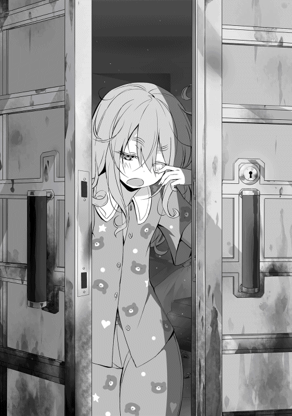

| 食いしん坊エルフ4 | |
| なっとうごはん | |
| TOブックス (2016) | |
ホビーゴーレム、それは自我を持って戦う、子供に大人気のオモチャ。白エルフ聖女エルティナ（中身おっさん）も友達に誘われて購入し、自分の魔力を注いで作り出したゴーレム・ムセルに我が子の様な愛着を覚える。毎日グルメを楽しみながら、お店に通ってパーツを買い、ホビー雑誌の記事を読んで次々とムセルをチューンナップ。そして仲間たちとチームを結成し、ついにエルティナはゴーレムのバトル競技「ゴーレムマスターズ」へと参戦する！ ――遊びもグルメも常に全身全霊ガチバトル。それが食いしん坊エルフの誓い。
イラスト●らむ屋
デザイン●木村デザイン・ラボ
◆◆◆ アルフォンス ◆◆◆
「よく来てくれた。アルフォンス・ゲイロン」
謁見の間ではなくウォルガング国王陛下の私室に通された俺は、極度の緊張下にあった。このような事態は異例中の異例だからだ。
十年近くも陛下とのやり取りがあったが、私室に通されるなど今までなかった。これは恐らく他の者には聞かれたくない話なのだろう。
国王陛下の私室には驚くほど物が少ない。ベッドと椅子とテーブルそれだけしかなかった。部屋に窓すらないのだ。部屋を照らすのは簡素な魔導照明のみである。一国の王の部屋にしてはあまりにも殺風景だ。しかし、その三つが最高級の職人の手によって作られていることは明らかだった。
「では、報告を聞こうかの？ 勇者タカアキとフウタ男爵からは、既に報告は受けておる故、そなたで最後じゃ」
「はっ、それでは報告させていただきます」
アクアルネ海岸のキャンプで起こった出来事を俺は知っている限り国王陛下に詳しく説明した。俺が知っているのは、エルティナに関することだ。
エルティナが『桃使い』という不思議な力を持つ存在であること。彼女には『桃先輩』という、言葉を話す奇妙な果物が憑いていること。そして......エルティナが決意を以っておこなった『真・身魂融合』のことも隠さずに話した。
国王陛下は初めは静かに聞いていたが、段々と表情が険しくなってゆく。やがて『真・身魂融合』の話に移ると勢いよく立ち上がり、俺の両肩をわし掴んだ。
その眼は見開き、顔から汗が大量に噴き出ている。これほど表情に余裕のない国王陛下を見るのは初めてだ。
「アルフォンスよ！ その時のエルティナの様子を詳しく教えよ!!」
俺はその時の様子を事細かく教えた。忘れることなんて、できるはずがない。あの戦いは俺にとっても辛い出来事だったのだから。
それから、国王陛下は融合時に輝いていた光の色まで詳しく教えろと仰った。それがいったい何に関係があるのだろうか？ 隠す必要性もないので素直に答えた。
「淡い緑色の優しい光でした」
「緑......緑とな!?」
顎に手を当て考え込む。これは、十年近くも見続けてきた陛下の癖だ。
「ふむ......取り敢えずは、『赤』ではないのだな？」
「はっ、間違いありません」
俺の答えを受け、立ち上がっていた国王陛下は、ゆっくりと腰を下ろし顔の汗を拭った。その顔には疲労の色が濃い。
「ふむ、そうか......アルフォンスよ、報告ご苦労じゃった」
「国王陛下は『真・身魂融合』のことをご存じなので？」
エルティナの件に関しては、俺も他人ごとでは済まされない。少しでも情報が欲しいと思い、何か知っているであろう国王陛下に訊ねてみた。
「今は言えぬ。すまなんだな」
「いえ......それでは、これで失礼します」
国王陛下に頭を下げ、彼の簡素な私室を後にする。
国王陛下は明らかに『真・身魂融合』について何か知っている。それも、悪い方についてだ。彼が愛するエルティナが、それをおこなったと聞いた瞬間から表情が一変した。国王陛下にまつわる噂は悲劇的なものが多いが......まさか、『真・身魂融合』と何か関係があるのだろうか？
大理石でできた廊下を一人考えながら歩くも、答えなど出るはずもない。
「本当にあいつは......手のかかるガキンチョだよ」
頭をバリバリと掻き、思わず愚痴を呟いてしまう。今日は正直な話、もう疲れた。妻のミランダに慰めてもらおう。
俺は考えることを放棄し、愛する妻の下に急いだのだった。
◆◆◆ ウォルガング ◆◆◆
「よもや、『身魂融合』の名を聞くことになるとは......」
このワシ、ウォルガング・ラ・ラングステンにとって、もっとも忌まわしい言葉......『身魂融合』。ワシの大切な者達を奪った、『黒い男』が使っていた忌まわしき秘術。最初に両親、そして恋人、我が最初の子までもが『黒い男』の身魂融合の餌食になった。
それは、ラングステン王国にとっても、決して良い言葉ではない。
『黒い男』のような者が過去に存在していたと記される古い書物が、王宮の奥にある資料室に秘蔵されている。その本の名は......『全てを喰らう者』
遥か昔のこと......ラングステン王国に、身魂融合という不思議な能力を持った一人の男がいた。その男は、優しく大人しい男だったという。誰にでも親切と評判の男だった。
ところが......ある日を境に、豹変したそうだ。突然性格が歪み、誰にでも当たり散らし、遂には若い娘に暴行までおこなった。次第に男の行動は、常識を逸脱し始める。
その男は人を喰い始めた。最初は教会に安置されていた死体を。次第に標的は、生きた者へと変わっていった。自分より弱い者を狙い......喰らう。
その男は喰らえば喰らうほど......強くなっていった。これが『身魂融合』の恐るべき能力であると記されている。相手を『食べる』ことにより、その能力を無理やり奪うのだそうだ。
やがて男は、誰も勝てなくなるほどの強さを手に入れた。人を喰い、村を喰い、町を喰い、国を喰い、遂にはこの世界をも喰らおうとした。男は憎悪の塊、絶望の権化、欲望そのものだった。
その男に対して各国は何もしなかったわけではない。果敢に抵抗を試みていたのだ。しかし、その男はどういうわけか、ありとあらゆる攻撃を受け付けず、圧倒的な破壊力を持った得体の知れない攻撃を繰り出してきた。
その攻撃は止めることができず......その上、かわすことも困難を極めた。そのため、名立たる騎士団達ですら歯が立たなかったのである。たった一人の男のために、世界が滅びようとしていた。その時、一人の少女が立ち上がった。
少女は不思議な力を持っていて、周りからは女神マイアスの化身だと言われていた。少女はその力を以って男の前に立ち塞がり、暴挙を止めようとした。しかし、男の力は想像を遥かに超えて高まっていた。
奮闘空しく少女は倒された。しかし、少女は何度でも蘇った。
何度倒されても男の暴挙を止めようと、果敢に挑む少女を見た一人の冒険者は、世界中の力ある者達に訴えた。このまま見てるつもりか、と。
その言葉に動かされた者が、続々と少女の下に集った。遂には、世界中の力ある者が全て少女の下に集まったのだ。
そして、世界中の英雄、勇者、冒険者達が、女神マイアスの化身と共に男との戦いに臨み、多くの犠牲を払って男を倒した......と、しめられている。
「やはり......似ている『黒い男』と『全てを喰らう者』は」
この書物に記された男と能力は同じと言っていい。
あの『黒い男』がワシに刻んだ屈辱......忘れようにない！
その男は、突然やってきた。全身を黒で染め上げたかのような姿。実際は、黒いオーラのようなもので覆われた巨躯の男。顔には奇妙な仮面を付けていて素顔はわからない。髪は黒の長髪。肌は褐色。とにかく不気味な男だった。
尊敬する両親を目の前で喰われた。七歳の時だ。
飛び散る赤い血と『赤い光』。屈強を誇った王宮騎士団も全滅させられた。何故かワシは、標的にされず生き残った。理由は今でもわからない。
愛する人を喰われた。十五歳の時だ。
当時、ワシは既に最強の戦士と言われていた。愛しい恋人もでき、全てが順調だった。だが、『黒い男』は突如、再びワシの前に姿を現した。
ワシは両親の仇とばかりに、攻撃魔法を放ち、続けて剣で切りかかった。だが......ワシの剣と魔法は『黒い男』には届かず、逆に一撃で打ちのめされてしまった。周りにいた護衛も、果敢に立ち向かったが全て殺された。そして、動けなくなったワシの目の前で......彼女は喰われた。思い出したくもないほど、酷い行為の後で......生きたまま喰われた。
最後に産まれたばかりの娘を喰われた。二十一歳の時だ。
娘の顔が思い出せない。憶えているのは、喰われている我が子の赤い血と赤い光のみ。無念だった。何も守れなかった。それを最後に『黒い男』は姿を消したままだ。
何故、ワシは殺されずにいるのか？ 何故、ワシに近い者を狙うのか？ 理由を聞けぬまま時は流れていった。
「......何故じゃ」
ワシは我が国に降臨した、小さな聖女の姿を思い出す。いつも、ニコニコ笑っている我が国の可愛らしい聖女。白エルフのふわふわした小さな少女。
あの子のお陰でこの国のみならず、自分すら力をもらっている。素直で、活発で、ちょっと変な可愛い少女だ。
「あの子が、そんなはずはない。あの優しき少女が『全てを喰らう者』であるはずがない！『黒い男』と同じであるはずが......！」
無意識の内に張り上げてしまった言葉に我に返り、目を瞑り深い溜め息を吐く。ワシしかいないさみしい部屋に、再び静けさが戻った。
身魂融合。『黒い男』が使用した、世にもおぞましい邪術。生きている者を生きたまま、苦痛を与えつつ貪り喰い、女には屈辱を与え、心を壊してから喰らう。
喰われてゆく者からは、血のような赤い光が悲しげに飛び散っていた。まるで、魂の悲鳴のように......。
「あの男は赤......しかし、エルティナは緑」
アルフォンスの報告では、エルティナが身魂融合をおこなった際に放たれていた光の色は、淡い緑色だったと聞く。とても、優しい光だった......と。
身魂融合にも、種類があるとでもいうのであろうか？ いずれにしても、これは忌々しきことである。万が一のことを考え、覚悟をしておく必要があるのかもしれない。
「そのようなことには、なって欲しくはないものじゃ......」
ワシは気持ちを切り替え、残った仕事を片付けるために自室を後にした。
◆◆◆ マイアス ◆◆◆
「ただいま戻りました」
「おかえりなさいませ、マイアス様」
出雲から戻ってきた私に気付き、天使のミレットが駆け付けてきた。金髪巻き毛の幼児タイプの天使で私のお気に入りだ。ぷくぷくのほっぺが堪らなくラブリー。
「やはり、出雲は遠いですね。たまにはカーンテヒルで神様会議をして欲しいものです」
「正気でございますか？ あの方々をこちらに招かれては、世界に多大な『被害』が発生いたします。マイアス様が苦労をすれば、それで全てが丸く収まります」
この子は毒舌なのがたまに傷だ。どうして、こう育っちゃったのかなぁ？ 愛情を持って育てたのに。お母さん悲しいわ。よよよ......。
「そ、それよりも......天界に変わりはありませんでしたか？」
「はい、至って平穏でございました」
私は羽織っていたコートをミレットに渡し、いつも着ている女神の服に着替えた。やはり、普段着ている服が一番良く肌に馴染む。
それは、肌が透けて見えるほど薄い生地で作られたワンピースだ。これは月の神から送られた物で、それ以前の私は裸で過ごしていた。天使達も裸だし自分だけが服を着るのもどうかと思っていたのだ。
服を送られた時も着る気にはならなかったのだが、その服の素晴らしい触り心地に服を作った月の子供達の愛情を感じ取ってしまったので、もらって以降は服を着るようになった。
「ふぅ......やはり、着慣れた服が一番です。出雲ではこのような姿を晒してしまえば、男神達に何をされるか、わかったものではないですからね」
「ご苦労なさりましたね。そのお陰でカーンテヒルは今日も平和です」
ミレットがトレーに、焼き立てのクッキーと紅茶を載せて飛んできた。それを、天界を支える雲で作った白いテーブルの上に載せる。私が寝っ転がっているソファーも同じ素材だ。ふわふわのもっこもこで寝心地がいい。
現在、私がいる場所は天界の北に位置する自室だ。部屋といっても壁はないし区切りもない。テーブルとソファーが設置されているだけだ。
「ありがとう、ミレット。あら、茶葉を変えたのね？ 良い香りだわ」
体を起こし紅茶に口を付けると、素晴らしい香りが鼻腔に流れ込んできた。その香りを堪能しつつ、私はステータス画面を呼び出す。私の可愛い『約束の子』達の成長を確認するためだ。きちんと成長しているか楽しみ。さてさて......と。
「あら、四十人？ ウォルちゃんにお告げをしたのは、三十四人だったはずだけど......」
「きっと、一クラスの人数を合わせるために、増やしたんじゃないでしょうか？」
「ふむふむ、その可能性はありますね。一応、その子達も候補として見守ってみますか」
ウォルガング君が私のお告げ以外に加えた子供は六人。ザイン・ヴォルガー、ブランナ・クイン・ハーツ、ガイリンクード・エグゼダイト、ユウユウ・カサラ、アルア・クゥ・ルフト。そして......エルティナ・ランフォーリ・エティル。
あら、珍しい。白エルフじゃない。この子が、どう成長していくか楽しみになってきた。顔も可愛いし。私は一人一人のステータスを確認しながら、クッキーとお茶を交互に楽しんだ。最近はこの作業が楽しい。我が子の成長を見守る母親のような気分だ。
まぁ実質、私はこの世界の母親みたいな者だから間違いはない。えっへん。
『ライオット』７歳 男 腕力１２７ 生命力１３５ 俊敏１３５ 魔力３５
うんうん、順調に育っているわね。この子はとりわけ成長が早いわ。よしよし。
『プリエナ』７歳 女 腕力１５ 生命力３８ 俊敏３６ 魔力８８
狸ちゃんは成長が遅いわね......これからに期待かしら。でも、可愛いから良し。
『ダナン』７歳 男 腕力６１ 生命力７３ 俊敏４５ 魔力４８
この子は平均的ね。それでも同年代の子供よりも遥かに高い能力なのだけど。
皆、きちんと成長しているようで安心した。さて、ウォルガング君が加えた五人のステータスも確認しておきましょうか。
「ええっと......纏めて表示っと」
『ザイン』 ７歳 男 腕力９５ 生命力１０２ 俊敏１２２ 魔力１０２
『ブランナ』 ７歳 女 腕力２８０ 生命力３８９ 俊敏１１７ 魔力１８４
『ガイリンクード』７歳 男 腕力１８６ 生命力１５２ 俊敏１１９ 魔力１４８
『ユウユウ』 ７歳 女 腕力９９９ 生命力９９９ 俊敏１５ 魔力５０
『アルア』 ？歳 女 腕力あはは 生命力あはは 俊敏あはは 魔力あはは
『珍獣』 ？歳 雌 腕力ふ 生命力き 俊敏ゅ 魔力ん
「ぶはっ!?......なにこれ？」
そのステータスを見て理解した瞬間、私は口に含んだ紅茶を吹き出してしまった。
「マイアス様......きちゃないです」
ミレットが苦情を申し立ててくるが、今はそれどころではない。明らかにおかしい子が、三名ほど表示されているからだ。イレギュラー要素にもほどがある。
「こ、この子達は一体......？」
私は震える声で思わず呟いてしまった。この能力表示がカンストしている、ユウユウという子は百歩譲って良しとしても、残りの二人は見過ごすわけにはいかない。本来、数字で表示されている部分に、文字を表示させてきているのだ。
エルティナという子に至っては、名前表示すらおかしい。もう、これは神に対する挑戦だと判断していいだろう。そんな悪い子は、事細かく詳細を見ちゃいますからね！
私は『珍獣』と表示されている部分をタッチし、詳細なデータを表示させる。女神である私が作り出した、特殊魔法『ステート』にかかれば、この子のデータなんて丸裸にできるのだ。うふふ、さてさて......貴女はどんな子なのかしら？
勝利を疑わない私は、再び紅茶を口に含んだ。差し詰め、これは勝利の美酒と言ったところかしら？
『エルティナ・ランフォーリ・エティル』７歳（仮）女 白き可能性の珍獣
職業......貴様......見ているな!?
ぶばぁぁぁぁぁぁぁぁぁぁぁっ！
「げっほ！ うげっほ！ 器官に入った！ げほっ！ げほっ！」
そのでかでかと表示された文章を見た瞬間、再び口に含んだ紅茶を吹き出してしまった。
まさか女神である私の魔法を以ってしても、このような有様になろうとは、誰が想像できたであろうか？ 加えて私に肉体ダメージと精神ダメージまでも与えてくるとは！
私は悔しさのあまりテーブルをバンバン叩いた。
「マイアス様。台バンはお止めください」
「ミレットぉ......この子のステータスが私を虐めるのぉ」
再びステータス表示されている画面を見ると......。
『ぷーくすくす。ねぇ、今どんな気持ち？ どんな気持ち？』
と新しい文章が表示されていた。
「くきぃぃぃぃぃぃぃぃぃぃいぃぃぃぃっ！」
「マ、アイアス様!?」
ステータス画面に完全敗北を喫した私は、暫くの間どすどすと地団太を踏み続けることとなったのだった。悔しいっ！
◆◆◆ エルティナ ◆◆◆
ふきゅん？ 空から何者かの断末魔のような声が聞こえたが......気のせいかな？ まぁ、そんなことはどうでもいいか。それよりも今は、こいつのことだ。
キャンプの帰り際、ダナンとララァに渡されたソフトボール程度の大きさの赤い卵。その卵の炎のマークが特徴的で、とても印象に残った。
こいつをどうしようかと、自室のベッドの上にて思案していたところなのだ。
「目玉焼きにするべきか、茹で玉子にするべきか？ ここはオムライスにするという選択肢も捨てがたい。いや待て、シンプルにオムレツにするべきか？」
これだけ大きければ、さぞかし食べ応えのある玉子料理になってくれるだろう。非常に楽しみだ。ふっきゅんきゅんきゅん......。
「おっと、卵のことは後でもいいか。それよりも、ヤドカリ君と真・身魂融合してパワーアップした、俺の能力を調べなくては！」
俺の魂にはヤドカリ君の魂が、安らかな眠りに就いている。桃先輩の話を信じるのであれば、俺は超絶パワーを獲得した桃使い、ということになるのだ。
であるならば、これは調べざるをえないではないか！（わくわく）
「ふっきゅん！ 来たぜ......俺の時代がなぁ！」
俺は期待で胸を膨らませながら自室を飛び出し、ヒーラー協会の裏にある空き地へと走って行ったのだった。ばたばた。
さて、この裏の空き地だが所有者はヒーラー協会である。元々はヒーラー協会を増築しようと、レイエンさんの前の代のギルドマスターが購入したそうなのだが、増築前に代替わりし再検討した結果、現状でもまったく問題がなかったため計画は白紙に戻った。その結果、土地だけがここに放置されている状態だ。
一応、土地の整備はしてあったようで、空き地の中央部分は土が見えている。それ以外の場所には雑草が生え放題である。
現在は資材置き場程度にしか利用しておらず、リヤカーやスコップなどが置かれている。俺はここを利用して『魔法技』や、トレーニングをしていたのだ。
空き地を見渡すと、俺が集めた微妙なトレーニング用の道具達が転がっていた。
木の棒で剣を練習。ボロボロの物干し竿で槍の練習。へこんだフライパンで斧を、酒の空き瓶で鈍器の練習だ。どいつもこいつも捨てられたり使えなくなった物ばかりだが、俺にとっては良き相棒達である。たとえ、俺に武器の才能がなくても、こいつらを使った練習は無駄じゃないはずだ。......最近は時間がなくて、あまり練習していないが。
「おいでませ！ 桃先輩！」
俺の小さな手に光が集まり、未熟な桃が姿を現した。桃先輩だ。
ヤドカリ君と融合した俺の強さを、桃先輩に分析してもらおうと思ったのだ。
「ん？ どうしたエルティナ。桃力の訓練の時間には、まだ早いぞ？」
キャンプの一件以来、桃先輩は俺を名前で呼んでくれるようになった。少しは認めてもらえるようになったのかもしれない。地味に嬉しい変化だ。
「ふきゅん、ヤドカリ君と真・身魂融合を果たした俺の能力を試してみようかと思ったんだ。それで詳しいデータを桃先輩に確認してもらおうと」
「ふむ、いいだろう。では、そこの漬物石を叩いてみるか......と、その前に身魂融合だ」
「応！ 身魂融合！」
桃先輩は身魂融合しても、事が済むと分離して帰ってしまう。
これは帰るというよりも、オンラインをオフラインにすると言った方がいい。
彼は疑似身魂融合『ソウル・フュージョン・リンクシステム』という、システムを用いて遠く離れた桃使い達とコンタクトをとっているのだ。
桃使いが召喚する特殊な桃に、そのシステムの特殊な端末を組み込んで、食べると疑似身魂融合が成立、『ソウル・フュージョン・リンクシステム』が使用可能になる。
そのようなことが、どうしてできるのか？ と以前、聞いてみたのだが......。
「教えてもいいが......頭がパンクしても責任は取らないぞ？」
「謹んで辞退させていただきます」
という、壮絶なやり取りがあったのだ！ 命には代えられないんだぜ！（震え声）
尚、その端末は使い捨てで、食べ終えて二十四時間経過すると消化されてしまう。非常に体に優しい端末なのだ。ただし、桃先輩自体は厳しい。
桃先輩が指示した漬物石は、ヒーラー協会でミランダさんが昔使っていた物だ。少し重過ぎたので、新しく買い替えた際に譲ってもらったのだが......これと言って使い道がなく、腰を下ろす椅子代わりにしか使っていない。それ以外は、もんじゃが上で丸くなっている程度の使い道しかなかったのだ。
「ほぅ......俺の進化した超絶ぱぅわーで、試し割りをするんだな？」
『まぁ、そんなところだ。真・身魂融合は対象の能力を、そっくりそのまま取り込む。最早、おまえはかつてのエルティナではない』
どうやら、俺の時代がぬるりとやってきたらしい。もう、守られっぱなしの俺は、ここにはいない。皆を守るヒーローが新たに生まれたのだ。それでは、試し割りといこうか！
「んん〜〜〜〜〜〜〜〜〜〜！」
俺は気合を入れた！ 体中にヤドカリ君の力が行き渡る感じがする！
「はあぁぁぁぁぁぁぁぁぁぁぁぁぁっ！」
更に気合を入れる！ いける！ これならいけるぞ！
「だぁぁぁぁぁい、もぉぉぉぉぉ......」
『早くやれ』
「申し訳ございません」
気合いの途中で桃先輩に怒られた。どうやら長過ぎたらしい。しょぼん。
仕方がない、不完全燃焼だが十分気合いは入れた。これならば、こんな石ころ程度など、余裕で粉砕できるだろう。さらばだ！ 漬物石！
「ちょぁぁぁぁぁぁぁぁっ！」
俺は渾身の力を持って拳を漬物石目がけて振り下ろした。ぐきっ！
「ひぎぃ!?」
激烈な痛みが襲いかかってきた。そのあまりの痛みに、俺は地面を転がり回るはめになった。もちろん、漬物石にはひび一つ入っていない。俺の必殺の拳は、漬物石の圧倒的な防御力の前に無残な姿を晒し、完全敗北を喫してしまったのだ！ がっでむ！
『ん？ おかしいな......もう一度だ」
「その容赦のなさに、マジで震えてきやがった......おごごごご」
腫れ上がった小さな拳に、涙目で『ヒール』を施している俺に対し、まさかのワンモアである。桃先輩の容赦のない発言に戦慄を覚えざるを得ない。
『おかしいな、ヤドカリ君の能力であるなら、この程度の石を割ることなど容易いはずなのだが......いったい原因はなんだ？』
「ふぅ......『ヒール』がなければ即死だったぜ。これは、いったいどういうことなんだ？ 俺は真・身魂融合で超絶パワーアップしたんじゃなかったのか？」
『もしかしたら、真・身魂融合のタイプが「英雄の傷跡」ではないのかもしれないな。別のタイプである「魔導の咎人」かもしれない。エルティナ、おまえの身体を調べてみるぞ』
桃先輩は俺をスキャンし始めた。俺の頭上から光の輪がゆっくりと降りてくる。
『おかしい、傷どころか痣もない。確かに真・身魂融合を果たしたはずなのに、その証がどこにも見当たらないとは......』
「それって、俺が真・身魂融合の罪を背負っていないということか？ それじゃ、ヤドカリ君の覚悟が無駄になってしまうじゃないか」
『いや、そんなことはない。真・身魂融合には、さまざまなタイプが存在するのだが、おまえのタイプは極めて珍しいもののようだ。検索にもかからないとなると......上層部で情報を規制している可能性が高いな』
「ぶっちゃけた話、俺のタイプはわからないということなのか？」
『そういうことになる』
『英雄の傷跡』とは真・身魂融合の中でも、もっとも能力が上昇する反面、その罪の重さは一番重い。身体に醜い傷跡が刻まれてしまうのだ。上昇する能力は対象の能力に依存する。つまり、取り込んだ対象の能力が、そのまま全て加算されるらしい。もちろん、スキルや魔法も継承することとなる。
『魔導の咎人』は上昇する能力を魔力に全て変換するタイプだそうだ。身体に刻まれる罪は痣。紋章のようなそれが体に刻まれる。こちらは女性の桃使いに多いらしい。この二つが代表的な真・身魂融合のタイプだそうだ。
『仕方がない、桃アカデミーの上層部にかけあってみる。このままでは真・身魂融合を続けさせるわけにはいかないからな』
「桃アカデミー!? 桃先輩は学生だったのか......」
『ただ単に組織の名称だ。我らが桃使いの神が、洒落で名付けたらしい』
どういうセンスをしているんだ、うちの神様は（呆れ）。
『それでは、おまえの真・身魂融合のタイプを調べてくる。本来なら桃力の訓練がしたかったのだが仕方がない。俺が戻るまでは、桃力の使用を控えるようにな』
そう言って、桃先輩は俺とのリンクを終了したのだった。
「ふきゅん、またしても謎が謎を呼んでしまったな」
このままでは、謎の珍獣としての地位が確固たるものになってしまう。すでに手遅れな感じは否めないが。いや、その前に存在自体が謎だ。
俺は何故、あの森にいたのか？ どこから来たのか？ 本当の両親の顔も知らん。俺は本当に捨て子だったのかもわからないのだ。ここはファンタジー世界なので、本当に木の根っこから産まれたなんてこともありえなくもない。
そのように悲しい想像を働かせていると、無性に温もりが欲しくなってきた。後でヤッシュパパンとディアナママンに甘えに行こう。キャンプのことも話さないといけないしな。
空を見上げれば、そこには綺麗な青空に、綿菓子のような大きくふわふわした白い雲。いつもと変わらないフィリミシアの空だ。
と......その時、ぐぐぅ〜と俺の腹の虫達がハッスルし始めた。そろそろ昼時なのだろう。俺の『はら〜タイマー』は正確無比なのだ。
「腹も減ったし、昼飯でも食べるか」
俺は食事を摂るために、今日も賑やかであろう露店街へと足を運んだ。
予想どおり、今日も露店街は大勢の客達でごった返していた。
更にこの季節に限っては、素晴らしい光景が拝める。大勢の冒険者達が珍しい品物や食材を持ち込んで来たり、空腹を満たしにやって来るのだが......注目すべきは女性冒険者だ。
これぞファンタジーといった、まったく防御力のなさそうなビキニアーマーを、大半の女性冒険者達が身に着けて歩いているのだ。いいぞぉ......これっ！（大歓喜）
見よ！ あのはち切れんばかりの、柔らかそうなおっぱいを！ あの悩ましくも引き締まった腰のくびれを！ むっちむちな大きなお尻を！ 実に『ＹＥＳ！』ではないか！
「ＹＥＳ！ ＹＥＳ！ ＹＥＳ！」
そう連呼したのは俺ではない。いつの間にか、ロフト率いるスケベトリオが俺を囲むようにいたのだ。メンバーのスラックも、アカネも、笑顔が素晴らしい。
「この季節は最高だぜ......俺はやはり、夏が一番だと思う」
「あぁ......激しく同意だ。夏じゃねぇと、直にくびれと太ももが見れねぇからな」
「わちきも夏が最高さね。あの、でっぷりとしたケツの地肌が見れるのは今だけさね」
自分の欲望に忠実に従う彼らの行動はいつもどおりであった。ぶれないヤツらだ。
「おっす、ロフト達も昼飯か？」
しかし、彼から帰ってきた答えは、俺が予想していたものとは別の答えだった。
「いや、飯はさっき食った。今は心を満たしているところだ......うほっ！ いい乳！」
前方から歩いてきた、胸の大きな女性冒険者に敏感に反応するスケベ少年。彼は巨乳がお好みのようだ。あの大きさなら......戦闘力８７と言ったところか。その割には少し垂れているところをみると、魔法を専門に使用する冒険者といったところだな。
ちなみに、エレノアさんは治癒魔法専門に見えるが、実は近接戦闘もこなす。そんな彼女は、毎日の筋力トレーニングを欠かさない。故にあのスタイルをキープできているのだ。
ぽっちゃりの癖に体重を気にするエミール姉は、エレノアさんを見習うべきだ。
同じくヒーラー仲間のディレ姉と、受付のペペローナさんは謎の力によってスタイルが崩れない。どういうことなのだろうか？ ティファ姉は......対象外とする！（決定）
「まぁいいや。俺は腹が減っているから飯を食ってくる。あまり無茶するなよ？」
「おぉ、わかった！ きたきたきた！ 小麦色の肌が眩しい！」
いつも色気よりも食い気の方が勝る俺は食欲を満たすために、既に色々と手遅れな少年少女に別れを告げて、その場を立ち去った。その直後......激しい音と共に、空に三つの星が一瞬輝いた。ムチャシヤガッテ......。
彼らの蛮勇の記憶を華麗にポイ捨てし、再び俺は露店街を歩き出した。
さぁ、何を食べようか？ この露店街は日々進化を遂げているのだ。魔族戦争が終わってからというもの、各国々から腕の立つ料理人達がフィリミシアに流れて来ているのだ。
その中でも......あの店のおっちゃんは、かなりの腕前だったな。
「よし......あそこにするか！」
目的地も決まり、俺の足取りは軽くなった。食事の準備として『フリースペース』から財布を取り出す。可愛らしい兎の絵が描いてある子供用のがま口財布だ。これはネーシャさんから頂いた物で、俺は結構気に入っている。
「うん、準備はばっちりだぁ......さあ、ユクゾッ！」
俺はバタバタと目的の店に向かって走り出した......が、途中で体力が尽き、急遽歩くことしたのだった。がっでむ。
この時間帯になると、一般市民も加わり非常に混雑するようになる。もちろん、昼食を摂るためにやって来るのだ。その活気はフィリミシアで一番といってもいい。
この活気がある時間帯が一番好きなのだ。この時間帯は一種のお祭り状態になっていて気分が否応なしに高まっていく。それは俺だけではなさそうで、店に呼び込む店員の声にも熱が籠っているのがその証拠だ。
「安くて美味い、とんこつラーメンはこの店だよ〜！」
「新作ハンバーガー『トリプルチーズバーガー』いかがですか〜！」
「そこのお兄さん！ 可愛い子が入荷したよ！ お一つもらってやってくれないか!?」
うん、やはりいい。若干、表現がおかしい店があったが誤差だろう。そこかしこに、良い音と美味しそうな匂い。料理を食べている人々は、皆......笑顔だ。
「勇者様直伝！『真・漢ラーメン』は、ここでしか食べられないよ〜！」
バカ野郎！ それは封印すべき暗黒物質だ！ 死者が出るぞ!? いつ伝授したんだ！
「ぶへぉぼっ!? お、俺は『漢』になるんだ......ぐふぅ！」
「もう止めて！ 貴方の命は風前の灯火よ!?」
なんということだろうか。露店街に邪悪な聖域が爆誕してしまった。店の前に倒れ伏す一般市民と冒険者達。そして、猛然と『真・漢ラーメン』すする黒エルフの女性。
物凄く見慣れた女性だが、あえてスルーするー（激うまギャグ）。
ニンニク臭くて近寄れないということもある。後でタカアキに苦情を言っておかねば。
気持ちを切り替えて目的の店へと足を速める。中心街にある小洒落たレストランや喫茶店もいいが、やっぱり俺は露店街の方が性に合ってるらしい。
掘立小屋や、あばら家みたいな露店がずらりと並び、珍しい料理を出す店や、珍しい道具を並べている店がそこかしこに存在する。そして、それを求めて集まって来る人々の姿。
ここは、見てて飽きないのだ。少し乱雑で小汚いが......ここには、他にはない熱気と活力がある。その雰囲気が、俺に元気を分けてくれているのだ。
さて、さて、俺の目的の料理店は......と。わぁお、今日も混んでるなぁ（白目）。
「いらしゃい！ きょうは、なに、たべるね？」
ここは、以前に麻婆豆腐を食べた店『脚芽瑠躯螺津知』だ。
俺はこの店の麻婆豆腐を食べた際、ここは当たりだと踏んだ。その予想どおり、その後の口コミによって大評判になり、有名となった今では常に満席状態だ。
店は客でごった返しており、カウンターに座れない客は立ったまま食べていたり、適当な所に座って食事を摂っていた。そこまでして食べたい店へと成長していたのである。
実はここに来るのは今日で五回目だ。炒飯に青椒肉絲、水餃子に海老ワンタン。いずれも素晴らしい料理を出してくれた。あの感動は、要領の少ない脳内にメモリー済みだ。俺は店先に立てられた、看板兼メニュー表である立て札とにらめっこする。
ふむ、まだまだ色々な料理があるが......ふきゅん、これはっ!? おっしゃっ！ 決めた！ 今日はこれだ！
「おっちゃん、『餡かけ炒飯』おくれ！」
「あいよ！ ちょと、まつ、よろし！」
俺は店の隅にある、空の小さな酒樽に腰を下ろした。この店が繁盛し出してからというもの滅多にカウンターに座れなくなったので、今ではここが俺の指定席になっている。
幸運なことに、ここでは調理工程が良く見えるのだ。彼の調理技術を学ぶには非常に都合がいい。今日もしっかりと学んでいくことにしよう。
まずは熱した中華鍋に油を馴染ませる。次は卵を入れ、手早くかき混ぜ半熟になるのを待つ。ご飯を投入。ご飯は冷えた物を使ってるようだ。激しく体を揺すりながら、豪快に卵をご飯に絡めていく。激しい！ ガコガコと中華鍋が咆えているようだ。
ネギの微塵切りを入れ、塩コショウで味を調えていく。おっと、あの黒い液体は？
あぁ、この芳ばしい香りは醤油だ。香り付けかな？ しかし、動きに無駄がない。勉強になるなぁ。
最後に酒を入れる。香り付けかな？ でも、醤油を入れていたよな......わからん。
これで玉子炒飯が完成した。これだけでも、素晴らしい料理だということが想像できるが......本料理には、これに肉野菜の旨煮がドッキングする。別の鍋でコトコト温められていた、とろとろの旨煮を玉子炒飯にかけて完成するのだ。
「あいよー、おまたせね！ ゆくり、たべる、よろし！」
「ふきゅん！ おいしそうだぁ......いただきます！」
俺はレンゲを手に取り、餡かけ炒飯を堪能し始めた。
肉野菜の餡かけには、ブッチョラビのモモ肉、モヤシ、チンゲン菜、ニンジン、ピーマンなど、さまざまな野菜が入っていた。シャキシャキした歯触りと、甘味、苦み、肉のコクが混然となって美味い。しかも、とろ〜りとした餡が堪らない。この料理だけでも十分に金が取れる一品だ。
次は炒飯を味わう。まずは米の状態からチェックだ。
......素晴らしい、米はくっ付かずにパラパラと見事に離れ落ちる。きちんと、一粒一粒に玉子がコーティングされている証拠だ。俺の腕では、お米がくっ付いてしまう。やはり、料理には腕力が必須のようだ（敗北）。
ただ眺めているだけもなんなので、美味しそうな仕事を施されたお米を口に運んだ。
もう、我慢できなくなったともいうのだが。
口の中でお米達が、玉子とネギをパートナーにダンスを踊っているようだ。お米の淡泊で優しい甘みに、玉子のふうわりと甘さが合わさる。しかし、そのダレてしまいそうな甘みをネギがシャキッとさせるのだ。なんというコンビネーションダンスなのだろうか!?
思わずふっきゅん、ふっきゅん、言ってしまいそうだ！「ふきゅん！」（言っている）
だが、勘違いしてはいけない。これは餡かけ炒飯なのだ！ 餡かけと炒飯を一緒に食べてこそ、この料理の真価が発揮されるのである。
では、その真価を体験しようではないか！ 俺は餡かけと炒飯が奇跡のドッキングを果たしている箇所に、容赦なくレンゲを挿入した！ それをすくい上げ、食べようとしたところで気付いてしまった。そのレンゲに載った餡かけ炒飯の美しさに！
太陽の光に照らされてキラキラと輝く餡！ それを際立たせる炒飯の素朴さ！ これこそ、食べれる宝石に相違ない！
なんてことを感じた俺だが、その感動も食欲の前には無力であった。その美しい宝石とまで呼んだレンゲ上の餡かけ炒飯を容赦なく口に入れる。
「はふっ、ほふっ、しゃく......しゃく、もきゅ、もきゅ......ごくん」
うぅぅぅぅぅ、まぁぁぁぁぁぁ、いぃぃぃぃぃぃぃ、ぞぉぉぉぉぉぉぉぉ！
俺は餡かけ炒飯のあまりの美味さに、口から怪光線を発射するところだった。
もちろん、出ないのだが。そんなものが出たら、ここの店の客達全員が口から怪光線を放ちまくって、眩しさのあまりに食事ができなくなってしまう。
パラパラと解れる米粒にシャキシャキの野菜達。それを纏める旨みが凝縮されたトロトロの餡。そして、この熱さである。口の中が火傷しそうなほど熱いのだが、その熱さが堪らないのだ。はふはふしながら、口の中の熱を最低限外に逃がして飲み込んでゆく。熱さも料理の旨み成分だと思うのだ。
色、香り、味、歯ごたえ、そして熱さ、どれをとってもパーフェクトだ！ 俺は店主のおっちゃんに、満面の笑顔と「美味い！」という言葉を進呈した。それを見た店主のおっちゃんは嬉しそうに笑っている。
現在、小食である俺は、量を少なく作ってもらっており、その分料金も安くしてもらっている。そのお陰で完食まで漕ぎ着けることができているのだ。量が少ないとはいえ、完食できると嬉しい。やがて、餡かけ炒飯を綺麗に食べ終えた俺は、開いた皿を店の洗い場にそっと置いた。露店街では、食べ終えて空いた食器は、自分で洗い場に置くのが暗黙のルールだ。
「ごちそうさま！ 美味しかったよ！」
「まいどありね！ また、くる、よろし！」
餡かけ炒飯の代金を渡す。銀貨三枚と非常にお安い。日本円にして三百円。やっす!? それでいて、手抜きなどなしの本格料理だ。食べれて幸せだなぁ......。俺は心身ともに満足して露店街を後にした。
事件が起こったのは、その日のヒーラー活動が終了した後のことだった。
いつものようにカルテをチェックしながら、レイエンさんの淹れてくれた紅茶とアマンダの店で購入したチーズクッキーを食べていた時のこと。治療所の方が騒がしいことに気付き向かうと、そこには午後の治療にて、路上で転んでしまい頭を打ってしまったというお年寄りに付き添っていた娘さんの姿があった。
「祖父が......祖父が......！」
非常に取り乱しており、気が高ぶっていて手が付けられない。いったい、どうしたというのだろうか？ 確かそのお年寄りはルレイ兄が担当して、完璧な治療を施していたはずだ。治療が終わった後、そのお年寄りは元気に自分の足で家に帰ったと聞く。
やがて、ティファ姉に宥められて落ち着きを取り戻した娘さんは事情を語りだした。話によれば、帰宅した彼女の祖父は普段どおりの生活を送っていたのだが、二時間ほど経った後、急に倒れてそのまま息を引き取ってしまったらしい。あまりに急なことだったので彼女も取り乱してしまい、助けを求めて無我夢中でヒーラー協会まで駆け付けたのだそうだ。素足で走って来たため、足の裏が血塗れで痛々しい。
彼女の治療を施し靴を貸し与えた後、俺達はカルテを携えて、その倒れたというお年寄りの下へと向かった。実際に見てみなければ原因がわからないからだ。
現場に到着すると白い布を顔に被せられた、お年寄りの横たわった姿があった。白い布は一切動いてはいない。それは既に彼が死んでいる証拠でもあった。俺達はその亡骸に祈りを捧げると死因を調べることにした。もちろん、家族には了承済みだ。
死因を詳しく調べるという行為だが、この世界ではそれが殆どおこなわれない。それは亡骸に対する冒涜だという意識が強いからだ。その一方で、死因を知りたいという家族や友人も多い。俺も死因を知りたかった。ルレイ兄の『ヒール』は完璧だったはずだ。それなのに、突如としてその日に亡くなってしまった。納得できない。
実はスラストさんに聞いた話では、こういった例は過去にもあったそうだ。当時は運が悪かった、治療が遅かった、といった推測がされていただけで詳しくは調べなかったそうなのだ。これは、『ヒール』による治療自体は完璧である、と信じられているからだ。
俺にしても『ヒール』に疑いを持ったことはない。俺の心の拠り所である治癒魔法に、疑いを持つなんて考えられなかったのだ。この一件を知るまでは......。
「まさか、こんな形で『医療魔法』を使うはめになるとはな......我は知る、汝の痛みを、苦しみを......『メディカルステート』！」
俺はコツコツと組み立て、実用にまで持ってきた新魔法で亡骸の状態をデータとして表示した。この『メディカルステート』は、対象の患部や病状のみを表示する医療魔法だ。カーンテヒルでは、原因や症状をパッと見た目で判断して、強引に『ヒール』や『クリアランス』で治療してしまうことが普通におこなわれてきた。でも、それでは魔力消費がバカにならないし、何よりヒーラーの負担が半端じゃない。魔族戦争で経験してわかったことだが『ヒール』には無駄が多いのだ。掠り傷でも重症でも発動すれば同じ量の魔力を消費して同じ効果が発揮される。極めて効率が悪い。
そこで俺は現在『ヒール』の細分化を進めている最中だ。それには症状を詳しく知る必要性が出てくる。そこで開発したのが、新たなる治癒魔法の分野、『医療魔法』だ。これは俺の中に残っていた『地球』の医療風景をうんうん言いながら思い出し、なるべくそれに近付けるように魔法の図式を組み立て完成させたものだ。『メディカルステート』が完成したのはキャンプに行く前の日で、実際に使用するのは今日が初めてである。
「......うん？ 死因は脳血管の破裂？ どうしてそんなことに？」
どういうことだ？『ヒール』は体内の治療にも有効で、この亡くなったお年寄りと同じ症状だった患者は、今尚元気に生活をしている。この亡くなられた患者にも、きちんと治療を施してあったはずだ。カルテを確認する限り落ち度は何もない。
「どうした、エルティナ。何かわかったのか？」
「うん、この人の死因は、脳血管の破裂によるものだ」
それを聞いたルレイ兄が絶句した。表情は強張り大量の汗が流れている。
「しっ......しかし、私の『ヒール』は完璧だったはず！ この方も、元気にご自宅へとお戻りになられたじゃないですか!?」
ルレイ兄に言うことも尤もである。隣で治療していた俺が見ても、惚れ惚れするような治癒魔法だった。考えたくはないが......俺はある結論を出した。
「考えられる原因は、『ヒール』自体に、何かしらの欠陥があるということだな」
俺の発言にヒーラー達に動揺が走った。今まで全幅の信頼を置いて使用していた治癒魔法に欠陥がある、とＳランクヒーラーである俺が言ったからだ。
「......エルティナ。それは確かなことなのか？ 場合によっては大問題に発展するぞ」
スラストさんの言うことはもっともだ。今の俺の発言は、今まで脈々と受け継いできたヒーラー達の歴史に、致命的な傷を付けることになる。
だが、それがどうした。俺にとってはそんなことよりも患者の安全な治療の方が何倍も大切なことなのだ。歴史だの誇りだの、人の命の前では薄っぺらい紙切れも同然だ。
俺は忘れてはいないぞ、ヒーラーは決して目の前の命を諦めてはならない。この亡くなった方の命は決して取り戻せない。だが......原因を究明すれば、これから同様のケースで命を落とす患者はいなくなる。それは、この方の命を諦めないのと同じだと思う。
「今、原因を探る。結論はそれからだ。我は知る、汝の内を、神秘を！『メディカルスコープ』！」
俺はもう一つの医療魔法『メディカルスコープ』を発動する。練度が足りなくて無詠唱化はまだ済んではいない。この医療魔法はＣＴスキャンをマネたものだ。きっかけはエレノアさんの服を透視し、素敵な体を拝もうといった邪悪な欲望だったが、魔法の図式を間違ったのか映ったのは骨格のみであった。当時は物凄くがっかりしたのだが、後にこの魔法って実は凄いんじゃね？ と気付き、実用化まで持ってきた魔法なのだ。実験にはヒュリティアに協力してもらっていた。レントゲンとは違って被曝しないから安心だ。
尚、彼女は健康そのものでとても綺麗な内部だった。後、映像は色付きで表示される。これが結構グロい。初めて見た時は「おっふ」と思わず漏らしてしまった。
おしっこじゃないからな!? 勘違いするんじゃないぞ！（戒め）
「......なんだこれは？ 脳の形が滅茶苦茶じゃないか!?」
四角い枠で囲われた映像には、亡くなった患者の脳髄が映し出されている。それが歪な形で『治療』されていたのだ。ヒュリティアで脳の形を、じっくりと観賞した俺には本来あるべき脳髄の形を理解している。亡くなった患者は頭を打ったと聞き及んでいるが、転んだだけで、ここまで歪になることなんてない。これは明らかにおかしい。
「この映像は......新魔法か。これが人の体内の映像か」
「うひぃ、結構グロテスクですね」
スラストさんは感心し、エミール姉は顔を青くしている。普段、血がドバドバ出ている患者を治療しているのだが、内臓の映像は苦手なようだ。まぁ、俺もそんなに好きじゃないが。あ、ホルモンは好きだぞ！ 炭火で焼いたら堪らんからなぁ......。
「っと、こっちの脳が正常な形だ。見てくれ」
俺は娘さんに協力してもらい、正常な脳髄の形をヒーラー達に見せた。はっきりと息を飲む声が聞こえる。皆、信じられないといった表情だ。無理もない。
「......エルティナ。このことはレイエンと話し合う必要がある。今はまだ公にはしないようにしてくれ。下手をすれば町がパニックになる可能性も否定できない。おまえ達もこのことは口にしないように」
スラストさんが皆に口止めを指示した。その判断は適格だ。ヒーラー達の治癒魔法は人々の最後の砦だ。それが使い物にならない、と知った時の絶望感は半端ではないだろう。無暗矢鱈に騒ぎ立てる者も現れないとは言えない。慎重に行動しなくては。
娘さんにもこのことは、まだ口にしないようにお願いをした。『ヒール』の欠陥を報告するという条件で要求を呑んでくれたのだ。彼女としても、愛する祖父を死に至らしめた原因を知りたいのだろう。気持ちは痛いほどわかる。
「きっと、『ヒール』の欠陥を解明してみせます。貴方の死は、決して無駄にはしない」
亡くなられた患者の方に祈りを捧げて、今日のところはお暇した。ヒーラー協会へと戻る俺達の表情は暗かった。ある意味、ヒーラー協会始まって以来の、重大な危機かもしれない。
ヒーラー協会に戻った俺達は早速、ギルドマスターのレイエンさんに、このことを報告した。彼は室内の机に置いた、ランプのか細い光を頼りに書類を書いていた。これは、彼の持病である『魔力多消費症』の対策である。魔力照明では多少なりとも魔力を消費してしまうため、極力魔力を消費しないように気を払っているのだ。俺達がもたらした重大な報告に、レイエンさんはその端正な顔を歪めることになった。
「なるほど......これは重大な案件です。これが事実だとすれば、現在尚、世界各地でおこなわれているヒーラー達の治療行為に、危険が潜んでいるということになります。早急に原因の究明が必要になってきますね」
ずれた眼鏡を元の位置に戻すと彼は立ち上がり、ギルドマスタールームの窓からフィリミシアの夜を眺めた。その彼に優しい月の光が当たり、物憂げな彼を照らす。
「このことは、我々だけでなんとかしましょう。一応、国王陛下には知らせますが、陛下も混乱を避けるべく、内々に事を解決するよう要求してくるはずです」
「そういうことだ。各ヒーラー達は『ヒール』について調べろ。一週間後にレポートを提出してもらう。それは、レイエンと俺とで纏める。エルティナも同様に頼む」
スラストさんの指示で、ヒーラー達はすぐさま『ヒール』について調べ始めた。二階にある資料室で『ヒール』の文献を徹底的に調べ上げる者。実際に『ヒール』を使用して確認する者。過去のカルテを全て調べる者。皆、必死だった。
今まで積み上げてきたものが、無残にも崩れようとしているのだ。必死にならないわけがない。それは俺とて同様だ。治癒魔法は俺にとって存在意義に等しい。命を救えない白エルフはただの珍獣だ。価値などない。
俺は皆とは違った方向で『ヒール』を調べようとしていた。そう、『ヒール』の細分化の過程で、何かわからないか期待しているのである。この作業は俺にしかできないらしく、今まで思い付いても実行まで漕ぎ着けない者が殆どだったそうだ。
というのは、魔法の細分化には膨大な魔力が必要になってくるのである。この世界はとにかく、素質と魔力がものをいう世界なのだ。脳筋には辛い世界設定である。
「はふん、これは骨が折れるぞ。どんだけ魔力を持っていくんだよ？」
現在、進行状況は六十パーセントといったところだろうか？ ガルンドラゴンとの死闘後に本格的な細分化を始めたのだが、俺の魔力量を以ってしても容易ではなかったのだ。
それでも、俺はやり遂げなくてはならない。少しでも原因の究明に近付くのであれば、身を削ってでも達成しなくては。
「でも、今日はこれまでだぁ......ふきゅん」
残念！ 俺の気力は尽きてしまった！（疲労）
「チュ、チュ、チュ！」
次の日の朝、俺は倦怠感と共に目が覚めた。もっちゅトリオが、いつものように窓際で鳴いて俺を起こしてくれる。彼らは時間に正確なのだ。
「おごごご......やはり、細分化作業の次の日は怠いぜぇ」
この倦怠感は、完全に魔力が回復していない証拠だ。この世界では、生物の生命活動に魔力が重要な役割を果たす。黒エルフは魔力がないように思われる節があるが、そんなことは決してない。彼らは魔力を放出することができないだけで、その体には膨大な魔力が秘められているのである。もったいない。
特に下級精霊など肉体を持たない者達にとって魔力は必要不可欠。そこで精霊達は魔法使い達に協力する代わりに魔力をもらっているわけだ。つまり、精霊達も生きるために労働をしているのである。お利口さんだぁ......（感心）。
「はふぅん、この倦怠感にお帰りいただくには、桃先生にお願いするしかない！」
俺はいつまで経っても小さい手の中で、桃先生を創り出そうとした。光が手の中に集まり、やがて桃色の瑞々しい果実が姿を現す。我らの桃先生である。
「ふきゅん！ いつ見ても美味しそうだぁ......いただきます！」
桃先生を一口齧るとシャクっと小気味いい音を立てて、甘くてさっぱりとした果汁が口いっぱいに広がる。俺の命を一年に渡って支え続けてくれた偉大なる果実の味だ。不思議なことに毎日食べても飽きることがない。当時は飽きてしまうのではないのか、と心配したのだが、そんなことはなかった。桃先生には隙などなかったのだ！（尊敬）
創り立ては小気味いい食感。少し置いておけば、蕩けるような柔らかさに変化する万能果実！ なんと隙の無い二段構え！ 流石、桃先生は格が違った！
「んぐんぐ......んぐ。ぷぅ、ごちそうさまでした！ げふぅ」
俺に今日を生きる気力と魔力を与えてくれた桃先生に感謝を捧げ、残った種をそっと部屋の隅にあるゴミ箱に収める。この部屋のゴミ箱は、既に桃先生のタネ置き場と言っても過言ではない。基本的に部屋ですることと言えば、寝るか勉強かの二択である。
桃先生をもの欲しそうに見つめていたとんぺーともんじゃ、もっちゅトリオにも桃先生を提供し、俺は寝間着から普段着に着替える。
基本的に聖女の服は仕事がある時しか着ない。それ以外の日は白いワンピースか、ヤッシュパパンから送られてくる、みょうちくりんな服を着ていることが多い。着ないともったいないし、気持ちを無下にはできないからだ。
本日の俺は、全てにおいてお休みの日なのだ。聖女としての仕事もなければ、ヒーラーの仕事も入っていない。完全無欠のお休みデーなのだ。やったぜ！
『ヒール』の謎について時間が許す限り調べられるわけだが、デイモンド爺さんは言った。
「ヒーラーは、健やかであるべし」
根を詰めてもどうにもならないし、焦っても良い結果が出ないことはわかっている。
それに、ここ最近の俺は、へこむような事柄が非常に多い。キャンプから帰ってきてまだ日も浅く、ヤドカリ君のことも完全に吹っ切れたわけでもないのだ。
したがって、今日は予定どおり実家に行って、思いっきり家族に甘えることにする！ 野望に燃える俺の視界に、ダナンとララァから譲られた赤い卵が入った。
ふむ、卵か......よし、お土産にプリンを作って持っていこう。早速お前の出番だ！
俺は赤い卵を手に取り、ヒーラー協会食堂へと向かった。
今日の食堂も大賑わいだった。朝にもかかわらず大勢の人でいっぱいなのは、利用している人達がヒーラーだけではないからだ。多くの者達が出勤前にヒーラー協会食堂に立ち寄り、美味しい朝ご飯を食べ、その日の活力を獲得して仕事場へと向かうのだ。
「今日も大賑わいだぁ......」
俺は皆に挨拶を交わし厨房へと向かった。厨房は一段落したのか、使用済みの調理器具を片付けている最中だ。調理場の皆に元気良く朝の挨拶を交わし、調理場を使わせてもらうことにする。さぁ、おまえの出番だぞ赤い卵！
俺はテーブルに赤い卵を叩き付け殻を割ろうと試みた......のだが。
「ん？ 全然割れてないな。力が弱過ぎたのか......もう一度だ」
今度は少し強めにテーブルに叩き付ける。しかし、卵の殻にはひび一つ入らなかった。
「な、何ぃ......!? 卵の殻の癖に、俺の攻撃を寄せ付けないだとっ！」
まるで、俺を嘲笑うかのごとく、その赤い卵の殻には傷一つ付いていなかったのだ。よかろう、俺の本気の一撃を貴様に食らわせてくれるわ！ 覚悟しやがれ！
俺は愛用の武器兼調理道具『ミニフライパン』を構え、小癪な赤い卵に振り下ろした。すると、叩き付ける角度が悪かったのか、スポーンと赤い卵が勢い良く吹っ飛び......。
「どるすといっ!?」
食器を下げに来た、ルレイ兄の額に命中して床に転がった。威力は抜群だ！（白目）
「うおぉ......大丈夫か？ ルレイ兄。傷は深いぞ、がっかりしろ！」
「いたた......もう、色々とがっかりですよ。最近はついてないなぁ」
ルレイ兄の赤く腫れた額に『ヒール』を施す。すると、たちまちの内にその腫れ上がった額は、特に問題なく元どおりに治ってしまった。
「外傷は完璧に治るんだよなぁ......千切れた手足だって完璧に接続できるのに、何故、脳だけがきちんと治らないのか......？」
「ふぅ、ありがとうございます。ですよねぇ......何故でしょうか？」
何気ないことにヒントはあるものだ。俺達は現在、その何気ないことをも見逃さない必要がある。この額を治療した出来事だってそうだ。ヒントは潜んでいる。
目に見える外傷は完璧に治せる、しかし、目に見えない内臓は治療に失敗することもある。この二点についての差は、見えるか見えないかである。
しかし、これだけで治療の失敗の原因だと決め付けるのは、時期尚早というものだ。もう少し、じっくりと調べ上げなくては。
「それにしても......何が飛んできたんですか？ 結構大きかったみたいですが」
「ふきゅん！ 忘れてた。どこに行ったんだ？」
「くひひひ......これのことかしら？」
赤い卵を探し、きょろきょろと辺りを見回していると、顔が隠れるほどの艶のある黒髪を伸ばしたナイスバディの女ヒーラー、ディレ姉がその赤い卵を持って近付いてきた。やはり、その不気味な髪型で色々と台無しである。
「おっ、それだぁ。ありがとう、ディレ姉」
「随分と珍しい物を持っているわね？ それは上位精霊の卵よ。卵といっても、精霊石でできた石の塊だから食べられないわ」
完全に行動を見透かされていた。そして食べられなかった。ここに俺の野望は潰えてしまったのだ。その様を見てクスクスと笑うミランダさん達。俺は恥ずかしさのあまり、戦犯である赤い卵を懐にしまい込み、戦術的撤退を試みたのであった。
せっかくお土産のプリンを作ろうと思ったのに、こいつのせいで厨房を利用できなくなってしまった。今更戻るのは、こっぱずかしい。仕方がない......実家に行く前に商店街でプリンを購入してゆこう。
まったく、ダナンとララァめ......俺に食えない物を渡すとは許せんな。お陰で恥ずかしい思いをしてしまったじゃないか！ 訴訟問題に発展するぞ！（責任転嫁）
......どこかで、男女のくしゃみが聞こえた気がした。たぶん気のせい。
俺は久々にネーシャさんと商店街に出向いた。デイモンド爺さんを看取った彼女は再びヒーラーとして復帰し、さまざまな治療活動に従事しているのだが、基本的には俺の付き人としての仕事が最優先の仕事なのだ。エレノアさんはマイアス教の司祭であるため、そちらの仕事が立て込んでいる。主に結婚式の進行役だ。
デルケット爺さんや他の司祭達も進行役を務めるのだが、ぶっちぎりで一番人気なのがエレノアさんだ。やはり、女性ならではの細かい配慮が受けているらしい。
デルケット爺さんは慣れ過ぎているせいで、結構大雑把な部分があるからなぁ。ダメってわけじゃないのだが、俺達のように進行役を一緒に任される者からして見れば、冷や冷やする進め方をする場合があるのだ。そこは熟練の進行役なので、何かあってもさりげなく誤魔化してしまうのだが......若い司祭がマネしてしまわないように願うばかりである。
そうそう、ビビッド兄とティファ姉の結婚式の日取りが決定した。一週間後の午後四時から、ヒーラー協会と繋がっているマイアス教会本堂にて、二人の挙式が執りおこなわれる。式が終わったら、そのままヒーラー協会食堂にて披露宴だ。よって、その日のヒーラー達も午後三時半で全ての活動を終了する手はずになっている。
無論、緊急時の受け入れ先として、数人のヒーラーが待機することとなる。そのヒーラーとは、ジェームス爺さんとヒルダ婆ちゃんの夫婦ヒーラーだ。なるべく多くの仲間に出席してもらいたいと、自ら申し出てくれたのだ。とてもありがたいことだ。
「じゃあ、行こうか。まずはお土産を買うために『エンジェルぷりん』に向かおう」
「えぇ、承知いたしました。それでは参りましょうか」
目的はカスタードプリン。エンジェルぷりんの看板商品にして、一躍有名店にのし上げた究極のプリンだ。その完成度は見事としか言いようがない。ふるふるした艶めかしい輝きを放つクリーム色をした本体。それに纏わり付くのは茶色に輝くカラメルソースだ。この組み合わせを考えた者に国民栄誉賞を与えたい。
ふるふると震えるプリンにスプーンを入れる時の興奮は他の追随を許さない。それを口に入れる時の感動もだ。口いっぱいに広がるねっとりとした甘み、溶けていくプリンの滑らかさに興奮を隠すことなどできやしない。そこにカラメルソースが追い打ちをかけてくる。ほろ苦さを纏ったあま〜いソースが、これまた甘いプリンを引き締め、甘さを引き立てるのだから恐ろしい。
まさかの、甘さが甘さを引き立てるのだ。これは危険な甘さだ！（大興奮）
しかも、お値段が安く設定してある。一つ銀貨一枚と大銅貨二枚だ。子供でも買えるので、いつも子供達で大賑わいなのである。無論、大人の女性もそれに負けないくらい多い。これは多くの人達に美味しいプリンを食べてもらいたい、という店長の粋な計らいから、この値段の設定になったという話だ。ありがたや、ありがたや。
「着きましたよ？ あらあら、相変わらず混んでること......」
「本当にいつ来ても混んでるなぁ」
エンジェルぷりんは、その名のとおりプリン専門店だ。その徹底振りは有名で、プリン以外は売らないという。その潔さが、返って好感を獲得するに至っているのかもしれない。
店長はごっついおっさんなのだが、言葉使いは女言葉だ。つまりは『おねぇ』である。
急いで長蛇の列の最後尾に並ぶ俺達。これ以上列が長くなったら実家に着く前に日が暮れてしまう。列に並んでいるのは、やはり女性と子供達ばかりだ。それも女性が殆ど......というか男性がいない。と思ったら一人だけいた。
その男性とは、我がクラスの超甘党フォクベルト・ドーモンであった。彼の掛けている眼鏡が日に照らされてキラキラと輝いている。まぶちぃ。
「おいぃ！ やはりフォクか〜！」
「ん......？ あぁ、エルティナじゃないですか」
ネーシャさんに列に並んでもらい、俺はフォクベルトの下に向かった。ただ、ぼへ〜と並んでいても時間がもったいないからだ。暇つぶしともいう。
「やぁ、エルティナもカスタードプリンがお目当てですか？」
並び慣れてるのか、フォクベルトは余裕の表情であった。彼は甘い物を手に入れるためなら目的も手段も選ばない。......目的くらいは選んだ方がいいかなぁ、とは思う。
「あぁ、お土産にカスタードプリンを買いに来たのさ。うちの家族はここのプリンが大好物だからな。もちろん、俺も大好物なんだぜ！」
エンジェルぷりんのプリンは、本当に美味いし種類も豊富だ。苺プリンに、バナナプリン、ミルクプリンに始まり......醤油プリンなんて変り物もあった。
醤油がプリンの甘さを引き立てる程度に使われている。味はみたらし団子のような感じだ。意外性があって俺は嫌いではない。とにかく種類が豊富で飽きない。それが人気の理由の一つであることは明白であろう。
「そうですか......ここのプリンは絶品ですからね、並んでも買う価値がありますよ」
「そうだな、美味い物のためならば、我慢もできるってもんだぁ」
暫くの間、フォクベルトと他愛もない話をした。すると時間が過ぎるのは早いもので、フォクベルトが店内に入る順番となった。
「それでは、お先に失礼します」
彼はそう言い残して店内に消えていった。超満面の笑顔で。
フォクベルトが店内に入ってしまったので、俺はネーシャさんがいる場所に戻ることにした。どさくさに紛れて店内に入るという反則は決してしない。そう、俺は食べ物に関することには、真摯に向き合う覚悟があるのだ。
食べ物についてズルをするなど、決して許されざる行為である（確信）。
「お友達ですか？」
「うん、あいつは甘い物が死ぬほど好きなんだよ」
本当に甘い物のためなら命を懸けなくもない。フォクベルトとはそういう男だ。
順番待ちの間、ネーシャさんと会話を楽しむことにする。他愛もない話をニコニコしながら聞いてくれるので俺も嬉しい。店に入るまで俺達の会話は続いた。
二十分くらい待っただろうか？ ようやく俺達は店の中に入れた。先にプリンを大量に手に入れたフォクベルトは、その端正な顔をふやけさせながら俺に挨拶をして帰っていった。余程嬉しかったのだろう、その移動速度はありえないほど早かった。もう競歩の速度だ。普通に走った方が疲れないと思うのだが......まぁいいか。気にしたら負けだ。
甘い匂いが充満する店内は可愛らしい装飾が施されており、色も白とピンクを基調とした小物で溢れかえっている。女性や子供達にも好評だ。そして、商品の陳列棚にはさまざまな種類のプリンが沢山並んでいる。主力のカスタードプリンは専用の棚に陳列されており、その存在感を遺憾なく発揮していた。
この棚は魔導器具だ。鮮度を保つ為に『フリースペース』の原理を応用した逸品らしい。例えるのであれば誰でも中身が見える『フリースペース』だ。本来、『フリースペース』は本人しか見ることも出し入れすることもできないが、この棚は誰でも、中を見ることができる上に出し入れが可能だ。その分、お値段は高いそうな。たしか......大金貨四十八枚。
「あら、いらっしゃい！ お久しぶりねぇ、食いしん坊ちゃん？」
刈り込んだ短い黒い髪にコック帽。凛々しい太い眉に意志の強そうな目。ごっつい体に女性のような喋り方。そして、ピュアなハートを持つと噂される男が出迎えてくれた。
彼の名はカルゼクト・グロウザック。エンジェルぷりんのオーナーシェフだ。
「やぁ、店長久しぶり」
俺はカルゼクト店長と、親し気に挨拶を交わした。彼はこのような喋り方だが、決してオカマというわけではない。服装は普通に男性物であるしナヨナヨもしていない。むしろ、自信に満ち溢れた態度だ。彼の喋り方だけが女性的なのである。以前、そのことが気になって、彼に聞いてみたのだが......。
四人の姉を持つ末っ子として生まれた店長。体格も良く真面目で面倒見が良かった彼は、ずぼらな姉達を面倒見てる内に、喋り方が女口調になってしまったらしい。どうりで話し方が『おかん』みたいだと感じたわけだ。
「せめて、私の下に弟がいれば......こんな喋り方に、ならなかったかもね？」
と笑っていた。その笑い方は上品であり『マダム』を感じさせる。ちなみに、彼はまだ二十代だ。その年齢に似合わない貫禄が出ているということは、相当に苦労したのではないだろうか？
「今日は、どのプリンちゃんを御所望かしら？」
「もちろん、このカスタードプリンさ」
カルゼクト店長はにっこり笑った。その笑顔に釣られて俺も笑顔になる。
「パパンとママンに会いに行くのね？」
「あぁ、色々あったから甘えに行くんだ」
カルゼクト店長は「いっぱい、甘えてらっしゃい」と言って頭を撫でてくれる。そして、カスタードプリンを手提げ袋に九個入れて手渡してくれる。俺の背丈では棚に陳列しているカスタードプリンに手が届かない。これは修正が必要だ。もっと、身長伸びてどうぞ。
「はい、カスタードプリン九個ね」
「ありがとう、店長！」
俺はうさちゃんの財布からお金を取り出し、きっちりと店長に渡した。
「はい、まいどあり。んふふ......それじゃあ、いってらっしゃい」
店の外まで出て見送ってくれる店長に、俺はブンブンと手を振って応える。俺がエンジェルぷりんに来る時は、だいたいこんな感じのやり取りになる。俺は既に、この店の常連の一人なのだ。エンジェルぷりんのプリンは家族全員が好きなのだが、特にヤッシュパパンとディアナママンがカスタードプリンを非常に愛してやまない。というわけで、実家に向かう時はエンジェルぷりんのカスタードプリンを買って行くことが多いのだ。
「さぁ、行きましょうか。エルティナ様」
「あぁ、行こう。ネーシャさん」
目的の物を手に入れた俺達は、手を繋いでヤッシュパパンとディアナママンの待つ実家へと足を運んだ。
「あぁ、よく来たな、エルティナ」
「おかえりなさい、エルティナ」
居間にてヤッシュパパンとディアナママンが出迎えてくれる。二人とも変わりなくて何よりだ。その様子に安心感を覚える。
「ただいまっ！」
そう言って二人の元に駆け寄る。身体が幼いせいもあって、実家に戻ってくると精神までも幼くなっているのがわかる。元々子供っぽいって？ 気にするな！（戒め）
俺の標的はディアナママンだ。その豊かなお胸で、俺の心の傷を癒しておくれい。
しかし、俺の野望はヤッシュパパンのインターセプトによって儚くも潰えてしまった。
俺はヤッシュパパンの逞しい腕で抱え上げられると......い、いかん！ この構えはヤッシュパパンの必殺技『地獄のチクチクお髭攻撃』だ！
そして、容赦のない拷問が始まった。俺のぷにぷにのほっぺに、凶悪な強度を誇る短い髭で頬擦りをしてくるヤッシュパパン。ジョリジョリと音を立て、俺のほっぺを刺激する短い髭達。こいつらに情けなどありはしない！
「ふきゅーん、ふきゅーん！」
俺は痛さのあまり、思わず鳴いてしまった（白目痙攣）。
おごごご......ほっぺが削れるっ!? これは『ヒール』を施さねば命にかかわるぞ！
暫く『愛』と言う名の拷問が続いたが、ディアナママンの羨ましそうな顔に気付いたヤッシュパパンは、そっと瀕死の俺を解放した。ふぅ、危なかった。もうダメかと思ったよ。
ヤッシュパパンは大好きだが、あのお髭攻撃はいかんともし難いのである。
「さぁ、いらっしゃい」
今度は、ディアナママンが俺を抱いてくれる。ふわふわで、暖かくて、良い匂いだ。俺はディアナママンの豊満な胸に顔を埋める。最初はもちろん......げへへ！ 同じ女同士だから良いよな!? 的な考えで行動に移していたのだが、現在では少々違う。
以前、辛いことがあり、しょげていた俺を彼女は何も言わないで、その胸に抱き寄せてくれたのだ。トクン、トクンと一定のリズムで鼓動する心臓の音。それは、彼女のお腹の中にいた時に、ずっと聞き続けていた音だ。この音を聞いて安心しないわけがない。
俺自身は、誰から産まれたかはわからない。でも、初代の記憶を継承している俺にとって、ディアナママンは本当の親と同じだ。この心臓の音が、俺と彼女を結び付けるものだと、はっきり理解できている。彼女の温もりと優しさに満足した俺は、顔を上げてにっこり笑う。ディアナママンも、それに応えるように笑ってくれた。
場所は移り、ここは実家の衣装ルームだ。あの後、両親に手を引かれ向かった先が、ここだったのだ。この部屋は少し広めで、正面には大きな姿鏡が設置されている。
「どうしてこうなった？」
現在、俺は着せ替え人形状態になっている。色取りどりの綺麗な服達に、俺の体は侵略されていたのだ。『エレガントチルドレン』での悪夢が俺の頭をよぎる。
「ん〜、良く似合うな......ディアナ、これも良いんじゃないか？」
「あら、良いわねぇ。緑色がエルティナに良く似合うわ」
ヤッシュパパンが持ってきたのは、緑と白で構成されたロリータ風の服。先ほどからこのように、やたらゴテゴテでフリフリで無駄に飾りが多い服を連続で着させられていた。
服を着替えさせられる度に、俺の体力と『男力』はごっそりと消耗してゆく。体力のみならず、男の尊厳もごりごりと削られまくるのだ。このゴスロリ風の衣装達によって。
メイドのレインティーヌさんもデアルイーザさんも苦笑はしているが、助けてはくれない。むしろ、俺の様を見て楽しんでいるようだ。段々、彼女達の苦笑が暗黒微笑に見えてきた。俺はもうダメかもしれない。
「あらぁ、やっぱり良く似合うわぁ！」
「あぁ、可愛いよ、エルティナ」
俺は結局、緑と白のロリータ風の服を着させられてしまった。このことにより、俺の男力はゼロを通り越してマイナスへと突入し始めたのだ。ふきゅん（白目痙攣）。
「さぁさぁ、鏡で自分の姿を確認してごらん」
ヤッシュパパンに、そのようなことを言われてしまってはそうせざるをえない。姿鏡に映った自分を確認すべく、くるりと一回転して全体を確認してみた。
そこに映るのは可憐な少女の姿だ。それも、自分の姿とは思えないほどの可愛いさを身に纏った、幼い少女の姿が映し出されていたのだった。普段、自分の姿なんてじっくり見ることがない俺にとって、その姿は衝撃的であった。『エレガントチルドレン』で見ていないのかって？ 下着......エプロン......うっ、頭が......（記憶障害）。
「うふふ、気に入ったのかしら？ お顔が綻んでいるわよ」
「ふきゅん!?」
ディアナママンにそのようなことを言われ、思わず頬に手をやる。ぷにぷにのほっぺの感触が手に伝わるがそれだけだった。ぷにぷに。
ううむ......お洒落に目覚めつつあるのだろうか？ いや、そんなことはないだろう。これは少し油断しただけだ。俺の記憶に残るかつての自分は、ランニングシャツにパンツが普段着だったはず。外に出かける時も、ほぼ毎日、同じような服でもまったく気にしなかったのに。ん？......誰かに服のことで注意されている記憶が......ぼやけていて顔がわからないが、どうやら女性のようだ。これ以上は思い出せないか？ もう少しで......。
「どうかしたの？ エルティナ」
「っ！......大丈夫、なんでもないんだぜ」
心配そうに顔を覗き込んできたディアナママンによって、記憶を呼び起こす作業を中断させられてしまった。残念。
しかし、あの女性は誰だったのだろうか？ 服装からして地球にいる女性のようだったが......うん、わからん！ よって、この件に関してはここまでとする！
「うおぉぉぉぉっ！ 間に合ったか!?」
けたたましくドアを開け、息を切らせて部屋に入ってきたのはリオット兄だ。相当急いでいたのかオールバックで整えられていた赤い髪が少々乱れている。
「兄さん、ノックしてから入りましょう。マナー違反ですよ？」
続けて次男のルーカス兄が落ち着いて衣装ルームに入室してきた。彼の整えられた赤く長い髪はまったくと言ってもいいほど乱れてはいない。
「おぉ、どうした？ リオット。随分と慌てているようだが」
「はい、父上！ 遂に前々から依頼していた『これ』が完成いたしましたので！」
リオット兄が袋から取り出したのは、赤と黒と金色のゴスロリだった。......まただよ。
「でかした、見事な服だ！」
「はい、知り合いの職人に頼んでおいた物です。材料費は気にしないで作ってくれと言っておいたので素晴らしい物を作ってくれました！」
ヤッシュパパンとリオット兄は無言で抱擁し合った。そこには男の友情があった。俺にとっては極めて迷惑な話だが。
「光画機も準備完了です。いつでもいけますよ」
ルーカス兄の手には光画機が収まっている。その準備の抜かりなさには戦慄を覚える。この光画機によって、俺の哀れな姿が写真として残ってしまうのだ！
そのようなことを思っている間にも、レインティーヌさんとデアルイーザさんの手によって、ド派手なゴスロリ服に着替えさせられる。俺に選択の自由などなかったのだ！
やがて、着替えが終わり姿鏡に映った俺の姿はまさに『深紅の稲妻』だ。三倍のアレとはわけが違う。今の俺はエースを自負しても良い気になってきた。
「ふぅ......完璧だよ、エル！ 完璧だ！」
「あらぁ、その服も似合うわね！ エルティナの白い肌が映えるわぁ」
「エ、エルティナ......」
満足そうな顔のリオット兄、楽しげなディアナママンに、何故か男泣きしてるヤッシュパパン。ルーカス兄は愛用の光画機を使い、俺のド派手な姿をあらゆる角度から激写していった。でも、その異様な移動速度はいったいなんなんだ？ あまりの速さに残像がのこっているのだが。その無駄に高い身体能力に驚く前に、その能力の使い方に驚いてしまう。
興奮が最高潮に達したエティル一家に、もう歯止めは効かなくなっていた。俺を使用した着せ替え大会は、いよいよ以って危険な領域へと突入する！ 誰か助けて！（白目痙攣）
ヒーラー協会の自室に、なんとか無事に辿り着いた俺は、机に向かい『ヒール』の細分化作業に取り組んでいた。正直な話......今日はもう寝ようか、と思ったくらいに疲れている。
エティル家の暴走した姿を見たのは初めてではないが、今日の暴走っぷりはなかなかのものだった。ディアナママンが正気に戻ってくれなければ、俺は白目痙攣し過ぎて精神が崩壊するところだった。男のプライドは木っ端微塵になっているのだが。
なんとか窮地を脱した俺はその後、家族団欒で食卓を囲み心身ともに癒された。美味しい料理が俺のズタボロの心を癒してくれる。もちろん、デザートはエンジェルぷりんで購入した、とろりとあま〜いカスタードプリンだ。その幸せな甘みに完全復活した俺は家族達に見送られてつつ、ネーシャさんと共にここまで戻ってきたわけだ。
「少し疲れたが、気分は楽になったな......よし、がんばろう」
本日の残った魔力をギリギリまで使用して『ヒール』の細分化作業に当てる。この細分化に当たって俺は四つの分類に分けようと思っていた。まずは手足の切断。次に皮膚組織の損傷。筋組織の損傷。骨折。これらを専門に治す『ヒール』を作り出そうとしているのだ。細分化に成功すれば、ヒーラーの負担は劇的に軽減できるはずだ。魔力消費量は半分に、下手をすれば四分の一も狙える。ただし、その分ヒーラーの質を向上させる必要が出てくるのだが、うちの連中なら問題ないだろう。できないというのであれば『再教育』を施すまでよ。ふっきゅんきゅんきゅん......！（暗黒微笑）
「......っと！ 少し魔力を注ぎ過ぎたか。クラクラしてきた」
危ない、考え事をしながら作業するものじゃないな。魔力を予定よりも注ぎ過ぎてしまい朦朧としてきた。早急に桃先生を食べて魔力を補充しなくては！
俺は偉大なる果実、桃先生を小さな手の中に創り出し、感謝の気持ちを捧げつつムシャムシャと食べ進めていった。その優しい甘みは、カスタードプリンとは別種の幸せを俺に与えてくれる。安心と信頼の味に身も心も、そして魔力さえも癒す究極の甘みなのだ！
「ごちそうさまでした！ げふぅ」
完食した俺の手の中には一個の種が残っていた。毎度目にする桃先生の種だ。桃先生の唯一食べれない部分である。普段は感謝してからゴミ箱に捨てていたのだが、この日に限ってある疑問が頭をよぎった。この桃先生の種も、土に埋めたら芽を出すのだろうか？
「ふきゅん！ 気になって仕方がないんだぜぇ！ よし、埋めてみるかっ！」
俺は裏の空き地に向かおうと、椅子から飛び降り......ふと気付いた。
「やっべ、今の俺は『パンツ』一丁だった」
夏も本番になりつつあるフィリミシア。夜であっても、このような姿でいられるようになってきたのだ。少々、油断し過ぎの感じはあるが、俺はまだ幼女なので多少はね？ と言い訳できると思っている。いずれ成長すれば、このような格好もできなくなるのだろうなと、溜め息を吐きつつ簡単に着れる服を『フリースペース』から取り出す。
取り出したのは水色のワンピースだ。着易くゴテゴテの飾りも付いていないのでお気に入りの一品である。だいたい普段着はこれなのだが......クラスメイト達には不評である。
理由が『学生服みたい』だからだそうだ。俺としては、そこまで学生服に似ているとは思わないのだが......まぁ、俺の服のセンスは絶望的なので皆が正しいのだとは思う。俺の場合は服が着れるだけでありがたい、とさえ思えるヤツなのだから（元全裸）。
着替え終わった俺は、今から俺のすることに興味を持った白犬のとんぺーを引き連れ、裏の空き地へと向かった。今日のフィリミシアは雲一つない良い夜空だ。空には優しく輝くお月様の姿がある。裏の空き地に到着した俺達を出迎えたのは、漬物石の上で丸くなっていたトラ猫のもんじゃであった。彼は俺達の気配に気付き一声鳴いた後に、再び夢の中の住人となった。石がひんやりしていて気持ちがいいのだろう。
俺は桃先生の種を埋めるのに、最も適した場所を思案した。大恩ある桃先生の種を埋めるのだ、この空き地の一等地を提供しなければなるまい。
「ふきゅん！ 日当たりが良いのは確か......ここだったかな？」
そうだ、確かここだ。ここは冬場でもポカポカしている場所だったはず。ここならば、きっと桃先生の種も喜んでくれることだろう。そこを土属性日常魔法『アースブレイク』を使用して地面を砕き、ふかふかの状態へと整地した。桃先生の種のベッドはこれで完成だ。俺はその中央に穴を掘り、そっと種を置き土を被せる。
おっと、これじゃ場所がわからなくなるな。小石で囲っておくとしよう。そこら辺に落ちている小石を掻き集め、種を埋めた部分を囲うように配置する。これなら間違って踏み付けてしまうこともないだろう。いや待てよ、俺以外はわからないのではないだろうか？
「看板を立てておいた方がいいな。確かあそこに木の板があったはず......」
俺は雑草が生い茂っている場所に向かい目的の物を探す。木の板はそこにあった。しかし、その上には数匹の芋虫がいもいもしていたのだ。心苦しくはあるが、強制的に立ち退きをしてもらうことにした。
今の俺は凶悪な地上げ屋だぁ！ 退けろ、おらぁん！（邪悪）
いもいも達を手で掴み、そっと草むらへと置いてゆく。幼虫にしては結構大きいな。俺の手の平には収まらないくらいの大きさはある。やがて立ち退きは穏やかに終了し、念願の木の板を手中に収めることとなった。やったぜ！
木の板といっても、俺が軽く持ち上げられるほど軽くて小さなものだ。字を書く面を綺麗にして『桃先生』と書き記し、種を埋めた場所の隣に突き立てる。これでこの場所を踏み付けるという戯けはいないだろう。もし、そんなヤツがいたら爆破処理だ！
後は桃先生の種に水をご馳走しなくてはなるまい。あそこのガラクタ置き場に、如雨露があったはずだ......おっふ、底に穴が開いてるじゃねえか！ ふぁっきん！
それでも、ないよりはましだ。この程度の穴なら、手で抑えればなんとか使えるだろう。俺は水を手に入れるために、ヒーラー協会の中に一旦戻ることにする。
「あれ〜？ なにをしているんですか〜？」
受付のペペローナさんに、入り口付近で発見されてしまった。どうやら仕事が終わって帰宅するようだ。ふぅ、スラストさんでなくて助かったぜ！
「桃先生の種を裏の空き地に埋めたから、水をご馳走して差し上げるのだぁ......」
相手がペペローナさんなら隠し事をする必要はない。俺は素直に事情を説明した。
「あはは、そうだったんですか〜。スラストさんに見つからないようにね〜」
彼女はそう注意すると、その見事な爆乳を『たゆん、たゆん』させながら帰路に就いた。最近また大きくなって巨乳を卒業したのだ。いったい、どこまで成長するのだろうか？
水はヒーラー食堂の厨房にて簡単に手に入る。そう、地球でお馴染みの水道管が設置されているのだ。蛇口を捻るだけで飲料水が簡単に手に入る。楽ちん！
毎度お馴染み、チート転生者フウタの暴走にて、この施設には驚異のテクノロジーが随所に散りばめられているのだ！ 井戸もあるにはあるのだが、現在はまったくといっていいほど使われていない。ただし、この上水道の設備はヒーラー協会と裕福層の集中する西地区のみだ。それ以外の地区は、いまだに井戸水を使用している。ゆくゆくはフィリミシア全体に行き渡らせる計画ではあるようだが。
俺は蛇口を捻り、穴の開いた如雨露に水を注いでゆく。青銅だと思われる如雨露に水が満たされ満タンになった。さぁ、後は桃先生の種に水をご馳走するだけだ。俺は重くなった如雨露の底を手で押さえながら、裏の空き地へと急いだ。
だが、裏の空きに着いた頃には、如雨露の水が半分以下になっていたことに気が付いたのである。不思議な現象があるものだぁ......（すっとぼけ）。
「ふきゅん、まぁいいか。さぁ、桃先生。美味しいお水をご馳走するぞ」
桃先生の種を埋めた場所に水を注ぐ。ちょろちょろと注ぎ口から水を出し、久々の活躍を見せた朽ちゆく如雨露はどことなく嬉しそうだ。
「これで良しっと。ならば後は......桃先生の健やかな成長を祈願して、あの儀式を執りおこなわなくてはなるまい！」
俺はガラクタ置き場にある傘を引っ張り出して開いた。その傘は所々に穴が開いており、本来の役目を果たすには困難ではあったが、これからおこなう儀式に置いてはなんら問題はない。その空いた穴からは、綺麗なお月様が微笑んでいた。
桃先生の種を埋めた場所に立ち、気合いを入れて開いた傘を天に突きあげた。
「ん〜〜〜〜〜〜〜〜......っば！」
これは俺の記憶にある、アニメの中の森の妖精だか、精霊だか、狸だかのマネである。彼らはこの儀式を用いて、小さな種を一気に巨木へと成長させてしまったのだ。実際には撒いた種の未来の姿を見せただけだったのだが。しかし、不思議なことに種は次の日に小さな芽をぴょこんと芽吹かせていたのだ。俺のいる世界はアニメではないが精霊はいる。だとするならば、やってみる価値はあるのではないだろうか？
「ん〜〜〜〜〜〜〜〜〜......ばっ！」
俺の謎の行動に興味を持ったのか、とんぺーが俺の行動をマネてきた。後ろ足で器用に立ち上がり、前足を上下にぶんぶんと振っている。それを見たもんじゃもいつの間にか加わって、一気に奇妙な集団へと様変わりしていった。
「ん〜〜〜〜〜〜〜〜〜〜〜〜〜〜ばっ！」
やってみてわかったことがある。これすっげぇ疲れる！ もう、手がプルプルしてヤヴァイ！ 圧倒的な体力のなさに苦笑を禁じ得ない！ だが、桃先生の御前である！ 弱音など吐けようはずがない！ が......がんばれ！ 俺！ 負けるな！ 俺っ！
「んん〜〜〜〜〜〜〜〜〜〜〜〜〜〜っば！」
俺のテンションは疲労によって、危険な領域に突入しようとしていた。何か色々と出ちゃいそうだ。......やっべ、本当に出ていた。
俺の体から桃色に輝く光の粒が夜の闇を照らしていた。桃使いである俺の力『桃力』が溢れ出ていたのだ。その光に導かれるように、先程のいもいも達が近付いてきた。そして、そのまま儀式に加わり出したではないか！ その様子に俺のテンションは限界を突破する！ キラキラと優しく輝く桃力は裏の空き地をいっぱいに満たした。
「......んばばっ！」
そろそろ体力の限界が近いと判断した俺は、最後の締めにと気合いを入れて傘を天に突き上げた。若干、溜が足りなかった気もするが......まぁいっか！（適当）
その瞬間、空き地を満たしていた桃力は、種を埋めた場所に吸い込まれるように入って行ってしまった。その光景をポカーンとした表情で見守る俺達。今日は不思議なことがよく起こる日だぁ......。
だが、儀式は無事に終了した。俺はいもいも達に別れを告げ、自室へと戻る途中にスラストさんに発見され、凶悪なお説教をもらうこととなった。水をこぼして移動したことがバレてしまったようだ。不覚っ！
三十分後......自室にて、致命的なたんこぶを『ヒール』で治療後、すみやかにベッドに潜り込む。儀式にてかなりの体力を消耗したらしく、俺はすぐさま夢の中の住人へと変じていったのであった。ぐ〜すかぴ〜。
『朝だよ〜朝ごはん食べて、学校に行くよ〜？』
俺の朦朧とする意識の中に、間延びした女性の声が聞こえてくる。その声はどこかで聞いた声だ。思い出せない。きっと前世の記憶の一部だろう。もしかしたら、俺の中の善良な意思の声なのかもしれない。しかし、この声に対する答えはいつも一つだ。
「......だが断る！」
俺は脳内の善良な意思に全力で反逆した！
ふっきゅんきゅんきゅん！ この二度寝がまたいいんだぁ......！（幸福）
それに今は、学校は夏休みってそれ一番言われてっから！
「ふきゅん......目が覚めてしまった。がっでむ」
脳内の善良な意思に、そのようなツッコミを入れたら目が覚めてしまったのだ。これはきっと、善良なる意思の狡猾なる策略だったに違いない！ まんまとしてやられたわ！
「仕方がない、顔を洗って服に着替えるかな......あれ？」
そこで俺は奇妙なことに気付いた。なんと、俺は既に普段着を着ているではないか！ いったい、これはどういうことなのだろうか!? 俺は謎の特殊能力を知らず知らずの内に発揮していた......!?
「んなわけねーか。スラストさんのお説教で力尽きて、そのまま寝ちまったんだな」
よくよく考えればすぐに気が付くことである。しかし、迂闊だったな。着易い上に動き易く、非常に気に入っている服なのだがシワシワになってしまっていた。おまけに、寝汗も染みこんでいるのか汗臭くなってしまっている。
「かなり汗をかいちまったんだなぁ......こりゃ、汗を流した方がいいか」
頭の方も汗臭くなってしまっていたので、いっそ朝風呂を決め込むことにした。こういう時は、二十四時間使用できる温泉付きの風呂場がありがたく感じる。俺は欠伸を噛み殺しながら風呂場へと向かった。
朝の風呂は、またなんとも言えない気持ち良さがある。身体に纏わり付いた汗臭さを綺麗に流した俺は、長い髪をタオルで巻き温泉に浸かった。あふぅん、と思わず吐息が漏れるのは仕方がないだろう。だって、温泉なんだもの（確信）。
時間は午前六時。早朝と言ってもいいだろう。しかし、この風呂場の肌色率は非常に高かった。出勤してきたヒーラーや調理人達が利用しているのだ。自宅に風呂を完備しているのは富裕層の人達しかいないからな。後はお金を出して銭湯に行くしかない。であるならば、ただで利用できるヒーラー協会の風呂場は大人気なのも仕方がない。ただし、無料で入浴できることを知っている者は意外と少ない。利用客にお年寄りが多いのは、この温泉の成分が腰痛に効くからだろう。後、話によれば美肌効果も期待できるそうだ。
「えっへっへ、美貌に磨きをかけて彼氏をゲットですよ〜」
ヒーラー協会の受付嬢のペペローナさんは意外なことに『年齢＝彼氏なし』だった。器量もスタイルも性格も良いのに不思議なことがあるものである。彼女もまた、この温泉の美肌効果に目を付け毎朝入浴している。成分を肌に擦り込むように温泉をかけてゆく彼女。湯に浮かぶ巨大なおっぱいが、ペペローナさんの動きに合わせてふよふよと揺れていた。
「ふきゅん！ とつげきっ！」
俺はそのねこじゃらしのように動く乳房に、ダイレクトアタックを敢行した！ 珍獣である俺もまた、興味深く揺れる乳房には目がないのである！ 俺の決死の突撃は功を奏して、無事に彼女のふくよかなおっぱいへの侵入に成功する結果となった。やったぜ！
「わわっ、エルティナちゃん？ どうしたんですか？」
「聖女には、おっぱいがあったら飛び付かなくてはならない義務があるんだ」
少々、驚いた彼女にそのような言い訳をする。もちろん、そんな義務はない。完全なでっち上げである。......むむっ!? これは、エレノアさんの大きさを超えたか！ しかも、このもっちり感！ 手に吸い付くような肌触りは、エレノアさんに匹敵してきている！ どうやら、ペペローナさんのおっぱいレベルを上方更新しなくてはならないようだな。
「あはは、そうだったんですか。聖女様も大変ですね〜」
ペペローナさんは俺が甘えにきていることを見抜いているようで、ふんわりと抱きしめてくれた。出会って間もない頃は流石に遠慮をして俺を『聖女様』と呼んでいた彼女も、今ではすっかり打ち解けて『エルティナちゃん』と呼んでくれるようになった。他の仲間達も段々と名前で呼んでくれるようになっている。俺としても、名前で呼んでくれた方が嬉しい。聖女様と呼ばれるのは堅苦しくていけない。
「それにしても珍しいですね。朝から温泉に浸かりに来るなんて」
「あぁ、寝汗が気になって洗いにきたんだ」
俺の理由を聞き届けた彼女は、何やら納得顔になった。どういうことであろうか？
「うんうん、エルティナちゃんも、女の子としての自覚が芽生え始めた、といったところですかね〜？ やっぱり、汗臭い女の子は嫌ですもんね」
......ふぁっ!? 俺が女としての自覚に目覚めているだとっ!? バカな......有り得ぬ。この珍獣の中身は中年のおっさんよ！ 女としての自覚など......いや待てよ。最近、女物の服に着替えることに抵抗感がなくなり始めている。ただ単に慣れている可能性も否定できないが。いや、そもそも慣れとはなんだ!? うごごご......女の自覚とはいったい!?
別に逆上しているわけではないが、今の俺の頭からは煙が立ち上っていることだろう。原因は知恵熱だと思われる。そんな様をペペローナさんはクスクスと笑って見守っていた。
その後も、ぞろぞろと女性ヒーラーや調理人達が入浴をしに入ってきた。そして、温泉に浸かって会話に花を咲かせるのだが......俺は非情な現実を目の当たりにしてしまった。
会話をしているのは最初からいたペペローナさん、そして少し遅れて入ってきたエレノアさん、ミランダさん、エミール姉。そしてつい先ほどやってきたティファ姉とディレ姉だ。彼女らは円を組んで会話を楽しんでいたのだが......その円の一部がへこんでいるのだ。原因はもちろんティファ姉である。彼女の『小美乳』が美しい円を損なわせてしまっていたのだ！ なんたる悲劇！ 他の巨大な乳房達はぷかぷかと浮いているのに対し、「浮くなど甘え」と言わんばかりに浮力に抗うティファ姉のささやかなおっぱいに、俺は思わず敬礼をしてしまわざるを得ない。見事な生き様だぁ......！（遠い目）
その俺の仕草を見て、首を傾げて不思議がるティファ姉であった。
「ふぃ〜、少し長湯しちまったかな？ まぁ、さっぱりしたからいいか」
温泉から上がった俺は体の火照りを冷ますために、よく冷えたフルーツ牛乳をぐびぐびと飲む。その優しい甘みは風呂上りには最高だ。ぷはぁ、と一息吐き椅子に腰かける。脱衣所には同じく水分を補給するために、冷えたお茶やコーヒー牛乳も置いてあるのだ。ただしこれらは有料である。水は無料なので文句なしの一番人気だ。
ぼへ〜、としながら体を冷ましていると、先ほどペペローナさんが言った言葉が浮かび上がってきた。この俺に、女としての自覚が芽生え始めているというのだ。
確かに思い当たる節は何点かはある。汗臭さを気にするなど、男だった時にはなかったと思う。思い出せばアルのおっさんの自宅に行った際に、室内の男臭さに思わず全ての窓を開け放ってしまったこともある。......いや、あれは男でもきつい臭いだ。
う〜ん、これは学校に通い始めて、色々な人達と出会い始めていることに原因があるのかもしれない。同世代の女子に混じって行動していれば、自ずと合わせてしまうからなぁ。知らず知らずのうちに、女子力が高まっているのかもしれない。
特に銀ドリルことクリューテルは、服装や身嗜みにうるさい傾向がある。
「エルティナさん、リボンが曲がってましてよ！ もう、だらしのないことですわ」
と曲がっているかどうかもわからないようなリボンの微妙な歪みでも、決して見逃さないし許しもしない。まるでどこかの貴族のお嬢様だ。......あ、貴族のお嬢様だった（うっかり）。
もう一つの可能性としては、この幼女の体だ。今はぺったんこで特徴がないが、れっきとした女の体である。そのせいで、まったく自分が女である自覚症状はない。思い出すのは用を足しにトイレに行く時くらいなものである。
身体は女、しかし魂はおっさん。この矛盾に対して、肉体が精神をあるべき方向に修正しているのだろうか？ 有り得ない話ではない。それほどまでに、肉体と精神は密接につながっているのだから。逆もまた然り、ではあるのだが。
ふむ......このまま成長し続けると、やがては女らしく振る舞う俺が出来上がってしまうのだろうか？ う〜ん、わからん。よし、さまざまな情報を駆使して脳内シミュレーションを実行してみよう。シミュレーション・スタートッ！
フィリミシアの中央区へと続く道を、ルンルン気分で歩く『私』。その暖かな日差しはまるで私を祝福してくれているかのようだ。道端に咲く花々も私の笑顔に照れて、花びらを朱に染めてゆく。
かつて幼かった私は一人の立派な女性へと成長を果たした。スラリと伸びた身長はかつてのエレノアさんに匹敵し、控えめで上品な胸はティファニー姉さんを彷彿させる。腰は種族の特徴なのか折れそうなほど華奢だ。お尻も小さく控えめで、さまざまなお洋服が着こなせる。幼い頃は苦痛だった服選びは、今や私の生き甲斐にすらなっていた。
そのために、美容に磨きをかけることを怠りはしない。お肌の手入れに始まり、髪の手入れ、まつ毛のケアだってバッチリだ。お化粧だってプロに負けないくらいに練習している。
プラチナブロンドの長い髪がふわりと風に揺られて輝きを振り撒く。道行く人々はその美しさに思わずため息を漏らした。私の自慢の髪だ。見た者がため息を漏らすのは仕方がない。その美しさ故に『国宝』指定を受けるほどなのだから。
着ている服はヤッシュお父さんとディアナお母さんが選び抜いてくれた緑色を基調にした豪華なドレスだ。そのドレスは、私の魅力を十二分に引き出すように作られた、奇跡のバランスで仕立てられている。身に付けているアクセサリーは、リオットお兄ちゃんとルーカスお兄ちゃんが大冒険の末に手に入れた貴重な物だ。これらもまた、私の美しさを引き出してくれる重要な小物である。
「あぁ、今日も良い天気ね。小鳥達も嬉しそうにさえずっているわ。うふふ」
道端に植えられている木々の枝に止った小鳥達が、私の美しさを讃えてくれている。私の心はこの空のように晴れ渡っていた。
「さぁ、急がなくちゃ！ 皆が待っているのだからねっ」
今日は皆と久しぶりに会える。聖女としてのお仕事が忙しくなり、なかなか皆と顔を会わせる機会が減っていったのだ。ライオットやリンダ、そしてヒュリティアとも暫く会っていない。それが一層に私のテンションを上げる要因になっているのだ。
「えへへ......楽しみだわっ！ 皆、変わってないかしら？」
興奮のあまり、「きゃはっ☆」と歓喜の声が漏れ、拳を両頬に当て照れ隠しをする。
あぁ......皆に会うのが本当に楽しみだわっ！
十年もの間、通った道だ。忘れるはずもない。私は皆が待つであろう我が母校、王立ラングステン学校に足取りも軽く向かうのであった......。
「......きめぇ。こいつぁ、きめぇ！ 自分でシミュレーションしてなんだが、ゲロ以上のきもさだぁぁぁぁぁぁぁ！ ぜぇ、ぜぇ......」
その恐るべきシミュレーションの結果に戦慄を覚える。まさに悪夢の集大成と言えよう。もう夢に出てきそうなレベルだ。
何が「きゃはっ☆」だ。その顔をグーで殴りたい。
あまりのコレジャナイ感で、暫く全裸で白目痙攣をしてしまった。がっでむ。
仮にこのように成長してしまったら、俺は裏の空き地に無断で生えているミントを鼻に詰めて自決する（悲壮な決意）。
「あ〜もう、考えてもどうにもならないか......服を着て朝ご飯だ！」
俺は『フリースペース』から服を取り出そうとして......服がなかった。下着もだ。
ほわぁい？ 何故なんですかねぇ......あ。
俺はその理由に気付き嫌な汗が出てきた。それは、自分の間抜けさに絶望した結果だ。
「だぁぁぁぁぁぁぁっ!? やっちまったぁぁぁぁぁぁっ！」
そう、昨日の夜に着た服は本来、今日着る予定の服だったのだ。その服を着てクリーニング店に出した服を引き取りに行く計画だったのに、寝汗で着られなくしてしまったのである。おぉ......じ〜ざす。
「おごごご......う、狼狽えるな！ 白エルフは狼狽えないぃぃぃ！」
虚勢を張り、なんとか自己崩壊を防ぐ。考えろ、まだ何かしらの手段が残っているはずだ。最悪、『元全裸』の底力を見せればいいだけのこと！（暴挙）
「ふきゅーん、ふきゅーん......あ！ そう言えば、タンスにヤッシュパパンから渡された服があったはず！ ふはは！ 勝った！ 俺の勝ちだ！」
何と戦っていたかは、自分でもわからない。でも、その何かに勝ったということは確かだ。俺は自室に向かうことにした。全裸だが構うことはない。現在、俺は七歳だが見てくれは四〜五歳程度の身長しかない。そんな俺が全裸であっても、誰も気にしないだろう。何故ならば......俺が幼女だからだ！（意味不明）
途中ですれ違ったヒーラーやおばちゃんに、やたらと優しい目で微笑まれたが気にしてはいられない。今の俺は『疾風』だ。誰にも止められないぜ！ 無事に自室に辿り着き、普段はまったく使わないタンスを開け放つ。
「み〜」
タンスの中には、何故か野良にゃんこが丸くなっていた。どうやって入ってきたんだ？
「ふきゅん？ あっ、タンスの奥に穴が開いて外と繋がってる！」
どうやら、このタンスは外壁の穴を塞ぐものだったようだ。長いこと応急処置で置いておいたタンスだったが、雨風に晒されて穴が開いてしまったようなのだ。そこを通って野良達が俺の部屋でくつろいでいることが今を以って判明した。
「それで時折タンスが開いていたのか......」
穴は小型犬くらいなら入ってこれる。結構大きな穴だ。ううむ、レイエンさんに報告して直してもらうべきか、否か？ どうしよう......？
「み〜？ みぅ」
タンスの中で丸くなっていた野良にゃんこはタンスから俺のベッドに飛び乗り、そのまま丸くなって寝始めた。その姿に俺は苦笑する。ちなみに、とんぺーは器用に後ろ足で立ち上がりドアノブを前足で回して普通に入ってくる。とんぺー、恐ろしい子！
「ま......いっか。このまま放置しておこう。それよりもだ......うん、これこれ」
たまたま、空いていたタンスに放り込んでいたのは、実家から帰る時にヤッシュパパンから渡された特注の服だ。なんでも、ヤッシュパパンの自信作らしい。嫌な予感しかしないが、現在服が一着もないので、これに頼らざるを得ないのだ。
その服を袋から取り出す。......虎柄!? おばちゃんか!? 思わずそう突っ込みそうになるが、それが早とちりであることは全体を見た後のことであった。その服はなんと、トラ猫の着ぐるみであったのだ。本体である着ぐるみの他に小物も充実している。
「......ふきゅん、取り敢えずはゴスロリよりはましか」
そう、あの男の魂を破壊する凶悪な服よりは何倍もましだ。俺は早速、着ぐるみを身に纏ってゆく。着替え終わり付属の小物も装着して完成。エレノアさんに譲り受けた化粧鏡で姿を確認する。鏡にはトラ猫姿の珍獣がいた。ただでさえ珍獣だというのに、俺は更なる進化を果たしてしまったのだ！ 果たして、俺はどこまで進化するのだろうか!?
その着ぐるみには、ヤッシュパパンのこだわりが随所に表れていた。まずフードに付いている猫耳だが......俺の魔力に反応してピコピコ動く。本体に付いている尻尾も同様に魔力で動くという謎仕様だ。そして首に付いている鈴だが......これ実は犯罪防止ブザーである。俺に危機が迫るとけたたましく鳴り響き、付近にいる警備ゴーレムを呼び寄せるという魔導装置だ。極めつけはこの肉球ブーツだ。
『キュッ、キュッ』
歩くと音が鳴る。肉球の意味がまったくないじゃないか......（呆れ）。
でもまぁ、獅子の獣人であるライオットと並ぶと良い感じになるかもしれない。さて、取り敢えずはこれで問題ないだろう。それでは朝食を食べにユクゾッ！
キュッ、キュッ、キュッ、キュッ、キュッ......。
朝のヒーラー協会食堂は下手をすれば昼よりも賑わっているかもしれない。一日の活力を摂るために多くのヒーラーや労働者で賑わっているからだ。面子もかなり固定されておりその殆どが顔見知りである。
「おはよー！ 今日も一日張り切っていこうっ！」
一日の始まりは元気な挨拶からだ。元気がなくても、元気な挨拶で無理やり元気を引き出すのだ！ 元気があれば、取り敢えずなんとかなる！ だー！（燃える闘魂）
「おはようございます、聖女様......おや、トラ猫様でしたか？」
「おはよー、エルティナ様！ あはは、猫さんだ〜！ 可愛い！」
親し気に挨拶をしてくる新人ヒーラーや冒険者達。もちろんベテラン勢も、ここを好んで利用している。そして皆、俺の服が気になっているもようだ。猫だしな！
「おはようございます。エルティナ様。おや、変わった服を着ていますね？」
「おはよう、ヒュースさん。珍しいね？ ここで食事だなんて」
今日は珍しく、ダンディなおじさまヒーラーであるヒュースさんが、朝のヒーラー協会食堂にいた。普段は自宅で、美人の奥さんの美味しい手料理を食べてくるというのに。いや、そもそも今日は仕事は入っていないはずだ。
「えぇ、今日は一日、資料室に籠る予定なので朝早く出てきたのですよ」
「......ということは、朝四時？」
俺の言葉に苦笑しつつも頷く、超ベテランのヒュースさん。彼もまたヒーラーの仕事に誇りを持つ者の一人だ。濃い面々が多い中、影は薄いがいなくてはならない縁の下の力持ちなのが彼だ。知らず知らずの内に、ヒュースさんに助けられていることがよくある。今回もまた、彼は俺達を支えるために身を粉にして働いてくれているのだ。
「『ヒール』の究明には時間が掛かるでしょう。今我々は、先人達が禁忌としてきた事柄に挑んでいるのです。じっとなどしてはいられませんよ」
「そうだな......でも、根を詰め過ぎてもダメなんだぜ？ 一つ、ヒーラーは健やかであるべし！......だ」
ヒュースさんは目を丸くして驚いていたが、表情を崩して頷くのであった。
ベテランの彼との挨拶を終え、俺は朝食を受け取りにカウンターへと向かう。
「おはよう、エルティナ。おや、随分と可愛らしい姿じゃないか」
「おはよう、ミランダさん！ 実は......」
俺は彼女に、この猫の着ぐるみを着ることになった経緯を説明した。説明し終えた頃には、手で口を押え笑いを堪えている彼女の姿があった。
「ふふふ......そうだったのかい。いやはや、エルティナらしいというか、なんというか」
「ふきゅん！ それほどでもない」
「褒めてないよ。それよりも、着る服があって良かったじゃないか。パパにはお礼を言っておくんだよ？」
ミランダさんにそう言われて、俺は素直に頷くのであった。
「エチル、朝食は出来上がったかい？」
「あ、はい！ 出来ました！」
朝食のトレーを俺に渡してくれたのは、次期料理長と目されるエチル・ネルントーシャさんだ。彼女は少し痩せ気味のほっそりとした女性だが......胸はティファ姉より遥かにでかい。ほっそりとした体形が、胸を余計に大きく見せているものだと思われる。少し癖のある紫の髪は肩で揃えられており、清楚な感じを醸しだしていた。
顔は少々きつめであろうか？ 切れ長の目には銅褐色の瞳。形のいい細い眉、筋の通った鼻に、ふっくらとして艶めかしさすら感じさせる桃色の唇。間違いなく美人である。
これからミランダさんは、妊娠して仕事ができなくなる可能性が出てくる。そのために、現在はエチルさんに仕事の引継ぎをしている最中なのだそうだ。ミランダさんの料理が食べれなくなるのはさみしいが、これもまた仕方がないことだ。エチルさんの料理の腕前もミランダさんに引けを取らないくらいに上達しているらしい。それ故にそこまで心配をする必要はないのだが......彼女はまだ若く、経験が不足しているとのこと。話によると、彼女はまだ十九歳なのだそうだ。若い！ でもまぁ、なんとかなるだろう。
彼女から手渡されたトレーには、今日の朝食であるホットドッグとグリーンサラダ、グレープフルーツに牛乳が載せられていた。特に出来立てであるホットドッグは必見だ。コッペパンもソーセージも焼き立てなのだ。すっごく、美味しそう！
その時、俺は背後に強烈なプレッシャーを感じ取った！ このプレッシャー......ヤツが来たのか!? ちぃ！ 早い！ この速さは通常の三倍か！
「......おはよう、エル。美味しそうね？」
背後から近付き、がっしりと俺の肩を掴んだのは、親友である黒エルフのヒュリティアだ。ここ最近は医療魔法開発の手助けをしてもらっているため、午前中をメインに時間を割いてもらっていたのだ。だが、今日は来るのが早過ぎる......まさか!?
「おいぃ......知っていたな!? 今日の献立を！」
「......エルも、まだまだね？」
彼女の大好物、コッペパンとソーセージのコラボを見逃すはずがなかった！ 俺はなんという迂闊な行動を取っていたのだろうか!? 不覚っ！
結局、ホットドッグは半分ずつ、彼女と分けて食べることとなった。足りない分は、後で露店街にて買い食いすればいいや（ナイス判断）。
「いただきますっ！」
作ってくれたエチルさん達料理人と食材に、感謝の言葉を捧げ、食事を開始する。
まずは、半分に分けたホットドッグに齧り付く。料理には美味しさの制限時間がある。特に出来立てというものは、その制限時間が短いのだ。であるなら真っ先に口を付けるというのも当然のことだろう。我々には、料理を美味しく食べるという義務があるのだ！
焼き立てのコッペパンから上がった『ふわっ』という、なんともいえない香りが鼻腔に入り込み、嗅覚を喜びで満たしてくれた。コッペパンは単体ではそれほど人気はない。寧ろ不人気だ。しかし、相棒を得ることによって、大いなる輝きを獲得するに至るのだ。それが、このソーセージである。
これは普通に作られた普通のソーセージだ。だが、焼き立てとなれば話は別になる。焼き立てのソーセージは己の持つ魅力を十二分に発揮するようになる。それは、まず音で俺を喜ばせてくれるのだ。『パキッ』という小気味良い音の後は、熱によって活性化した肉汁が『じゅわぁ〜』と口に広がる。これがまた堪らない。
「......美味しい。あら、エルはケチャップとマスタードを使わないの？」
それはもう、満面の笑みを湛えたヒュリティアが夢中でホットドッグを味わっていたのだが、調味料を使わずに味わっていることに気付き不思議だという表情を見せた。
「もちろん使うぞ。まずは、そのままの味を堪能したのさ」
朝のヒーラー協会食堂のテーブルには、ケチャップとマスタードが置いてある。朝食は固定メニューが出てくるからだ。今日はホットドッグなので、テーブルにはこの二種類が置いてある。こいつを使って好みの味付けにするというわけだ。大抵は既にケチャップやマスタードがかかった状態で出てくるものだが、ここでは自分でかけるのが定番になっている。それ故に、俺まずホットドッグそのままの味を楽しんだのだ。
さぁ、ここからが本番だ。相変わらず真面目な仕事をして作ってくれた美味しいホットドッグを、手作りのケチャップとマスタードで着飾ってやろうじゃないか！ 量はそれほどいらない。素の美味しさが十分であるからだ。調味料を適量塗り再び齧り付く。安心と信頼のケチャップが、肉汁たっぷりのソーセージと融合し、新たな味を作り出す。それをマスタードの辛みと酸味が引き締め、コッペパンが全てを纏め上げるのだ。なんという連携であろうか。
「んん〜、おいちぃ！」
俺は感動のあまり、「おいちぃ！」を連呼してしまった！ これは仕方のないことだろう。
「......エルは本当に美味しそうに食べるわね」
そう言ったヒュリティアは、既にホットドッグを完食している。食い盛りである彼女にとって、この量は満足のいくものではないのだろう。
「んもう、食いしん坊さんだぁ......更に半分奢ってやろう」
実はフルーツ牛乳を一本飲み干して、腹がきつくなっていたのだ（小声）。
「......ありがとう、大好きよ、エル」
それはもうこれ以上にないほどの笑顔を見せて、ホットドッグを受け取る俺の親友。そんな彼女の横顔を眺めつつ、残ったホットドッグをたいらげた俺であった。
「ごちそうさまでした！ げふぅ」
サラダとグレープフルーツも半分ずつ分け合い、朝食をコンプリートする。牛乳はヒュリティアが一気飲みでやっつけてくれた。漢らしいその姿に惚れてしまう。
食事が終わり空いた食器類は厨房の端にある洗い場へと持っていく。厨房スタッフの手間を減らすためである。これは露店街でのルールと同様だ。
「美味しかったよ、エチルさん」
洗い場にて、食器を洗っていたエチルさんに、使用済みの食器を渡してお礼を言う。
「お粗末さまです、聖女様」
彼女はチャーミングな笑顔と共に、使用済みの食器を受け取ったのであった。
ヒーラー協会食堂を後にする俺達。そんな俺達が向かうのは自室ではなく裏の空き地だ。昨日の夜に埋めた桃先生の種に、水をあげようと思ったのだ。
如雨露の件だが、昨日スラストさんにお説教を受けた際に、普通に使える物が物置にあることが判明した。よって、今回はそれを使用して水をあげることとする。物置から壊れていない如雨露を持ち出し、水をなみなみと入れ空き地へと向かう。今回はこぼれる心配がない。やったぜ......ばちゃばちゃ！
「......おれはなにもみていない」
「......水を入れ過ぎよ、エル」
如雨露に水を入れ過ぎたのか、通路にて如雨露の水がこぼれてしまった。結局、雑巾で証拠隠滅をしなくてはならず、貴重な時間が潰れてしまった。がっでむ。
ヒュリティアに証拠隠滅の手助けをしてもらいキュッ、キュッ、キュッ、と音を鳴らしながら裏の空き地までやってきた俺達。桃先生の種は昨日埋めたばかりだ、流石に芽吹いてはいないだろう。......そう、思っていた時期がありました。
なんと、小石で囲った桃先生の土のベッドから、ぴょこんと緑色の可愛らしい芽が天に向かって伸びていたのだ！ 早い！ 流石、桃先生は格が違った！（尊敬）
「......モモセンセイ？ 種を埋めたの？」
「ふきゅん、昨日埋めたんだ。もう芽が出てくるとは想定外だぁ......」
昨日の儀式が本当に効果を発揮したのだろうか？ 真相は謎だが芽が出て嬉しい。
なんにせよ、大恩ある桃先生の芽だ。大切にお世話をしなくては。
「......エル、感動に水を差して悪いけど......あの子、芽に向かってるわよ？」
ヒュリティアの言葉に思考を停止する。視線を向けると、そこには桃先生の芽にまっしぐらな、一匹の緑色のいもいも移動するヤツがいたのだ。
「ふきゅん!? 桃先生の芽をムシャムシャするつもりか！ やらせん！」
俺は如雨露をヒュリティアに渡し、桃先生の芽を守るべく駆け出した！ キュッ、キュッ、キュッ、キュッ、キュッ......！
思いの他にいもいもの移動速度が速い！ 間に合うかっ!? キュッ、キュッ、キュッ！
いもいもいもいも......キュッ、キュッ、キュッ、キュッ......いもいもいも......キュッ、キュッ、キュッ......いもいも......キュッ、キュッ......いも......キュッ、がしっ！
「おいぃ......ここは坊やが来るところじゃないぜ！」
ぎりぎりのところだった。あと少し遅ければ、桃先生の芽はいもいも坊やに食べられ、その短い命を終えるところであったのだ。俺に捕まったいもいも坊やは、沢山の短い脚をバタバタ動かしていもいもしている。
「クニニカエルンダナ、オマエニモ、カゾクガイルダロウ？」
「......なんで片言なの？」
如雨露を持って歩いてくるヒュリティアにツッコまれた。今考えたら、彼女にいもいも坊やの捕獲を頼んだ方が早かった気がする。まぁ、結果オーライだからいいのだが。
俺は桃先生の芽とは逆の方向を向き、いもいも坊やを釈放した。草むらに帰すためである。どんなに小さな命であろうと、その命は掛け替えのないものだ。それに、このいもいも坊やは生きるために桃先生の芽を食べようとしただけだ。それは自然の摂理、食物連鎖という自然の掟にしたがっただけであり、決して悪いとは言い難い。それに、桃先生も命を奪うことに好感を持つことはないだろう。
何故なら......桃使いは命を守る者であり、奪う者ではないからだ。
いもいも坊やは、暫く桃先生の芽を未練がましく見つめていたが、やがて諦めたのか、いもいもと草むらの中に消えていった。俺の完全勝利である。
「共に儀式に参加した仲だが、桃先生の芽を食べさせるわけにはいかん。許せ」
いもいも坊やという脅威が去り、改めて桃先生の芽を観察する。
本当に小さくて可愛らしい芽だ。しかし、その芽には溢れんばかりの生命が満ち溢れていた。これから大きくなるであろう可能性を存分に秘めた若い芽。しかし、その命はちょっとしたことで失われてしまう。この自然の掟の前では、桃先生であっても抗うことは困難を極めるだろう。何故ならば、この芽は生まれたばかりなのだから。
「護らなくては、この命！」
「......そうね、でもどうやって？ あの子は、また来ると思うわよ？」
ヒュリティアが言うことはもっともである。あの顔は諦めていない顔だった。いもいも坊やは俺達がいなくなった隙を突いて、桃先生の芽をムシャムシャしてしまうことだろう。それを防ぐには二十四時間体制で桃先生の芽をお護りしなくてはならない。
「ふきゅん、ずっとここにいるわけにもいかないしなぁ......いい方法はないか？」
「......考えましょう。何かいい方法が思い付くかもしれないわ」
俺達は良い案が思いつかないか、互いに意見を出し合うことにした。
おっと、その前に桃先生の芽に水をご馳走しなくては！ 葉っぱにかけないように慎重に水を注いだ。心なしか、桃先生の芽は喜んでいるように見える。
さて、対策を考えよう。いもいも坊やの魔の手からどうやって護ればいいのかを。
「う〜ん、いもいも坊やに、命の大切さを教えるのはどうだろうか？」
「......どうやってあの子に教えるの？」
いきなり廃案が決定した。教えようがないからだ。がんばればできそうだが、覚えてくれるかどうか不明だし、彼もまた生きるために食べようとしている。結局はダメだった。
「......案山子はどうかしら？ あの子は臆病そうだし、近付かないかもしれないわ」
「きっと、無視すると思うんだぜ。虫なだけに」
俺は超絶ギャグを炸裂させたつもりだったが、ヒュリティアは頭を押さえて考え込み始めた。ギャグに対しては黙秘を決め込むようだ。がっでむ。
「仕方がない......ここはライに見張っていてもらう、というのはどうだろうか？」
「......いい考えね。でも、ライオットはネコ科の獣人だから、ジッとしてないと思うわ」
ちぃ！ この案はいけると思ったのに、思わぬ落とし穴があった！（外道）
「......二人だと、大したことを思いつかないわね」
「そうだなぁ......俺の案じゃ思いついても実現できないものばかりだしな」
俺が思いつくのは、防犯カメラだの警備員といった、地球で実現しているものばかりだ。この中では、警備員が一番現実的で再現可能だが、「芽の警備をしてくれ」とお願いできるわけがない。防犯カメラを魔法で再現したとしても、結局は人を雇うことになるので高いコストが発生してしまう。俺の懐事情では少々きつい。
学校に通うようになってから午前中は仕事をしなくなったので、その分収入は減っているのだ。最悪、王様にお小遣いをおねだりしにいくという手段もあるが、高確率で俺のほっぺが死亡するので、なるべく使用はしたくない。あれはマジで痛いから。
ぐぬぬ、いい考えが出てこない。知恵をもっと絞るんだぁ！ 何か方法はあるはずだ！
「......エル、ゴーレムなんてどうかしら？ ライオットと違って大人しく見張っていてくれると思うわ」
「ふきゅん！ それだっ！ 何故、思いつかなかったんだぁ......」
俺はうっかりしていた。何も人に警備してもらう必要なんてなかったのだ。ここはファンタジー世界カーンテヒルだ。普通に警備ゴーレムが町の治安を守っているし、俺達が通うラングステン学校にもゴーレム達が日夜、俺達生徒の安全を守るために働いてくれている。答えは既に、そこまで出ていたのだ。
「あ、でも、ゴーレムって確か、とんでもない値段がするはずなんだぜ」
「......いくらくらい？」
「えっと......大金貨三百枚からだったような」
当然のことながら、魔導技術の塊であるゴーレムのお値段は高い。地球で言うところの、家庭用乗用車と同じような感覚の値段設定だ。子供に手が出せる値段ではない。
「......また振り出しに戻ったわね」
「なんてこったぁ。やはり、どの世の中も金が物をいうのか......あ!?」
と言ったところで、俺に『ギュピーン！』と電流が走った。もしかしたら、なんとかなるかもしれない。我がクラスには、ゴーレムマニアというか博士というか、が在籍しているのだ。俺達の知らないゴーレム情報を持っている可能性が高い。
「ヒーちゃん、俺に良い考えがある。暫くの間、桃先生を見守っていてはくれまいか」
「......いいけど、あまり遅くならないでね？」
「わかってるさ、とんぺー！ かもーん！」
俺は桃先生の芽をヒュリティアに託し、とんぺーの背を借りて、ゴーレムマニアの下に向かうことにした。徒歩では時間が掛かり過ぎるためだ。
フィリミシア西地区の奥に、そのクラスメイトの自宅はあった。外見はトタンやら木の板やらを、無造作に打ち付けたような武骨な佇まいである。どう見ても、怪しい博士や職人が住んでいるような家だ。所々錆ができている重厚な扉を、ミニフライパンでガンガン叩く。手で叩くと痛いからだ。暫くすると、その重厚な扉が開き、中から目的の人物が姿を現した。
「ふぁ〜い、何か御用ですか......トラ猫の獣人？ って、食いしん坊じゃないか」
「おはよう、プルル。実は相談したいことがあってな」
眠たそうな目を擦りながら出てきたのは、我がクラスのゴーレム大好き少女、プルル・デュランダであった。パジャマ姿というのは、いかがなものかと思う。
彼女は眠たそうな顔をしているが、それは彼女が垂れ目だからだろう。その目に収まるのは桃色の瞳だ。同じく桃色の癖っ毛を背中まで伸ばしている。今は寝癖で無残な状態であるが......。眉は太いが俺には敵わない。サイズ的にミランダさんくらいだろうか？ 鼻は小さいが形が良い。そして、そのふっくらとした唇だ。決してたらこ唇ではない。絶妙なバランスでふっくらしているのだ。その唇は、将来彼女はエロくなることを予感させるには十分であった。後、尻が大きい。アカネが舐めるように見ていたから間違いない。というか、舐めて怒られていた。アカネはもう手遅れなのかもしれない（呆れ）。
「ふぁ〜......ん。立ち話もなんだし家に上がってくれないかい。僕も寝間着のままだしね」
おわかりいただけたであろうか？ プルルは『僕』っ娘なのである。
地球にいた時には漫画やアニメでしか確認できなかった存在が、リアルに存在しているのだ。流石は異世界。やってくれるぜ！（歓喜）

しかし、『俺』っ娘は地球にいた時にも確認している。顔は思い出せないが、とても凶暴だった気がする。ん、俺？ もちろん、俺も凶暴だぁ......！（暗黒微笑）
「ちょっと散らかっているけど、気にしないでおくれ」
「これをちょっと、と言えるプルルは凄いんだぜ」
招かれた家の中には凄まじい光景が待っていた。所々に積み上げられた本の山、ネジやらボルトやらが床を不法占拠し、流しには使用済みの食器が、大量に積み上げられていた。いったい、どこで寝ているのだろうか......って、本の山を平らにして、そこに布団を敷いてやがる。どういう生活をしているんだ？ かなり広い部屋にもかかわらず、物に圧迫されて殆ど物置状態だ。この、あまりの惨状にプルルの将来が心配になってしまう。
「ここじゃ話しにくいから、隣の部屋に行こうかねぇ。この間も本が崩れてきたし」
「おごごご......片付けるという選択肢はないのか？」
ボルトが散乱する危険地帯を乗り越えてキュッ、キュッ、と隣の部屋に移動すると、そこには別世界が広がっていた。きちんと整頓された本達。ネジやボルト達もあるべき場所にきちんと収まり、床を不法占拠することなどない。机の上は作業途中なのか、若干散らかっていたが許容内だ。部屋の面積は今の半分以下なのに、利用スペースはこちらの方が上、というのはどうなのだろうか？ ここは恐らく作業部屋なのだろう。普通はこっちが汚くて、生活スペースを綺麗にしておくべきだと思うんですがねぇ？（呆れ）
プルルは簡素な木の椅子を引っ張り出して俺に提供してくれた。
「さて、こんな朝早く、僕に相談ってなんだい？」
「ふきゅん、実はだな、ゴーレムのことなんだ」
俺がそう言った途端に、プルルの目の色が変わった。彼女は決して運動神経は良くはない。しかし、彼女は一瞬にして俺との間を詰めたのだ。もう、彼女の唇と俺の唇とが合体してしまうほどの距離である。近い近い（危険）。
「食いしん坊がゴーレムに興味を示すとはね！ さぁさぁ、なんでも聞いておくれよ！」
プルルは、およそ女の子がしてはいけない笑い方で興奮の絶頂に達した。
「くぅい〜ひっひっひっひっひっひ！」
全世界のまともな女の子は、このような笑い方をしないように気を付けていただきたい。
「警備ゴーレムが欲しいんだ。安くて手ごろな物がないかな？」
「ふぅむ、予算はいくらぐらいあるんだい？」
ようやく、俺の顔から離れたプルルは自分の座っていた椅子に戻った。そう言えば、彼女はパジャマのままだがいいのだろうか？ 可愛らしい熊の顔が沢山描かれている桃色のパジャマだ。まぁ、プルルが気にしていないなら別にいいか。
「予算は......大金貨十枚ほどだな」
「その歳で大金貨十枚とは結構な額じゃないか。でも、中古のゴーレムでも最低価格で大金貨三十枚からだね。それ以下は曰く付きか、故障したまま販売しているものだね。こっちは主にゴーレムの修理技術を持った連中が買うタイプだよ」
だ、大金貨三十枚からか......はっきりいって買えないこともないが、財布の中身がすっからかんになってしまう。これでは露店街で買い食いができなくなり、俺はストレスで禿げてしまうだろう。それだけは避けたい。女の禿げエルフは格好が悪いから（男は良い）。
「ふきゅん、ゴーレムは高かった。やはり別の方法を講じなければならないか」
俺は肩を落とし、ものすご〜くがっかりした。期待したゴーレム案が廃案になってしまったからである。しょんぼり。
「いったいゴーレムで何を護ろうとしているんだい？ 確か食いしん坊には、お付きのヒーラーやエレノア司祭様が、警護に当たっていたような気がするんだけど？」
「うん、警護対象は俺じゃない。桃先生の芽だ」
「......へ？」
プルルは俺の目的を聞き、ぽかーんと口を開けて呆けた。おごごご......そこまで呆けることはないじゃないか。桃先生は俺の大恩ある御方なんだぞ？
「いや、うん。まさか警護対象がモモセンセイの芽だとは思わなかったよ。ごめんごめん。食いしん坊の頼みという時点で、考慮すべきだったねぇ」
引き攣った渇いた笑みを浮かべる彼女。くのやろぅ、ほっぺを『ふに』るぞ！
「そ、それで何からモモセンセイの芽を護るんだい？ 窃盗団のような連中でも？」
「ある意味、窃盗団だな」
俺のその言葉に、少しばかり表情を引き締めるプルル。彼女もまた、桃先生の美味しさと貴重さを知る人物の一人だ。というか、うちのクラスの連中で桃先生を食べてないヤツはいない。桃先生のありがたみを全員が知っているのだ。
「それは聞き捨てならないね。どんな連中なんだい？」
「あぁ、極めて凶悪なヤツだ。そいつらは付近の草むらに潜み、常に桃先生の芽を狙っている。その恐るべき歩行技術により驚異的な移動速度を誇るんだ。俺が全力で走ってようやく追いつくほどに早い」
「うんうん、それならスピードタイプのゴーレムがいいね。犯人の詳しい容姿は判明してるの？ 場合によってはパワータイプの方が良い時もあるからねぇ」
「ふきゅん、そいつは緑色の体に沢山の短い脚を備え、俺の手に余るほどの巨大な肉体を持ち、いもいもと桃先生の芽に襲いかかる、とんでもない坊やなのだぁ......」
「うんうん......うん？」
頷いていたプルルが、ピタリと停止した。目をつぶって腕を組んだ状態でだ。これは凶悪犯の恐るべき姿を想像して、恐怖のあまりに固まってしまったに違いない。彼女には悪いことをしてしまった。許せ......（謝罪）。
「って！ 芋虫じゃないかっ！ そんなのにゴーレムを使おうとしてたのかい!?」
「ふきゅんっ!?」
がたっと椅子から立ち上がり、えらい剣幕で大声を出すプルルに、俺は思わずびょくっとして、ふきゅんと鳴いてしまった。不覚っ！
「あ〜もう、真剣に聞いてバカみたいじゃないか。そんなヤツ相手にゴーレムなんか使ったらゴーレムがかわいそうだよ。サイズ的にも無理が......サイズ？」
プルルはそこまで言って何かに気が付いた。そして、手をポンと合わせ目を輝かせる。
「ある！ あるよ！ 芋虫相手になら問題なく戦えるゴーレムが！」
「マジでっ!?」
プルルからもたらされたその情報は、俺に希望を与えるには十分だった。
「んふふ、食いしん坊は『ホビーゴーレム』の存在を知っているかい？」
「いや、初耳だ」
「そうかい、食いしん坊は買い食いしかしてないみたいだしねぇ。ホビーゴーレムは、その名のとおりおもちゃのゴーレムさ。サイズは十センチメートルくらいが標準サイズで値段も手ごろだよ。ホビーゴーレムなら、芋虫からモモセンセイの芽を護れるはずさ」
なるほど、それなら桃先生の芽の警備に打って付けだ。しかも値段が手ごろなのがいい。俺は見えてきた希望に、その大きな耳を無意識にピコピコと動かした。ピコピコ！
「それで、そのホビーゴーレムとやらは、どこで手に入るんだ？」
「え？ 普通におもちゃ屋に置いてあるけど......まさか、おもちゃ屋に行ったことがないのかい？」
「うん......俺は一度も、おもちゃ屋に行ったことがないんだ」
言われてみれば、俺が行ったことのある店は衣料関連の店や飲食店ばかりだ。そう言えば、俺はこの世界に来てから遊んだ記憶が殆どない。デイモンド爺さんの家の庭で、剣玉を使って遊んだくらいなものだ。それ以外はほぼ、聖女としての仕事やヒーラーの業務、そして治癒魔法の勉強や研究、更には桃使いの訓練も追加されている。
遊んでいる暇がないじゃないですかやだー（白目痙攣）。
「よくよく考えたら......遊んでいる時間が圧倒的に足りないんだぜ」
「あ〜、食いしん坊は聖女の上にヒーラーだったねぇ」
そんな俺の、ささやかな楽しみが露店街での買い食いなのだ。この一件は俺に生活を見直せ、との警告なのかもしれない。そのことに今まで気が付かなかったのは、俺の中身が中年のおっさんの魂だからだろう。おっさんの魂はタフなのだよ。
「さて、それじゃあ目的の物も決まったことだし、支度をしておもちゃ屋に向かおうかね」
「ん？ プルルが付いて来てくれるのか？」
「まぁねぇ。食いしん坊じゃ、何を買ったらいいかわからないだろう？ そもそも、おもちゃ屋がどこにあるか知っているのかい？」
ごもっともな意見だった。プルルが普段着に着替えている内に、俺は台所を借りて簡単な朝食を調理することにした。......台所が汚ねぇ（呆れ）。
作るのはサンドイッチだ。材料は予め仕事を施して『フリースペース』に収納してあるので組み合わせるだけだ。本当に『フリースペース』は便利過ぎる。神魔法だな。
材料は半熟玉子、レタス、イチゴとイチゴジャムだ。俺は玉子サンドとイチゴサンドを作ろうというのである。メインとデザートだな。朝はこれくらいのシンプルな物がいい。
パンの耳を取ってある食パンにレタスを敷き、その上に潰した半熟玉子を載せ、自家製マヨネーズを塗って、食パンを挟めば玉子サンドの完成だ。うん、簡単でよろしい！ 食感が欲しいのであれば、刻んだキュウリを混ぜる。彩りも鮮やかになって良いのだが、キュウリの青臭さを嫌煙する人もいるので、場合によって使い分けることが肝要だ。
イチゴサンドも食パンにイチゴジャムを塗り、スライスしたイチゴを載せて食パンで挟んで完成。ジャムの甘みをフレッシュなイチゴの酸味で食べ易くさせる、お手軽フルーツサンドイッチの完成だ。こちらも簡単で喜ばしい！
「お待たせ〜。おや、美味しそうだね」
ピンク色のワンピースを身に纏ったプルルが、白いハットを手に持ちやってきた。先ほどの作業部屋以外にも部屋があるみたいで、服を取りに行った部屋は彼女の自室のようだ。
「朝飯はまだなんだろう？ これは俺の驕りだ」
「んふふ、助かるよ。いただきます」
はむはむとサンドイッチを頬張るプルル。座る場所が皆無なのでサンドイッチにして良かった。こいつは、立ったままでも食べやすいからな。満足げな表情で食べ進める彼女。やがて俺の作ったサンドイッチは、綺麗にプルルの胃へと収まったのであった。
目的地である、おもちゃ屋『ハッスルボビー』は、フィリミシア中央地区の少し奥にあった。意外とヒーラー協会に近かったのに、今まで気が付かなかったとは......（汗）。
「うおぉ......なんか、ここだけ熱気が違うんだぜ」
「まぁ、ここにはホビーゴーレムを目当てに、子供達が集まって来るからねぇ」
露店街とは違い、商店街は少し上品な方々が、優雅にショッピングをする場所であるのだが、このおもちゃ屋ハッスルボビーの周辺だけは事情が違っていた。
店の前に集まっている子供達や、何故か大人達までもが、楽しいとか、嬉しいとかいった感情ではなく、燃え上がるような闘志や気迫を漲らせていたのである。いったい、おもちゃ屋で何が起こっているのだろうか？
「中に入ろうか。まずはホビーゴーレムを手に入れないとね」
「おう、そうだな......ん？ あの、やんちゃな道着を着たにゃんこボーイは......」
店の前に展示されている人形を、熱い視線で眺めているのは、我がクラスの獅子獣人のライオットだ。彼もまた、ここに用事があるのだろうか？
「おはよう、ライ！ 何を見ているんだ？」
「うおっ!? トラ猫の獣人!?......なんだよ、エルか。ビックリさせるなよな」
突然、声を掛けられて驚くライオット。そんなに驚くことはないだろうに。
「んふふ、おはよう、ライオット。きみもホビーゴーレムに興味があるみたいだね？」
「よぉ、プルル。まぁな。はぁ、格好良いよなぁ......」
ガラスウィンドウの向こうには、ロボットのような小さな人形が飾られている。中には美少女フィギュアのような物まで飾られているから驚きだ......って、製作者タカアキかよっ!? 歪みねぇ完成度だなおいっ！
「欲しいなら、買ってもらえばいいじゃないか」
俺がそう提案すると、ライオットは尻尾をふにゃりとさせて首を振った。
「親父が許してくれないんだよ。頑固だからさ。武の道を進むおまえには、遊んでいる時間はないんだぞ、って」
彼の親父さんとは、フィリミシア城で何度か顔を合わせたことがある。ラングステンでは高名な武術家で魔族戦争にも参加していたのだ。何度か治療も施しているので顔は覚えている。今のライオットの顔を、もっと男前にして頑固そうにした感じだ。身体も大きくて、まさに百獣の王と名乗るに相応しい風貌だった。
「厳しい親父さんだなぁ。うちのヤッシュパパンと大違いだ」
確かにライオットの親父さんの言うことには一理あるが、幼い頃に我慢したものは、大人になってからも覚えているものだ。それが稀に暴走することもある。大人買いというものだ。更にはそれをこじらせて、オタクの域まで達してしまう可能性もある。
これは大変に危険だ。適度に息抜きさせないと、ライオットがタカアキのようになってしまうのではないだろうか？
......うおっ!? 想像したら得体のしれない生物が登場してきやがった！ ダメだっ！ 直ちに思考を強制終了する！（的確な判断）
「なぁ、プルル。ホビーゴーレムの値段って、幾らくらいなんだ？」
「そうだねぇ......食いしん坊は初心者だからスターターキットを買おうかと思っているよ。値段は大金貨一枚だったかな？」
大金貨一枚か。子供の玩具にしてはいい値段がするな。だが、まぁいい。ライオットがオタク化して、無残な姿を晒さないようにするための金額だと思えば安いものだ。
「よし、行くぞライ。おまえにホビーゴーレムを奢ってやろう」
「そうだよなぁ、諦めるしか......えっ？」
俺の言葉を聞き、目をぱちくりさせるライオット。そしてその言葉を段々と理解していったのか、ふにゃりと垂れ下った尻尾はピンと天を突き、どんよりとした暗い顔は消え失せ、代わりに光り輝く満面の笑みが現れた。というか本当に輝かせるな。まぶちぃ！
「ほ、本当かっ!? ひゃっほー！ やったぜぇ！ 早く行こうぜ、早くっ！」
そう言って俺の手を握り、ライオットはハッスルボビーの入り口を目指して駆け出した。
「んふふ、忙しないねぇ。でも、ま......男の子だしね」
物凄い速度で走るライオットに振り回されて宙に舞う俺の耳に、プルルの呟きが入ってくるのであった。
店内には、さまざまなおもちゃ達が所狭しと並び、自分達の存在を子供達にアピールしていた。そして、そのおもちゃ達に群がる沢山の子供達と親。大人達も童心に返ったかのような純粋な表情を見せている。
プルルの話によると、ハッスルボビーはフィリミシアに置いて、並ぶ者がいないほどの有名店なのだそうだ。もちろん、初耳である。それは俺が食べ物以外に興味を示していなかったからだ。中央地区の商店街は、あまり飲食店がないからな。何かのついででないと向かうことは少ない。フィリミシア城の帰りに喫茶店に立ち寄る程度だ。
「凄い数のおもちゃ達だな。いや、それよりも凄いのは、それを収容できる店の広さだ」
生半可な広さではない。大きさの規模なら、学校の体育館に匹敵するのではないだろうか？ それも頷けるコーナーの数々。各国独自の玩具を集めたコーナーや、わかる人にしかわからない超マニアックなおもちゃを集めたコーナー、更には最新の魔導技術を取り入れたおもちゃを集めたコーナーもある。そんな中、店の隅にて、ポツンとワゴンに入れられた古臭いおもちゃ達のコーナーがあった。
「これは......剣玉か」
そこのコーナーにはレトロホビーと銘打った紙が貼られていた。どれもこれも捨て値同然の値段設定だ。他には竹馬、お手玉、めんこ、竹で作られている水鉄砲なんて物もある。
「おや？ 食いしん坊はレトロホビーに興味があるの？」
「うん？ いや、まぁな」
俺は剣玉の弾をくぼみに、ひょいと入れてみせた。カチャッと音がなり綺麗に収まる玉。デイモンド爺さんの手作りの剣玉よりも遥かに見栄えがいいにもかかわらず、このように目立たない店の隅に置かれている懐かしいおもちゃ達に哀愁を禁じ得ない。
「上手いじゃないか」
「本当に見事です、我が友エルティナ」
俺の背後でよく知っている声が聞こえた。プルルとライオットも驚いて後ろを見ている。だが、俺は後ろを見なくてもわかるのだ。その声の主が誰かを。
「ふっきゅんきゅんきゅん......久しぶりだなタカアキ」
後ろを振り向けば、予想どおり彼であった。二メートル近くある巨躯を誇る完全無欠の勇者様、タカアキ・ゴトウの姿があったのである。
「ふぅ〜......見事なにゃんこ姿です。思わず、『熱き情熱』がスパークするところでした」
どうにか彼は、暴走しそうになった欲望を抑えることに成功したようだ。流石は勇者である。だが、その勇者がこんなおもちゃ屋になんのようなのだろうか？
だが、周りでは『ＧＯＤ』が降臨なされた！ とタカアキを呼び称える声が後を絶たない。どうやらタカアキはハッスルボビーの常連のようだ。
「タカアキは、ここに何か用でもあるのか？」
「はい、まずはこれを見てください」
タカアキは柔らかい生地に包まれた塊を出して、その生地を取り払った。
「な......なにぃ......!? こ、これはっ！」
「私の最新作、『ぱーふぇくとスティルヴァちゃん』です！」
そこに現れたのは、手に載るほどのサイズで再現された黒エロフ......もとい、黒エルフのダメティーチャー、スティルヴァ先生のエロい人形であった。
俺はそれを手に取り確認する。やはり、彼の謎技術をふんだんに使用して、異様なほどリアルに仕上げられていた。その褐色に輝く肌が十二分に魅力を引き出している。
「わかりますか？ その肌の色を出すために試行錯誤を繰り返しました」
「あぁ......完璧だな。これ以上黒かったら、スティルヴァ先生の肌じゃなくなる」
なんという再現度であろうか？ であれば、もちろんこちらも忠実に再現できているだろう。俺は人形の衣装を丁寧に外していった。
「......なるほど、エレノアさん人形のスペアパーツをベースにしたのか」
「はい、ですが正直......一から作った方が良かったと思いました。大変に失礼ながら、彼女の体形は少し余計にお肉がありましたからね」
ふにふに......。むむむ、こんなところまで再現しているのか。流石だな！ 確かに、これは余計なお肉だぁ。というか......よくわかるな、おいぃ。
「タ、タカアキ様、流石にそれはやり過ぎではないですかねぇ？ 本人が見たら、きっと怒りますよ？」
プルルが顔を赤らめて指摘する。人形の精巧に作られた色々な部分を見てしまい、羞恥心が芽生えてしまったのだろう。確かに、この人形は着せ替え人形とは一線を引く物だ。
「大丈夫です。ウェストを細くしておきましたから」
「いや、そういう問題なのか？」
タカアキの対策はバッチリだった。ライオットが珍しくツッコミを入れているが、タカアキの対策の方が一枚上手だろう。何故なら、女性は腰回りをとても気にするからだ。
「それに、私には彼女らの怒りを、全て受け止める覚悟があります！」
「ふきゅん!? そこまでの覚悟なのかぁ......！」
なんという悲壮な決意なのだろうか！ 人形一つに、そこまで『熱い情熱』を注ぎ込むとは！ 流石は勇者と言わざるを得ない！
「勇者ですから」
全てはこの一言で片が付く。タカアキは、ぱーふぇくとスティルヴァちゃんを大事に抱えて店の奥へと向かっていった。俺はその姿を、敬礼で以って見送ったのであった。
「タカアキ様って......いったい？」
「勇者なんだろ？ でも、そんなことよりも......！」
「わかった、わかった、そろそろ行こうか。ライが、そわそわし過ぎて危険だ」
ライオットが、餌を目の前でチラつかされている子猫のようになっている。子供かっ!?......子供だった。中身がおっさんなのは俺だけだった。
「あ〜うん、そのようだねぇ。じゃあ行こうか。こっちだよ」
プルルに案内を受けて店内を進むと、次第に魔導技術が使用されているおもちゃの数が増えていった。魔力を注ぎスイッチを押すとさまざまな色に光る棒やオルゴール。鳴き声を上げながら決まった動作をする猫や犬のおもちゃ。
「へぇ、なかなかな物だな。魔導技術はここまで発達しているのか」
「うん、ある意味、おもちゃの世界が一番発達しているのかもしれないねぇ」
このようなおもちゃに強く惹かれているのは、やはりまだ年端のゆかないような幼児ばかりだった。父親に抱かれた子供が、動く犬のおもちゃを指さしながら拙い言葉で「わんわん」と同じ言葉を繰り返している。その様子を本当に嬉しそうに見守る父親。かつての俺も、同じようなことを親父にしてもらったのだろうか？ それともお袋に？
......わからない。欠けた記憶。俺は本当に大切だった人達の顔すら思い出せないのだ。それはとても悲しく、辛く、切ないことであった。
「どうしたんだい？ 食いしん坊。ほら、早く行くよ？」
プルルが心配そうな顔で俺を促す。気を使わせてしまったようだ。それに対してライオットは、既に一人でホビーゴーレムのコーナーに向かってしまったらしい。
にゃんこボーイは、本当に落ち着きのないヤツだなぁ......（呆れ）。
「あぁ、大丈夫だ。行こうか、プルル」
俺達は再び、目的の物が置いてある場所へと歩き出した。
「さぁ、着いたよ。ここがホビーゴーレムを専門に集めたコーナーさ」
「こ、この熱気は凄いな。いったい何事なんだ？」
このホビーゴーレムのコーナーだけが別世界とも言えるほど、異様な雰囲気に包まれていた。それもそのはず、集まっている客の殆どが、おもちゃを見てはしゃぐ者の顔ではなく、戦いに赴く戦士の顔をしていたからだ。俺はその顔を、よく知っているのだ。魔族戦争当時、勇敢な戦士達が俺に見せた顔と何ら変わりない表情。いったいなんなんだ、ここはっ!? これほどの顔をさせるものが、この奥にあるとでもっ!?
その熱い視線は、コーナーに展示されている人型のおもちゃに注がれていた。最新モデルと表示されたそれこそが、俺達が求めるホビーゴーレムなのだろう。そして、その白いロボットのようなゴーレムは、俺の記憶の中に残っているロボットと良く似ていた。
白い悪魔......迂闊なヤツ......うっ、時が見える......（人類の革新）。
「これが最新モデルか......やはり関節部分が強化されているな」
「装甲も丈夫そうなのに軽そうだ。魔力容量も......サブタンク付か」
「それよりもセンサー類とハードポイントだ。増加していればいいんだが......」
子供に混ざり大人までもが熱い視線をホビーゴーレムに送り、専門用語を使い語り合っていた。大人すら魅了するホビーゴーレムとは、いったいなんなのだろうか？ ただの動くおもちゃではないのか？
展示されていたのはその白い悪魔......もとい、白いホビーゴーレムだけではなかった。大きさの異なるさまざまなホビーゴーレム達が、自分を主張し合っていたのだ。格好良いヤツ、可愛らしいヤツ、お間抜けな姿で妙に和ませてくれるヤツ。挙げればキリがないほど種類が豊富だ。これは見ているだけでも飽きない。
「んふふ......驚いたかい？ これがホビーゴーレムの世界さ」
プルルは展示品の近くにあった少し大きめの箱を手に取った。その箱には『ホビーゴーレム・スターターキット』と書かれている。どうやらそれが、俺達のお目当ての品のようだ。それを見たライオットが目を輝かせている。本当に光らせるな、眩しいから。
「さて、これがお目当ての物さ。これがあれば、ホビーゴーレムを自分で作れるよ」
「ふきゅん？ ホビーゴーレムって、自分で作るものなのか？」
「えっ、そうなのか!? 参ったなぁ。俺、工作は苦手なんだよな」
俺は驚いた。てっきりホビーゴーレムは完成品を購入するものだと思い込んでいたのだ。それはライオットも同様らしく、細かい作業が苦手な彼にとっては、敷居が高くなってしまうことを容易に予想させた。実は俺も細かい作業は嫌いである。
......苦手ではない、嫌いなだけだ。俺は真実を皆に伝えたかった（真顔）。
「あぁ、大丈夫。作業自体は簡単だから、ライオットにも作れるよ」
プルルはニヤリと笑い、そう言った。その言葉に安堵するライオット。まぁ、もし作れなくても完成品を買えばいいだけのことなのだが。
しかし、こうして観察していると、完成品を購入していく者は少ない。むしろ隣に設置されている、オプションパーツと書かれた看板のコーナーの方に、最も人が集中しているようだ。そこには矢鱈と細かい......おいぃ、普通にバズーカ砲とか、サブマシンガンとかが展示されているのだが、この世界の住人は使い道をわかっているのか？ もちろん、実物ではない。サイズからして、ホビーゴーレムが使用するおもちゃの武器だ。実物があって堪るか。ここが地獄の宴と化してしまうわ！
その時、更にその隣で大歓声が上がった。何事かと思いそちらに行くと......白く大きな四角いリングが設置されており、その上でホビーゴーレムと思われる二体が激しい戦いを繰り広げていた。それは、かつての俺が見たであろう、アニメの戦闘シーンを彷彿させるような光景だった。その戦いを、多くの子供と大人達が熱い声援を送り、見守っていたのだ。当然、俺もその戦いに見入ってしまった。
「凄いだろう？ 今、おもちゃの中で一番人気があるのがホビーゴーレムなのさ！」
プルルが少し興奮気味になってきた。彼女は普段あまり笑わない。先ほどニヤリと笑った時点で嫌な予感はしていたのだが......近い近い、顔を近付け過ぎだ。突然、プルルの顔が急接近してきたのだ。彼女の荒い吐息が顔にかかってくる。だ、大丈夫か？
俺の心配を他所に彼女の熱弁は続く。まてまて、涎を垂らすな。はしたない。
「そして！ ホビーゴーレム同士を戦わせて、優劣をつける競技！ 『ゴーレムマスターズ』が大人気なのさ！ くうぃ〜ひっひっひっひっひっひ！」
おぅふ、これ以上はいけない。彼女の可愛らしい顔が危険な物になってしまっている。ライオットですら引くその姿は、紛う事無き変態。早く正気に戻さないと！（使命感）
「んふふぅ！ ゴーレムマスターズで生計を立てている猛者がいるのさ。知っているかい？ 実はゴーレムマスターズの歴史は古いんだ！ 聞いておくれよ！ はぁはぁ......」
緊急事態だ。もう手段は選んでられない。見ろ、プルルの目を。これは完全に、ご飯を目の前にしてお預けをされている、わんこの目と同じだ！
「正気に戻りたまへっ！ あちょう！」
俺は正気を失ったプルルの頭部に渾身の手刀を振り下ろした。角度は斜め四十五度だ。
「きゃんっ!?」
こうかはばつぐんだ！ 可愛らしい悲鳴と共に彼女は正気を取り戻した。その光景に、周りで見守っていた客達が拍手を送ってきたのである。俺はおもちゃ屋に平穏を取り戻したのだ。やれやれ、桃使いはどこでも、誰かれ構わず救っちまう者なんだぜ。
「......はぅ。あぁ、また暴走しかけた。助かったよ」
「いや、もう手遅れだった気がするんだが？」
プルルのセリフに違和感を感じた俺は白目痙攣をするハメになった。
そして、先ほどから大人しいライオットだが、案の定ゴーレムマスターズに熱い視線を送っていたのだ。拳を握りしめてホビーゴーレム達の熱き戦いを見守っている。
やがて、赤いホビーゴーレムと青いホビーゴーレムの戦いは、赤いホビーゴーレムの勝利で幕を閉じた。
「勝者、シア！ エスザク！」
ゴーレムマスターズの審判を務めていた水色の巻き毛のお姉さんが、赤いホビーゴーレムの勝利を告げる。勝者である赤いホビーゴーレムの所有者は......大人の女性で、スタイルの良い体を赤い衣装で包み、奇妙なヘルメットと仮面で顔を隠していた。ヘルメットからチラリと金色の髪が見えている。彼女もまた変態なのだろうか？（心配）
「へぇ......『赤いシア』だ。相変わらず強いねぇ」
「うん？ 有名な人なのか？ あの赤い人」
彼女が言うには、有名な大会の優勝者で、ホビーゴーレムの世界では知らない者がいないほどの実力者なのだそうだ。まぁ、俺がかかわるような人ではないだろう。
「なぁ！ 俺達もゴーレムマスターズをしようぜ！ 戦いたくて堪んねぇよっ！」
そらきた、バトルジャンキーめ！ こうなったら、一度やるまで諦めないだろう。
「プルル、一旦ヒーラー協会の空き地まで行こう。ヒーちゃんを待たせているんだ。ここに来るのは、その後でもいいだろう？」
「おや、そういうことは早く言って欲しいね。わかったよ、購入するのは、この『スターターキット』二つだよ。ほら、カウンターに行っておいで」
そう言って、プルルは先ほど持っていた箱を二つ手渡してきた。大きさは国語辞典ほどである。意外と小さかった。それにとても軽い。これなら、俺にでも持てるだろう。
「そうだ、ついでにプルルとヒーちゃんにも奢ってやろう」
「ん？ 悪いねぇ。でも、ヒュリティアには無理だよ。魔力を放出できないからね」
危なかった。プルルの助言がなかったら、俺はヒュリティアに悲しい思いをさせてしまうところだった。魔導器具は魔力を放出できないとガラクタも同然なのだ。
「そうだったな、ヒーちゃんには......あそこの熊のぬいぐるみでも買ってゆこう」
商品を持ってカウンターへと移動する。そこにはスキンヘッドで褐色肌の厳つい大男がいた。彼こそが、このおもちゃ屋の店長ボビー・ロンオロさんだとプルルに説明を受けた。
そして、ぱーふぇくとスティルヴァちゃんの姿もそこにあった。彼女は、『まいどあり』と書かれた立て札を手に持ちカウンターに飾られていた。元々こういう具合に飾りたかった物を、タカアキが勘違いして色々とやってしまったのだろう。でも、店長は気にしていないようなのでセーフのようだ。タカアキはいつも紙一重だぜぇ（ヒュウ！）。
「はい、毎度あり！ 楽しんでくれよな」
彼は非常に子供好きであり、例外なく笑顔で対応しているようだ。だが、その厳つい顔のせいで笑顔まで怖い。なんとも不憫な人だ。
プルルが言うにはここに来る人は、既に彼の人柄を理解しているのでそこまで怖がったりしていないらしい。しかし、赤ちゃんや物心つかない幼児は、彼の顔を見てわんわんと泣いている。そこには困った表情のボビーさんと、苦笑いをする親の姿があったのだった。
俺はスターターキット三つと、大きな熊のぬいぐるみを購入して店を出た。合計金額、大金貨三枚と金貨一枚なり。大きな熊のぬいぐるみはなかなかの逸品だ。きっとヒュリティアも喜ぶだろう。大きな熊のぬいぐるみはライオットに持ってもらい、俺達はヒュリティアの待つ空き地へと急ぐのであった。キュッ、キュッ、キュッ、キュッ......。
空き地に着いた俺達を待ち受けていたのは......極めて衝撃的な光景であった。
「......おかえりなさい。あら、ライとプルルも一緒なんて珍しいわね？」
「おっす！ ヒュリティア。また、妙なのに好かれているな？」
「んふふ、こんにちは。空き地って、ヒーラー協会の裏にあるんだねぇ」
「ただいまっ......て、おいぃ、どうなっているんですかねぇ？」
なんと、沢山のいもいも坊や達が、ヒュリティアの膝の上で日向ぼっこをしているではないか!? そのうらやま......げふんげふん。邪悪な行為に、俺の嫉妬は一気に限界を超えた！ 幼いとはいえ、このエルティナ......決して容赦はせんっ！
「おのれっ、桃先生に飽き足らず、ヒーちゃんにまで手を出すとは許せん！ 成敗してくれるわっ！ あ、ヒーちゃん。これお土産な？」
「......ありがとう。大きな熊のぬいぐるみね。嬉しいわ」
ヒュリティアはライオットから渡された、大きな熊のぬいぐるみを大事に受け取った。膝の上のいもいも坊や達も初めて見るぬいぐるみに、いもいもと興奮している。
「よし、早速ホビーゴーレムを作ろうぜ。けしからんいもいも坊や達を懲らしめるのだ」
「芋虫って、キャタピノンじゃないか。人畜無害で雑草しか食べないから、農家の人達が大切にしている子達だよ。それにしても、随分と人懐っこいねぇ」
どうやら、いもいも坊や達の正式名称は『キャタピノン』というらしい。だが断る！
俺がいもいも坊やと名付けたからには、こいつらは『いもいも坊や』なのだ！（強情）
「それでも、桃先生の芽にまっしぐらだったんだぜ」
「おっ？ 本当だ。小さい芽が出てるぞ。芋虫も本当にまっしぐらだな」
ライオットの言葉どおり、一匹のいもいも坊やが、またしても桃先生の芽に襲いかかろうとしていたのだ！ そうはいかん！ この俺がいる限り、やらせはせんっ！
「させるかっ！ ユクゾッ！」
俺はいもいも坊やを止めるべく走り出した......が、その途端にこけた。
「ふきゅんっ!? ぬあぁぁぁぁっ！ なんという不覚っ！」
俺の無様な姿を見届けたライオットがいもいも坊やとの間を一気に詰め......いもいも坊やを蹴っ飛ばしてしまった。宙を悲し気に舞ういもいも坊や。その光景に俺の血が引いてゆくのを感じた。
「な、なんてことをするんだっ！」
俺は慌てて立ち上がり、蹴り飛ばされたいもいも坊やの下へと向かう。いもいも坊やは重傷だった。ぴくぴくと痙攣していたのだ。これは内臓がやられている可能性が高い。急を要する症状だ。急いで『ヒール』を施そうとするも、俺は思い留まった。
「......!? このまま『ヒール』で治して大丈夫なのか？」
そう、俺はあのお年寄りのことを思い出したのだ。だが事態は急を要する。このままではいもいも坊やの命が危うい。やってみるか？ まだ詠唱すらしたことがない、新医療魔法！ いや、やるんだ！ ヒーラーは決して、目の前の命を諦めてはならない！
「我は防ぐ！ 汝の苦しみを！ 痛みを！ 医療魔法『ペインブロック』！」
魔法発動と同時に大量の魔力が消費されてゆく。医療魔法『ペインブロック』は対象の痛覚を遮断する魔法だ。この魔法は秒単位で魔力を消費する継続魔法で、魔力が危険水域になるまで持続できるが問題なのはその消費量だ。練度が足りないせいもあるが、三分で俺の魔力が危険水域に達するほどの消費量なのだ。よってここからは時間との戦いになる。
「いもいも坊やを一匹......心配してきてくれたか」
ヒュリティアの膝の上にいたいもいも坊や達が、仲間を心配して駆け付けてきたのだ。俺はそのうちの一匹に『メディカルスコープ』を使用して体内の構造を把握する。何故、そのような回りくどいことをしているのかと言えば、ある一つの可能性に気が付いたからだ。『見えている部分は治せて、見えない部分は治せない』このことを踏まえて、見ながら『ヒール』を使用してみてはどうだろうか？ というものだ。
だが、ここで問題が発生した。俺は魔法の『同時起動』が二つまでしかできない。『ペインブロック』、『メディカルスコープ』を起動した今、『ヒール』が使えないのだ。
「ええい、ここまできて手詰まりになるとはっ！ 仕方がない！」
俺は『ペインブロック』を解除。『メディカルスコープ』の対象を重症であるいもいも坊やに移した。途端に無残な姿を晒す内臓類。俺は急いで『ヒール』を使用した。
『メディカルスコープ』に映る、ぐしゃぐしゃになったいもいも坊やの内臓が、見る見るうちに修復されてゆく。やがて、綺麗に治った内臓の姿が映像に映ったのだ。
「......見た目は大丈夫そうだが？ いもいも坊や、もう一度協力してくれ。我は知る、汝の内を、神秘を！『メディカルスコープ』！」
俺はもう一匹のいもいも坊やの体内を映し出し、負傷したいもいも坊やの修復した内臓と比較してみる。あらゆる角度から比較してみたが特に異常は見当たらない。そろそろ、いもいも坊やが恥ずかしがっているので解放することにした。
「ふぅ、なんとかなったか。けど、結論には至っていないな」
今回は上手くいった。特に問題なく内臓が修復されている。しかし、これが果たして『ヒール』の欠陥にかかわりがあるのか、と言えばまだなんとも言えない。
仮に症状を見ながら修復しなければならないとなると、魔法の同時起動がネックになってくる。そもそもが、俺が今やって見せた魔法の同時起動ができるだけで凄いのだ。
これは『連鎖術式』と違って、決まった魔法を順々に起動するのではなく、二種類以上の魔法及び、同種の魔法を二つ同時に操ることを指す。魔法協会の報告によれば、火の継続魔法を維持しつつ、水の魔法を出そうとすると、脳に負担がかかり脳出血を起こしてしまうそうだ。それを防ぐには特殊な脳の構造が必要になり、標準的な素質の者は、ほぼ魔法の同時起動はできないらしい。
俺は魔法協会の特殊な魔導装置で素質を調べてもらい、二つまでの同時起動に耐えられることが判明した。つまり、アホみたいな数の魔法を、同時起動できるアルのおっさん先生は変態ということになるのだ。あんなのできねぇよ、いいかげんにしろっ！（褒め言葉）
「エル、なんで芋虫を治してやっているんだ？ そんなことをしたら、桃先生の芽が、また食べられそうになるんだぞ？」
不思議そうな顔をするライオット。彼の言い分にも一理ある。しかし、いもいも坊やも悪意を持って食べようとしているわけではないのだ。生きるために食べる、それを否定してしまったら、全ての食事の行為は悪ということになる。
いや、そんな難しいことを言っても理解できないか。もっと簡単に説明しよう。
「ライ、おまえは言うことを聞かないからって、赤ちゃんを蹴り飛ばすのか？」
「え？ いやまさか。そんなことをしたら大ケガしちゃうだろ」
ふむ、そこがわかっているなら、きっと理解してくれるだろう。
「いもいも坊やは虫の赤ちゃんだ。俺達が言葉で教えても理解はできないだろう？」
「いや、でも、桃先生の芽を食べようとする害虫だろ？」
害虫か......かつての俺も、きっとライオットのような結論に至ったのかもしれない。
でも、今の俺は違う。桃使いとして目覚め、命の尊さを知った今、無暗に命を奪うことなどできるはずがないのだ。俺は命を護る者であって、奪う者であってはいけないのだ。
「ライの言うことはもっともだ」
「そうだろ？」
「でも......それは俺達の都合で勝手に決めたことだろう？ いもいも坊やは生きるために、食べようとしていたに過ぎない。俺達だって生きるために、命を奪っているんだ」
「それは......」
ライオットの言葉が詰まる。段々と俺の言いたいことが理解できてきたようだ。
「それに、ライだって蹴られたら痛いし悲しいだろう？ いもいも坊やだって同じさ」
俺は元気になったいもいも坊やを手の平に乗せ、ライオットに見せた。
「こいつらも生きているんだ。命を持っているんだよ」
「エル......おまえは優し過ぎるよ」
ライオットは元気になったいもいも坊やを、後悔した表情で見つめていた。その、いもいも坊やだが......怒って角を出している。自分は怒っているんだぞ！ とアピールしているのだ。これは最早、ライオットは謝罪するしかない！
「おいぃ、見ろぉ！ いもいも坊やがぷりぷり怒っているぞ！ ライは、早く謝るべき！ そうするべき！ はやくっ、はやくっ」
俺は腰をふりふり振って、ライオットの謝罪を促した。いもいも坊や達も体をふりふりして怒りを更にアピールしている。やがて観念したのか、ライオットは彼らに謝った。
「ご、ごめんな。俺が悪かったよ」
すると、いもいも坊やはすっと角を引っ込めたではないか！ いもいも坊やは赤ちゃんだが、大人だったのだ！ 自分でも何を言っているのかよくわからないが、とにかく凄いということだ！ 命拾いをしたな、ライオット！
「もう許した！ いもいも坊やは寛大な心を持っている！」
「参ったなぁ......」
いもいも坊や達はライオットの体をよじよじと登り、彼を征服してしまった。頭やら肩にて勝利のポーズを取っている。その様子を見ていたヒュリティアとプルルは、微笑ましい表情で彼らを見守っていた。
「でも、食いしん坊がしようとしていることは難しいことだよ。この子達を傷付けないで芽を護ろうというんだからね」
「そのために、ホビーゴーレムを購入したんじゃないか」
俺の答えに満足したのか、プルルはホビーゴーレムが入った箱を手渡してきた。
「......小さい箱ね？ その中にゴーレムが入っているの？」
ヒュリティアが不思議そうな顔で箱を眺めていた。確かに、こんな小さな箱にゴーレムが入っているなんて思わないだろう。
「んふふ、正確にはゴーレムの素が入っているってところかな？ それじゃ、早速ホビーゴーレムを作ってみようか」
「おっしゃ！ 待っていたぜ！」
沢山のいもいも坊や達に占領されたライオットが、ホビーゴーレムの入った箱を興奮気味に開けた。俺もそれに倣い、ふきゅん、ふきゅんと鳴きながら開ける。
箱の中には丸く綺麗な赤い宝石とペン、そしてバイザーのような物と取扱説明書が入っていた。宝石はビー玉くらいの小さな物だ。無くしたら大参事だぁ......。
「プルル、ホビーゴーレムが入っていないぞ？」
ライオットが心底がっかりした表情を見せた。彼に乗っているいもいも坊や達もがっかりしている様子だった。そんな彼らを見たプルルは苦笑いをする。
「人の話はよく聞くものだよ？ 今、ホビーゴーレムを作ると言ったろう？」
彼女はビー玉のような赤い宝石を手に取って話を続けた。
「じゃあ、これを手に持ってくれないか？ これはホビーゴーレムの心臓とも言える部品で『ゴーレムコア』というんだ。壊さないように気を付けておくれ」
「ふきゅん、これだな？ おおっ？ ぷにぷにしていて柔らかいな？」
赤い宝石、ゴーレムコアは見た目よりも柔らかく温かい感じがした。その感触は赤ちゃんのそれと良く似ている気がする。この宝石は、まさにゴーレムの赤ちゃんなのだろう。
「......ライ、もっと優しく持たないと、その宝石が壊れてしまうわよ」
「えっ？ もっと優しくか？ 難しいなぁ」
ヒュリティアに指摘されて慌てて手の力を抜くライオット。彼のゴーレムコアは変な形に変形してしまっている。壊れてなければいいのだが（白目）。
「さて、これから言うことを良く聞いておくれ。自分で作るホビーゴーレムは作り手によって大きくタイプや性能が変化するんだ。逆に市販されている完成品はゴーレムギルドで生産ラインが確保されているから安定した性能を持っている。その代り能力は頭打ちで、特殊な能力もないね」
市販の物はあくまでホビーゴーレムを盛り上げるための物なのだろうか？
「といっても、市販の物はしっかりと作られているから、下手に自分で作るよりも優れていることもよくあるよ。実際に市販の物を利用して、大きな大会を優勝したゴーレムマスターもいるしねぇ。一概にとは言えないかな？」
安定を取るか、愛着を取るかの違いか。それならば断然愛着だな。まぁ、俺は大会に出るつもりは現在ないので、彼女の話は軽く聞き流しておくに留めた。
「さて、そのゴーレムコアに魔力を流して、世界に一つだけのホビーゴーレムを作ることになるのだけれど、一番大切なのはイメージだよ」
ホビーゴーレムの説明をするプルルは恐ろしく輝いていた。というか本当にキラキラ輝いている。その内、サングラスが必要になるかもしれない。
「流す魔力の量、熱意、そして、なって欲しい形。それらを強く念じるんだ。最初は上手にいかないだろうけど、何度も作っていれば理解できるようになるよ」
説明し終えた彼女の顔には、何やら達成感のようなものが宿っていた。拳を握りしめガッツポーズまで取っていたのである。本当にゴーレムが好きなんだなぁ。
「イメージ......イメージか。あ、ダメだ。肉しか浮かんでこない」
ライオットは頭を抱えていた。考えることが苦手な彼は、イメージすることが苦手な様子だった。そんなんじゃ、骨付き肉のホビーゴーレムが出来上がっちまうぞ？（呆れ）
「んふふ、イメージが固まったらゴーレムコアに魔力を流すんだ。イメージに叶う魔力がゴーレムコアに溜まったら、ゴーレムコアが自動で素材を吸収し出すよ。ここなら、素材がたんまりあるから問題ないね」
イメージか......先ほどの白い悪魔を見たせいで、アレしか思い浮かばない。
そう、敵役である緑色で左肩に棘が付いていて、右肩にはシールド、顔に付いた一つ目が桃色に『グポーン！』と輝くあいつだ。実は主人公機である白いヤツよりも、やられ役である一つ目小僧の方が好きだったりする。
「よし、イメージは固まった。ユクゾッ！」
俺はイメージをしながら、もりもりとゴーレムコアに魔力を流し込んだ。次々と浮かんでは消えゆく緑色の一つ目小僧のイメージ達。
『へへ......手柄を立てちまえばこっちのもんよ！』
『う、うわぁぁぁぁぁぁぁっ!?』
『よくも、ズウィーンを！』
次々と爆発四散してゆく一つ目小僧達のイメージ。やられ役の悲しい定めである。
......あれっ？ このイメージってダメなヤツじゃね？（白目痙攣）
俺はイメージ達の悲しい末路に深い悲しみを覚え、魔力の調節を怠ってしまった。俺の手に持っているゴーレムコアが、バチバチと苦し気に青白い光を放出している。
「ちょっ!? 食いしん坊！ 魔力を流し過ぎだよ！ ゴーレムコアが壊れる！」
「おごごご......し、鎮まれ、我が荒ぶる魔力よっ！」
だが、俺の悲しみに満ちた魔力は、その願いを遥か彼方へとぶん投げてしまったのである。恐らくは、かなりの距離が出ているに違いない。計測はできないが。
「ふきゅーん、ふきゅーん！」
「落ち着いて！ ゆっくりと魔力を流す量を抑えるんだよ！」
パニックに陥った俺にプルルの声は届かない。このままでは俺のホビーゴーレムは産声を上げることもなく爆発四散してしまう！ ど、どうすればっ!?
「......落ち着いて、エル。大丈夫よ？」
ヒュリティアが青白くバチバチ光を放っているゴーレムコアに手を重ね、俺に落ち着くように諭してきた。俺はその落ち着いた声と、彼女の柔らかな笑顔に正気を取り戻す。
「オレハショウキニモドッタ！」
「......また、片言になっているわよ？」
彼女が重ねていた手を放すと、バチバチといっていた俺のゴーレムコアは、柔らかな桃色の光を発するようになっていた。その光の色はまるで桃力と同じだ。優しく柔らかな色......凄く落ち着く色だ。
「また、おかしな色の魔力だねぇ......そんな色の魔力なんて初めて見るよ」
「そ、そうなのか？」
「普通は青白い色をしているんだ。さっき、そのゴーレムコアが発していた光がそうだよ」
さっきの？ じゃあ、この桃色の光って......まさか？
俺がそう結論付けるよりも早く、ゴーレムコアに変化が起こった。俺の周囲にある砂やら木の破片が砕け散り、光の粒子となってコアに吸収されていったのだ。
「ちょっ、ちょっと待った！ なんだい、そのホビーゴーレムの形成の仕方は!?」
「ふきゅん、何か違うのか？」
プルルが俺のゴーレムコアに違和感を覚えたようだ。どうやら、普通のホビーゴーレムとは違う形成方法を取っているらしい。
「普通であれば素材は細かく砕けるけど、光の粒子になんてならないよ。いったいどうなっているんだろうねぇ？ 故障？ それとも別の可能性？ 興味が尽きないよ」
興味深そうに俺のゴーレムコアを眺める彼女。プルルのホビーゴーレムは大体の形を作り上げている。恐らく彼女のホビーゴーレムがいち早く完成するだろう。
「なぁなぁ？ 俺のゴーレムコア、全然反応しないんだけど」
ライオットの言うとおり、彼が手にしているゴーレムコアからは、これといった反応がまったくなかった。きちんと魔力を流しているのか？
「ライオットは魔力を抑え過ぎだよ。もっと流していいんだ。食いしん坊が異常だっただけだからね。後は根気よく魔力を流せば変化が起こるよ」
「そ、そうか！ おっしゃ、いくぜっ！」
プルルから、そのように聞いたライオットは俄然やる気を出した。そして、思いっきり魔力をゴーレムコアに流し込んだのだが......。
「ちょっと、流すのは魔力だけでいいんだよ！ 『気』は混ぜなくてもいいの！」
「え？ 混ざってた？」
どうやら、無自覚のようだった。そして、例によってゴーレムコアがバチバチと悲鳴を上げている。ライオット、おまえもか（白目）。
「あぁもう、やっぱり付いて来て正解だったよ。僕がいなかったらゴーレムコアがダメになっていたところだ。ゴーレム達は痛みを感じないから、その分、僕らが気を使ってあげないと」
プルルがその太い眉を顰めて、俺とライオットにお説教をした。彼女の言い分はわかるが、不器用な俺達には酷な話だと思う。俺は極めて一部の作業は器用にこなすが、ライオットは全てにおいて、がさつで、いい加減なのだ。ある意味......男らしい。
「まぁ、初心者だから仕方のない話だけどね。でも、ゴーレムに気を使ってあげる、というのは覚えていて欲しいんだ。これは、ゴーレム達と付き合っていく上で、とても大切なことなんだよ」
といったところで、俺達にお説教していた彼女のゴーレムコアが形成を終えた。プルルの完成したホビーゴーレムは石でできた人型のゴーレムだ。大きさは三十センチメートルくらいで結構大きい。当然、石でできているので重そうだ。体形はふとっちょ。いかにも頑丈でパワーがありそうなタイプである。顔がどこかで見たような芸能人に似ている。
「ふんふん、久しぶりに作った割には上手くいったかな？」
「お〜！ すげぇな！ 俺も負けられないぜっ！」
プルルのホビーゴーレムの誕生に意欲を燃やすライオット。彼のゴーレムコアも、土やら木の破片やらを吸収し出していた。しかし、俺のゴーレムコアは、相変わらず光の粒子に変換した素材を、のんびりと吸収しているだけだった。
ま〜だ、時間が掛かりそうですかねぇ？（催促）
俺がのんびり屋さんのゴーレムコアを白目痙攣しながら見つめていると、先にライオットのホビーゴーレムが産声を上げてしまった。がっでむ。
「おっしゃあ！ 完成だ！ へへっ、どうだ？ 格好良いだろう？」
ライオットが完成させたのは小さな獣型のホビーゴーレムだった。土で出来ているであろう体には、所々砂利が混ざっていて模様のように見える。大きさは十センチメートル程度で非常に小さい。俺の手の中に収まってしまうほどだ。そして、その形状だが......。
「おぉ、見事な『にゃんこ』じゃないか」
そう、彼が作り上げたのは『猫』型ゴーレムだったのだ。格好良いとは掛け離れたそのフォルムは愛嬌の塊だ。どう見ても子猫にしか見えない。つぶらな瞳が可愛過ぎる。
「違うっ！ こいつは獅子をイメージして作ったんだよっ！」
ライオットは猫の説を完全否定した。自分の作ったホビーゴーレムは獅子である、と言い張ったのだ。だが、俺達の目の前にいる、このホビーゴーレムは百歩譲っても獅子ではない。あらゆる角度から見ても、パーフェクトな『にゃんこ』だ。
「ふふん、すぐに、こいつが獅子だということがわかるさ。この凛々しい顔を見てくれよ。これこそ百獣の王の顔だぜ！」
その時、信じられないことが起こった！ ライオットの作り上げたホビーゴーレムが口を開き、百獣の王の咆哮を上げたのだ！
「にゃ〜〜〜〜〜〜ん！」（きりっ）
「猫だぁぁぁぁぁぁぁぁぁぁぁぁっ！」（驚愕）
やはり猫だった。ライオットのホビーゴーレムが、凛々しい顔で可愛らしく鳴いたのだ。猫だということを自ら証明してみせたその獣を見て、真っ白に燃え尽きて崩れ落ちる獅子の少年。ライオットは泣いていい。
「猫かどうかはともかく、良くできているじゃないか。最初から獣型のホビーゴーレムを作れる者はなかなかいないよ？」
プルルがライオットの猫型ホビーゴーレムを褒めた。その言葉を聞き、逆再生のように立ち直るライオット。何故にその部分が器用なんですかねぇ？（呆れ）
「今気付いた、こいつはまだ生まれたばかりだ。だから鳴き声が、猫に似ていたんだよ。ほら、この部分を見てくれ。ちゃんと、たてがみがあるだろう？」
ライオットの指さした部分には、たてがみというよりも模様と言った方が正確である、と思われるものがあった。はっきり言って、説明を受けないとわからないレベルだ。
「う、う〜ん？ たてがみ......なのかなぁ？」
これにはプルルも困り顔であった。ヒュリティアに至ってはガン無視で、とんぺーをモフモフしてくつろいでいる。その光景にがっくりと項垂れるライオット。その主人を見て欠伸をする猫型ホビーゴーレム。この二人の将来の関係がわかってしまう一幕であった。
「お？ おお!? きたぞっ！ 俺のゴーレムコアに変化の兆しがっ！」
遂にやる気を出したのか、のんびりと光の粒子をむしゃむしゃしていたゴーレムコアに変化が起こったのだ。プルプルと震えるゴーレムコア、やがてそれは目を開けられないほどの光を放出した。
「ふきゅんっ!? まぶしっ」
膨大な量の光が収まった後、そこには人型のロボットの姿があった。そう、俺の待ちに待ったホビーゴーレムだ。かなりの魔力と時間を要したが、完成した一つ目小僧を見れば、その苦労も報われるというものだ。さぁ、その雄姿を俺に見せておくれ！
「............」
だが、完成したホビーゴーレムを見て、俺は沈黙してしまった。せざるを得なかったのだ。それは皆も同じだった。俺と思っていることは別であろうが。
俺の完成したホビーゴーレムの形成色はイメージどおり緑色だ。そこまではいい。だが、左肩にあるであろうトゲトゲはなく、両肩には丸みを帯びたショルダーアーマーが付いていた。グポーンと輝く単眼は存在せず、代わりに三つのスコープが顔にくっ付いている。頭の左側にはアンテナ。足は太く逞しい。その腕もだ。全体的に武骨で男臭い。なんかもう、右肩を暗い赤で塗ってしまいたいホビーゴーレムがそこにいたのだ。
「むせる」
ただ、ただ......そう呟くしかなかった。あぁ、今日のコーヒーは苦そうだ。
「うおっ!? なんだよそれ！ 格好良いじゃねぇか！」
「ふんふん、初めて見るタイプのホビーゴーレムだねぇ。見た感じはアイアンゴーレムっぽいけど......わわっ!? 見た目と反して、装甲がペラペラじゃないか！」
プルルが俺のホビーゴーレムを軽くノックすると、ペコペコっと音がした。まさに紙装甲、と言ってもいいくらいの薄さを証明する音だった。『動く棺桶』と呼ばれた実績は伊達ではなかったのだ！ そこまで再現しなくていいからっ！（深い悲しみ）
「い、いもいも坊や相手だから、そこまで防御力いらないから多少はね？」
俺は震え声で釈明した。それに対して、プルルは勿体ないと不満を漏らした。
「この子はきっと、ゴーレムマスターズで活躍できるよ？」
「う〜ん、でも、いもいも坊やから桃先生の芽を護ることが、こいつの仕事なんだ。過剰な戦闘は必要ないんだよ」
彼女は残念がっていたが、やがて「それなら仕方がないね」と言って諦めた。
「さて、何はともあれ、皆ホビーゴーレムが出来上がったわけだね。じゃあ仕上げだよ。箱に入っている特殊なペンを取り出して、ホビーゴーレムの体に名前を書くんだ」
「ふきゅん、ペンってこれだな？」
「そうそう、それで名前を書くのさ」
「自分の名前を書けばいいのか？」
ライオットの質問にプルルは首を振って否定した。......違ったのか。
俺も自分の名前を書くところだったぞ！（プンプン！）
「違うよ、ホビーゴーレムの名前さ。これは儀式なんだ。偽りの魂をホビーゴーレムに固定させるためのね。これは、魂が名前に執着する習性があるのを利用したものなんだ。この習性を利用して、ホビーゴーレムに魂を封じるってわけさ。この方法は普通のゴーレムにも使用されていて、全てのゴーレム達は自分だけの名前を持っているんだ」
俺達にそう説明したプルルはペンのキャップを外し、自分が作り出したホビーゴーレムの背中に綺麗な字で名前を書き込んだ。
「そうだねぇ......覚えやすいように簡単な名前がいいかな？ イ・シ・ヅ・カっと」
ホビーゴーレムの背中に書かれた文字が青白く輝いている。ペンのキャップを閉めた彼女は、その先端を青白く光る名前の部分に当てた。
「汝の名は『イシヅカ』なり」
すると光り輝く名前がすっと、ホビーゴーレムの体の中に入っていったかのように消えてしまった。その瞬間、イシヅカと名付けられたホビーゴーレムがぶるりと震える。
「うん、これでよし。これでホビーゴーレムは完成さ。食いしん坊達も、その子達に名前を与えてやっておくれ。そうそう、名前は一度しか付けられないから気を付けてね？」
プルルのやり方を見て覚えた俺達は、早速ペンのキャップを外し、思い思いの名をホビーゴーレムの背中に書き込んでいった。
「へへっ、実はもう決めてあるんだ！ シ・シ・オ・ウっと！」
ライオットは既に名前を決めていたようだ。
しっかし、いつ見ても汚い字だなぁ......って、待て待て！ その字はシシオウじゃない！ それじゃあ『ツツオウ』だ！ あ〜!? 書き終わってしまった！
「汝の名は『シシオウ』だ！」
すると光り輝く汚い字はやる気のなさそうなにゃんこ型ホビーゴーレムの体の中に、これまたやる気なさそうにダラダラと入り込んでいった。そして、ぶるりと震えた後に一鳴きして、再び丸くなって寝てしまった。流石、にゃんこ型はぶれないぜ！
こうして、ライオットの渾身の作、ホビーゴーレムの『ツツオウ』は爆誕したのであった。うん、彼がこの子の真の名を知った時の光景が目に浮かぶ（白目）。
「エルは、そいつにどんな名前を付けてやるんだ？」
「ん？ そうだなぁ......うん、ム・セ・ルっと」
はっきり言って、もうこれしか頭の中に浮かんでこなかった。それほどまでに男臭かったからだ。見ろ、この武骨な姿を！ 戦うためだけに作られた、悲しき定めの戦士のようだ！ あぁ、もう男臭過ぎてむせちまうんだぜ！
「汝の名は『ムセル』なり」
俺の書いた光り輝く文字は、武骨な姿のホビーゴーレムの体に吸い込まれるように消えた。しかし、彼は一切の震えはなかった。そう、彼は生まれながらの戦士だったのだ！ 既に戦う準備は整っていると言わんばかりの態度。マジパねぇっすよ！
「こ、この子はいろんな意味で凄いねぇ......普通のゴーレムは最初に色々と教えないといけないのだけど、この子は最初から戦うことしか考えていないね」
「戦うことしか知らない、悲しき定めの戦士だからな......仕方がないんだぜ」
「なぁ〜？ 俺のシシオウが寝てばかりなんだけど？」
ライオットが寝ているツツオウを、指でツンツンしながら不満を漏らした。だって、猫だしな。猫は夜行性だから、日中はだいたい寝てるもんなんだぜ？
「んふふ、ホビーゴーレムは指示を出さないと自由に行動するからね。だから、その子も現在は自由行動に設定されているんだよ。さて、最後にこのゴーレムバイザーを頭に装着しておくれ。これで自由にホビーゴーレムを動かすことができるんだ」
プルルが箱に入っていた白いバイザーを取り出して頭に装着した。俺達もそれに倣い頭に装着する。バイザーは頭の大きさにフィットするように調節できるようだ。
「着けたらバイザーの右側にあるスイッチを押すんだ」
彼女がバイザーのボタンを押すと、バシャっと音がしてツバの部分が折り畳み変形した。そして、バイザーの右側にある装置からアンテナが伸びてきたのだ。おもちゃにしてはハイテク過ぎませんかねぇ？
俺達もそれに倣い、ボタンを押すと同じように変形をした。半透明のツバの部分にはさまざまな情報が表示されている。自分のホビーゴーレムの詳細な能力値や耐久力、魔力残量などが事細かに映し出されていたのだ。これだけだと、この装置が魔法技術で作られた物だとは到底思えないほど科学的である。
「うん、いいね。最後に左側のボタンを押してマニュアルコントロールモードだよ」
彼女の指示どおりに左側のボタンを押す。すると半透明だったツバが透明に変化して視界がハッキリとしたではないか！ これは見やすい。
「できたようだね。これで自分の意思でホビーゴーレムを操れるよ。操る際は、魔力を少し使用することになるけどね。よし、それじゃあ......少し動かしてみようか。最初は少し戸惑うけど、慣れてしまえば色々なことができるようになるよ」
そう言った彼女は特に何もしてはいない、両手は前に添えて立っているだけだ。しかし、彼女のホビーゴーレム『イシヅカ』は、彼女の前でのっしのっしと歩き回り、最後に俺達に向かってお辞儀をした。
「といった具合さ。操作方法は、ゴーレムバイザーを装着してマニュアルモードを起動、自分のホビーゴーレムにして欲しい行動を念じるだけ。簡単だろう？」
確かに簡単そうだがプルルは経験者だ、俺達ではこうはいかないだろう。それに少ない魔力消費といっても個人差が発生するのではないだろうか？ だとしたら、ライオットのように魔力が残念な者はまともに動かせないのではないだろうか？ この疑問点をプルルに伝えると、彼女はしたり顔で説明を始めた。
「このゴーレムバイザーには小型の魔力増幅装置が取り付けられていて、ホビーゴーレムを少ない魔力で動かせるようにできているんだ。これによって、魔力の多い者、少ない者、関係なしに操ることができるようになるのさ。つまり、魔力の低い子供やお年寄りも、僅かな魔力消費でホビーゴーレムを自分の意思で動かせるようになるってことだね」
それを聞いたライオットが、耳をぴょこっと立て何かを思いついたようだ。
「じゃあ、それを着ければ俺の魔力も格段に上がるんだな？ へへ、いろいろなことに使えるんじゃねぇか？ 魔法の授業もこれで解決だぜ」
彼の考えていることはお見通しだったプルルは、「残念」と言って説明を続ける。
「ゴーレムバイザーは、あくまでも『ゴーレムのため』だけに作られた装置さ。増幅されるのはゴーレムに送られる魔力のみで、その他に使われる魔力は増幅してはくれないよ」
それを聞いたライオットは、耳をふにゃりとさせて心底がっかりした様子を見せた。彼は魔力が少ないため、魔法の授業が本当に苦手だったからだ。そんなライオットを苦笑しつつもプルルはゴーレムバイザーの説明を続けた。
「その念を特殊な波長に変えた上で魔力を載せ、効率良く正確に自分のホビーゴーレムに送ってくれるのが、このゴーレムバイザーさ。本来は軍事用に開発されたんだけど、有効距離の課題をクリアーできなかったらしくて開発中止になったんだ。でも、ホビーゴーレムなら問題なく使えるということで、再び日の目を見ることになったんだよ」
彼女のゴーレムに対する知識は深い。将来はゴーレムに携わる仕事に就くと断言しているのも理解ができる知識量だ。そして、何よりも彼女はゴーレムを愛している。
「よくはわからないが、とにかく凄いということはわかった。俺もシシオウをこいつで動かしてみるぜ！ よぉし、動け、シシオウ！」
どうやら、ライオットのつるつるの脳みそでは理解できなかったようだ。彼は理解することを断念し、実践に移る気である。ライオットはプルルをマネて、ツツオウを動かそうと試みた。彼の念を載せた魔力を受け取ったツツオウは立ち上がり、その耳をピクピクと動かした後......また丸くなって寝てしまった。
「見事な一連の行動だな」
「違う！ 俺がして欲しかったのは、ここを走って一周することだったんだよ！」
それは、ただ単にライオットの念じる力が弱いだけでは、と思ったがそうではないようだ。プルルの表情がそれを物語っていたからである。
「......なんだか誤作動しているような行動だったねぇ。もう一度動かしてみておくれ」
プルルに促されて再びツツオウを動かそうとするも、先ほどと同じ行動を繰り返すのであった。その一連の行動を見たプルルは原因に気が付いたようだ。
「うん、誤作動が起こっているねぇ。たぶん制作時に『気』を混ぜてしまったせいだよ。う〜ん、こんな特殊なケースは初めてだからねぇ......。対処の仕方がわからないよ」
プルルはツツオウとライオットのゴーレムバイザーを交互に見比べて考え込んだが、やがて口を開き、困り顔のライオットに指示を出した。
「ライオット、取り敢えず、もっと強く念を送ってみておくれ。最初は歩くことを念じてみると良いよ。歩かせることは、基本的な動作だからね」
「お、おうっ。うぬぬ......シシオウ、歩けっ!!」
「......にゃ〜ん」
主人の指示を受けた小さな猫は、やる気なさげによちよちと歩き始めた。
「上手い上手い、その調子だよ」
「段々、コツがつかめてきたぜ！ 走れっ、シシオウ!!」
「にゃ〜ん！」
ライオットの気合いの入った念を受け取ったツツオウは、元気いっぱいに空き地内を走り始めた。その可愛らしい姿と相まって、子猫がはしゃいでいるようにしか見えない。そんな彼らであったが、三分ほど経過するとライオットのゴーレムバイザーから煙が出始めた。
「うわわ!? ストップ！ ストップだよ、ライオット!!」
「え......どうしたんだ？ って、あちちっ!? なんだ、どうしたんだこれ!?」
もくもくと煙を上げるライオットのゴーレムバイザー。いったい、どうしたというのだろうか？ ごく普通にツツオウを操作しているように見えたが。プルルはドライバーを取り出し、ゴーレムバイザーのカバーを外し内部を確認し始めた。
「うわっ、凄い熱だよ。もう少し停止するのが遅かったら、完全に壊れてしまっていたね」
「原因はなんなんだ？」
俺はプルルに異常の原因を訊ねてみた。彼女は顎に手をやり、魔力増幅装置と思われる熱を持った部品を眺めていたが、やがて結論に至ったのか口を開いた。
「たぶん、魔力以外の何か......ライオットの場合は『気』かねぇ？ それが、魔力増幅装置に送られたのが原因だと思う。普通は魔力以外は通さないのだけど......どういうことだろう？ 調べてみるから少し待っておくれ」
プルルはゴーレムバイザーに手をかざし何やら呪文を詠唱するとバイザー部分に仕込まれた魔法の図式を展開させた。それは俺が見たこともないような複雑極まる代物であったのだ。
こんなもの見てもわからねぇよ。おもちゃの世界はどうなっているんだ？（呆れ）
「あ......えぇ〜!? 嘘だろう？ 魔力に混ざって『気』も一緒に送られている記録が残っているよ！『魔力』と『気』を混ぜる。これは、とても難しいことなんだよ？」
俺とプルルは、小さくなり指をつんつん合わせていじけているライオットを見た。彼は基本的に不器用だ。意識して混ぜたものではないだろう。興奮していた上に強く念じていた。これは『気合い』を込めているのと同じに違いない。そのために『気』が魔力に混入してしまったと考えられる。いずれにしても、ライオットのゴーレムバイザー使用には制限が掛かってしまったようだ。ホビーゴーレム制作時に『気』を混ぜた失敗が、ここにきて足を引っ張る要因となってしまった。
「でもまぁ、魔力増幅装置が冷えれば正常に作動するようだし、休み休み操作すれば問題ないかな？ 少し面倒だけどね」
プルルがライオットのゴーレムバイザーに異常がないかチェックし、カバーを取り付けた後、いじけているライオットに手渡す。それを、彼は安堵した表情で受け取った。そのやり取りを見届けた俺は、自分もムセルを操作してみようと思ったのである。
「ふむ、それじゃあやってみるか。俺の本気を見せてやろう！」
俺はバイザーを通してムセルに念を送る。その念を受け取ったムセルは三連スコープを回し腰を少し落とした後、その姿勢のまま滑るように前進を開始した。やはりあったのだ、足の裏にローラーが。設定どおりならできるはずだ。そこで『ターン』だ！
「うわっ!? なんだい、その動きは！ 特殊なホビーゴーレムだっていうのかい!?」
驚愕するプルル。ムセルはやはり珍しいタイプなのだろう。であるなら、ここで格好良い姿を見せておかなければ。さぁターンだ。それを可能にする『ターンピック』を地面に打ち付けて方向を......あれっ？ ターンピック足に付いてなくね？
よくよく見れば、ムセルの足にはその装置が付いていなかった。俺はその装置が標準装備だと勘違いしていたのだ。気付いた頃にはもう遅い。ムセルは哀れにもガラクタの山に突っ込んでしまった。
「ぎゃぁぁぁぁぁぁぁっ!? ムセルっ!!」
「ちょっ!? 食いしん坊！ きちんと止まれって、念を送らないと止まらないよ！」
俺は慌ててガラクタの山に突っ込んだムセルを発掘する。発掘されたムセルの体はべっこりとへこんでいた。せっかくの新品ボディがいきなり中古品も真っ青な状態になってしまったのだ。幾ら設定が動く棺桶でもこれは酷い。
「おごごご......やっちまった。これは重傷だ」
「あちゃ〜、これは修理しないとダメだね。装甲が薄いから少しの衝撃でもすぐに変形しちゃうのが欠点なのかな？ うん、やっぱりそうだね。この子、凄く軽い。その分、機動力に特化しているんだと思うよ」
傷物になって悲しげなムセルを手に持って、プルルは冷静に分析していた。俺はそんなことに気が付かず、ムセルをこんな目に遭わせてしまったのだ。
「こ、こんな時は『ヒール』だ！ なんだっていい！ とにかく『ヒール』だ!!」
完全にテンパっていた俺は、ムセルに『ヒール』を施した。治癒魔法『ヒール』は生物にしか効果を発揮しない。よって、ムセルには効果がない......はずだった。
「え？ ちょっと、なにこれ!? 傷が治ってゆく！ この子はゴーレムだよ!?」
なんと、ムセルのベコベコになった体が、見る見る内に治ってしまったのだ！ これはきっと、俺の愛情が天に届いたからに違いない！ ということにしておこう。
「ふっきゅんきゅんきゅん！ これが俺の『ヒール』......ぬふぅ」
どういうことか、一気に虚脱感が俺を襲う。とても立っていられなくて、その場に倒れ込んでしまった。これは......魔力の枯渇現象か!? でも、幾らいもいも坊やの治療でかなりの魔力を消費したからって、『ヒール』一回でこの状態にはならない。
「エ、エルっ!? どうした、しっかりしろ！」
「......ちょっと、どうしたの!? しっかりして！」
皆が慌てて俺に駆けつけて起こしてくれた。危なかった。顔面から倒れ込んだので、息ができなかったのだ。こんな情けない恰好で死にたくはなかったから大感謝だ。
「助かった、もうダメかと思ったよ」
「どうしたんだい？ 急に......びっくりしたよ」
プルルがすっかり元に戻ったムセルを手渡してきた。元の新品ボディに戻ったムセルは、心なしか嬉しそうである。当然、俺も嬉しい。そのムセルをそっと地面に置く。
「たぶん、魔力の枯渇現象だと思う。理由はわからないけど、ムセルに使った『ヒール』が効果を終えた瞬間、一気に大量の魔力が消費されちまった。立っていられなくなった原因はそれだ。後、バイザーが倒れた衝撃で壊れた。泣いていいか？」
そう、顔面から倒れた際にバイザーが割れてしまったのだ。もう踏んだり蹴ったりで俺のハートはボロボロだ！ 泣けるぜ！ ふきゅん！
「これはまた見事な割れっぷりだねぇ......修理に出さないと使えないよ」
プルルがバイザーの状態を一目見て判断を下す。まぁ、素人が見ても一目瞭然なくらいの壊れっぷりなのだ。真っ二つに割れているんだよ！ バイザーが！
「まぁ、バイザーがなくても、ホビーゴーレムは主人の命令を聞くから、食いしん坊には必要のない物かもしれないねぇ。それに、下手に自分で動かさない方がいいこともある。少し見た感じ、ムセルは上級者向けの機体だよ。初心者の食いしん坊じゃ、手に余るかもね？」
「ふきゅん、そうなのか......少し残念だが仕方がないな。下手に動かして壊れるよりはましだ。そもそもが、桃先生の芽を護ってもらうために作り出した子だからな」
ライオットに支えられて体を起こしている俺は力なく言葉を紡いだ。魔力補給のために桃先生を作り出し、ガシュガシュと食べ進める。桃力を魔力に変換すればいいのだが、桃力の使用は桃先輩に控えるように言い渡されているので使用はできないのだ。
......あれ？ 落ち着いてみたら、魔力はあまり減っていないぞ？ いったい何が減ったんだ？ けれども、桃先生を食べたら倦怠感がなくなってゆく。これはいったい？
「......じゅるり」
ライオットの涎が俺の頭に落ちてきた。この、いやしん坊さんめ！（白目）
これ以上、頭に涎を垂らされたくないので、全員に桃先生を提供する。
「ふぅ、少し楽になった。もう大丈夫だ、ライ」
桃先生を食べて少しすると体が楽になった。この現象は、いったいなんなのだろうか？ 初めての体験だ。しかし、これでますます『ヒール』の謎が深まってしまった。
この現象は俺だけの可能性があるが、仮に他のヒーラーが誤って発動してしまったら、非常に危険なのは間違いない。これも報告書に纏めておくことにしよう。
「......本当に大丈夫？ エル。顔色が良くないわ」
「大丈夫だ、もう少ししたら顔色も良くなるさ......だから、とんぺーは顔を舐めるのを止めるように。もう、顔がべちょべちょだぁ」
心配したとんぺーに、顔を舐められまくって凄いことになっている。乾いたら凄い臭いを発するので、濡れタオルで顔を拭くことにする......あ、これ雑巾だ。
「うん、それじゃあ......ゴーレムバイザーなしでの、ホビーゴーレムの命令方法を覚えて今日は終わりにしようかねぇ。」
顔を拭いたタオルが雑巾だったことにショックを受けて白目痙攣していた俺に、プルルはホビーゴーレムへの直接命令の仕方を教えると言ってきた。
「僕が実際にやって見せるから、見ていておくれ。『イシヅカ、歩き回れ』」
ゴーレムバイザーを外した彼女は、イシヅカにそういう命令を与える。その時、プルルの言葉の命令部分に、魔力が込められたのを俺は見逃さなかった。彼女の命令を受けたイシヅカは『少し遅れて』行動に移り、のっしのっしと歩き回り始める。このことで、ゴーレムに何かしらしてもらう時は、全て魔力を込めないといけないことがわかった。
「こんなものかな？『イシヅカ、止れ』。さて、僕の言葉に魔力が込められていたことに気が付いたかい？ これがホビーゴーレム、及びゴーレムへの命令の仕方だよ。実際に自分のホビーゴーレムに命令して実感してみるといいよ。それと、ホビーゴーレムは基本的に自分を作った者の命令しか受け付けないからね？」
次にプルルはゴーレムバイザーを装着しないでホビーゴーレムを操ることによって発生するデメリットを説明した。
「僕が命令した際、イシヅカは少し遅れて命令に従ったことに気が付いたかい？ これがゴーレムバイザーなしでのデメリット、『タイムラグの発生』だよ。もう一点はなんと言っても消費魔力の多さだね。ホビーゴーレムサイズでも、結構な魔力を消費してしまうよ。他には正確に行動して欲しい時に、多くの言葉が必要になることかな？ その分の魔力消費がバカにならないねぇ」
俺にとっては『タイムラグの発生』が厄介だ。逆にライオットは消費魔力の多さがネックになるだろう。彼の場合はゴーレムバイザーがあるが、使用時間に約三分という制限がある。ゴーレムバイザーなしの命令方法を覚えておくことも悪くない選択だ。
「後は必ず声を出して命令することだね。声に魔力を載せてゴーレムに送るからだよ。ゴーレムバイザーの場合は、特殊な波長に魔力を載せてゴーレムに送信してくれるけどね」
一通りの説明を受けた俺達はさっそく、声による命令を実践してみた。
「へ〜、じゃあ俺も試しにやってみるか！ シシオウ、歩け！」
同じく、ゴーレムバイザーを外したライオットはツツオウに命じるも、命令部分に魔力が込められていない。プルルの話をきちんと聞いていたのだろうか？ 案の定、首を傾げたツツオウは欠伸をした後に丸くなって寝てしまった。
「......言うことを聞いてくれないんだが？」
「ライ、命令部分に魔力が込められていなかったぞ？」
俺の言葉にハッとした表情を見せる獅子の少年。話を聞いてなかったのか、それとも理解できていなかったのかはわからない。この、にゃんこ少年は、考えることが苦手なのだ。
「よし、『ムセル、桃先生の芽に行って待機』」
俺はムセルに命令をしてみた。もちろん、命令部分に魔力を込めるのを忘れない。俺の命令を受けたムセルは少し遅れて行動に移り、桃先生の下まで移動し待機した。非常に忠実な行動である。だが、やはりタイムラグが気になるところだ。しかも、細かい指示をするには多くの言葉が必要になる。途中で噛んで命令を失敗しそうだ。
「うんうん、上手じゃないか。ほら、簡単だろう？ ライオ......」
プルルはそう言いかけたが、ライオットとツツオウのやり取りを見て、言葉を止めてしまった。そこには酷い光景が繰り広げられていたからだ。
「シシオウ！ 伏せ！」
主の命を受けたツツオウは、お腹を見せてコロンと転がった。
「シシオウ！ 走れ！」
主の命を受けたツツオウは、へちょっと伏せをした。
「ぐおぉぉぉぉぉ！ 何故だぁぁぁぁぁぁ!?」
「にゃ〜ん！」
最早、漫才の領域に入っていた。そして、相変わらず命令に魔力が込められていない。あるいは、込めてはいるが少な過ぎるのかもしれない。いずれにしてもライオットはゴーレムバイザーなしでゴーレムに命令することは叶わないことが判明した。
「う〜ん、ライオットは、命令部分に魔力を込めるのが苦手なのかねぇ？」
「恐らくそうだろうな。ライは体を使うこと以外は基本不器用だ」
きっと、この先もこのような光景を繰り広げることだろう。なんとも微笑ましい猫の親子だ。ツツオウのライオットを見る目は、完全に自分の親を見る目だからな。
「まったくもう......どうして言うことを聞いてくれないんだよ？」
指でツンツンと、ツツオウのほっぺを突いているライオット。
「にゃ〜ん」
その指をはむはむと、甘噛みしているツツオウ。これ、やっぱり親子だ。
「なぁ、プルル。ホビーゴーレムって専用のエネルギー供給装置が必要なのか？」
ラングステン学校を警備してくれるゴーレム達には、彼ら専用の待機所が校内に設置されている。そこにはゴーレム専用の魔力供給装置が設置されており、定期的に自分で補給に戻るお利口さんな警備ゴーレム達なのである。ホビーゴーレムもやはりゴーレムなのだから、専用の供給装置が必要になるのでは？ と俺は思ったのだ。
「いや、ホビーゴーレムはそこまで大掛かりな装置は必要ないよ。だって、おもちゃだもの。こうして体に触れて、魔力を注いであげればいいのさ」
プルルの魔力を注がれたイシヅカは、その体をプルプルさせて喜んでいる。
「後は魔力が切れたら休眠モードになって停止してしまうことかな？ だから、定期的に魔力を補給してあげて欲しいな」
「なるほど、俺も後でムセルに魔力をご馳走してやるとするか」
「なぁ？ さっきから、シシオウが土を食っているんだけど大丈夫か？」
ライオットが心配そうな声を上げる。ツツオウを見てみれば、彼の言うとおり美味しそうにムシャムシャと掘り起こした土を食べていた。......美味いのか？ 俺にはカレー味の土のイメージしか思い浮かばない。今考えるとアレは異常な光景だったな（白目痙攣）。
「あぁ、その子はアースゴーレムだから、土に含まれている魔力を吸収しているんだよ。だから、土がある所に離してやれば自力で魔力を補充するよ」
ツツオウは土を食べて満腹になったのか、お日様に当たって再び丸くなった。
「え〜？ そうなのか......俺も魔力をあげてみたかったな」
丸くなって寝ているツツオウの頭を、指で撫でる親猫のライオット。子猫のツツオウは幸せそうに寝ている。なんとも微笑ましい光景だ。
「......ライは将来、子煩悩な親になりそうね」
「そうかなぁ......？」
ヒュリティアの言葉を受けて、満更でもなさそうに答えるライオットの顔は、ふやけた笑顔だった。完全に生まれたての我が子を見る目だ。
「うん、これで大まかなホビーゴーレムの説明は終わりだよ。後は実際に、桃先生の芽を護れるかどうかテストをしてみようじゃないか」
そうだ、ムセルは桃先生の芽を護るために生み出されたのだ。ライオットを占拠しているいもいも坊や達を追い払うために生まれた戦士なのだ！
「ムセル、おまえのデビュー戦だ！ 桃先生の芽を護ってくれ！」
ムセルの三連スコープが回転し迎撃の体勢を取る武骨なホビーゴーレム。
「イシヅカも性能のテストをさせてもらおうかね。『イシヅカ、ムセルの援護』」
のっしのっしとイシヅカがムセルの下に歩いて行き隣に並んだ。
「おまえも獅子の意地を見せつけるんだ！ いけっ、シシオウ！」
ライオットもゴーレムバイザーなしで挑むようだ。しかし、ツツオウは彼の命令に欠伸で返した。まさににゃんこ、フリーダムだぜ（確信）。
「じゃあ、実際にそのキャタピノンを、モモセンセイの芽に向かわせてみようか」
プルルはライオットの肩に乗っていた一匹のいもいも坊やを優しく掴み、そっと地面に降ろした。いもいも坊やの視線は桃先生の芽に向けられている。そして、立ち塞がるは我らがホビーゴーレム三人衆だ。これは、かつてない戦いになることが容易に想像できる。
その時、いもいも坊やが動いた！ いもいもいも......と猛烈な速度で移動を開始したのだ！ 早い！ この速度は通常のいもいも坊やの三倍!? 間違いない！ この、いもいも坊やはエースだ！ 気を付けるんだ、ムセル！
「『イシヅカ、向かって来るキャタピノンを捕獲』！」
ホビーゴーレムの中で最初に動いたのはイシヅカだった。のっしのっしといもいも坊やに向かって行き、大きな手を広げて取り押さえようと試みたのだ。
しかし、あっという間に突破されてしまった。いもいも坊やはイシヅカの動作では掴めないほどの速度だったのだ！ 早過ぎるっ！
「あちゃあ。イシヅカじゃあ、速度が足りないねぇ。ストーンゴーレムの弱点だよ」
早くもイシヅカが脱落してしまった。このままではいかん！ 絶対に阻止しなければ！
「ライ！ こうなったら、俺達のホビーゴーレムが頼りだ！」
「おう、任せろ！ いけ！ シシオウ！」
しかし、この期に及んでツツオウは不動の構え『まるくなる』を決行！ 当然の権利のごとく、その脇を難なく通り過ぎるエース級のいもいも坊や！
「シシオウぅぅぅぅぅぅぅ!?」
親猫ライオットの悲痛な叫びが空き地に木霊した！ おまえら、ダメダメじゃないか。
「ムセル！ おまえが最後の砦だ！ なんとしても、いもいも坊やを阻止するんだ！」
三連スコープをぐりぐり回して戦闘態勢に入ったムセル。猛然といもいも坊やに向かってローラーダッシュしてゆく。その動きは実に滑らかで洗練されていた。この時、俺は既に『命令』による操作を諦めている。タイムラグが酷い上に、言葉による命令には相当な速さの思考能力が要求されることに気付いたのだ。
うん、俺じゃ無理！ よって、ムセルは予定通りオートで活動してもらう！
「ちょっ!? 生まれたてのホビーゴーレムがする動きじゃないよ!? 色々と食いしん坊のホビーゴーレムはおかしいねぇ？」
プルルがムセルの動きを見て驚愕の声を上げる。やはりムセルは普通のホビーゴーレムではなさそうだが、今はどうでもいい。大切なのは、このエース級のいもいも坊やの突破を阻止できるかどうかだ。このいもいも坊やも、動きが洗練されていて隙がない。いったい、どれほどの戦いを経てきたのだろうか？ 恐ろしい、いもいも坊やだ！
二人の距離が縮まり......遂に肉薄した！ 最初に仕掛けたのはムセルだ。腕に内蔵されているギミック『アームパンチ』を......って！ そんなものを当てたら、いもいも坊やが爆発四散してしまうぞ!?
『アームパンチ』は腕内部にある薬莢を使用して、爆発的な威力で打ち出すパンチだ。その威力は、普通に繰り出すパンチなど比較にならないほど強力である。これは俺の記憶に残るアニメの設定だが、恐らくは忠実に再現されているに違いない。
それに対して怯むことなく前進を続けるいもいも坊や！ ムセルがアームパンチを放つ瞬間、半身を起こし、残った足でちょこちょこと移動を続ける。いったいこれは!?
いもいもいも......キュッ！ キュキュッ！ そう、確かに聞こえたのだ。これはリングに立つボクサーのシューズが擦れる音だ！ そして、いもいも坊や目掛けて放たれる必殺のアームパンチ！ その速度は空を切り裂く！ その瞬間、俺の集中力は極限に達した！
ムセル達の動きが、スローモーションになったかのように、しっかりと見えたのだ！ ムセルのアームパンチは、いもいも坊やに当たることなく空を切った！ 彼は紙一重で回避に成功したのだ！ しかも、その動きには見覚えがあった！ ボクサーが使用する回避テクニック！ その名も......。
「げぇっ......!? ダッキングだとぅ！」
俺は驚愕した。このテクニックは、芋虫が使用するレベルではないからだ。一番驚愕したのは、必殺のパンチをかわされたムセル本人であろう。
「うはぁ......あれを避けるのか。すげぇな、いもいも坊やって」
ライオットがいもいも坊やに称賛を送る。だが、事態は深刻だ。悠長に構えている場合ではない。我らのホビーゴーレム達が手も足も出ないまま、易々と突破されてしまったのだ。もう、桃先生の芽を守る者はいない。
いもいもいも......ぴと。
我々の奮闘空しく、いもいも坊やは桃先生の芽に到達してしまった。その仲間の雄姿を見て、ライオットを不法占拠していた、いもいも坊や達が『いもいも』と褒め称える。
「なんてこったぁ......守れなかった、桃先生の芽」
これは自然界における弱肉強食の野生の戦い。勝者のいもいも坊やを力尽くで排除することなどできようはずがない。桃先生の芽を守れなかった俺達が悪いのだから。
もきゅもきゅと、いもいも坊やが美味しそうに桃先生の葉っぱを食べていた。
「ふきゅん......ごめんよ、桃先生」
俺は無力な自分を嘆き、その場に崩れ落ちた。へちょ。
「ありゃ〜、これは見事にやられたねぇ」
「......すまん。シシオウは戦力外だった」
それは言わなくてもわかる。やがて、桃先生の芽の葉っぱを食べ尽くしたいもいも坊やは、葉がなくなり茎だけになった桃先生の芽にお辞儀をしていた。
その時、不思議な事が起こったのだ！ 茎だけになった桃先生の芽から桃色の光が溢れ出し、葉の形を作り出すと、一瞬にして葉が再生してしまったではないか！
その様子を呆けた表情で見つめていた俺達！ つまり、俺達がやっていたことは無意味だった、ということの証明でもあったのだ！ なんじゃそりゃぁぁぁぁっ！
「......エル、どんまい」
ヒュリティアが俺の口調をマネて慰めてくれた。しかし、これは慰めというよりも止めであったのだ。俺はふきゅんと断末魔を残し倒れた。俺の屍の上にはツツオウが載り丸くなったという。超珍獣伝説・エルティナ『完』。
「不思議な現象だねぇ。ホビーゴーレムの意味がなかったじゃないか」
「結局は俺達が空回りしていただけだった、ってことでいいのか？」
ライオットの言うとおりで、桃先生の圧倒的な包容力に前には、エース級のいもいも坊やですら敵の内に入らなかったのだ。寧ろ、食べていいのよ？ とすら感じる。俺達にとってそれは、改めて桃先生の偉大さがわかってしまった一幕であった。
ホビーゴーレムといもいも坊やの戦いの後、俺達は自室に移動し、今後のことを話し合っていた。もう、ホビーゴーレムを使用して桃先生の芽を護る必要がなくなったからだ。
その桃先生の芽には沢山のいもいも坊や達が列をなしている。まるでアイドルの握手会のような状態だ。統率の取れた綺麗な一列である。この空き地にいるいもいも坊やは全部で十一匹のようだ。結構いるんだなぁ。
その光景を窓越しに眺めつつも、俺は先ほどのいもいも坊やの治療内容と、『ヒール』によるホビーゴーレムの治療、そして突然の疲労現象の件をレポートに纏めていた。
「んで、エルのホビーゴーレムは結局どうするんだ？ もう、モモセンセイを護らなくてよくなっちまったら、そいつの仕事がなくなっちまうんだろ？」
「まぁな......さて、どうしたものか？ 俺としては、いてくれるだけでもいいんだが」
殺風景な部屋に新たに加わった同居人のムセル。今は机の上にて凛々しく立っている。
「んふふ、ちょっとお待ちよ。ホビーゴーレム本来の遊び方を忘れていないかい？ 食いしん坊達もハッスルボビーで見たじゃないか。『ゴーレムマスターズ』をさ！」
プルルが目を輝かせて迫ってきた。いや、だから顔が近いって。
「うぉぉぉっ！ 戦いだな!? シシオウ！ お前の力を見せる時が来たぞ！」
「にゃーん！」
ライオットは張り切っているが、ツツオウはいまいち理解していない様子だった。というかツツオウ戦えるのか？ 戦闘中も丸くなって寝そうだぞ？
「う〜ん......ゴーレムマスターズか」
「おや、乗り気じゃないねぇ。どうしたんだい？」
正直な話、ムセルが出来上がるまではホビーゴーレム同士の戦いに熱い想いを馳せていた。だが、いざ完成してみるとその想いは途端に冷えてしまったのだ。それは、先程ムセルが傷付いた時にはっきりと理解した。俺はきっとムセルを、自分の子供だと思ってしまっているのだろう。
俺は自分が傷付くことを恐れない。その反面、他の誰かが傷付くことを恐れる。ましてや、自分の子供なら尚更だ。とてもじゃないが見てられないだろう。俺はムセルがゴーレムマスターズで戦う様を想像してみた。アニメの設定では動く棺桶だ。ちょっと弾にあたったらすぐに爆発四散だ！ 止めてくれ！ ムセルのＨＰは１しかないんだぞ!?
「おごごご......た、耐えられねぇ！」
「へ？ ど、どうしたんだい、食いしん坊！ 白目痙攣なんてしてさ!?」
俺は辛うじて立ち直り、心配するプルルに事情を説明した。
「くうぃ〜ひっひっひ！ 食いしん坊は優し過ぎるよ。でも、気持ちはわかるねぇ。自分の作ったホビーゴーレムが傷付いて、平気な者なんていないさ」
「そうだろう？ ましてや、ムセルの装甲はぺこんぺこんだ。傷付き易いんだぞぉ」
俺はムセルの装甲を突いたが、やはりペコペコと音がした。薄過ぎる......。
「まぁ、確かにムセルの装甲は薄過ぎるけどね。それでも、この子達は子供を楽しませるために生まれてきたおもちゃさ。本来の役目を果たさせてあげることも、大事じゃないかな？」
プルルの言い分はわかる。俺としても、ムセルの雄姿を見たいという気持ちがないわけではない。ホビーゴーレムは戦うために生まれたおもちゃなのだろう。
「なぁ、たとえ戦うために生まれたとしても、別の生き方をしてもいいんじゃないのか？」
俺の言葉に、プルルは穏やかな笑みを以って答えた。
「うん、もちろんだとも。観賞用や、ペットゴーレムとして役目を果たした子も沢山いるよ。でも......ゴーレムマスターズを見ていたペットゴーレム達は、例外なく悲しそうな表情をしていたらしいね。何故、自分は戦えないのか？ 主人に自分の強さを知って欲しいってね」
彼女の言葉にハッとする自分がいた。俺は自分の気持ちを、ムセルに押し付けていたことに気が付いたのだ。ムセルの気持ちを、まったく考えてなかったのだ。なんてこった。
「確かに、この子達はおもちゃだよ。でも、魂が宿っているんだ。目的を与えられて、この世にやってきた。僕達に出会うためにやってきたんだ。だから、彼らは戦う。いつかは壊れて別れる時がやってくるとしても......彼らは戦うんだ。自分達と一緒に過ごした時間を忘れないでもらうために。主人に喜んでもらうためにね」
イシヅカを見る彼女の目は優しかった。そして悲しげでもあった。彼女とホビーゴーレムとの間に何かあったのだろうか？ だが、それを聞くのは野暮ってものだ。
「そっか......そうだよな。おもちゃは、子供を喜ばせてなんぼの存在だもんな」
俺はムセルを見つめた。どこからどう見ても、戦うために作られた存在。その武骨な姿は戦士としか判断することができない。また、まだ僅かな付き合いではあるが、彼は戦士としての誇りを持っているような気がする。イシヅカはおっとりしているが、やはり戦士としての気概を持ち合わせているようだ。
ツツオウは......うん、この子は戦士じゃなく猫だ。今もベッドの上で、丸くなって寝ている。行動に一点のぶれもない、パーフェクトにゃんこだ！（呆れ）
「ムセル、おまえは自分が傷付き倒れることになっても戦いたいか？」
俺はムセルにそう訊ねた。当然のことだが、彼は何も語らない。そのような機能を持ち合わせていないからだ。だが、彼の三連スコープは戦いの意思を雄弁に物語っていた。
「......わかった。やってみるか、ムセル！ ゴーレムマスターズだ！」
グリンと三連スコープを回し俺を見つめるムセルに、熱い闘志が燃え上がるのを感じ取った。やはり、ムセルは生まれながらの戦士だったのだ。
「そうか、やるからには徹底的にだ。世界一のホビーゴーレムを目指すぞ！」
ムセルの闘志に感化され、俺の闘志にも火が点いた。俺の中のおっさんに熱い闘魂が漲ってしまったのだ！ これはもう、止めることはできない！
ふはは！ 俺は年甲斐にもなく、おもちゃで遊ぶぞぉぉぉぉぉ！
......と思ったところで、自分の外見が幼女だということに気付いた。そう、適正年齢であったのだ。ここ最近は、自分の年齢が色々と混濁した状態になっている。元々が子供っぽい部分のある自分であったが、幼女の身体を得てからは一層酷くなった気がする。
これは体に精神が引っ張られているのか？ それとも命に責任を持つようになって精神が大人びた結果、肉体と釣り合わなくなった？ うごごご......わからん！
健全な子供の身体に、腐敗したおっさんの精神。女の身体に、エロい男の魂！ 全部、正反対の中身じゃないですかやだ〜！（白目痙攣）
......よし！ 考えるのを止めよう！ 頭がはち切れそうだぜぇ！（混乱）
「食いしん坊も、やる気になったみたいだねぇ？ それじゃあ、ハッスルボビーに行って詳しいゴーレムマスターズの説明をしようか！」
プルルが興奮気味にそう言った。しかし、残念ながら、俺はこの後やらねばならないことがある。ヒュースさんと『ヒール』について調べようと思っているのだ。俺一人が遊んでいるわけにはいかない。それに、もう今日は十分に遊ばせてもらった。
「ふきゅん、すまないが今日はここまでだ。これから調べ物がある。俺はこれからヒーラーとして活動を開始するのだぁ」
「う〜ん、残念だけど仕方がないねぇ。ヒーラーとして、だなんて言われたら無理に連れてもいけないしね」
「なら明日、昼前に裏の空き地に集合ということにしよう。午後の仕事までに戻れば問題ないし、時間も十分だろう？」
俺の取り決めに理解を示したプルル達は、今日のところは名残惜しそうに帰っていったのだが......プルルはイシヅカを俺の部屋に待機させ、ライオットもツツオウをベッドに残して帰宅した。ライオットは父親にばれたらまずい、ということだが、プルルは別に......いや、まずいか。イシヅカじゃあ、あのゴミ屋敷に帰ったらゴミに埋もれてしまいそうだ。彼女の判断は正しかった。うん。
でも、その前に家を綺麗にするって発想が欲しかったかなっ！
ヒーラー食堂にて、俺達はミランダさんにオムライスを作ってもらい、ムシャムシャとたいらげる。後何回、このオムライスが食べられるのだろうか？ いずれはここを去るであろう、彼女の手料理を心に刻み付けるように味わう俺だった。
腹を満たした俺とヒュリティアは二階の資料室へと向かう。資料室は学校でいうところの図書室のような場所だ。かなりの本と資料が置かれているがその殆どは治癒魔法とヒーラーに関する物ばかりだ。かなり古い資料も存在している。
あまりに堅苦しかったので、アルのおっさん先生のエロ本『隣の人妻集』を置いたところ、スラストさんにバレてしまい激烈なお説教を受けるはめになった。その後......そのエロ本の行方は誰も知らない（意味深）。
資料室にはサンドイッチを片手に、治癒魔法の過去の記録が纏められた資料を調べているヒュースさんの姿があった。その姿が様になっていて素敵である。
「お疲れ様、ヒュースさん」
「これは、エルティナ様にヒュリティアちゃん。いかがなされました？」
彼に俺達も『ヒール』について調べに来たことを告げ、共に資料を読み漁ることにした。
ヒュリティアは最近読み書きに興味があるのか、積極的に協力を申し出てくれている。わからない文字は俺が彼女に教え、彼女はそれをスポンジが水を吸収するがごとく覚えていった。頭良過ぎぃ！ その賢さを少し分けておくれっ！（切実）
「ヒュースさん、何かわかったことはある？」
少し煮詰まった俺は、彼に途中経過を訊ねてみた。一人の考えではどうしても、堂々巡りに陥り易い。他者の意見も必要になってくるものなのだ。
「はい、例の患者様の件と同じ症状で亡くなった方が、過去百年に三十七件ありました。調べれば、まだまだ増えそうです」
意外に少ない？ いや、これは多いと捉えるべきか。少なくとも、その三十七名は、助かったかもしれない命を失ってしまったのだから。
「詳しい内容は記録されていたの？」
「いえ、何せ古い記録なので内容がどうも古めかしくて......どれもこれも、この者優秀に尽き女神マイアスの下に召された、としか記されていないのですよ」
「それは完全にヒーラーの言い訳じゃねぇか。女神様のせいにするなっての」
俺は呆れてしまった。死因を追及することなく、あつまでさえ女神様のせいにして百年以上も有耶無耶にしていたのだという。
「耳が痛いお言葉です。エルティナ様がこのことを仰らなければ、我々は『ヒール』を盲目的に信用し続けたでしょうから」
そうだ、信用するには相手のことを良く知らなくてはならない。命が掛かっているのであれば尚更だ。俺達は『ヒール』に対して、あまりにも知らなさ過ぎた。それはヒーラーとして怠慢な態度だったのではないだろうか？ ならば、理解しなければならない。
「俺達はもっと、『ヒール』を知る必要がある。命を預かる者として」
俺達は時間が経つのも忘れて資料を読み漁った。コチコチと時計の音だけが部屋に響く。
「根の詰め過ぎは、体に毒ですよ？」
穏やかで優しい声に俺達はハッとなった。気が付けば、もう午後三時だ。俺はそろそろ仕事に向かわねばならない時間である。
「うおぉ......全然気が付かなかった。助かったよ、レイエンさん」
俺達に声を掛けてきたのは、沢山の資料を抱えたギルドマスターのレイエンさんだった。
「いえ、大したことではないですから。それよりも、何かわかりましたか？」
レイエンさんは資料をテーブルに置き、簡素な椅子に腰掛けた。
「いや、古い資料は言い訳めいた記録や文章だらけで、参考にならないってことくらいだ」
「でしょうね。自分達に都合の悪いことを、わざわざ残すことはないですからね」
そう言ってレイエンさんは持って来た資料を俺に渡した。これはいったい？
「それは代々、ヒーラー協会のギルドマスターに受け継がれてきた極秘資料です。といっても、心得みたいな文章が書かれているだけです。私も目を通しましたが、それ以上の情報を引き出すことは叶いませんでした。でも、エルティナ様なら何か感じ取れるのではと思いまして持参した次第です」
俺は彼に促されて、受け継がれてきた資料に目を通した。確かに、資料にはヒーラー達に向けた願いが書き連ねられているだけだった。ヒーラーとしての心得も、全て書き示されている。理想的なヒーラーになって欲しい、という願いが込められて代々受け継がれてきた大切な物なのだろう。資料自体は軽いが、俺にはそれが、とてつもなく重たいものに感じ取れた。
「......『治癒の精霊と共にあり、共に成長し続けよ』か」
俺はその何気ない、ヒーラーとして当然の文章が妙に気に掛かった。ヒーラーには自分に付き従う治癒の精霊が少なくとも十体はいる。十体以下なら『ヒール』自体が発動しないのだ。それは十体の治癒の精霊が協力し合って『ヒール』の効果を発揮させるからである。つまり、俺達の身体を直接修復しているのは治癒の精霊達なのだ。俺達は彼らにそのためのエネルギーを送っているだけだ。
......だけだ？ だけだ......だと!? 俺達は何も治療にかかわっていないじゃないか!? これじゃあ、ただのエネルギー供給装置だ！ だとすると......。
「まて、まてまてまて！ 俺達は致命的な間違いを、ずっとし続けているぞ！」
思い出せ......思い出せ！ いもいも坊やを治した時のことを！ ぐしゃぐしゃだった内臓は完璧に修復できた。それは、『俺』が完璧な状態のいもいも坊やの内臓を『知っていた』からではないのか!? 治癒の精霊達は俺を通して、その知識を得ているのではないのか？
「エ、エルティナ様!? どうされたのですか!?」
レイエンさん達が心配して声を掛けてくる。俺はもう少しで答えが出そうだった。いや、もう答えなんて出ている。さぁ、それを口に出すんだ！ 勇気をもって答えろ！
「聞いてくれ、『ヒール』自体に欠陥があるのでは、と言ったが......それは間違いだ。『ヒール』自体は完璧だったと思われる」
俺の答えに含まれた内容を、いち早く理解したレイエンさんは顔を青くした。俺も若干、声が震えている。だが、ヒーラーとして己の過信は戒めなくてはならない。
「欠陥があったのは『俺達ヒーラー』だ」
無言だった。重苦しい空気が部屋に圧し掛かっているのがはっきりとわかる。
「そ、それはどういうことでしょうか？ エルティナ様」
ヒュースさんも声が震えていた。当然だろう。自分達に欠陥があったなんて言われたら、覚悟していてもそうなってしまう。実際、言っている俺もそうだからだ。
「俺達ヒーラーには、治癒の精霊達が少なくとも十体以上は付き従っているのは知っているよな？」
「それは、もちろんです。ヒーラーとして覚えておく、基本的なことですから」
レイエンさんも無言で頷き肯定の意を示した。俺はそれを確認して話を続ける。
「俺は疑問に思っていたんだ。何故、『ヒール』の細分化がされてこなかったのかと。そして、実際に自分でしてみてわかった。しなかったんじゃなくて、できなかったんだ。魔力を流して分けて、図式を組み立てるだけでは、ある部分で細分化作業が進まなくなってしまうんだ」
「そ、それが、我々の欠陥とどう関係してくるのですか？」
ヒュースさんが逸る気持ちを抑えられず、身を乗り出して問い詰めてきた。だが、ここは重要な部分だ。きちんと説明しきらなくてはならない。
「ヒュース......落ち着きなさい。エルティナ様は、きちんと説明してくれますよ」
レイエンさんの落ち着き払った声は、逸るヒュースさんに効果的だった。身を乗り出して問い詰めてきた彼は、落ち着きを取り戻し着席したのだ。それを見届けた俺は、説明を再開する。
「そのある部分とは、治癒の精霊の分別だ。俺は当初、治癒の精霊達は分別できると信じていた。十体もいるんだ、効率良く分担作業をしてくれれば、『ヒール』の細分化の目途が立つと思い、ありったけの魔力を流して、彼らを四つのグループに分けた。でも、ダメだったんだ。すぐに、治癒の精霊達は身を寄せ合って固まってしまう。俺は『ヒール』の図式に、治癒の精霊達を縛り付ける何かがあると思い調べたがそれもなかった」
一気に話して喉が渇いた俺は、一呼吸おいて話を続ける。
「さっき、レイエンさんの持って来た資料を見て思ったんだ。俺達は魔力と魔法の図式や術式ばかりに囚われて、治癒の精霊達の気持ちを蔑ろにしていたんじゃないかと」
「しかし、精霊達には意思がないのでは？」
レイエンさんが眉を顰め答える。精霊に意思はない。魔法協会は、そう結論付けて世界に公表している。俺もそうだと思っていた。
「それは本当のことなんだろうか？ 精霊達に意思がないと誰が決めたんだ？」
「......魔法協会の偉い人かしら？ それとも、研究者？」
ヒュリティアが最も可能性の高い人物を挙げてゆく。俺もすぐに思い付く連中だ。
「その人達は本当に精霊と『対話』したのだろうか？ 実際に俺はそれを見てはいない」
「せ、精霊と対話ですか!? 無理です！ 精霊は目に見えないし、声だって聞こえません！ 普通の者には不可能なことです！」
ヒュースさんが、慌てて俺に否定的な意見を申し立ててきた。当然だろう。俺は彼らの常識をぶっ壊そうとしているのだ。だが断る！ 徹底的に破壊してやろう！
「そうかもしれない。俺も精霊と会話できない。さっきまでそう思っていた。でも、それは俺達がそう思い込んでいただけで、精霊達の声に耳を傾けていないだけだったんじゃないかと思うんだ。治癒の精霊達に意思はなく、ただの道具として扱っていたんだと思う」
そうだ、この世の全てのものには魂が宿っていると考えれば、精霊達にも意思があるという考えに辿り着く。ホビーゴーレムにだって意思があるんだ。俺達ヒーラーに常に寄り添っている治癒の精霊達に意思がないわけがない。俺に付き従ってくれている治癒の精霊達は、ずっと俺とチームを組んできた。つまり、俺の家族と言ってもいいほどの付き合いをしてきたんじゃないか！ そんな連中を道具としてしか見ていなかったんだ！
「俺は、その考えが間違えであることを証明してみせようと思う。今、この場で、精霊達と対話し『ヒール』の細分化を完了させてみせる！」
俺は作業途中の魔法の図式を展開した。虹色に光る記号や文字が綺麗であるが、これらは完成して初めて美しく輝くのだ。今は弱々しく輝いている状態だ。
さぁ、対話を始めよう。精霊達との対話方法なんてわかりはしない。でも取り敢えず俺は目を閉じ、耳に全神経を集中させた。聞こえるのは隣にいるヒュリティアの呼吸音。もっと、集中しろ。治癒の精霊達を感じろ。常に隣にいる仲間を、家族を感じ取るんだ。
ヒュースさんは言った。普通の人では無理と。だが、俺達は普通の人じゃない。俺達はヒーラーだ。治癒の精霊達と共に命を救う、治癒の精霊に選ばれた特別な存在だ。なら、できるはずだ。彼らとの対話を。......この声は？ まさか、精霊の!?
『おならでそう。「ぷぅ」......でちゃった』
......おいぃ。第一声がそれですか？ まさかと思うが、俺の性格が反映しているんじゃないだろうな？ 違うと言ってよ治癒の精霊達よ！
『......おなかすいた』『おっぱい、おっぱい』『ふきゅん、ふきゅん』
うん！ ダメだった！ 完全に性格が俺と同じだ！ 遅すぎたんだ......対話が！
あまりに治癒の精霊達が俺の性格を反映していたので、思わず俺は目を開けてしまった。すると、そこには真っ白いワンピースを身に付けた俺にそっくりな五センチメートル程度の小人達が、宙にふわふわと浮いていた。まさか......こいつらが治癒の精霊達なのか？
見える......見えるぞ！ 俺を導いてくれ！ 治癒の精霊達よ！
『やだー』
......なんという我儘なヤツらだ。仕方がない。奥の手だ！ 魔力を奢ってやろう。
『やった、まりょくだ〜』『きた、まりょくきた』『これでかつる〜』
俺の魔力を、ムシャムシャと食べている治癒の精霊達。言い辛いから、今からおまえらは『チユーズ』だ。さあ、仕事だ！『ヒール』を細かく分けるぞ！
『やりかたわからない〜』『めんどうくさい〜』『みんなとはなれたくない〜』
あぁ、もう。我儘過ぎる......ん？ 離れたくないか。どうして、わかれたくないんだ？
『なかま、いっしょ』『いつも、いっしょ』『わかれる、さみしい』
俺の目の前には、もこもこと抱き付きあう、五十体程度のチユーズがいた。数が多くて視界が塞がる。そんなに数がいるなら、大丈夫だと思うのだが。
『や〜ん』『みんなとおしごと』『たのしい』『こころづよい』『なかま、なかま』
更にもこもこしだすチユーズ。これは一筋縄ではいかなさそうだ。なら、発想を変えよう。俺が作った細分化した『ヒール』を教えるから、おまえら覚えてくれ。それならいいだろう？
『それならいい』『おもいうかべて』『かんがえて』『いっしょに』『かんじて』
......!? チユーズが俺の身体に入り込んできた。だが、嫌な感じはしない。寧ろ、安心感すら感じる。さぁ、覚えてくれ。そして、一緒にケガで苦しむ人を助けてあげよう。
『うん』『たすける〜』『おしごと』『おべんきょう』『あたらしい』『こうりつ〜』
感じる、やっぱりそうだったんだ。治癒の精霊達は俺の知識を、意思を感じ取って、今まで負傷者を治療していたんだ。だから、俺の知識にない部分は、手探りで治療していたに違いない。きっと、必死に治していたのだろう。
「おぉ......この図式は!? 完成している。完成しています！ エルティナ様！」
レイエンさんが少し興奮気味な声を出した。俺の目の前には虹色に輝く魔法の図式が完成している。『ヒール』の細分化作業が完了したのだ。そしてそれは、俺が精霊達に意思があることを証明してみせた瞬間でもある。
「皆、精霊達に意思はあるよ。そして姿も。今まで俺達は耳を傾けていなかったんだ。彼らの声を、彼らの求めるものを聞いてこなかった。それが今回の事案を引き起こした」
俺はレイエンさん達に、俺と治癒の精霊にあったやり取りを詳しく説明した。
「信じられない内容ですが、実際にこうして証明されては、信じないわけにはいきませんね。それにしても......我々は人の体に付いて知らなさ過ぎた」
「それは仕方がありませんよ。今までは体内の構造を見て覚える、という発想自体がありませんでしたし。これから、しっかり学んでいきましょう。我々が覚えれば、治癒の精霊達もそれを覚えてくれるというのですから」
項垂れるヒュースさんと彼の肩に手を掛け励ます......こらこら、視界を塞ぐなチユーズ。
『はやくしごと』『けがなおす』『はやくはやく』『みんなまってる』
「おごごご......どうも、俺の治癒の精霊達はせっかちで困る。レイエンさん、ヒュースさん。俺は早速、細分化した『ヒール』を試してくるよ」
「はい、わかりました。仕事が終わったら、皆を呼び集めて、このことを説明しましょう」
「......エル。お仕事がんばってね」
俺はヒュリティア達に見送られて、ケガ人の待つ治療室へと駆けていった。
さぁ、やるぞ！ 新しい治療方法の始まりだ！
今日の治療を終えた俺はカルテを書き終え、ヒーラー協会二階の資料室へと向かった。新しい治癒魔法は非常に出来が良かった。魔力の消費コスト、効率、共に申し分ない。これなら、魔力の低い者でも、多くの患者を救うことができるだろう。治癒の精霊達は自分達の仕事を完璧にこなしてくれる。やはり、重要なのは俺達ヒーラーなのだ。そして、衝撃の事実も判明してしまったのだ。この事実を話せば、きっと皆は白目痙攣する。
「一つ、ヒーラーは研鑽を怠ってはならない......か」
先人達の遺した言葉に思いを馳せる。そうだ、俺達は研鑽を怠ってはならない。あらゆることに疑問を持ち、調べ、解明してゆかねばならない。俺には前世の記憶があった。体の中の構造をある程度知っていた。それが今まで俺が治療でミスをしなかった理由なのかもしれない。だが、この世界のヒーラー達はそのような知識は持っていないだろう。
『メディカルスコープ』で脳内を見せた時も驚いた表情を見せていた。きっと、見るのが初めてだったのだと思う。やはり、魔法が発達した世界は、外科知識は発達しても、内科知識は発達しないのだろう。魔法ですぐに治ってしまうと思い込んでいるから。
だが、この一件でそれも完璧ではないことがわかった。やはり、魔法も使い手次第なのだ。俺達ヒーラーが正しい知識と判断で、治癒の精霊達を導いてやらなくてはならない。彼らはその分、誠実に、そして完璧に仕事をこなしてくれる。ヒーラーと治癒の精霊達は一つのチームなのだ。今も、これからもだ。
「お待たせ。皆、揃っているのかな？」
「はい、皆揃っています。そして、数人が治癒の精霊との対話に成功しました」
レイエンさんが穏やかな表情で報告してきた。俺は用意された席に着き、出された紅茶を口に含んだ。香り高い琥珀色の液体は、俺の気持ちを落ち着かせるには十分だった。
「うん、それじゃ......話をしよう。それは今から一億二千年前......」
「エルティナ様。そんなに大昔からですか？」
「......んもぅ！ エレノアさんはせっかちさんだぁ」
エレノアさんからの冷静なツッコミが入った。まぁ、俺としても、そんなに昔からの話をするつもりはない。ツッコミが入らなかったら、話してやろうと思ったが。
「もう皆も知っているとは思うが、精霊達には意思がある」
俺の言葉に、数人のヒーラーが頷いた。きっと治癒の精霊達の声が聞こえた者だろう。
「そして彼らは、リーダーであるヒーラーの知識を頼りに、自分達の仕事をおこなうことが判明した。先ほど俺の手伝いをしてくれた若手ヒーラー達は実際に見ていたな？」
「は、はい！ 見ました！ でも、無詠唱化が済んでいないとの話でしたが、エルティナ様は詠唱していませんでしたよね？ でも、『メディカルスコープ』で映った内臓は、勝手に治っていってました。あれはどういうことですか？」
「そうだ。俺は魔法を詠唱していないし、無詠唱化も済んではいない。それどころか『ヒール』も使っていない」
資料室にざわめきが起こった。誰しもが顔を見合わせ首を振る。ヒーラー協会始まって以来の大珍事と言っても過言ではないだろう。でも、そんなものは知ったことではない。
「俺は治癒の精霊達に指示を出しただけだ。活動に必要な魔力は連中が勝手に俺の中に入って持ち出してゆく。その量は『ヒール』より格段に少ない」
「そ、それでは......『ヒール』の細分化自体が無意味になってしまいますね？」
デルケット爺さんが震える声で指摘してきた。彼も戸惑っているのだろう。
「それどころか......『治癒魔法』自体が意味のないものなんだよ」
資料室に沈黙が訪れる。そりゃそうだ、Ｓランクヒーラーの俺が治癒魔法を全否定してしまったのだから。でも、事実だし仕方がない。
「俺達ヒーラーは普通じゃない。治癒の精霊達に選ばれた特別な存在だ。それは彼らと対話ができることからも証明されている。そして、対話が叶った時から『真のヒーラー』として歩み出すのだと思う」
「では......何故、治癒魔法が生まれたのでしょうか？ 精霊達と対話ができるのなら、治癒魔法は生まれなかったのではないでしょうか？」
レイエンさんの質問に皆が頷き、俺の答えに注目した。
「この世界は素質と魔力の世界。きっと魔法を管理する組織ができて、治癒魔法の体系を作ったから使え、ってことにでもなったんじゃないのかな？ 確かに、『ヒール』は便利だ。何も考えずに発動するだけで、対象を治療するんだから。でも、それは肉体全体が対象になってしまって、大量の魔力を消費する結果になってしまったのだと思う」
「後考えられるのは、エルティナのようなヒーラーが少なかった、ということだろうな」
スラストさんが目をつぶり厳しい表情で答えた。そう、それもある。
「うん、その可能性もある。きっと、今よりもヒーラーの素質を持った存在は少なかったんだろうな。それで、未熟な者でも使える『治癒魔法』というものが作られた。或いは与えられた。そのいずれかだろう」
この治癒魔法はヒーラーとしてギリギリの素質、Ｃでも十分に扱えるものだ。では、素質Ｃの者が精霊と対話できないかと言えばそうではない。既に対話を済ませている者がいるのだ。それは......ビビッド兄だ。
「不思議な感じですよ。こんな小さな子達が、今まで人の身体を治していたなんて」
意識してビビッド兄を見れば、彼に纏わり付いている小さな治癒の精霊が、十体ほど確認できた。......なんで、全員『全裸』なんですかねぇ？
どうやら、ヒーラーによって治癒の精霊達の性格や姿に個性が現れるようだ。
ビビッド兄は『全裸』。ティファ姉は『花を持った幼女』。エレノアさんは『エレノアさん似の幼女』。ディレ姉は......『五寸釘をもった死神みたいなヤツ』。
あ、あれ？ こいつら本当に治癒の精霊か？ 段々、怪しくなってきた。エミール姉に至っては、人の姿すらしていない『パフェ』ってどういうことだよ!? 治療風景が異常にシュールなことになるぞ！
「ふむ、精霊達は個性が出るようだな......」
そう言ったスラストさんの前には筋肉隆々の『スラストさん似の小人』が三十体ビシッと整列していた。お......恐ろし過ぎる。その恐ろしさに、チユーズは一体残らず俺の中に避難してしまった。俺も避難したい（切実）。
「私が体のことをもっと知っていれば、あのご老人を救うことができたのですね......」
落ち込むルレイ兄を励ます『子犬』達。これが彼の治癒の精霊達なのだろう。治療方法は恐らく『ペロペロ舐める』に違いない。らぶりー。
「うん、俺達ヒーラーは、体のことを良く知る必要がある。そうすれば、治癒の精霊達も迷うことなく正確に体を治してくれるんだ」
「あのっ！ エルティナ様！ 精霊と対話できないヒーラーは......失格なのでしょうか!? 私は......彼らの声が聞こえないんです！......聞こえないんです」
涙声で、そう言ったのは若手ヒーラーの一人だ。彼女だけではない、殆どの若手は治癒の精霊の声が聞こえていないようだった。
「それは問題ない。声が聞こえなくても、治癒の精霊達はおまえ達と共にある。おまえ達が蓄えた知識は精霊達が勝手に覚えて使ってくれる。焦ることはないさ。ヒーラーが成長すれば治癒の精霊達も成長する。弛まぬ努力を続けていれば、いつか声が聞こえるようになるよ。自分だけの家族の声が」
俺の言葉に頷く若手ヒーラー。そこで俺はハッと気付く。そのための治癒魔法だったのではないのかと。これを考え出した者は変態だったのだ！
......ん？ 上から盛大にこけた音が聞こえた。気のせいかな？ 何？ 変態じゃない？ 天才？......なんで頭の中に女の声がするんですかねぇ？（ミステリー）
「あぁ、そっかぁ......そうだったんだ。治癒魔法は、治癒の精霊達との対話までに至る道だったんだよ。いつしかそれを忘れて、治癒魔法が終着点になってしまっていたんだ」
そう、治癒魔法とは、治癒の精霊達と対話するための基礎練習法だったに違いない。でも、いつの間にか、人々は治癒の精霊達に意思はないとして、道具として扱う道を選んでしまった。治癒魔法自体に満足してしまったのだ。
「では、治癒魔法に意味はあったということなんですね？」
「うん、皆と話していてそれに気付いた。やっぱり一人で考えていると視野が狭まるな。話し合いって大切だぁ！ ふきゅん！」
俺は色々と気付けたことに満足して、思わず鳴いてしまった。
「それでは、話を纏めましょうか。まず、治癒の精霊には意思があり、彼らは宿主であるヒーラーの知識を用いて治療行為をおこなう。治癒魔法は対話までに至る道であり終着点ではない。彼らと対話できなくとも、彼らはヒーラーと共に成長を続ける......と言ったところでしょうか？」
レイエンさんが簡潔に纏めてくれた。だいたい、こんなものだと思う。王様とご遺族への報告はこの内容でいいだろう。
「今考えると、『ヒール』は治癒の精霊に治してくれって内容の『会話』だったんですね」
ティファ姉が自分の手の平に乗った治癒の精霊に微笑みかけた。彼らはそれに対し、同じく微笑みを以って返す。
「そうだと思う。でも、それならどうして、きちんと書き残してくれなかったのか疑問に思うんだぜ。ぷんすこ！」
「......燃やされてしまったのです。魔法協会の手によってね」
レイエンさんの瞳が鋭くなった。表情が少し怖い。いつもの穏やかな表情が少し厳しくなっただけなのに、とんでもない凄みが発生している。
「彼らにとって、都合が悪いものでしたからね。精霊に意思があるという内容の書物は。それに関連した書物はことごとく奪われて燃やされたと、初代ギルドマスターの日誌に暗号化して書かれていました。私も実際にこの子達を見るまでは、信じられない内容でしたので、自分だけの秘密にしていたのですが......どうやら、事実だったみたいですね」
それなら、今回の内容を王様に報告したら、魔法協会との関係が悪化しそうだな。
「魔法協会との関係は悪化するかもしれませんが、それを何とかするのが私の仕事です。皆さんはいつもどおり、ヒーラーとして恥ずかしくない行動をしてくれればいいですよ」
「そう言うことだ。こういうことは我々の仕事だ。おまえ達はケガや病気で苦しむ人々を癒すことだけを考えていればいい」
上司の二人にそう言われて、皆の表情は少し和らいだ。本当に頼りになる二人だぁ。
「ご遺族には俺から伝えるよ。明日、ルレイ兄と一緒に行ってくる」
「そうですか、それではお願いします。私も早速、報告書を作成しましょう。スラスト、手伝ってください」
「あぁ、わかった。それでは解散だ。皆、今日のことは決して忘れないように！ 尚、このことは指示があるまで他言を禁ずる。いいな！」
「はい！」
資料室にヒーラー達の返事が響く。ある者は不安げに、ある者は希望を、ある者は決意を胸に秘めて資料室を後にしていった。
自室に戻った俺を、ホビーゴーレム達と野良ビースト達が出迎えてくれる。
「ただいま」
あまり広くない部屋が、俺以外の者で溢れかえっている。最初に案内された時はとても広く感じたのに、今では狭いとすら感じる。それは俺に家族や友人が沢山できてきたからだろう。初代と出会い、別れてから時は過ぎ......今の俺には、こんなにも多くの仲間ができたのだ。この世界で生きる術を与えてくれた初代には感謝してもしきれない。
「っと、よく考えたら夕食を食べてなかったな」
今頃になって、ぐぐ〜と腹の虫が鳴った。余程、緊張していたんだろうか？ こんなことはそうそうない。俺の『はら〜タイマー』は正確無比なのだから。
「......午後九時か。ヒーラー食堂も閉まっているし、露店街に出歩くわけにもいかない。仕方がない......自分で作るか！」
善は急げと言わんばかりに、俺は厨房へとパタパタと駆けていった。
暗かったヒーラー食堂の厨房に明かりが灯る。俺はガシャガシャと鍋を取り出して、水を注ぎ......重っ!? 入れ過ぎた。仕方がない『ライトグラビティ』だ！
軽量化の魔法を使用して、魔導コンロの上に設置し火に掛けお湯を沸かす。蓋をして待つこと数分、お湯が沸いた。
「ふっきゅんきゅんきゅん！ 暑い夜はこいつに限るぜぇ！」
『フリースペース』から取り出したのは『そうめん』である。こいつは露店街で偶然にも手に入れた貴重な品だ。生産国はイズルヒ。つまり、ここでは滅多に手に入らない貴重な品だ。たまたま、冒険者が大量に購入していた物を露店商が買い取り、転売していた物を購入しておいたのだ。俺も食べるのが、いつ振りかわからないほどなので、懐かしさと期待とで涎がだだ漏れである。
そうめんを鍋に投入する。その間に笊を用意し、大皿の準備、薬味と付けダレもセットする。そうめんはのびない内に食べなくては！（こだわり）
さぁ、麺が茹で上がったぞ！ すかさず冷水で冷やして差し上げろ！ よし！ 熱は取れた！ ならば水きりだ！ ユクゾッ！......ふきゅん!? 少し、こぼれた。
なんということだろうか！ 笊から麺が少しこぼれてしまった！......まぁ、シンクの中だし、ミランダさん達が綺麗に洗った後だし、二秒以内に拾ったから大丈夫だろう。俺は何食わぬ顔で、シンクに落ちた面を拾い上げ笊に戻した。
「ふぅ、五秒経っていたら即死だったぜ」
俺はそうめんを大皿に盛りつけ、薬味とタレをセッティングしたテーブルへと運ぶ。少し調子に乗って茹で過ぎたか？ 流石に、そうめん三束は多かった気がする。まぁ、いいか。余ったら、いつものように『フリースペース』にしまっておこう。
「ふきゅん！ 美味しそうだぁ......いただきます！」
俺は早速、そうめんをタレに少し付けて啜った。タレは醤油ベースで作った専用のタレだ。鰹節があれば、もっと美味しくできたのだが鰹節はお高いのだ。
これも、イヅルヒが内紛状態と言うか、戦国時代になっているのが原因だ。安定した品物を輸入できないので、命知らずな商人か冒険者に依頼するしかないのだ。その結果、非常にお高くなってしまっている。がっでむ。
「はぁぁぁぁん、おいちぃ！」
それでも、久しぶりのそうめんは格別な美味さがあった。一味足りない気がするのはやはり鰹節が足りないのだろう。そこは薬味でカバーすることにしよう。輪切りにした長ネギ、摩り下ろした生姜、この間のキャンプでちゃっかり拝借した、梅干しを叩いたものをタレの中に投入する。
「ずずっ！ ずぞぞぞぞ！ ごくん！ ぷはぁぁぁっ！ たまらねぇぜぇ！」
ネギと生姜のピリッとしたアクセントに梅干しの酸味が加わり、そうめんの魅力を更に高める。この酸味が俺の箸を加速度的に早めてゆくっ！ もう止まらないぜ！
咀嚼!? 誰だ、そんな軟弱なことを言うヤツはぁ!? 噛まずに飲み込むんだよぉ！
うおぉん！ 俺は、そうめんを全てたいらげるぞぉぉぉぉぉっ！
「......そう思っていた時期が、俺にもありました」
うん！ やっぱり無理！ 茹で過ぎた！ 誰だ!? そうめんを、こんなに茹でたのは！
結局は、大量のそうめんが大皿に残ってしまった。俺は大皿の二割を食べて満腹になってしまったのだ。つまり、一束分も食べていない計算になる。何故三束も茹でてしまったのか、これがわからない。
「仕方がない、『フリースペース』に保管しておこう。そうしよう」
だが心配はいらない。超万能保存魔法である『フリースペース』様に掛かれば、このように美味しい状態を、いつまでも保てることが可能なのだ。そして、そうめんは多くの主婦達によって、さまざまな料理に進化していった。温かい汁に入れるのはもちろん、野菜と一緒に炒めて塩コショウでもいい。あぁ、生姜を効かせたとろ〜りとした餡を絡めて食べるのもいいなぁ......はっ!? 野菜と炒めたそうめんの上にかければ、相乗効果で美味さは計測不能になる可能性が!? これはいい！ メモしとこ。かきかき。
「ん？ エルティナか。ここで何をしている」
「ふきゅん！ スラストさん!? 何故ここへ？」
厨房に何故か最も似合わない男が登場した。ヒーラー協会サブギルドマスター、スラスト・ティーチである。その厳つい顔で三角頭巾とエプロンをしていたら、確実に俺は白目痙攣しているだろう。
「ふむ、珍しい物を食べているようだ。我々も夕食を食べ損ねていてな......」
いかん！ 今のスラストさんは、哀れな獲物を発見した野獣の目だ！ この程度のそうめんなど、あっという間に皆殺しにされてしまう！ なんとかしなくてはっ！
「お、おにぎりでも作る？」
ＮＯ！ スラストさんは何も言わずに、席に着いた。その目の前にはそうめん。
「も、もう！ じゃあ、目玉焼き丼でも作ってしんぜよう」
ＮＯ！ ＮＯ！ ＮＯ！ ＮＯ！ ＮＯ！ スラストさんは首を振った。
「ム......ムシャムシャですか？」
ＹＥＳ！ ＹＥＳ！ ＹＥＳ！ ＹＥＳ！ ＹＥＳ！ ＹＥＳ！ ＹＥＳ！
「あ〜〜〜〜〜〜〜〜〜〜〜っ!?」
哀れにも俺のそうめん達は、その白く輝く身をスラストさんによってムシャムシャされてしまったのだ！ 俺の力がなかったばかりに......許してくれっ！
「ほぅ......美味いな」
「あっ、そう言えばレイエンさんは夕食を食べたの？」
食べられてしまったものは仕方がない。折角だから全部食べてもらおう。
「もうすぐ来るはずだ。報告書の作成も終わったしな」
この二人は本当に仕事が早いな。この短時間で、もう仕事が終わったのか。三十分も経ってはいないはずだぞ？ と思考を巡らせながら使用済みの鍋や笊を洗っていると、レイエンさんが食堂に入ってきた。
「おや、珍しい物を食べていますね」
「エルティナが食べていた物の余りだ。美味いぞ」
......見抜かれていた。そして、彼はもう飲んでいた。そうめんを食べつつ、清酒をくいっと飲んでいたのだ。この世界には醸造用アルコールはないので全てが純米酒である。主な生産地は、意外なことにミリタナス神聖国だ。ミリタナス神聖国は、常夏の国であるらしいのだが、国の東側に位置する土地は気候が比較的穏やかで水源が豊富らしく、土壌も米作りに最適。そして、イズルヒが近いとあって米作りが盛んな場所であるという。もちろん、本場はイズルヒだ。と彼がそう言っているので間違いないだろう。
「それでは私もご馳走になりましょうか。いただきます、エルティナ様」
「どうぞ召し上がれ」
レイエンさんが加わったことにより、そうめんは見る見る内にその姿を消していった。流石は大人の男性だ。あれほど盛られていたそうめんが、綺麗さっぱりなくなっている。
「ごちそうさま。美味かった」
「ごちそうさまです。これはそうめんですね、昔何度か食べた記憶があります」
二人は満足した様子だった。そして彼らは、少しここでお酒を飲みながら話をする、と言っていたので、大人でない俺は自室に戻ることにしたのであった。
キュッ、キュッ、キュッ、キュッ、キュッ......。
途中、洗面所に立ち寄り、歯を磨いた俺は既に寝る準備万端だ。自室に入るや否や、ベッドにヘッドスライディングを......っと、その前に寝間着に着替えなくては。
......ん？ ない、ないぞ!? 寝巻がない！ あ、あー！ そうだった！ 寝巻すらなかったんだ！ うごごご......俺は何をやっていたんだぁ！
「や、やむをえん！ 今日は全裸で睡眠だ！」
おれはトラ猫の着ぐるみを丁寧に畳み『全裸』になった。
「な、なんだぁ......この湧きあがるような力は!? 力が漲るんだぜ！」
どういうわけか、『全裸』の俺は物凄く力が漲ってくるのを感じたのだ。
「でも眠いからどうでもいいや。とあ〜！」
「にゃ〜！」「にゃ〜ん！」
俺は改めてベッドにダイブした。いつもどおり、ボヨンと宙に飛ぶもんじゃと、新顔のツツオウ。俺はそのままコロンと仰向けになり目を閉じる。そしていつもどおり、俺の腹の上で丸くなるもんじゃ。ツツオウは俺の足下で丸くなったようだ。蹴っ飛ばされても知らんぞ？ 俺は治癒魔法の秘密を解明して疲れていたのか、すぐさま眠りの中の住人になってしまったのだった。
「チュ、チュ、チュ！」
もっちゅトリオの鳴き声が聞こえてきた。どうやら朝のようだ。
「ふきゅん、朝か......ふぁ〜あ。むにゃむにゃ」
窓辺に青い小鳥達。もっちゅトリオが、いつものように朝の訪れを、その自慢の声で知らせてくれていた。時間は朝の七時。うん、いつもどおり寸分の狂いもないな！
「おはよう、もっちゅトリオ」
「チュ、チュ、チュ！」
彼らに挨拶を済ませ、寝間着を......全裸だったか。取り敢えずは、仕事着である聖女の服に着替えてクリーニング店に服を取りに行こう。これだけ朝早ければ、面倒なことにはならないだろうし。きっと大丈夫だ。うんうん。
あ、そうだ。服を取りに行く前に桃先生の芽に水をあげなくては。俺はベッドから降り身嗜みを整える作業に入った。ベッドの上でお腹を見せて寝ていた二匹の猫も俺の目覚めに気付き、一声鳴いて挨拶してきた。
「にゃ〜」「にゃ〜ん」「ふきゅん」
それに対し、俺も鳴いて答える。見事な受け答えだった。（自画自賛）
「よし、取り敢えずはいいな。桃先生の芽に水をあげたら服を取りに行こう。ここからなら店までそう遠くもないし、一人で行っても問題ないだろう」
俺は水が入った如雨露を手に、桃先生の芽が生えている裏の空き地へと急いだ。ホビーゴーレム達や野良ビースト達も付いてきた。別に構いやしないので良しとする。
その裏の空き地では、緑色の芋虫達が列をなして、桃先生の葉をいただいている最中であった。流石の人気である。桃先生の愛は虫達にすら伝わるのだ。
「おはよう、桃先生、いもいも坊や」
俺に気が付いたいもいも坊や達が、いもいもと挨拶してきた。この子達は賢いなぁ。
いもいも坊や達が全員満腹になったところで、今度は桃先生の芽に水をあげる。これで桃先生の芽も満腹になることだろう。
「うん、これでよしっと、最後に無事にクリーニング店に辿り着けるように、桃先生に無事を祈願することとする！ ユクゾッ」
俺は桃先生の芽に、無事を祈願した。すると頭の中に女性の声で『いいですとも』と聞こえたではないか！ 俺は許されたのだ！ これで無事は約束された！
「にゃ〜ん！」
おや？ ツツオウの様子が？ 一緒に祈っていたツツオウに変化が現れた！
彼はプルプルと痙攣した後......ポンッという音と共に、頭の天辺から緑色の芽が飛び出てきたのだ。きっと素材になった土に何かの種が混ざり込んでいたのだろう。
「ふむ、これで完全に凛々しさはお亡くなりになったな」
これで最早、誰も獅子型のホビーゴーレムとは見抜けないだろう。そこには頭に可愛らしい芽を生やした、にゃんこ型のホビーゴーレムが誕生していたからだ。ライオットは泣いて良いんじゃないのかな？
「無事も祈願したし、クリーニング店に向かうか！」
「わんわん！ へっへっへっへ......」
俺の隣には、付いていく気満々のとんぺーの姿があった。さっきまで自室の床でだらしなく寝ていたのに、いつの間に来たんだろうか？
まぁ、いいや。付いて来たいヤツは好きなようにすればいいさ。ほら、行くぞ。
俺は聖女の服に付いたフードを被り、クリーニング店を目指し空き地を後にした。
それは、極めて奇妙な一団だった。
俺を取り囲むように歩くとんぺー、もんじゃ。そして俺に乗っているもっちゅトリオ。実はここまで、いつもどおりの光景だったりする。これに追加でホビーゴーレム達と、何故かいもいも坊や達が付いて来てしまっているのだ。その数十一匹。それが綺麗に列をなして、いもいもと付いて来ているのだ。しかも意外に移動速度が速い。
「なんか、大所帯になったな。あまり広がって歩くんじゃないぞ？」
俺の言葉を理解しているのか、きちんと列をなして行進する彼らに感心する。今日も良い天気であり、熱くなることが予想された。青空には大きな白い雲がぷかぷかと呑気に漂っており、太陽がこれから暑くするぞ、とやる気を出している。
朝早いこともあって、暑さはそれほどでもなく過ごしやすかった。俺達奇妙な一団は、特に問題なく商店街への侵攻を果たすことに成功する。この時間帯の商店街は人が疎らである。主に活動しているのは、開店前の店の関係者ばかりだ。これから向かうクリーニング店は、開店時間が朝七時なのでもう営業中だろう。よって、服を受け取ることができるのだ。それでも、朝散歩中の人々と何人もすれ違う。
ここは閑静な場所なので散歩に打って付けなのだ。その人々とすれ違う度に、少し驚かれた後......クスクスと、にこやかな笑顔を投げかけられた。原因はもちろん、聖女の服を着た俺と、この奇妙な一団であることは明白だ。
俺の周りには野良ビースト五匹、ホビーゴーレム三体、いもいも坊や十一匹が列をなし、お利口さんにして移動しているのだ。こうして考えると、かなりの集団だな。
「あ、エルティナさん、おはよ......って、何その子達？」
「おはよう、アマンダ。散歩か？」
赤毛の狼獣人少女アマンダが、俺達を発見し声をかけてきた。だが、あまりにも奇妙な集団過ぎて若干引いている様子である。
「え？ えぇ、ひと仕事終わったから息抜きにね。どうしたの？ この子達」
「ふきゅん、こいつらはヒーラー協会の裏の空き地の住人と、新しい家族のホビーゴーレム達だ。今はクリーニング店に服を取りに行くところなんだ」
アマンダはふんふんとムセル達の匂いを嗅いでいた。きっと匂いを覚えているのだろう。
「あら？ ライオット君とプルルさんの匂いが混じっているわね」
「やっぱりわかったか。この二人の親はライとプルルだ」
イシヅカとツツオウに付いた匂いを見逃さなかったアマンダは流石といえよう。嗅覚に優れた彼女ならではだ。アマンダにクンクンされているツツオウは、お腹を見せて転がっていた。それは服従か、それとも甘えているのかはわからない。
「クリーニング店ねぇ......それならもう開いてるわよ。それにしても、聖女の服で行くなんて何か事件でもあったの？」
ぎくっ。
「な、なんでもないんだぜ！ それじゃあ、散歩を楽しみたまへ！ サラダバー！」
情けない理由がバレない内に、俺はそそくさとその場を立ち去った。逃げるが勝ちである。やがて、目的地であるクリーニング店『ピカピカリン』が見えてきた。店主である中年の男性が店前に打ち水しているのがわかる。
「おはよう、オオクマさん」
「......!? せ、聖女様？ お、おはようございます！」
やはり驚かれた。公の場で見せる聖女の姿だからなぁ。何事だと思われても仕方がないだろう。ここに服を預けに来る時は『食いしん坊エルフ』で来ているからな。
俺は目深に被ったフードをずらし、店主に顔を見せた。
「ふきゅん、俺だよ。オオクマさん」
「うをっ!? おまえさんか！ いったいその姿はなんだ？ まさか......」
彼は一瞬、間の抜けた顔を見せた後、眉間にしわを寄せた。
「まさか......聖女様から、服を盗んだんじゃないだろうな？」
「んなわけねぇだるるぉ！ これは俺のだ！」
俺の返事に「すまん、すまん」と豪快に笑う、クリーニング店『ピカピカリン』の主、オオクマ・シイダ。彼は日に焼けた浅黒い肌に、オールバックにした金髪に青い瞳。男前と言える整った顔。そして頬に十字傷がある。昔は冒険者だったのか、鍛え上げられた大きな肉体は、いまだに衰えを見せていない。
オオクマさんは俺がフィリミシアに着き、暫く経った頃からの付き合いだ。今ではタメ口を聞く仲にまで親交は深まっている。彼も堅苦しい会話は嫌いらしく、タメ口で頼むと言われたので、それに甘えることにしたのだ。
「は〜笑った笑った。まさか、おまえさんが聖女だったとはな」
「笑い過ぎなんだぜ。まぁ、内緒にしていたことは謝るよ」
俺が聖女であることは、国によって決められた秘密である。しかし、今は一応のところ緊急事態なので、正体を明かさねばならなかったのだ。顔を確認しないと服を返してくれないしな。これは、極めて緊急事態なので王様も許してくれるだろう。......たぶん。
「いいさ。国王陛下が、おまえさんの身の安全を考慮して正体を明かさないように、と釘を刺したんだろう？ でもまぁ、おまえさんは、すぐにバラしちまうんだろうなぁ」
「うぐぐ......何も言い返せないんだぜ」
図星であった。実は俺が聖女だということを知っている者は、かなりの数になっている。それは突風でフードが捲れたり、うっかり、自分が聖女だと言ってしまったり、聖女の仕事が終わって気が緩み、『ふきゅん』と鳴いてしまいバレてしまったのだ。大部分が自分のミスじゃないですかやだー（白目痙攣）。
「まぁ、おまえさんが聖女でも、食いしん坊でも構わないさ。どちらも、おまえさんなんだろう？」
「ふきゅん！ そのとおりだぜ！ どっちも俺なんだぁ」
俺は彼の言葉が嬉しかった。彼は俺をエルティナとして扱ってくれているのだ。嬉しさのあまり、思わず笑顔が浮かんでしまった。
その俺の顔を見たオオクマさんが、一瞬だが悲しげな表情になったのを見逃さなかった。
「どうかしたのか？ オオクマさん」
「ん？ いや、なんでもないさ。それにしても今日は随分と大所帯だな？」
彼は話題を誤魔化すように別の話を振ってきた。触れて欲しくない部分なのだろう。
「うん、増えた」
俺はこうなってしまった経緯を彼に説明するも、やはり大笑いするのであった。
「はー、はー、腹痛ぇ。おまえさんは本当に愉快だなぁ？」
「おごごご......色々重なってしまった結果なんだ。それよりも......」
「あぁ、ちょっと待ってな。今取ってくる」
そう言ったオオクマさんは店内へと向かい、暫くして俺の服を持ってきてくれた。
「随分と愉快にしてくれた礼だ。少し代金をまけてやるよ」
「マジでっ!? ふっきゅん！ やったぜ！」
気を良くしたオオクマさんは、クリーニング代を少しまけてくれた。浮いたお金は買い食い代に充てることにしよう。今日は何を食べようかな？
「毎度あり、気を付けて帰るんだぞ？」
「ありがとう、また頼むよ」
彼に礼を言って、俺達はヒーラー協会に戻ることにした。流石に聖女の服を着たまま、町をうろつくわけにはいかないからだ。早急に普段着に着替えて......っと、そういえば、今日は『ヒール』について、ご遺族に報告をしないといけなかったんだ。
「早く戻らないとな......。よし、一旦ヒーラー協会に戻って朝飯だ！ 腹が減った！」
俺は『ぐ〜ぐ〜』と騒音を出し始めた腹を静めるために、急いでヒーラー協会食堂を目指すのであった。いっそげ！ いっそげ！
朝食を食べ終えた俺は仕事着に着替え、ルレイ兄を伴いご遺族の下にお伺いした。
ムセル達がついて来てしまったが......まぁ、いいだろう。僅か三日で報告に来た俺達に驚いたお孫さんだったが、日が経ち落ち着いたのか冷静さを取り戻していた。俺達は、『ヒール』の仕組み、失敗の原因、及び治癒魔法の本当の意味を隠すことなく説明する。
「そ、そのような秘密があったのですね......」
俺に説明に驚きを隠せないお孫さん。彼女もまた、精霊に意思がないと信じている者の一人であったのだ。そして、人の体内構造を理解していないこともわかった。やはり、この世界の住人は自分の身体の知識に欠けるきらいがある。
「えぇ、貴方のお爺様の尊い犠牲で、この秘密に辿り着きました。我々ヒーラーはこのことを教訓に......日々、努力を続けていく所存です」
俺達はご遺族の方々に頭を下げ謝罪した。何故かムセル達も同様に謝罪をしている。
「あ......ホビーゴーレムだ！」
「こら、スイミー。入って来てはいけないと言ったでしょう？」
扉の隙間から覗いていたのか、緑色のぬいぐるみを抱えた赤毛の少女が、パタパタと部屋に入ってきた。左目の泣きぼくろが印象的だ。年の頃は俺と同じぐらいだろうか？ その少女は、ムセル達を興味深そうに見つめている。
「すみません......私の娘です」
お孫さんの子供ってことは、曾孫ってことか......可愛がっていたんだろうなぁ。亡くなった患者さんには悪いことをした。
「ねぇねぇ、あなたもゴーレムマスターズをやっているの？」
赤毛の少女、スイミーが目をキラキラさせながら問い詰めてきた。......近い近い、顔が近い。そんなに近付けなくてもいいだろうに。興奮し過ぎだ。
「これからやろうと思っているよ。こいつらも、昨日生まれたばかりさ」
スイミーに無難な説明をした後、昼頃に裏の空き地に集合することを思い出す。
危ない、危ない、うっかり忘れていた。今から向かえば間に合うだろう。
「へぇ、そうなんだ〜。私もやっているんだよ！ この子はみどりちゃん！ いつかゴーレムマスターズで対戦しようね！」
彼女は抱えていた緑色の小さな恐竜のぬいぐるみを見せてきた。どうやら、このぬいぐるみもホビーゴーレムのようだ。パタパタと短い手足を動かしている。つぶらな瞳が可愛らしい。形からしてティラノサウルスだろうか？
「ほら......迷惑になるから、あっちに行っていなさい」
スイミーは母親に背を押され、名残惜しそうにこの場から立ち去っていった。ゴーレムマスターズをしていれば、また会う日も来るかもしれない。
俺達はご遺族の方々に頭を下げ帰路に就いた。丁寧に説明をしたため、彼らは納得してくれたのだ。上手く事が収まって一安心だな。その帰路の途中、ルレイ兄がポツリと呟いた。それは、俺も心にずっと思っていることだった。
「我々がこのことを、早く知っていれば......もっと、彼らを救えたでしょうね」
彼は魔族戦争で救えなかった人々のことを、今でも忘れていなかった。当然、俺も忘れたことはない。悔しかったはずだ。無念だったはずだ。目の前で死んでゆく戦士達を、何もできずに見ているしかなかったのだから。
「そうだな......治療後に息を引き取った患者がいたが、それも今回の症状と同じとみていいだろう。あの時は出血死だと断定していたが、これからは正確な死因を調べる必要が出てきたな。俺達ヒーラーは、生死に厳格でなくてはならないってことだ」
俺達は二人同時にため息を吐いた。その仕草が可笑しくて表情を緩める。
「さぁ、やることは盛りだくさんだ。まずはできることを全部やろう。体内の構造をわかり易いように図で表し、各臓器の機能と形も理解するんだ」
「えぇ、やりましょう。それが、亡くなった方々に報いることであれば」
俺達は決意を新たに、ヒーラー協会へと帰るのであった......。
ヒーラー協会に帰って来た俺達は、レイエンさんとスラストさんに事の顛末を報告し、体の構造を図にすることをを提案した。聡明な彼らなら、きっと俺達の提案を理解してくれるだろう。
「なるほど、身体の構造を図で表すのは良い考えですね」
レイエンさんは俺の提案に理解を示し、早速体内の構造を図に表す作業を開始した。モデルは各種族の男女をまずヒーラー協会の面子で募った。足りない分は彼の人脈を使い、協力してもらうそうだ。俺も手伝おうと図を描き起こしてみたのだが......。
「エルティナ、それはなんだ？ 昨日のそうめんか？」
「......俺は脳を描いたつもりなんですがねぇ？」
だが、紙面に描かれていたのはスラストさんの言うとおり、昨日のそうめんのような絵だったのだ。どうやら俺には絵心が皆無のようであった。しょっく。
その代りと言っては何だが、レイエンさんの絵の上手さは異常だった。正確かつリアルな描写で体内構造を描き起こしてゆく。これはもう彼に任せてしまった方が良さそうだ。
「絵を描くなど久し振りですが......それなりに描けていますね。安心しました」
どうやら、昔に絵を描いていた時があるらしい。本当に多彩な才能の持ち主だ。この他にもバイオリンやピアノ、ダンスなどもこなすというのだから恐ろしい。これで持病がなかったら完璧なイケメンであっただろうに......実に惜しい人だ。
結局、戦力にならなかった俺はひっそりと部屋を後にした。しくしく。
時間も丁度いい頃合いになったので私服に着替え、ムセル達を引き連れて裏の空き地へ向かうと、既にライオット達が待っていた。
「お？ 来た来た。遅いぞ、エル」
「もう皆集まっていたのか？ 随分と早いな」
自分の主を確認したツツオウが駆け寄り、彼の身体をよじ登って右肩に居座った。
「にゃ〜ん！」
とてもご満悦の様子である。やはり、ライオットが親だとわかっているのだろう。
「お、シシオウ。良い子にしていたか？」
肩のツツオウを撫でる彼の顔は、完全に親のそれであった。将来、親になって子供ができたら、こんな感じになるのだろう。良い父親になりそうだ。
「さて、食いしん坊も来たことだし、ハッスルボビーにいこうか。もたもたしていたら、食いしん坊の仕事に時間になってしまうよ」
プルルが、『パンパン』と手を叩き皆を促した。確かに、今日は仕事が入っているので、遅くとも午後三時までにはヒーラー協会に戻りたい。
「そうだな......でも、その前に腹ごしらえを強く提案する！」
「賛成！」
俺の提案に、ライオットが間髪入れずに賛成の意を提示した。流石はライオットだ。よくわかっている。そう、もうそろそろ昼食のお時間なのだ！（空腹）
「ん......確かにお腹が空いてきたねぇ。お昼を食べてからでもいっか」
プルルもお腹を擦って空腹であることをアピールしてきた。どうやら反対意見はゼロのようであり、俺の提案は可決されたようだ。やったぜ！
「あれ、そういえば......ヒーちゃんがいないな？ どうしたんだろ？」
そう、我が親友のヒュリティアの姿が見えないのだ。いったい、どうしたのだろうか？
「あぁ、彼女なら、食料の調達があるから今日は来れないって」
「ふきゅん、そうか......それなら仕方がないな」
学校が休みの期間は給食が配給されないので、自力でなんとかするしかない。しかも黒エルフは魔法が使えないため、超便利魔法『フリースペース』が利用できないのだ。よって、食料の長期保存はできないし確保も困難だ。だから、保存していた食料がなくなる前に、新たに補充しなくてはならないのだ。
だが、貧困層である彼女にはお金がない。そこでヒュリティアは、町の外に食料を獲りに出かけているのである。恐らく彼女は、レンジャーとしてやっていけるに違いない。それほどまでに、野山の知識が豊富なのだ。
ちなみに俺は、なんでも食べるし、なんでも消化するし、毒も効かないので、毒キノコだろうが、得体のしれない物体だろうが、お構いなしにムシャムシャしてしまう。そのため、食料の知識は殆どいらない。まぁ、一通りは覚えているが。
「それじゃあ行こうか......って、おまえも付いて来るのか？」
いつの間にか、俺の左肩にいもいも坊やが一匹陣取っていた。他のいもいも達は、短い脚をフリフリして見送っている。どうやら、この子だけが付いて来るようだった。
「まぁいいか。行こうぜ！ 昼ご飯が俺達を待っている！」
俺達はホビーゴーレム達を伴って商店街へと向かうのであった。
商店街は露店街とは違い、整然とし閑静な場所である。立ち並ぶ店も、綺麗で洒落た店舗ばかりだ。特に飲食店なども奥様達が利用するような、清楚で格式高い店が殆どである。
はっきり言って、どの店舗も子供が入り難い。大人が同伴でようやく入れるような店ばかりなのだ。しかし、俺は一店舗だけだが、子供が一人でも入れる店を知っていた。それがこの喫茶店『ぽやぽや』なのである。
以前、俺はエレノアさんとエミール姉と共に、この店にパフェを食べに来たことがあるのだ。それ以来、城に赴いた帰りにちょくちょくと寄るようになった。ここなら俺達でも問題なく入れるだろう。
「ふきゅん！ こんにちはっ！」
俺は少し年季の入ったドアを押して店に入る。カランカランとベルが鳴り、この店のオーナーである、メリッサお婆ちゃんが出迎えてくれた。彼女は白髪をお団子状に纏めた小柄なお婆ちゃんで、小さな眼鏡越しに見える眼差しは相変わらず優しかった。
「はい、いらっしゃい。相変わらず元気だねぇ」
俺達はメリッサお婆ちゃんに空いているテーブルまで案内され座った。そして、注文を取るためにメニュー表とにらめっこをする。このメニュー表を見て、料理を選ぶ時間がまた楽しいのだ。ぽやぽやの料理の種類は半端な数ではない。それでいて、どの料理も一級品だ。サンドイッチ、パスタ、などの軽食に加え、パフェやケーキと言ったスイーツ。そして、がっつりと腹に溜まる定食までも完備。まさに隙のない布陣であった。
「うぅむ、ぽやぽやはいつ来ても、何を注文するか迷うんだぜ」
「エルは、何度もこの店に来ているのか？」
そう俺に訊ねたライオットは、メニューを見た瞬間に料理を決定していた。彼が決めた料理は『ブッチョ丼』である。これは『豚丼』と思えばいいだろう。ただし、タレが醤油ベースの甘ダレではなく、塩ベースのタレなのだ。ちなみに『豚丼』もきちんと存在する。
「あぁ、城に行った帰りに寄るんだよ。ここの『大福もち』が美味しくてなぁ......」
ほっこりとあま〜い小豆餡を包む、もっちもちの餅との共演が堪らなく甘美な一品だ。最早、芸術といっても良いスイーツとなっている。小食の俺が、三つもお代わりできるほど食べやすいのが特長だ。優しい甘みなので飽きが来ないのである。じゅるり。
しかし、今は昼食なので大福もちは遠慮したい。やはり、大福もちは俺にとって、三時のおやつというポジションなのである。ということで俺が選んだのは......。
「日替わりの『ラージカウリウフライ定食』くださいな」
俺の注文にギョッとした表情を見せるプルル。いったいどうしたのだろうか？
「ぼ、僕はメロンソーダだけでいいよ。きっと、僕にも回ってくるだろうし」
と彼女は謎めいた言葉を残し、飲み物だけの注文に留まった。その理由は料理が来てから判明することになるのだが、それは後のことになる。
「それじゃあ、料理が来るまでゴーレムマスターズの基本ルールを説明しておくよ」
プルルは手を組み、その上に顎を載せ、怪しく『ギュピーン！』と目を光らせた。彼女の笑みがこれほど怖いと思ったのは初めてのことだ。がたがた、ぶるぶる。
「ゴーレムマスターズは一対一の個人戦と、三対三の団体戦があるんだ。説明は一対一の個人戦を前提に説明するよ」
どうやら、個人戦以外にも団体戦もあるようだ。三人チームであれば、既に面子が揃っている俺達はすぐにでも参加できそうだ。団体戦も視野に入れておこう。
「勝敗の決め方なんだけど、バトルは専用のリング上でおこなわれ、相手のホビーゴーレムを戦闘不能にするか、リングアウトにする。または制限時間内の十五分間倒されずにいて、尚且つ相手より耐久力が上だった場合に勝利となるよ。相手の耐久力はわからないけど、自分のホビーゴーレムの耐久力はバイザーに表示されるから、注意しながら戦うことだね」
「バイザーが、ご臨終しているんですが？」
そう、俺のバイザーは購入初日で真っ二つになってしまったのだ。今は箱の中で悲しげに横たわっているバイザー。いつか修理してあげたい。
「まぁ、食いしん坊の腕前じゃあ、あってもなくても同じだから、気にしなくてもいいよ」
プルルは、俺に毒のある言葉を投げつけてきた。毒には耐性があるが、毒のある言葉には耐性がないので、そこのところは間違わないように！（戒め）
「基本的にリング上ではルール無用のなんでもありだよ。ただし、それはホビーゴーレム達だけに許されたルールだ。ゴーレムマスターがリング内に入ったら、すぐさま反則負けになるから注意しておくれ。また、相手を罵倒する言葉も警告されるから注意ね」
なかなかに過激なルールだが、紳士的な部分もあるようだ。俺はエキサイトし過ぎないように気を付ければいいんだな？ 彼女の説明がなかったら、パイプ椅子を片手にリング内に乱入するところだったぜ！（プロレス）
「へ〜、かなり実戦的なんだな？ 面白そうだぜ！」
「にゃ〜ん！」
ライオットは『バシン！』と両拳を合わせ闘志を燃え上がらせ、ツツオウは彼の右肩で同じく闘志らしきものを燃え上がらせているように見えた。
「後は実際に試合をした方が理解できると思うよ。考えるよりも慣れろってね。ハッスルボビーには特設リングがあるから、一度ファイトを申請しようか」
ふむふむ、あそこで戦っていたホビーゴーレムの足場が特設リングか。だとするとかなりの大きさだな。それならムセルのローラーダッシュが生かせるかもしれない。
「はい、お待ちどうさま」
メリッサお婆ちゃんが注文をした料理を『手押し台車』に載せてを持って来てくれた。その理由は料理を見て判明したのだ。そして、プルルが飲み物だけを注文した理由もそこにあった。
「おいおい......マジか!? これで、たったの大銀貨一枚かよっ！」
ライオットの注文した『ブッチョ丼』は丼から肉が溢れていた。恐らくは全ての部位を炭火で炙って載せたのであろう。肉の厚みは五ミリメートルほど。それが、てんこ盛りになっている。もう肉々しくて堪らない。俺なら絶対に食べきれないだろう。
だが、俺の目の前には、更なる衝撃の光景が待っていたのである！
「こ、これはいったい、なんなんですかねぇ？」
俺の注文したのは『ラージカウリウフライ定食』だ。カウリウとは牡蠣の仲間でラングステンの西の海で水揚げされてる。俺は今まで食べたことがないので、試しに食べてみようと思い注文したのだが、これは予想外だった。カウリウのフライの大きさが一つ、なんと大人の手の平ほどの大きさがあるのだ。しかも、それが三つ。どうしろというのだ。
ラージとは銘打っていたが、ここまでとは俺の目を以ってしても見抜けなんだ。しかも、止めとばかりにキャベツのみじん切りが山のように添えられており、ご飯も超大盛であったのだ。そして、恒例の味噌汁の代わりにコンソメスープである。
「これで小金貨一枚は安いとは思うけど......食べきれないよねぇ？」
どうやら、プルルは『ラージカウリウ』が、どのような大きさか知っていたようである。それで彼女は飲み物のみを注文したようなのだ。なんという機転だろうか？
「ふきゅん......甘く見たんだぜぇ。一緒に食べておくれ」
さりげなくメリッサお婆ちゃんは、皿を添えていってくれた。流石、気配り上手な人だなぁ。彼女の親切心に感謝し、ラージカウリウフライを取り分ける。......でけぇ。
「キャベツもモリモリお食べ」
「そんなに食べられないよ。肩にいるその子にも、協力してもらおうじゃないか」
プルルは俺の左肩にいる、いもいも坊やを指差して笑みを浮かべた。確かに、キャベツなら食べられるかもしれない。俺はいもいも坊やを優しく掴み、テーブルにそっと置いた。そして、小皿にキャベツを取り分け、いもいも坊やの前に差し出した。
「ふっきゅんきゅんきゅん！ こいつは奢りだ」
目の前に出されたキャベツが自分の物だと理解したいもいも坊やは、ムシャムシャと美味しそうに食べ始めた。どうやら、キャベツは食べられるようだ。
「それじゃあ、俺達も頂くとするか。いただきま〜す！」
ラージカウリウフライ定食に添えられていたタレは二種類。ウスターソースとタルタルソースだ。他にはテーブルに塩が入った小瓶もある。俺はまず、少し塩を付けて食べることにした。こうすることにより、衣のサクサク感がなくならないからだ。何より、このフライはでか過ぎるので、全てのタレを使って味わえるだろう。
塩を振りかけた部分に噛り付く。『サクッ』とした歯ごたえの後に『じゅわっ』と溢れ出る牡蠣特有の甘み、そして大量のスープ。少し風味に癖があるが、好きな人には堪らないだろう。これだけ大きければ、味の方が大味になってしまうのではないか？ と心配したがそんなことはなく、旨味が凝縮されたような感じすらする。これはきっと衣に付けて揚げたからだろう。熱を通したことにより旨味が活性化した上で、衣がその旨味を逃がさなかったのだ。
ただ、普通のカキフライにもいえるのだが、熱を加えすぎると身が固くなり過ぎるので、ぎりぎりの加熱点を見極めなくてはならない。このフライは文句なしの仕上がりだ。油の切れもいい。厳選した物を使用しているに違いない。
「こ、これは堪らない美味しさだぁ......！ 全てを堪能しなくてはっ！」
続けてタルタルソースだ。タルタルソースとはマヨネーズに、玉ねぎ、キュウリのピクルス、パセリ、などの野菜と茹で玉子などをみじん切りにして混ぜ込んだ白い濃厚なソースのことだ。マスタードや香辛料、オリーブなどを混ぜている物もある。
ぽやぽやのタルタルソースは、マスタードが入っているようだが辛みは少ない。子供向けに作られているのだろう。そして、とろみが少ないのが特徴だ。これはフライの衣がしなっとなってしまうのを懸念して作られたのだと思う。やはりフライは衣のサクサク感が醍醐味だからな。
俺はカウリウフライに、たっぷりとタルタルソースを載せる。下手をすればタルタルソース自体がおかずになる仕上がりだ。それを、このフライと合わせるのだから贅沢な話といえよう。
さぁ、この黄金の組み合わせを堪能しようか！ カリッ！ サクッ、サクッ！
「ヴァ〜〜〜〜〜〜〜〜堪んねぇなぁ！」
「なんだか、仕事帰りの大人が、お酒を飲んだ時の感想みたいだねぇ？」
そう言ったプルルは、上品にナイフとフォークでラージカウリウフライを食べていた。一方、俺はフォークをラージカウリウフライに突き刺し、豪快且つ大胆にフライに噛り付いている。これが女子力の圧倒的な差というものなのだろうか？ だが、俺の中身はおっさんだ。よって、この問題は回避できたといえよう！（神回避）
よし、それでは最後はウスターソースだ！ こいつをフライにかけると、時間との戦いになる。フライの命ともいえる衣が、時間経過と共にふにゃりとしてしまうからだ。だが、人はフライにウスターソースをかけることを止められない。もう、麻薬レベルの域でだ。これはＤＮＡに刻まれてしまっているのかもしれない。
『揚げ物にはウスターソースを合わせるべし！』......と（新定義）。
そして、ウスターソースをかけてからが、このほかほかのご飯の出番である。濃厚なウスターソースがかかったフライをサクサク、ジュクジュク噛みしめ、口の中に残っている旨味とご飯を合わせて咀嚼する！ これぞ、日本人が編み出した英知といえよう！ その旨味はご飯と出会うことにより、さらなる高みに昇華するのだ！（力説）
「こ、これは堪らない美味さっ！ はふはふ！ ガツガツ！」
俺の食べる速度は加速する！ もう止まらない！
俺はラージカウリウフライを、食べきるぞぉぉぉぉぉぉぉぉぉぉぉっ！
「......一個完食。ごちそうさまでした！ げふぅ！」
俺は三つあった内の一つを食べきった。それだけで満腹になったので、もう食べられない。自分の食べていた分はきちんと『食べきった』ので不正はなかった（確信）。
「さ、流石に僕も無理だよ。あ〜、ご飯も残っちゃったねぇ」
プルルが言うとおり、そこには全てを食べてもらえず残ってしまった、ご飯達の悲しそうな姿があった。おごごご......ごめんよ、ご飯達！ 俺が小食なばかりに！
「お。食えないのなら、俺がもらうぞ？」
そう言って、ライオットは俺達が二人がかりで食べきれなかったラージカウリウフライをガツガツと胃袋に収めていった。最初の丼はどうなったのか確認してみると......当然のごとく完食していた。あの山のような丼を、全て食べてしまったのである。こいつの胃袋は、やはり異次元空間と繋がっているのではないだろうか？ きっと、そうに違いない。
「ぷはぁ！ 食った食った！ ごちそうさん！」
そして、食べるのが早過ぎである。まったく噛んでいないか、噛むのが早過ぎて見えないのかのいずれかであろうが、どっちにせよ早過ぎだ。きちんと味わっているのか？
「おいぃ......キャベツが残っているじゃねぇか」
「俺、キャベツ嫌いなんだ」
キャベツに謝れ。こんなにシャキシャキして、甘みの強い物はそうそうないんだぞ？
「仕方がない......いもいも坊やに全部食べてもらうしかないな！」（暗黒微笑）
それを聞いたいもいも坊やは、『ビョクッ』と驚いた。そして、意を決したようにキャベツをもりもり食べ進めていったが......やはりというか、当然のことながら完食には至らなかった。お腹をパンパンにした、いもいも坊やがお腹を見せて転がっている。
のこったキャベツは袋に入れて『フリースペース』にしまい、裏の空き地で待っているいもいも達のお土産にしよう。最初から、そうすれば良かった疑惑が......？
身も心も満たされた俺達は会計を済ませ、メリッサお婆ちゃんに礼を述べて店を後にした。いつもなら、食後の会話を少しばかり楽しむのであるが、今日は時間が押し迫っているので、あまりのんびりとしていられない。さぁ、ハッスルボビーに向かおう。
といっても、ハッスルボビーは目と鼻の先だったりするのだが。
「ふきゅん、やっと着いた。長く険しい道程だったぜ」
「昼飯を食べただけじゃないか」
「しかも、長くもないし険しくもないねぇ」
二人のツッコミは、当然ながら優雅に回避する。ハッスルボビーの店舗を見たホビーゴーレム達は、急にそわそわし始めた。当然だろう。店の外にまで、戦いのオーラが溢れ出ているのだから。俺もこのオーラに感化され、そわそわ、もじもじしてしまう！
「ん？ なんだ、エル......おしっこか？」
「おいぃ......おまえは、俺の湧き上がる闘志が尿意に見えるのか？」
「見える」
ライオットにそう言われたため、俺は荒ぶる闘志を心の中にこっそりと帰宅させた。このままでは、トイレに行ってこいとか言われかねない。ちくせう。
「さぁさぁ、こんな所に立ってないで店の中に入るよ」
と言って、さっさと店内に向かったのはプルルだ。先ほどから彼女の表情が緩んでいるのは目の錯覚ではないだろう。ゴーレムマスターズを一番楽しみたいのは恐らく彼女だ。そんなプルルに少し遅れる形で店内に入ると、ホビーゴーレムのコーナーからむせかえるような熱い風が流れ込んでくる。この空気、肌触り......これが戦場というものか！
足元のホビーゴーレム達も、敏感にこの雰囲気を感じ取っていた。戦いが近いことを察しているのだろう。ここからは人が多いので、彼らを抱きかかえて移動する。ただし、イシヅカは石でできている上に大きく、彼の生みの親であるプルルではとてもじゃないが持てないので、無駄に力持ちのライオットが抱きかかえて移動することになった。
「すまないねぇ、その子重いだろう？」
「いや、大したことないさ。赤ちゃんの方がまだ重いぜ」
そう言ったライオットは、本当に苦もなくすいすいと足を運んでいった。ちなみに、ムセルは金属でできているが装甲が薄いので、実はツツオウよりも軽い。
「相変わらず、ここのコーナーは人でいっぱいだな」
昨日よりも人が増えているような気がする。そして、熱心にホビーゴーレムを調整する子供や大人の姿があった。中には初老の男性すら混じっている。
「ゴーレムマスターズの年齢層はどうなっているんだ？」
俺がポツリと漏らした言葉を、プルルは聞き逃さなかった。
「過去の大会の最高年齢出場者は八十六歳だよ。最小年齢は三歳だね」
恐ろしいほど広い年齢層であった。そんなに人気があるのに、今まで気が付きもしなかったのか。まぁ、俺は食べ物専門だったし、クラスの連中もゴーレムマスターズを話題にするヤツがいなかったし仕方がない。
「ゴーレムマスターズの年齢層が広い理由は、『プロ』がいることだね。大会で優勝すれば賞金が手に入るし、ゴーレムギルドからお呼びがかかって、ゴーレム開発に抜擢されたりするんだ。もちろん、賞金だけで生計を立てている猛者もいるよ」
「なぁなぁ、大会の賞金ってどのくらいだ？」
プルルの話を聞いていたライオットが耳をピクピクさせる。きっと、大会で優勝したら賞金を全て食べ物に当てることだろう。
え？ 俺？ 当然、食べ物に当てるに決まっているじゃないか（キリッ）。
「小さい大会で大金貨五枚〜十枚だね。大きな大会で大金貨百枚〜三百枚だよ」
ピクピクッ！ その話を聞いて俺の大きな耳が反応する。それだけあれば、買い食いし放題じゃないか！......まぁ、沢山は食べられないのだが。
「しかも、大会の最高峰『グランドゴーレムマスターズ』の賞金は大金貨六百枚だよ。更には副賞でホビーゴーレムのレアパーツがもらえたりするんだ。プロ達は賞金よりも、優勝の実績とレアパーツを狙っていることが多いね」
「随分とホビーゴーレムの世界は景気がいいな。それだけの賞金をポンと出せるとは」
プルルが教えてくれた大会の賞金額は大した金額であった。これならば、プロが存在するのも納得である。
「歴史が古いからねぇ......まぁ、ホビーゴーレムの歴史は後々説明するよ」
プルルは人垣をかき分けて、奥へ奥へとすすんでゆく。しかし凄い人だかりだ。
「人の数が凄いことになっているな......まともに進めないじゃないか」
「んふふ......大会が近いからねぇ。グランドゴーレムマスターズ開催間際には、この三倍はいると思った方がいいよ？ 皆最後の追い込みで、オプションパーツを買い漁りに来るから」
俺の苦情にプルルは衝撃の事実を返してきた。この三倍って......（呆れ）。
「ふぅ、やっと着いた。ここがオプションパーツ売り場だよ。まずは武器を買わないと戦いにならないからねぇ。ショーウィンドウに書かれているパーツの番号をレジで告げれば購入できる仕組みさ。パーツの説明は番号の所に簡単に書かれているけど、詳しく知りたいなら『月刊ホビーゴーレム』という雑誌を見た方がいいね」
「それ以前に、パーツが多過ぎてわけがわからないぜ」
バカでかいガラス製のショーウィンドウの中には、ホビーゴーレム用のパーツが沢山展示されていた。きっと盗難防止のために、このような方法を取っているのだろう。ホビーゴーレム達が使用するだけあって、非常に小さく持ち出されてもわからないからだ。
「俺もよくわからないなぁ。それ以前に、シシオウは身に付けられないんじゃないのか？」
ライオットの言うことはもっともな話で、ツツオウは四足歩行のにゃんこ型ゴーレムである。付けれるとしたら口に咥えさせる程度か？
「一応、動物型用に足にハメるタイプの爪もあるけど......その子は小さ過ぎて合わないかもしれないねぇ。プロなら自作するか、既製品を合わせるかするだろうけど」
やはり、ツツオウは普通のホビーゴーレムより小さいようだ。俺はツツオウの武器となる部分がないか観察してみるも......それは一切見当たらなかった。この子は愛玩用ホビーゴーレムで間違いないと思う。
「俺は何を選ぼうかな......やはり銃を持たせた方がいいか。後はターンピックだな」
とは言っても、ターンピックがあるかどうかは不明である。オプションパーツの数が豊富過ぎて、どれがどれだかさっぱりわからない。ここは全てプルルに任せてしまおう。
俺はムセルにこのような装備を買ってやりたいと告げ、彼女にパーツを選んでもらうことにした。わからなかったら知っている人に頼む。これが間違わないコツだ。
「えっと......それなら六十九番の『ヘビィマシンガン』と四百十一番の『ターンピック』だね。それだけでいいのかい？ まだまだ、パーツは沢山あるよ？」
「取り敢えずはそれだけでいいさ。あとで雑誌を買って勉強しとくからさ」
俺は彼女から聞いた番号を覚え、レジにてパーツを購入した。俺が購入したパーツは全てがノーマルオプションパーツで性能は低い。その分値段が安く、一つ銀貨一枚だった。
レアパーツにはランクがあり、星一つから三つまでに分かれていて、星一つまでが店で売られているそうだ。その上となるとゴーレムマスターズの勝利の際にもらえるポイントを貯めて交換するか、大会で優勝しなければ手に入れられないらしい。コレクター心をくすぐる上手い方法だ。これなら人気が出ることも頷ける。
無事にオプションパーツを購入できた俺はライオットとプルルの下に戻って来た。丁度彼らはオプションパーツを吟味している最中で、俺が戻ったことに気が付いていないようだ。そんな彼らの様子に俺の悪い子が、ハッスルし始めたではないか！
うむ、少し悪戯をしてやろう。俺に気付かない、きみ達がいけないのだよ（暗黒微笑）。
プルルは大きなお尻を突き出してパーツを見ていた。ターゲットはそこだ。
「ただいま......つんつん」
「ひゃうんっ!?」
俺は指先で彼女のお尻をツンツンしてやった！ 見事に効果は抜群だったぜ！
慌てふためいたプルルは隣にいたライオットに倒れ込み、折り重なるように転倒した。そこまで慌てるようなことだっただろうか？......げせぬ。
「だ、大丈夫か、二人とも？」
一応、心配そうな顔をして声を掛ける。そこにはライオットを押し倒した形で上になっているプルルの姿があった。歳が歳なら胸熱な展開である。だが、幼児だ（残念）。
「大丈夫か？ プルル。顔が赤いぞ？」
「ん......あ。だ、大丈夫だよっ！ ごめんね、今どくから！」
ライオットは平常運転だった。だが、プルルは明らかに動揺している。顔が真っ赤だった。うう〜む、やはり、女の子の方が精神年齢の成長が早いのだろうか？
「もう......びっくりさせないでおくれよ」
「ふっきゅんきゅんきゅん......お尻があったら、つんつんしなくてはならないのだよ」
「アカネみたいなことを言うなよな」
失敬な。アカネは俺のように生易しくはない。ヤツは、つんつんどころかペロペロだ。犯罪行為一歩手前の猛者なのだぞ？ 俺にそんな度胸はない。
「それよりもオプションパーツを買ってきたぞ。これって、どうやって付けるんだ？」
購入はしたがもらったのはパーツのみで、説明も説明書も付いてはこなかった。初心者には何がなんだかわからない状態だ。
「あぁ、それはね、バイザーを起動させておこなうんだよ......って、バイザーが壊れているんだったねぇ。他の方法はホビーゴーレムに指示をして、自分で付けてもらう方法もあるから、食いしん坊の場合はパーツをあげるだけでいいよ」
どうやら、バイザーは重要アイテムだったらしい。俺はそれを初日で壊してしまったのだ。なんという悲劇！ 俺は深い悲しみに包まれてしまった！（しくしく）
取り敢えずはプルルの教えどおり、ムセルにオプションパーツを渡して自分で付けるようにお願いすると、彼は器用にパーツを付けてしまった。なんてお利口なんでしょう？
「うん、いいねぇ。この子は賢いよ。このパーツが何か理解しているね」
プルルがムセルを褒めていた。どうやらムセルは賢いらしい。親の俺としても、子が褒められるのは気分が良いものだ。
「それじゃぁ、僕もオプションパーツを買ってくるよ。イシヅカが物欲しそうに見つめていたパーツが何点かあるからね」
そう言って彼女はレジへと向かったが、ライオットはここに留まっていた。
「ライはツツオウに何も買ってあげないのか？」
「こいつはシシオウだ。買うと言っても、こいつ何も欲しがらないんだよな」
そう言って肩にいるツツオウを指差すライオットとその指を甘噛みするツツオウ。ゴロゴロと喉を鳴らすところを見ると、ツツオウはライオットと一緒にいられるのならば、それ以上は必要ないと考えているのだろう。なんだか戦いにも興味がなさそうだ。
「やぁ、お待たせ。僕も買ってきたよ。それじゃあ、ゴーレムマスターズを体験してみようか？ こっちに付いて来ておくれ」
プルルに案内され人だかりをかき分けて進むと、赤い箱のようなものが設置されている場所に出た。彼女の目的の物はこの赤い箱のようだ。よくよく見るとそれには『ゴーレムマスター受付中』と書かれている画面が付いており、まるで銀行のＡＴＭのようであったのだ。なんだろう？ このハイテクな機械は。
「えっと......新規登録っと、はい、ここに銀貨一枚入れた後に、名前を登録して魔力を流しながら決定ボタンを押しておくれ。そうすれば、メンバーズカードが発行されるからね」
それはなんと、タッチパネルであった。なんというハイテクなのだろうか？ 彼女の言うとおりにすると、機械音と共に金属でできた銅色のカードが出てきた。これがメンバーズカードのようだ。彼女の説明によるとカードは、銅色、銀色、金色、そして虹色の四種類が存在し、ゴーレムマスターズで勝利した回数で銅から銀へ、銀から金へとカードが変化していくそうだ。虹色ともなると、一万勝もの勝利が必要になるらしい。そして、勝利することによりもらえるポイントも、このカードに蓄えられてゆく。そして、ここが重要なのだが......このカード、金色まで行くと身分証明書として使用できる。
これは、発行元であるゴーレムギルドが個人の魔力波長を管理しているからだ。登録で魔力を流したのは、魔力の波長が一人一人違うことを利用した登録方法で、不正や犯罪をおこなった場合、即座に魔力の波長を調べ上げて追跡、逮捕に繋げることができる。そのため、ある程度の実績を積んだ者は信頼が置けるとして、身分証明として認められるようになったそうだ。
もっとも、金色になるには千勝しなくてはならない。毎日一勝しても三年は掛かってしまう。普通の身分証明書で良いと思うが、そこはこだわりで使用している大人達が多いのだそうだ。酒の場でもカードを見せ合い話が盛り上がるらしい。
「二人ともメンバーズカードは手に入れたようだね。これはゴーレムマスターズに必須だから無くさないようにね？ 再発行したら金貨一枚のペナルティが課せられるから」
「うわっ、そんなに掛かるのか。無くさないようにしねぇとな」
ライオットは無くしそうで怖いな。金貨一枚なんて彼では払えないだろう。
「次はホビーゴーレムの登録だよ。登録はこの黄色い台でおこなうんだ。ホビーゴーレムを隣のハンガーに載せて、メンバーズカードを挿入して、ホビーゴーレムの登録ボタンを押せば完了だよ。登録したホビーゴーレムしか戦えないから、新しい子を作ったら忘れずに登録するんだよ？」
プルルが実際にやって見せてくれたので俺達もそれに倣い、ムセルの登録を完了させる。ハンガーに載ったムセルの頭上から、光の輪がゆっくりと降りてきてムセルを通過していった。まるでスキャンしているような感じだったが、恐らくはそれと似たような感じなのだろう。
「さぁ、次は実戦だ。こっちだよ」
プルルに付いていった先に今度は青い台が二台設置されており、その間にはホビーゴーレム用の大きな白いリングがあった。かなり大きく三百五十センチメートル四方の広さがあるそうだ。この上でホビーゴーレム達が熱き戦いを繰り広げるという。
「それじゃあ、メンバーズカードをこの青い台に差し込んでエントリーしておくれ。そうすると、向こう側の青い台でエントリーしたホビーゴーレムとの対戦が始まるからね」
青い台にメンバーズカードを挿入すると、画面にはエルティナ・ランフォーリ・エティルの文字とホビーゴーレム・ムセルの文字が表示され『エントリー？』の画面とＹＥＳ、ＮＯのボタンが現れた。もちろんＹＥＳを選択する。
「エントリィィィィィィィィィィッ！」
俺は気合いを入れてＹＥＳのボタンにタッチした！ ぐきっ！
「おごごご......つ、突き指をした！」
「何やってるんだよ？ そんなに力を入れなくてもいいだろう？」
ライオットにもっともなことを言われてショックを隠し切れない。取り敢えずは突き指した人差し指が痛いので、こっそりチユーズに頼んで治療してもらう。
『どじー』『ぷーくすくす』『まぬけー』『おばかー』『へっぽこー』
チユーズにも散々なことを言われ、俺の心はギザギザハートになってしまった。誰か傷心の俺を慰めておくれ。およよよ......。
エントリーから十分ほど経っただろうか？ 俺の名前が呼ばれ遂にデビュー戦となった。
「エルティナさん、ホビーゴーレムを持ってバトルリングに来てください」
審判のお姉さんに呼ばれてリングへと向かう。正面には対戦者である子供が既にスタンバイしていた。しかも、その子供は見知った顔である。
「ふん、おまえが私の相手か！ この私のホビーゴーレムに勝てると思うなよ！」
「おっす、シーマ。おまえもゴーレムマスターズをやってるとは思わなかったぞ？」
このやたら偉そうな態度の少女は、俺のクラスメイトでシーマ・ダ・フェイという。
彼女は人間の女性で、紫の髪を七三分けにして伸ばしており、先端を青いリボンで結んでいる。切れ長の鋭い目には緑色の瞳。全体的にきつい感じがするが、十分器量が良いと言えよう。また、彼女は少し痩せ気味だ。
彼女の家は元々上級貴族の地位にあったが、ある事件がきっかけで没落し、今では一般市民と同じような生活水準まで落ちぶれてしまっている。彼女はそんな家を再興させようと奮闘しているのだが、所詮はまだ子供の身、まったくうまく事は運んでいないようである。
後、何故か俺はシーマの目の敵にされている。恨まれるようなことはしていないはずなのだが......げせぬ。
「ふふん！ グランドゴーレムマスターズ制覇の暁には、フェイ家をあっと言う間に再興してくれるわ！」
やはり、資金獲得がお目当てのようだった。だが、俺とて負けたくはない。やるからには勝利したいのだ。
「ふきゅん！ やらせはせん！ やらせはせんぞ〜！ ムセル、こいつでヤツを爆破処理しろ！」
ムセルに渡したのは爆竹だ。これなら『シーマ』にダメージを与えられるだろう。ふっきゅんきゅんきゅん！ 戦いは出会った瞬間から始まっているのだ。
「ゴーレムマスターズはルールを守って楽しく遊びましょうね」
審判のお姉さんの笑顔が超怖かった。俺とシーマはその圧力に屈し、急いで互いに握手し仲が良いところをアピールした。危ないところだったぜ。
「はい、それではホビーゴーレムをリングに載せてください」
俺はムセルを静かにリングに上げた。そして、一言「がんばれ」と言い背中を押してやる。俺にできることはここまでだ。バイザーが死亡しているので、これ以上のことはできない。まぁ、自分で動かしたら酷い結果になりそうだから、結果オーライなのかもしれない。そういうことにしておこう。そうしよう（震え声）。
四角い戦場に降り立ったムセルの雄姿には痺れるものがあった。ヘビィマシンガンを片手に、堂々とした態度を取る緑色の武骨なマシン。まさに、パーフェクトソルジャーである。対して、シーマのホビーゴーレムも堂々とした態度であった。タイプは人型で、ほっそりしている。人に近いポーズが取れるのか、腕を組んで威圧的な態度だ。外見的にはヘルメットを被ったぴっちりスーツの男性といったところか。
「ふはは！ 私のホビーゴーレム『イヘダマシ』の力を見せてやる！」
どうやら、シーマはバイザーを使用してマニュアル操作をするらしい。というか、それが一般的であって、俺のようにオート、つまりホビーゴーレムに全てを託すのは稀らしい。それはゴーレムマスターズが、人機一体を謳い文句にしているからである。
つまり、俺はその謳い文句を真っ向から否定しているわけだぁ！（白目）
俺が『命令』する手段もあるが、どう考えてもムセル自身の意思で戦わせた方がいい結果が出ることに間違いはない。それに、戦闘中に細かい指示を声に出して伝えるなんて、相手にこれから何をするか伝えているようなものだしな。
「エルティナさんはバイザーを使用しないのですか？」
審判のお姉さんが確認を取ってきたので、俺は彼女に言ってやった。
「バイザーは死んだ！ もういない！ 俺は息子に全てを託す！」
腕を組み不動の構えを見せる。俺の覚悟は既に完了しているのだ！ 後は結果だけだ！
「わかりました。それでは対戦を始めます。ルールはリングアウトかノックアウトで勝敗を決めます。制限時間は十五分、時間内に決着がつかなかった場合は判定になります」
「エントリー、エルティナ！ ゴーレム、ムセル！」
審判のお姉さんが対戦者の名を周りに告げる。途端に他のホビーゴーレムマスター達の目の色が変わった。きっと、将来のライバルになるかどうか品定めするためだろう。
「戦闘型か......軽量タイプ、それもローラー付きか......武器はヘビィ一丁」
「随分と大胆な選択だな。それだけの力があるってことか？」
「いや、あの緑のは腕に仕込みがあるぞ？ それが切り札か？」
「その前にオートって大丈夫なのか？ それだけの知性があるように見えないが......」
ひそひそと話し声が聞こえるが、耳の良い俺には全部聞こえているのだ。というか見ただけで殆どの装備を見抜かれてしまった。恐ろしい観察力だ。
「エントリー、シーマ！ ゴーレム、イヘダマシ！」
......急に皆黙ってしまった。と思ったら一瞬にして騒めき出す。どうしたのだろうか？
「おい、あのホビーゴーレム......丸腰だぞ？」
「正気か？ あれじゃあ、撃ち殺してくださいと言っているようなものだぞ？」
「か、格闘タイプなのか？ いや、それにしてはパワーがなさそうだが......」
どうやら、シーマのホビーゴーレムには問題がありそうである。でも、そんなことは関係ない。問題があるとすれば、オートで戦いに挑む俺の方だろうから。
「ゴーレムファイト、レディ......ゴー！」
戦いが始まった。まずは、ムセルがイヘダマシに仕掛けた。ヘビィマシンガンの銃口を素早くイヘダマシに向け発砲！ それは相手の体に直撃した！
「がぁぁぁぁぁっ！ パ、パワーが違い過ぎるっ!?」
なんと、イヘダマシが悲鳴を上げたではないか！ なんとも情けない悲鳴だが。
「落ち着け！ イヘダマシ！ まだ、耐久力が『九割』持っていかれただけだ！」
いや、おまえの方は慌てろ。一撃で瀕死じゃねぇか。
「やらせはせん！ やらせはせんぞぉぉぉぉっ！ この私がいるか......」
パンッ！......ゴト。
ムセルの容赦のない発砲により、イヘダマシはリングにゆっくりと沈んだ。気まずい雰囲気がリング周辺に充満する。ムセルには、空気を読むことを教えた方が良いかもしれない。いや、勝って嬉しいんだけどさ。相手が憐れ過ぎる。
「イヘダマシィィィィィィッ！ くっ！ すまない！ 私に武器を買ってやれる資金が残っていれば！」
やっぱり、金がなかったのか。というか丸腰で戦わせるなよ。
「し、勝者、エルティナ！ ムセル！」
気まず〜い拍手が疎らに響く。失笑状態の者が殆どだった。これほど嬉しくない勝利はそうそうないだろう。デビュー戦がこんな終わり方をするとは......（白目）。
ムセルを労い、リングを後にする。その際には、必ずメンバーズカードを青い機械から回収するのを忘れないようにしなくてはならない。回収したカードには、戦績とポイントが新しく表示されていた。一勝と五ポイントの文字である。
「んふふ、お疲れさま。といっても、あの内容じゃ楽しめなかっただろう？ エントリーすれば何度でも対戦できるから、もう一度エントリーするといいよ」
「ふきゅん、そうするぜ。ムセルも不完全燃焼のようだしな」
流石に、あれでは勝利した気にもなれないだろう。ムセルは三連スコープをぐりぐりと回して『不満だぞ』とアピールしていた。
「ふん、これで勝ったと思うなよ？ おまえは武器とホビーゴーレムの性能に助けられたのだからな！ 後、エドワード様にくっ付き過ぎだ！ 自重しろ！ ぐすん」
なんだか、訳のわからない八つ当たりをしてシーマは去っていった。その後ろ姿が、妙に悲しげであったのだが同情は一切しない。俺は敗者に厳しいのだ。
プルルに言われたとおり、エントリーすれば何度でも対戦可能であった。俺は再びメンバーズカードを青い台に挿入しエントリーボタンをタッチする。今度は静かにだ。もう突き指はしたくない。......ぽちっとな。これで後は待つだけだ。
「ライオットさん、ホビーゴーレムを持ってバトルリングに来てください」
どうやら、ライオットとツツオウの出番がやってきたようだ。
「おっ！ 出番がきたぞ！ 行くぞ、シシオウ！」
「にゃ〜〜〜〜ん！」
彼らは元気良くリングへと向かった。あれ？ ライオットのヤツ、バイザーをどうしたんだ？ 付けるのを忘れているのかな？ 仕方のないヤツだ。
「おいぃ！ ライ！ バイザーを忘れているぞっ！」
俺は忘れん坊なライオットに忠告をする。まったく、迂闊なヤツめ。俺の忠告に気付き、慌てて『フリースペース』をごそごそしだす。が一向にバイザーは出てこなかった。
「......あ、しまった！ 机の上だ！」
ここにきて、なんという失態であろうか。彼は一番大事な物を忘れてきてしまったのだ。したがって、彼もオートでの参戦となった。まぁ、あったとしても『三分間』しか操縦できないのであるが。
......うん、俺達は何がしたいのだろうか？ 人機一体とはいったい？（呆れ）
「えっと、ライオットさん？ バイザーは......」
「忘れた！ 全て『シシオウ』の判断に委ねる！」
ライオットも『命令』による試合はやらないようだ。そもそもが『命令』が一度も成功していない彼にとって、オートによる試合しか選択の余地がないのであるが......。
まさかの連続オートプレイに、リング周辺のゴーレムマスター達は騒めき出した。
「わ、わかりました。それでは対戦を始めます......」
少し動揺しつつも、ルールを説明する彼女は流石プロだ。
「エントリー、ライオット！ ゴーレム、『ツツオウ』！」
『!?』
会場が固まった。やっちまったなぁ......ライオット。ここにきて、字が汚かったことが響いてしまった。ライオットは大声で自分のホビーゴーレムの名を言ったが、審判のお姉さんは正確にホビーゴーレムの名を告げるのが仕事だ。きちんと『ツツオウ』と読み上げたことになんの非もない。悪いのはライオットなのだ。
そして大爆笑が起こった。皆腹を抱えて大笑いだ。当のライオットはポカーンとしている。状況がわかっていない様子であった。
「は〜は〜、あるある！ 俺も昔失敗した」
「俺も、俺も！ そうヤツに限って愛着が湧くんだよなぁ」
どうやら、ライオットと同じ失敗をした者が他にもいるようである。よかったな？
暫くして、ようやく状況を理解したライオットは顔を抑えて蹲ってしまった。耳もふにゃりとしてしまい、いつもの強気な彼の姿は微塵もなかった。そして、リング状のツツオウのフリーダムさ。彼はお腹を出して寝っ転がていたのだ。もう、色々と自由過ぎて他のゴーレムマスター達も、どう評価していいかわからないでいるようだ。
「あ、あれって......愛玩型だよな？」
「た、たぶんな......大丈夫か？ バラバラにされなきゃいいけど」
「にゃんこカワユス。ハァハァ......」
一部、変なのが混じっているが、やはりツツオウは愛玩タイプのようだ。
あれ？ 戦わせたらダメなんじゃね？ でも、ライオットはやる気だ。
「た、たとえ、正式名称がツツオウでも、おまえはシシオウだ！ 勝つぞ！」
「にゃうん？ ふにゃ〜ん......」
熱い闘志を漲らせる主人に対し、欠伸で返事をする彼のホビーゴーレム。これは酷い。
「エントリー、スティライーザ！ ゴーレム、ファンタデュ！」
ライオットの対戦相手は、セミロングの銀髪碧眼の少女だ。年の頃は、俺達とそう変わらないだろうか？ 少し表情がきついが可愛らしい顔立ちだ。どういうわけか、妙な格好をしている。コスプレか何かなのだろうか？ 兵士のような格好だ。
「俺は面倒が嫌いなんだ......消えろ」
妙に格好付けたセリフだ。後、その決めポーズ。相当練習したんだろうなぁ。そして、沸き起こる拍手。スティライーザと呼ばれた少女は、盛大な拍手にうっとりしていた。
彼女のホビーゴーレムは、黄色いカブトガニのような大きなホビーゴーレムだ。大きさはかなり大きく、だいたい六十センチメートルにも及ぶだろうか？ ピコピコと振る尻尾が、ラブリーなヤツだ。
「それでは、ゴーレムファイト、レディ......ゴー！」
審判のお姉さんが問答無用の試合開始を宣言した。これは酷い。もう、最初っからグダグダだ。このままでは埒が明かないと判断したのだろう。でも、それに対して一瞬で対応したのは銀髪の少女だった。
「ファンタデュ......ゴー！」
この少女......戦い慣れている！ ライオットが当たった対戦相手は、かなりの凄腕のようだったのだ。なんて運が悪いのだろうか？
「スティライーザ......通称、『スティンガー』。あるいは親しみを込めて『スティ』と呼ばれているね。グランドゴーレムマスターズの常連でかなりの腕前だよ。ライオットもデビュー戦でとんでもないゴーレムマスターと当たっちゃったねぇ」
スティライーザ......長いから『スティ』でいこう。うん、そうしよう。
彼女のホビーゴーレムがブルリと震えると、驚く光景がそこに現れた。
「なっ、なんだと！ 宙に浮いただと!?」
「にゃ、にゃ〜ん！ にゃ〜〜〜〜ん!?」
二匹の猫は同時に驚いていた。おまえら息ぴったりだな。
そう、彼らが驚くように、ファンタデュがふわふわと宙に浮かび上がっていったのだ。そして、一定の高さまで浮かび上がると、無数の光弾を放ってきた。
「ふふ......かわせるか？ 俺の攻撃を！ さぁ、沈め！」
「シシオウ！ 避けるんだ！」
緊迫する両者に対し、ツツオウは不動のお腹見せポーズのままだった。
「ふにゃ〜ん」
その、あまりの態度に顔を抑え蹲る主人。そして激怒するスティ。
「このっ！ ふざけるな！ 猫ごときがっ！」
「すまん、そいつ獅子なんだ」
ライオットの力のないツッコミは効果がなく、スティは更にぷんぷんと怒ってゆく。どうやら激しやすい性格のようだ。彼女の操作するファンタデュはツツオウに向けて、大量の光弾をバラ撒くが、体の小さいツツオウには掠りもしない。そのことが更に彼女の頭に血を上らせる結果となってしまった。
「き〜〜〜〜〜〜〜〜〜〜〜〜〜っ！ なんで当たらないのよっ！」
遂に彼女の地が出始めたようだ。やっぱり、キャラを演じていたらしい。
「地が出てきたねぇ。それで、いつも良いところまで行くのに負けるんだ。これはチャンスだよ。もしかしたらツツオウ......ぶはっ、ご、ごめん。笑うところじゃなかったね。ツツオウでも勝てるかもしれないよ！ うっくっくっく！」
やはり、ツツオウの名前で吹き出してしまうようだ。一方で戦いは激しさを増してゆく。一方的なスティの空回りなのだが、それに付き合わされているファンタデュが哀れである。更に光弾をバラ撒くが正確に狙いを付けることができないのか、ツツオウにはやはり掠りもしない。終いには、欠伸をしながら後ろ足でポリポリと顔を掻いている始末だ。
「ええいっ！ こうなったら......吹っ飛べぇ！」
光弾が当たらないとようやく判断したスティは攻撃方法を変更し、ファンタデュの大きな機体を利用した体当りを敢行してきた。あの巨体にぶちかまされたら、小柄なツツオウはひとたまりもないだろう。
「シシオウ！ 気を付けろ！ 体当りを仕掛けてきたぞ！」
「ふふん、もう遅い！ これで終わりだっ！」
ファンタデュがツツオウに迫る。だが、ツツオウは、この場に及んでも動かなかった！
「にゃ〜ん？ にゃうっ」
目前まで迫ってきたファンタデュに首を傾げ、体当りが命中する直前にツツオウは跳躍し、そのままファンタデュの上に乗ってしまった。しかも、そこは光弾が唯一出ない中央部分である。ツツオウは、そこにちょこんと座って目を輝かせ始めた。どうやら、浮遊感が面白いと感じているのだろう。
「なんだと!? くそっ！ 振り落としてやる！」
スティはファンタデュを加速させ、なんと空中で一回転したではないか！ あの図体でよくやるものだ。だが、それでもツツオウは落下することはなかった。
「にゃ〜ん、にゃ〜ん、にゃうん」
ツツオウは爪を出し、がっちりとファンタデュに張り付いていたのだ。
爪があったんだ......。俺は寧ろ、そちらの方に驚くことになった。
「ええい！ 鬱陶しい！ 落ちろっ、落ちろっ！」
スティはぶんぶんと手を振ってファンタデュを操作しているが、バイザーでホビーゴーレムを動かしているため、彼女の動作は大変に無意味である。
「よぉし！ いいぞ、シシオウ！」
ライオットはツツオウの奮闘を褒めるが、ツツオウ自身に戦っている自覚はないと思われる。その証拠に、彼は空中遊泳を楽しんでいたからだ。小柄で体重の軽いツツオウは、ファンタデュが幾ら激しく振り落とそうともがいても、平然と背に張り付いたままであった。そんな彼の表情は余裕すら浮かんでいる。その表情を見て、遂にスティが切れた。
「こんのおぉ！ 全力で潰してやる！ リミッター解除!!」
スティがそう言った瞬間、ファンタデュに変化が起こった。機体が赤く変化し発光し始めたではないか。これはいったい......？
「まずいねぇ......本気にさせてしまったよ。あれは『リミッター解除』といって、ホビーゴーレムの性能を三倍近くまで引き上げる機能だよ。でもリスクもあるね。制限時間は一分、その後の三分間は性能が本来の半分まで低下する上に、耐久力も半分以下になる諸刃の能力だ。本来は一発逆転の能力だけど、今回は怒りに任せた発動だね」
そう言ったプルルは半ば呆れていた。俺もそう思う。ファンタデュは現在、過剰な性能を持ってしまっているのだ。ツツオウなど、普通に体当りが当たれば勝てる相手だというのに。
「おいおい、愛玩タイプにリミッター解除か。容赦ねぇな」
「性能三倍か、けど......当たらなければ意味がないぞ？」
「あの状態で攻撃がヒットしたら猫が粉々になるぞ......」
観戦中のゴーレムマスターの会話が聞こえてくる。やはり今のファンタデュは危険な存在のようだ。仮にツツオウが攻撃を受けてしまったら、即座にご臨終という危ない状態になってしまっているのである。
「シシオウ！ 攻撃に当たるなよ！ 勝機は見えてきた！」
すまないと思うが、俺にはまったく見えない。どうやったら勝てると言えるのだろうか？
「にゃ〜ん」
主人の言葉に適当な返事を返すツツオウ。どうやら、空中遊泳に飽きてきた様子だった。
「ひょっとして、ライオットは最初から判定勝ちを狙っていた......？」
「それは、ない、ない。たまたまだろう」
プルルは深読みし過ぎである。あの脳筋にゃんこに、そんな戦術など浮かぶはずがない。ライオットの頭にあるのは勝利のみである。きっと、ツツオウに一発逆転の一撃を期待しているのだろう。
「判定......!? その手があったか」
「なかなか考え付くものじゃないぜ。愛玩タイプでよくやる」
「でも、できるか？ 相手はファンタデュだ。大会の常連だぜ」
ゴーレムマスター達も、プルルに釣られてツツオウの戦術を高く評価していた。だが、それは間違った評価だ。あいつはただ単に遊んでいるだけだぞ。
「な、なんで振り落とせないのよぉぉぉぉっ!? このっ、このっ！」
縦横無尽に飛び回るファンタデュであるが、ツツオウはまったく振り落とされる気配を見せない。そして、必死さなどは皆無の表情である。あ......また、欠伸した。
「きぃぃぃぃっ!! 腹立つ！ こうなったら......こうよ！」
彼女は何を思ったのか、ファンタデュを反転させ落下させた。
「にゃうん？」
その背に乗っているツツオウを押しつぶす気なのだろう。だが、それは同時にファンタデュにも大ダメージを与えてしまう危険な方法だ。
「シシオウ！ 逃げろ！」
「にゃ〜ん......にゃ？」
ライオットがツツオウに指示を出すも、当の本人は良くわかっていないようで首を傾げていた。全然意思の疎通ができてないじゃないか（遠い目）。
「勝った！ 潰れろ......え？」
スティの勝利を確信したセリフは、途端に間抜けなものへと変わった。ツツオウが既にファンタデュの背からいなくなっていたのである。彼はどこからかリングに迷い込んできた蝶を、リングの隅で追いかけ回していたのだ。
「あ、え？ ちょっと！ まった、まった！ 止まってぇぇぇぇぇぇぇっ!!」
ぐしゃっ。
戦いは終わった。そこには感動も何もなかった。一方的な自爆劇があっただけなのだ。他のゴーレムマスター達も、これには何も反応できず、遠い目をするしかできなかったのだ。当然、俺もそれに倣い遠い目をしていた。
「......し、勝者、ライオット！ ツツオウ！」
辛うじて審判のお姉さんが勝利宣言をし、試合は終わりを告げられた。なんという酷い試合だったのだろうか？ 俺の試合も酷かったが、この試合も酷いものだった。いまだに現実に戻ってこないゴーレムマスターもいる。
「うわぁぁぁぁぁぁん!! スティのファンタデュがぁ......えぐっ、えぐっ」
自分のホビーゴーレムを抱きかかえて、ぽろぽろと涙をこぼすスティ。ファンタデュは哀れにも背中のパーツが粉々に砕け散っていた。長い尻尾がピクピクと痙攣している。三倍の能力で背中からリングに叩き付けられたのだ。そうもなってしまうであろう光景であった。そして、気付いたのだが、ツツオウは一回も攻撃していない。なんだかなぁ......。
「やったな、シシオウ！」
「にゃーん？」
嬉しそうにツツオウを抱き上げるライオットと、よくわかっていないツツオウ。ある意味、恐ろしいコンビの誕生であった。
「へへっ、どうだ？ デビュー戦を勝利で飾ったぜ！」
「せ、せやな」
俺は辛うじてそう言うに留まった。よくそのセリフが言えたものである。プルルも苦笑を浮かべるしかできなかったのだから。続いてプルルとイシヅカの試合があったのだが、ライオット達の試合の内容が濃過ぎて印象が薄い試合になってしまった。しかもイシヅカの圧勝だったのだ。
「まぁ、この子なら、これくらいできて当然だしね」
プルルはバイザーを装着してマニュアルで試合に臨んだ。接近してきた相手ホビーゴーレムを掴み、場外に放り投げてしまったのだ。何気に凄いことをやってのけたのだが、ゴーレムマスター達の話題はツツオウのことで持ちきりであった。
「これでめでたく、三人とも一勝できたわけだ。取り敢えずは良かったんだぜ」
「んふふ、内容がアレだけどねぇ。でも、最初の勝利は貴重だからね」
そうこう話している内に、再び俺とムセルの出番がやってきた。今度こそまともに戦える......はず。
俺は再び白いリングにムセルをそっと置く。さぁ出陣だ！
「エントリー、エルティナ！ ゴーレム、ムセル！」
俺達の相手は誰だろうか......あいつはっ!? まさか、アレが俺達の相手とは！
「エントリー、シア！ ゴーレム、エスザク！」
その名前が呼ばれた瞬間、リング周辺に熱気が戻って来た。ツツオウの話題が吹き飛ぶほどのカリスマを持った相手が対戦者だったのだ。その俺の視線も相手のゴーレムに釘付けになった。そいつは俺が作ろうと思った、一つ目小僧の上位機種にそっくりだったのだ。
そいつは全身を赤とピンクで染め上げ、単眼を『グポーン』と発光させた。その動き一つ一つにカリスマ性があり、強さを想像させるには十分であった。このホビーゴーレムの主人は『赤いシア』。そう、以前ここに来た時に戦っていた実力者が相手なのだ。相手にとって不足はない！ 存分にムセルの実力を示せるチャンスだ！
「シア・スイセンが相手か......ルーキーには荷が重過ぎるな」
「あぁ、グランドゴーレムマスターズ個人戦三連覇は伊達じゃないぞ？」
「いい加減にマスクを取って欲しい。美人なのにもったいない」
一部、変な情報が混じっているが、シアは最高峰の大会を三連覇した偉業を持っているようだ。だが、そんなことでビビる俺ではない。やってやるぜ（震え声）。
「それではゴーレムファイト、レディ......ゴー！」
戦いが始まった。俺は再び「がんばれ」と言ってムセルの背を押して戦場に送り出した。対してシアはバイザーを装着しマニュアルでの戦いに臨んでいる。
「ほぅ、私相手にオートを選択するか......舐められたものだな。ならば、見せてもらおうか、そのホビーゴーレムの実力とやらを！」
さーせん、バイザーが壊れていてマニュアル操作ができないんです（白目）。
シアが最初に仕掛けてきた。エスザクの手に持つマシンガンが火を放つ。しかし、ムセルはそれを難なく回避する。ローラーダッシュのスピードに、エスザクが付いてこれなかったのだ。反撃とばかりムセルのヘビィマシンガンが唸りを上げる。
「早い!? なんだ、あの加速力は？」
しかし、エスザクもやすやすと攻撃を回避する。そして、回避と同時に反撃を加えてきたではないか。その攻撃はムセルの左のショルダーアーマーに命中し砕け散った。
「ムセルっ!?」
「なるほど......装甲を犠牲にして機動力を向上させたか。いさぎ良いな。だがっ！」
エスザクがムセルに接近する。攻撃を受けたことによってスピードが落ち、接近を許してしまったのだ。エスザクは腰に装着していた斧を手に取り、ムセルに向かって振り下ろす。あんな物が直撃したらただでは済まない。
「ムセル！ 危ない！ 避けるんだ！」
だが、ムセルは逆にエスザクに向かって突っ込んだのだ。激しい音がしてエスザクが吹っ飛ばされる。それにより致命傷は避けられたが、装甲の薄いムセルの体は大きくへこんでしまった。なんてこったぁ。
「ちぃ！ やってくれる！」
シアは装甲の薄いムセルが、こんな方法で攻撃を回避すると思ってなかったのだろう。吹っ飛ばされたエスザクは大きくバランスを崩している。今がチャンスだ！
「ムセル！ 攻撃だ！ 相手はバランスを崩しているぞ！」
俺の指示を理解したムセルは、ローラーダッシュでエスザクに接近しつつ、ヘビィマシンガンを連射する。それはエスザクに命中する！
「まだだ！ まだ終わらんよ！」
エスザクは右肩のシールドとマシンガンを盾に、ムセルの放った弾丸を防ぐ。その代償として両者は使い物にならなくなった。一方、ムセルのヘビィマシンガンも弾切れを起こしたため、ムセルは銃を投げ捨てアームパンチの構えを見せる。決着は近い！
「いけっ！ ムセル！ アームパンチだ！」
「やらせるな、エスザク！」
両者がお互いの攻撃範囲に侵入する。先に動いたのはムセルだった。必殺のアームパンチがエスザクの顔面を狙う！ 誰しもが命中すると確信しただろう。
「甘いな......」
だが、エスザクの体が沈んだ。こ、これは......見たことがある！
『いもっ!?』
俺の肩にいるいもいも坊やが、そう呻いたように聞こえた。そう、エスザクはいもいも坊やがムセルに使用した『ダッキング』を使い、間一髪で攻撃を回避したのだ。
「落ちろっ!!」
そして、エスザクはカウンターでムセルに膝蹴りを食らわした。大きくへこむムセルの胴体、ミシミシと音がした後、反動で吹き飛ぶ両者。それほどまでに激しい衝撃だったのだ。
「ムセルっ!?」
吹っ飛ばされたムセルは俺に向かって飛んできた。それを、辛うじて受け止める。ムセルの場外負けであった。
「勝者、シア！ ゴーレム、エスザク！」
沸き起こるシアとエスザクを称える声。そして拍手。一方、俺に残ったのは悔しさと悲しさ、そして傷付いたムセルであった。こんに悔しい思いをするのは久しぶりだ。
「ムセル......がんばったな。偉いぞ」
だが、一番悔しい思いをしているのはムセルの方だろう。彼は全力を尽くして負けてしまったのだから。後で綺麗に直してやるからな。疲れるけど。
「負けちゃったねぇ。それでも、赤いシア相手に接戦するとは大したものだよ」
「ありがとな、でも......ムセルが痛そうなんだぜ」
「うわぁ、相当やられたな？」
ムセルの症状は軽いものではなかった。左肩は砕け、胴体は大きくひしゃげ、足の裏のローラーは無理をしたのかボロボロになっている。オプションパーツのターンピックも片方なくなっていた。
「ゴーレムマスターズ......辞めたくなったかい？」
プルルが心配そうに俺の顔を窺ってきた。それほどに俺の顔が険しかったのだろう。
「そうだな......自分の子がこんなに傷付いたら辞めたくもなる」
俺は正直に自分の気持ちを打ち明けた。はっきり言って、こんな姿のムセルは見るに堪えない。でも、それは俺だけの気持ちだ。
「でも、ムセルは違うだろうな。だって、こいつはもう、次の戦いに闘志を漲らせているのだから！ ムセルは生まれながらの戦士なんだぜ！」
ムセルの視線はシアとエスザクに注がれていた。次こそは勝つ。その不屈の精神で彼らを見つめていたのだ。子にそれほどの覚悟があるのに、親の俺が弱気でいるわけにはいかない。やるからには、ムセルを勝たせる努力をしなくては！
「次は勝つぞ......ムセル！」
俺達はシアとエスザクに再戦を誓い、ハッスルボビーを後にした。
その途中で、俺達は書店に立ち寄った。月刊ホビーゴーレムを購入するためである。
「えぇっと......あちゃ、今月号は売り切れてるよ」
プルルがホビーゴーレム関連の雑誌が置いている場所を探り当てたが、お目当ての本は既に売り切れていた。やはり、人気があるのかそういった雑誌はすぐに売り切れてしまうらしい。肩を落とし落ち込む俺に声を掛けてくる者がいた。
「こんにちは、エルティナさん。珍しいですね、本を探しているんですか？」
「やぁ、エルティナさん。それにライオットとプルルさんも一緒なんだ」
書店でばったりと出会ったのは、クラス委員長のメルシェと副委員長のフォルテだ。流石は本の虫である。
「こんにちは、メルシェ委員長。月刊ホビーゴーレムという本を買いに来たのだけど、どうやら売り切れてしまっているようなんだ。無駄足だったんだぜ」
「月刊ホビーゴーレム......ですか？ それってこれのことでしょうか？」
メルシェ委員長が首を傾げながら一冊の本を差し出してきた。その際、彼女の癖のある銀色の髪の毛がふわりと揺れた。メルシェ委員長が手に持っていたのは、月刊ホビーゴーレムと書かれた雑誌であったのだ。彼女もゴーレムマスターズをしているのだろうか？
「メルシェはこの雑誌の隣に置いてあった本が欲しかったんだよ。だけど、よく見ないで手にしたからカウンターで違う本だって気付いたんだよ」
フォルテ副委員長が苦笑して彼女が月刊ホビーゴーレムを持っていた理由を説明した。相変わらずぼさぼさの前髪で目は見ることはできない。
「もうっ、そこまで丁寧に説明しなくてもいいじゃないですか。そのようなわけで、本を交換しに来たのですよ。この雑誌が欲しかったのであればどうぞ？」
「こいつはありがたい。ありがとな、メルシェ委員長」
俺は彼女から月刊ホビーゴーレムを受け取り、カウンターで会計を済ませ書店を後にした。今月号の表紙にはオプションパーツ特集号と書かれており、俺にとって都合の良い物であった。これなら、ムセルに良いパーツを買い与えることができるだろう。
裏の空き地に帰って来た俺達は、早速ムセルの治療を開始した。以前に『ヒール』を使用した際は、チユーズが見えなかったのでわけもわからず倒れてしまったが、今度は彼らの姿が見える。この際だから、どのようにムセルを直したか観察することにしよう。
頼むぞ、チユーズ！ ムセルを直してやってくれ！
『まかせてー』『なおすー』『いたいのとんでけー』『ぶっぴがん』『ぶっぴがん』
チユーズは俺の体に入り込み......桃色に光って飛び出してきた。え？ それって......。
「お、おい！ エル！ そのピンクの光って......桃力か!?」
「へぇ、それが桃力か。綺麗な光だねぇ」
なんと、チユーズは俺の桃力を使用して、ムセルを直していたのである。どおりで、ぶっ倒れるわけだ。桃力は魂の力。つまり、使い過ぎると......死ぬ。
「おごごご......使い過ぎ注意！ 使い過ぎ注意！」
桃力は食事を摂ると回復する、と桃先輩から教わった。未熟な俺は桃力の最大容量が少なく回復も早いらしいのだが、小食なので結局は回復が遅いという結果になった。
『なおせー』『なおせー』『けいきよくいけー』『あとさきかんがえるなー』
だが、俺の治癒の精霊達は俺の性格を受け継いでいた！ 見よ、この豪快な桃力の使い方を！ わはは、三途の川が見えてきた〜（白目痙攣）。
「うわわっ!? 大丈夫かい、食いしん坊？」
「俺はもうダメかもしれない......」
結局は倒れる寸前でムセルの治療は無事に終了した。まさに命懸けの治療である。ムセルの体は綺麗に治ったが、ショルダーアーマーと、ターンピックがなくなってしまっていた。どうやらそこは別物として捉えられているらしい。
「うんうん、綺麗に治ったねぇ......うん？ あれ？ 少し頑丈になってる？」
「ふきゅん？ どういうことだ？......あ、本当だ。ぺコンペコン鳴らなくなってる」
ムセルを調べていたプルルが違和感を覚えた。俺に手渡されたムセルは、確かに少し頑丈になっているようだった。これはいったい？
『かいぞうー』『きょうかー』『かんかん』『きんきん』『つよいぞー』
どうやらチユーズが何かしたらしい。俺の知らないところでムセルはパワーアップを果たしてしまったのだ。チユーズはメカニックだった......？（新事実）
「ムセルも無事に直って良かったな。なくなったパーツは、また買いにいくんだろう？」
「そうだな、また明日買いに行かないとな」
本来ならすぐに買いに行きたいところだが、これから俺はヒーラーとして仕事をしなければならないのだ。チユーズのことを、もっと調べなくてはならないので休むわけにもいかない。まったく、今年の夏は忙しいぜ。
ライオット達に、「明日も今日と同じ時間で集合」と告げて、今日は解散となった。ぽやぽやで残ってしまったキャベツをいもいも達に進呈して俺は仕事へと向かう。
「はい、次の方どうぞ〜」
治癒の精霊の姿が見えることによって、治療風景は大きく変わった。と言っても、治癒の精霊が見えない者にとってはさほど変わらない光景だが。
俺の担当している患者さんは、腰が痛いと申し出ているお婆ちゃんだった。
俺はお婆ちゃんを『メディカルステート』で調べる。はっきりと『腰痛』と表示が出た。詳しく説明を読むと軟骨の損傷と出たので、骨と骨が擦れて痛いのだろう。これは早急に治してあげなければ（使命感）。
よし、チユーズ！ 出動だ！ お婆ちゃんを癒して差し上げろ！
『でっぱつだ〜』『なおせ〜』『なおせ〜』『ひゃっは〜』『ふきゅ〜ん』
俺の体から魔力を必要なだけ取り出して、わらわらとお婆ちゃんの腰に入り込んでゆくチユーズ。そして、二秒も経たない内にお婆ちゃんから飛び出してくる。
『なおした〜』『なおった〜』『しゅうりかんりょ〜』『いたいのとんでった〜』
俺の目の前で、小さな手を振って治療の完了を報告してくるチユーズ。その顔はみんな笑顔であった。これだけの数で治療をおこなっても、『ヒール』の魔力消費量の半分以下なのには驚きを隠せない。体感であるが、間違いないだろう。
「ふぁ〜？ こりゃぁいったい？ 腰の痛みが消えましたじゃ。先生、いつ『ヒール』をなさったんですかいなぁ？」
お婆ちゃんが、当然消えた痛みに驚いた。確かに普段は「ヒール」と言って、治療しているからな。普段と違うことに驚いてしまったのだろう。
「あぁ、新しい治療方法さ。治癒の精霊に治してくれ、とお願いしたんだ」
「はぁ〜、治癒の精霊ですか。でも、こうして治ったということは、きちんと言うことを聞いてくれたってことなんですなぁ」
お婆ちゃんは「不思議な体験をした」と言って、元気に治療所を後にした。
「うん、良い感じだ。これからは、医療魔法と治癒の精霊との連携が必須になるな」
これならば、そうそう間違いは起こらないだろう。体内の構造も、チユーズはしっかりと覚えてくれていた。ヒーラーが成長すれば治癒の精霊も成長する。
「治癒の精霊と共にあり、共に成長し続けよ......か」
カルテを書き終えた俺に纏わり付いてくるチユーズ。きっと、俺が認識できなかった時もこうして寄り添っていてくれたのだろう。
「エルティナ様！ 急患です！ 右腕切断！ 及び左足の複雑骨折です！」
いきなり、まったりとした雰囲気が破壊されてしまった。いったい、誰だ？ そんなハードな負傷をしたヤツは？ ここ最近は、無理をする冒険者も減ってきたというのに。
「ぐっ、ぜぇぜぇ......あ、どうも」
「どうもじゃねぇよ。死に掛けてんじゃねぇか」
俺の目の前には右腕が千切れ、左足がぐしゃぐしゃになっている緑色の短髪青年のが運ばれてきた。この青年は重傷になっていつも運ばれてくる困ったヤツだ。ここまでくると時間との戦いである。出血量も多そうだし、痛みによるショック死にも気を払わなければならない。よし、やるか！
「治療はチユーズに任せる。俺は『ペインブロック』で痛みを取り除く、頼んだぞ」
『まかせて〜』『すぐにおわらせる〜』『いっそげ』『いっそげ』
俺は『メディカルステート』使用後、メディカルスコープと『ペインブロック』を同時起動させた。内臓には損傷がなさそうだ。であるなら、腕と足を治療して終わりだな。
五十体ものチユーズが総出で青年の体を治療してゆく。それは今まで俺が何度も見た光景だ。それに治癒の精霊が加わった状態になっている。
まず、チユーズは俺の体に入り込み......また桃力持ち出してるし!? 俺の無茶苦茶な『ヒール』の正体って桃力だったのか？ それならば、ある程度納得できるな（白目）。
チユーズが持ち出した桃力を千切れた腕にぺたりと付けると、チユーズ達は青年の体に入り込んだ。その直後、もりもりと千切れた腕が再生を始める。ぐしゃぐしゃになった左足もあっという間に綺麗に治ってしまった。青年の体内に向かわなかったチユーズは、青年の痣や切り傷を手で撫でていた。すると、どんどん痣や切り傷が治っていくではないか。
約十秒後......青年はすっかり全快していた。これもチユーズの活躍のお陰である。
『おおしごとだった〜』『どや〜』『ほれたやろ〜』『もっとほめて〜』『そんけいしろ〜』
これがなければ、素直に褒めてあげるのだが......はいはい、よくやったな。
チユーズは『わぁい』と喜んで、数体を残し俺の体の中に戻っていった。普段は俺の体の中が住処らしい。他のヒーラーも同様のようだ。
「いや〜、助かりました。死ぬかと思いましたよ」
と頭をポリポリしながら笑っているのは、アーノルド・シュルツァーという冒険者だ。魔族戦争以後、重傷の状態で運ばれてくるのは彼くらいなものだ。俺が増血丸と水を彼に差し出すと、彼は疑うことなくそれを飲み込んだ。もう見慣れた光景だ。この後、彼は治療室の隣にある休憩室の簡易ベッドで、血液が正常な量に戻るまで寝ることになる。
「無茶し過ぎだ。死んでから運ばれてきても手の施しようがないんだぞ？」
『そうだそうだ〜』とぷりぷり怒っているチユーズ。数体はポカポカとアーノルドさんを叩いているが、実体がないのでまったく効果がなかった。
「あはは、気を付けてはいるんですが、これがまた......ねぇ？」
毎回、このセリフである。重傷十八回、軽傷数知れず、よくもまぁ死なないものだと感心してしまう。色々な意味で冒険者な彼である。
「死んだら悲しむヤツがいるんだ、無理はするなよ」
「悲しむ者......ですか。自分、そういう人はもういないんで大丈夫ですよ」
そう言って渇いた笑い方をするアーノルドさん。彼の両親は、彼の成人を見届けた後、事故で亡くなったらしい。なんとも切ないものだ。
「そう思い込んでいるだけさ。自分で思っているほど少なくはないぞ？ たとえば......あんたの目の前のヤツとかな」
それにチユーズも彼を心配して頭をなでなでしてあげている。アーノルドさんには見えないだろうが、精霊達も心配しているのだ。悲しむヤツがいないとは、ただの思い込みだ。人の群れの中で生きている以上、必ず誰かと接している。だから、もう会えないと知ったら悲しむに決まっているんだ。彼にはそれを知ってもらいたい。
「......そうですか。そうですよね、誰かが悲しんでしまいますよね」
「あぁ......悲しむな」
彼は暫く目を閉じ考え込んだ後、俺に礼を言って若手ヒーラーに支えられながら退室していった。
「......また無茶をしなければいいが。ここに来るのは、擦り傷を負ったガキンチョと神経痛のお年寄りだけでいいぜ」
瀕死の重傷者なんていない方が良いに決まっている。戦争も終わったんだ、死んでしまったらなんにもならない。無茶をして死ぬなんてバカげている。
「バカげている......バカげている......か」
俺の魂にはそんなバカなことをして命を落とした、偉大な漢の魂が眠りに就いている。確かに、彼のお陰で助かった命がある。でも、これから彼と過ごせたであろう時間はもう二度とやってくることはないのだ。彼との未来は......二度とやってこない。
「つれぇなぁ......これが真・身魂融合の罪か。ヤドカリ君との思い出が......その最期が一気に蘇りやがる。つれぇ......つれぇよぉ」
突然蘇る記憶、楽しかったこと、嬉しかったこと、辛かったこと、悲しかったことが、一瞬にして色鮮やかに蘇る。これほどきつい罪はない。俺はこの先、二度と来ないであろう未来を夢見て、この先を生きていかなければならないのだ。
だが、俺は生きてゆかねばならない。俺の力が必要な誰かが必ずいるのだ。それは、家族や仲間だったり、友達だったり、見知らぬ誰かだったりする。
「生きる、生きるか......そうだな、生きないとな！ ヤドカリ君の分もしっかりと！」
ぺちぺちと頬を叩き気合いを入れ直す。そうだ、俺は立ち止まってなどいられない。ヒーラーとして、聖女として、何よりも......桃使いとして歩み始めているのだ。
「さぁ、やるぞ！ 片っ端から癒しつくしてくれるわ！」
「エルティナ様〜？ 今日は、もう営業終了ですよ？」
ティファ姉の終了報告によって、俺のやる気は爆発四散したのであった。ふきゅん！
◆◆◆ マフティ ◆◆◆
「......九......十！ やった！ やっと貯まった！ あはは！ これでやっと買える！」
俺の古びた机の上には毎日コツコツ貯めたお小遣い、大金貨一枚分の貨幣が積まれていた。毎日、お母さんの手伝いをしたり、お父さんの肩をトントン叩いて貯めたお金だ。
「これで俺もゴーレムマスターだ！ ひゃっほう！」
長かった。大人気のゴーレムマスターズをやってみたくて学校に入る前からコツコツと貯めてきた苦労が報われる日が来たのだ！ あまりの嬉しさに小躍りしてしまう。
「何を朝っぱらから、全裸でケツ振ってんだ？」
「何をって......そりゃ〜、ホビーゴーレムを買えるからに決まってるじゃないか」
俺のお世辞にも綺麗とは言えない部屋に、いつの間にか幼馴染であるゴブリンのゴードンが来ていた。いったい、いつの間に入ってきたのだろうか？
「いや、その前に恥じらえ......おまえは『女』だろう？」
「学校では『男』で通してるんだからいいじゃないか」
そう、俺は外では『男』として生きている。これにはある事情があるのだ。それは俺の記憶......前世の記憶が残っているのが原因だ。
「そういう問題じゃねぇよ。今はまだいいとして、隠しきれねぇ日がくるぞ？」
それもわかってはいるが、どうしても前世の記憶が邪魔をして女として生きていくことができずにいる。前世の俺は男だった。それも恋人持ちでエッチもしたことがある。今度は立場が逆になってしまったわけだ。今でも彼女の痛そうな顔を覚えている。つまり、今度は俺がそれを体験する番になってしまったのだ。まさに恐怖である。
「で、できるだけ隠しとおす。それでいいだろ？」
「はぁ......まぁいいさ。後で言い辛くなるのはおまえだぜ？」
ゴードンはため息を一つ吐いて、俺の考えを尊重してくれた。彼とは物心つく前からの付き合いだ。一緒に風呂に入ったこともあるので、別に裸を見られてもなんともない。というか、彼はまだ異性の裸を見ても何も感じないようだった。
「取り敢えず服を着ろよ。朝から水浴びって......女か」
「家にいる時はな。外に出たら男だ」
両親には、自分のことを正直に話して理解してもらった。最初は驚いていたが、家では女として生活することを条件に、俺の我儘を了承してもらったのだ。
前世の記憶といっても、自分が男だったこと、恋人がいてエッチをする仲だったこと、そして......ずぼらな姉がいたことくらいしか覚えてはいない。恋人の顔は覚えているのに、自分の顔と姉の顔がおぼろげではっきりと思い出せないのだ。
「まぁいいさ。早くハッスルボビーに行こうぜ。ブルトンも外で待っている」
「あぁ、わかったよ。すぐに着替える」
タンスからパンツと半袖と半ズボンを引っ張り出し着替える。そして長く癖のない黒髪を、わざとぼさぼさにする。これでいつものマフティが完成するのだ。
食器を洗っていた母にハッスルボビーに行くことを伝え、俺はゴードンともう一人の親友、オーク族のブルトンと共にハッスルボビーに向かった。彼らもホビーゴーレムを購入予定である。わざわざ俺のお小遣いが貯まるのを待っていてくれたのだ。
「いや〜長かったぜ、これで俺もゴーレムマスターか......うへへ」
「......そうだな。たまには息抜きもいいのかもしれん」
正直、ブルトンがこの話に乗るとは思わなかった。彼は自他共に厳しく、遊びなどしないと思っていたのだ。しかし、ダメ元で誘ったところ快く付き合ってくれた。これには本当に驚くと共に嬉しかった。俺は三人でゴーレムマスターズをやりたかったからだ。
「見えてきたぜ、ハッスルボビーだ。おうおう、混んでる混んでる」
ゴードンの言うとおり、ハッスルボビーのおおきな白い店舗の前には多くの大人や子供でごった返していた。当然、殆どがゴーレムマスターズを目当てにやってきている。
そんな連中をかき分けて店内に入ると、外とは違う熱気に当てられた。これは戦いの熱だ。もうホビーゴーレム同士の戦いが始まっているらしい。こうしてはいられない、俺も早くスターターキットを購入して、自分だけのホビーゴーレムを作らねば！
お目当ての物はすぐに見つかった。そして、そこには思いもよらない人物が複数人いた。いずれも良く見知った顔である。
「お？ マフティ達もゴーレムマスターズを始めるのか？」
「よぉ、ダナン。寧ろ、おまえがやってなかったことに驚きだぜ」
スターターキットを置いてある場所でばったりと出会ったのは、クラスメイトのダナン、プリエナ、リックだった。非常に珍しい組み合わせだ。
「どうして、その組み合わせなんだ？ 珍しいな？ けけけ」
ゴードンが言うのももっともな話で、この三人だけでいることは非常に珍しい。ここにエルティナがいれば何も言わなくても納得するのだが。
「あぁ、プリエナが家の店に着て、「ホビーゴーレムください」って言ってきてよ。残念ながら家には置いてないから、こうして案内したらゴーレムマスターズって意外と面白そうだなって気付いてな。それと、リックはたまたまうちの店に買い物に来ていただけだ」
「ははっ、そういうことさ。俺も少し興味があるからな」
そう言ったリックの腕には、しっかりとスターターキットが抱えられていた。どうやら、彼らは俺達のライバルになりそうだ。彼らよりも早くゴーレムマスターズを始めて優位に立たなくては！
しかし......プリエナは、どうしてホビーゴーレムが欲しかったのだろうか？
「まぁ、おまえ達はいいとして......プリエナがホビーゴーレムに興味があるとはな？」
「うん、おともだちのすいみーちゃんが、いっしょにごーれむますたーずであそぼうってさそってくれたから、おとうさんにおこずかいをもらってきたの！」
だ、大金貨一枚を気前良く娘に渡すのか？ 俺の苦労っていったい......。
「取り敢えず、さっさと買ってゴーレムマスターズやってみようぜ？ ここにいたら他の客の迷惑になるしな」
ダナンの意見には賛成だった。俺としても、早く自分のホビーゴーレムと対面したい。スターターキットを購入しハッスルボビーを出た俺達は、真っ直ぐ自分の家に戻ってきた。
ダナン達は、ダナンの家が近いこともあり、そちらの方に向かった。俺の家は東地区の真ん中辺当たりだ。東門から近くもなく、商店街からも近くはない、とても微妙な位置に建っている。しかも、築六十年のボロ屋だ。あちこち修繕して騙し騙し住んでいる。その家の猫の額ほどの広さの庭で、念願のホビーゴーレムの制作を開始することになった。
「よっし......それじゃあ、早速作ってみるか！ え〜っと、何々？」
箱の中身は小さな玉とペン、そしてバイザーと説明書が入っていた。この一式が揃っていれば、すぐにゴーレムマスターズができるらしい。
説明書を熟読した俺は、ゴーレムコアを手に取り魔力を流し込み始めた。説明書にはイメージが大切だと書いていたが......イメージか。よくよく考えたら、どんなゴーレムにするのか決めていなかった。ど、どうしよう？ 一番大切なことを決めてなかったじゃないか。うわわ......大変だ。もうゴーレムが形付いてきた!? ど、どうしよう!?
俺は慌てふためいて、手をバタバタさせてしまった。そして、チクリと指に痛みが走る。嫌な予感がして指を見てみると、指の先端から赤い血がぷくりと溢れ出していたのだ。
「いたっ!? あ〜、もう！ こんな所から釘が飛び出してる！」
バタバタして家の壁に触れた時に接触していたらしい。まったくもう、後で打ち直しておかないと！ なんで、こんな日にケガをしなくちゃいけないんだ。
「お、おい......大丈夫か!?」
ゴードンが心配そうに聞いてきたので、「大丈夫だ」と告げると彼は首を振った。
「そうじゃねぇよ、ゴーレムコアがおまえの血を吸収してるんだ！」
「はぁ？ そんなわけ......って！ 物凄い勢いで吸われてる〜〜〜〜〜!?」
なんと、俺の血を使ってホビーゴーレムが作られているではないか！ ど、どういうこと？ あ......くらくらしてきた。あと寒気がする。えへへ......俺こんなところで死んじゃうのかな？ そんなことを考えていたら、ゴードンが俺の口に何かを入れてきた。
「食いしん坊にもらった『増血丸』だ。水で飲んでおけ」
「もごご......にがひ」
増血丸は失った血液を補充できる薬で、水と合わせて使用する。食いしん坊の自信作だそうだ。キャンプで負傷したライオットも、この丸薬のお陰で命拾いしたという。効果は確かなことが証明されているのだ。俺は『フリースペース』から、水の入った水筒を取り出し、一気に飲み干した。増血丸が、あまりにも苦かったからだ。
「うげぇ、苦い〜！ 酷い味だな......これ」
「......大丈夫か？ ホビーゴーレムの方も形になってきたようだ。後、一息だな」
ブルトンが心配そうに俺の顔を覗いてきた。彼が言ったとおり、ゴーレムコアが形を変えてきている。完成は近い。ただし、相変わらず俺の血液を吸収しているが。
やがて、俺達のホビーゴーレムは完成した。完成順はブルトン、ゴードン、俺である。三人の中で俺が一番魔力が高いのだが、何故か完成は一番最後だった。
「完成したな。どれも個性的なホビーゴーレムに仕上がったじゃねぇか。けけけ」
ゴードンの言うとおり、三人のゴーレムは非常に個性が出ていた。ブルトンは青いフルプレートアーマーを身に付けた大きなホビーゴーレムだ。大きさは七十センチメートルもあり、ホビーゴーレムにしては規格外の大きさだ。一方で、ゴードンのホビーゴーレムは標準サイズの十五センチメートルだが、変なヤツが出来上がっていたのだ。身体が全て藁でできたおかしなホビーゴーレムだ。俺はホビーゴーレムが欲しくてよくハッスルボビーで完成品を見てきたのだが、こんなタイプのホビーゴーレムは見たことがない。
「......そうだな。だが、マフティ。おまえのは、本当にホビーゴーレムなのか？」
ブルトンの指摘したのは俺のホビーゴーレムだ。肌色の丸いホビーゴーレムが地面に転がっているのだ。これが俺の初めてのホビーゴーレムだ。
「た、たぶん。俺の血が材料だからか......なんか変なヤツになっちまったなぁ」
俺が動かないそいつを指でつんつんと触る。そして、異様なことに気付いたのだ。
「はぁっ!? なんだこいつ！ 暖かくて柔らかいぞ!?」
「あ？ そんなわけないだろう。ゴーレムだぞ？」
だが事実なのだ。俺のゴーレムは柔らかい。そして、温かかったのだ。やがて、ようやく目覚めたのか、肌色のホビーゴーレムがもぞもぞと動き出し変形したではないか！
「へ、変形した！ 変形したぞ!?」
「ただ単に、膝を抱えて丸くなっていただけじゃねぇか」
ゴードンの言うとおり、俺のホビーゴーレムは膝を抱えて丸くなっていただけだった。よくよく見れば乳白色の長い髪が頭から生えていた。しっかりと見れば人型のホビーゴーレムだったのだ。そのホビーゴーレムがよろよろと立ち上がり、俺の顔を見つめてきた。
「......え？」
俺達三人の声が同時に重なった。それほどまでに、俺のホビーゴーレムは特異な物として完成していたのだ。いや、これは物と言ってもいいのだろうか？
「......あー、うー」
まず、自分の意思で何かをしゃべった。囁くような感じだが確かに何かを喋ったのだ。そしてその姿だが、乳白色の長い髪に白い肌、赤い瞳。そして成人女性の体でメリハリのついた見事な肉体だった。そう、肉体だ。おっぱいに触れてみたのだが、柔らかくて温かかったのだ。しかも、きちんと先端にはピンク色の突起が付いている。どうやら感覚もあるらしく、くすぐったそうにしていた。何よりもその顔だ。
「......マフティにそっくりだな」
そう、俺の顔にそっくりだったのだ。頭からは白い毛に覆われた長い耳が生えているし、大きなお尻にはモコモコの兎の白い尻尾が付いていた。股間には俺と同じ性器とお尻の穴までついていたのだ。この子はいったいなんなのだろうか？ 本当にホビーゴーレムなのだろうか？ 疑問は尽きることがなかった。
「取り敢えずは仕上げちまおうぜ。考えるのはそれからでいいさ」
ゴードンとブルトンはペンを手に持ち、自分のホビーゴーレムに名前を書き込んでいった。ブルトンは『ダイブルトン』と命名し、ゴードンは『わらら』と名付けた。実は俺も名前の方は既に考えていたのだ。ペンを取り出し、自分のホビーゴーレムの白乳色の髪をよけると綺麗な背中が露わになる。そこに、この子の名前である、『テスタロッサ』を書き込んだ。ペンのキャップをはめ込み、優しく光る文字にキャップの先端を当て命名する。
「汝の名は......『テスタロッサ』なり」
文字が輝きを放ち、テスタロッサの体の中に入ってゆく。彼女はビクンと震えた後、不思議そうな顔をして背中を擦っていた。
「ペンの効果があったということは、テスタロッサは一応ホビーゴーレムなんだな」
ゴードンはテスタロッサを持ち上げ、彼女の体の隅々を観察している。なんだか自分の姿を見られているようで恥ずかしい。
あっ!? そんなところまで広げて見るのか!? そこは大事な部分だから、そんなに広げちゃダメだっ！ こらっ、テスタロッサ！ 嬉しそうな顔をするんじゃないっ！
「すげぇな......関節の継ぎ目がないというか、骨があるし筋肉もあるようだ。これって、ゴーレムというよりは......ホムンクルスだな。生きてるぜ、こいつ」
ゴードンから渡されたテスタロッサは確かに呼吸をしていた。明らかに俺の知っているホビーゴーレムとは違っていた。もうわけがわからない。
一応、最後までテストをしてみることにした。バイザーを装着し、自分の意思で動かせるか試してみたのだ。そして、テスタロッサは俺の意思で自由自在に動かせたが、テスタロッサは苦し気な表情をした。そう、この子には表情があるのだ。そして感情も。
「バイザーは......なしだな。テスタロッサが苦しそうだ」
「けけけ、それが良さそうだな。俺もわららには自由にやらせる」
「......そうだな。俺達の子に縛り付ける物はいらん」
全員の一致で、バイザーは使用しないことにした。後はホビーゴーレムに少し魔力を補充してあげて終了なのだが......テスタロッサは指を咥えて首を振っていた。そのお腹からは『くー』という音がなっている。まさかと思うが......。
「は、腹の音が鳴っているな。まさか食事が必要なのか!?」
試しにクッキーを手渡すと、テスタロッサは凄い勢いで食べ始めた。これは水も用意しないとダメだな。案の定、喉を詰まらせた彼女の姿が見れた。
「こりゃあ、間違いなく新生命体だな。ホムンクルスは瓶の外には出れねぇからよ」
「俺は普通のホビーゴーレムが欲しかったんだけどなぁ」
満腹になったテスタロッサは、俺の手の上で丸くなって寝息を立てている。
「う〜ん、この子に服を着させたいんだが......先立つものがないな」
仕方ない、布切れを纏わせておくことにしよう。やることはいっぱいだ。テスタロッサはダイブルトンやわららと違い、非常に手のかかる子だということがわかった。まずは、何ができるのかテスタロッサが起きたら試してゆこう。全てはそれからだ。
安らかな寝息を立てるテスタロッサの寝顔を見て、思わず頬が緩む俺であった。
◆◆◆ エルティナ ◆◆◆
約束の時間になったので空き地に向かうと、既にライオットとプルルの姿があった。今日はヒュリティアもいる。というか一人増えている。
「あはは！ エルっ！ おっはうえあ！ あははは！」
白い少女、アルアである。どうやら、途中で出会ったライオットに付いてきたらしい。もうお昼の時刻なのだが、一応「おはよう」と返しておくことにした。
そして、空き地には彼ら以外にも複数の存在があった。沢山の野良にゃんこや野良わんこ、小鳥やネズミ、そしていもいも坊や達がのんびりとくつろいでいたのだ......ってブッチョラビまで混ざってる!? どうなっているんだぁ？
その中心にいるのは桃先生の芽だ。いつの間にか、この空き地は彼らの憩いの空間になっていたのである。流石は桃先生の芽だ。がっちり彼らのハートをわし掴みだぜ！
「よぉ、エル。いつの間に凄いことになっているな、空き地」
「やぁ、食いしん坊。今日は黄緑色のワンピースかい。似合ってるじゃないか」
プルルが言うとおり、今日の俺は黄緑色のワンピースに麦わら帽子だ。この服も着心地が良く動き易いので気に入っている。
「......ライから聞いたわ。その子負けちゃったんですってね？」
ヒュリティアがムセルを見てそのように言った。ライオットから事情を聞いたのだろう。
「あぁ、完敗だった。ぼっこぼこにされちまったよ」
「......そう」
俺の足下にいるムセルを優しい目で見つめる彼女。そのムセルは闘志に溢れていた。
「それじゃあ、そろそろ行こうか。店も混み始めるしね」
プルルの提案に皆が頷く。そして、一匹のいもいも坊やが俺に近付いてきて、また『いもいも』とよじ登り左肩に落ち着く。どうやらそこを定位置としたようだ。
「よし、それじゃあ行くとするか。おまえら、桃先生の芽を頼んだぞ」
俺は野良ビースト達に桃先生の芽を託し、その場を後にした。
今日のハッスルボビーも多くの人々で賑わっている。ホビーゴーレムのコーナーではオプションパーツの吟味をしているゴーレムマスターで大賑わいだ。
「昨日よりも人が多いな......それに、熱気が段違いだぜ」
「グランドゴーレムマスターズが近いからね。皆必死さ。良いパーツの確保、ホビーゴーレムの調整、長所、短所の見極めに躍起になっているんだよ」
ここに集まったゴーレムマスター達は、例外なく表情が鬼気迫っている。それほどグランドゴーレムマスターズに賭けているのだろう。
「それじゃあ、僕達もオプションパーツの吟味を始めようじゃないか。昨日の戦いで何が必要か大体わかったはずだしね？」
「シシオウに必要なのは、戦闘意欲と落ち着きなんだけど......」
間違っても、そんなオプションパーツなんて売ってないと思う。ライオットの言葉に沈黙を持って返事とする俺とプルルであった。尚、ヒュリティアはガン無視である。
ムセルに購入するオプションパーツは大体の目星がついていた。どうやらプルルも決まっている様子である。問題なのはライオットだ。このおバカの残金は大銅貨五枚だ。空き地にくる前に買い食いをしてしまったらしい。これでは一番安いノーマルオプションパーツすら購入できないのだ。
「が、我慢できなかったんだ......」
「にゃ〜ん......」
そこに赤いリボンを購入したアルアがやってきた。そして、そのリボンをツツオウに付けてしまったではないか！ これでツツオウは、完璧な愛玩タイプとして完成してしまった！ アルア......恐ろしい娘！
「あはは！ ねこっこ！ ねこここ！ かわいおえ？ あははは！」
「アルア、こいつは獅子だ。それよりいいのか？ もらっちまって」
アルアは頷くと「ねこっこ」と繰り返しながら、ツツオウの喉をこちょこちょしていた。そして気持ち良いのか「ごろごろ」と喉を鳴らすツツオウ。完璧な猫であった。
プルルはイシヅカに大きな槍を購入したようだ。その槍はイシヅカの背丈よりも長く、とても太くて頑丈そうだった。うほっ、良い槍！
「本当は銃も持たせたかったんだけど......適性がないんだよねぇ、この子」
ホビーゴーレムにも素質というものがあるらしい。イシヅカは銃が扱えない近接戦闘タイプのホビーゴーレムだということだ。その分耐久力があり、頑丈でパワーもある。
ムセルはオールマイティにこなすバランス型で、スピード重視のホビーゴーレムなのだろう。ツツオウは......わからん！ にゃんこ型でいいんじゃないのかな？（提案）
俺は早速、ムセルにオプションパーツを買い与えた。今回は俺も本気だ。適当に選ぶなんてしない。あのエスザクに勝つための装備を揃えるのだ。まずは片方無くなってしまったターンピックを複数、これは結構壊れ易いらしいので多めに購入しておく。後はヘビィマシンガンとガトリングガン、九連ミサイルポッド、スモークディスチャージャーを購入。最後に、左肩用に新しいショルダーアーマーを購入する。色は『赤』だ。
それらをムセルに付けさせると、エスザクに対抗できるであろう戦士が完成した。
「これは凄いね、ここまでバランス良く、武装を装備させられるゴーレムマスターはなかなかいないよ？」
プルルはムセルの姿を見て感心したようだ。彼女はムセルを持ち上げて細部をチェックし出した。暫くして、ため息と共にムセルをそっと置く。
「うん、完璧な仕上がりだねぇ。思わずため息が出ちゃったよ。これなら、グランドゴーレムマスターズに参加できそうだね」
プルルはそう言って俺を見てきた。その表情は何かを決意したものだ。
「食いしん坊。僕達でグランドゴーレムマスターズに出場しないか？ 個人戦は無理だろうけど、三人なら優勝できる可能性があるよ。それに......赤いシアとエスザクは、今回チーム戦に出場するらしい。勝ち進んで行けば再戦できると思うんだ」
「シアとエスザクが......!?」
俺の心がドクンと高鳴った。きっとムセルも同じ気持ちだろう。
「エルが参加するなら、俺もシシオウも参加するぜ？ な？ シシオウ」
「にゃ〜〜〜〜〜ん！」
最後に期待を込めて俺を見つめるムセルの三連スコープ。俺の答えは決まっている。
「出るぞ......グランドゴーレムマスターズに！ 目指すは優勝、打倒エスザクだ！」
俺は拳を天高く突き上げる。ムセルもそれをマネして拳を突き上げた。
「グランドゴーレムマスターズの予選は二日後だよ。今の内に少し練習をしておこうか」
「へぇ、練習できる場所なんてあるのか？」
ライオットが目を輝かせ始めた。本当に鍛錬好きなヤツだ。
「あるよぉ。ハッスルボビーの隣に隣接する大きな建物が、一つ丸々ホビーゴーレム用の施設なのさ。三階建ての建物にはそれぞれ練習用、大会用、とあって、一階が練習用のリングが沢山設置されているよ。二階は大会用の設備があるね。主に使用するのは二階までかな？ 三階は観客席だしね。後はそうだねぇ......フードコートもあるよ」
プルルがやたら詳しく隣の建物を説明し出した。隣の建物はＨＧＤといって『ホビーゴーレムドーム』の略称だそうな。ドーム型の大きな建物で、ラングステン学校の体育館程度の大きさであるらしい。つまり、野球ができる（呆れ）。
出資者及び所有者はゴーレムギルドだ。ホビーゴーレムの収益はバカにならないらしく、現在では全世界にホビーゴーレム専門店ができているほどであるらしい。それだけ力を入れれる商品だということだ。
ＨＧＤの中に入るには、入場料を支払うかメンバーズカードを提示しなくてはならない。俺達は、もちろんメンバーズカードを提示して入場する。会員以外の入場料は銀貨一枚だ。ノーマルオプションパーツ一個分と考えると節約したくなる。
建物一階の正面にある大きな扉の前に立つと、自動でドアが開いた。最新技術を惜しむことなく使用しているらしい。流石、儲けているギルドは違うな。
いずれは、我がヒーラー協会も自動ドアを設置したいものだ。と考えつつもドアをくぐり、中に入ると広い空間に沢山のリングが設置されている場所に出た。そのリングは二種類あって、大きい物と小さい物があった。大きい物がチーム戦で使用されるリングだろう。
「凄いだろう？ 予選はここでおこなわれるよ。予選突破条件は七連勝さ。これはなかなかできないし、枠も十六チームまでさ。これは各国でおこなわれて、リアルタイムで出場枠の決定が報告される。つまり、早い者勝ちってわけだよ」
これはなかなか、厳しい予選になりそうだ。実力と運も必要になってくるからだ。対戦相手が全て弱ければ、難なく本戦に出場できる。だが、これは俺達以外にも当てはまるわけだ。先に枠が埋まってしまったら、幾ら強くても本戦に進むことはできなくなってしまう。これは、全ての試合をおこなうことができない故の処置だそうだ。確かに、とんでもない数の試合をしなければならなくなるからな。時間もないし人も割けないのだろう。
「厳しいな、なるべく早く試合をしないといけないわけだ」
「そういうことだね。でも順番はくじ引きだよ。午前八時から九時までの間に参加受付をして番号をもらうんだ。そして、九時半以降になったらランダムに選ばれた番号のチームが試合に出場できるのさ。これが運の要素だね。だから強さと運も必要になってくる。強いだけじゃダメなんだよ」
チーム戦はなかなかに厳しいのが現状らしい。でも、個人戦よりは優勝できる可能性が高いそうだ。それは、互いの弱点をカバーしながら戦える点が大きい。
個人戦は本当に実力のみが頼りになる。予選もバトルロワイヤルで最後まで生き残った、十六体に参加枠が与えられる恐怖の内容だ。とてもじゃないが、ルーキーが参加して生き残れるとは思わない。すぐさま、バラバラにされるのがオチだろう。
「予選の説明はこのくらいだね。後は運次第だから、今はできることをしておこう。チーム戦の予選で使われるのはこの大きいリングさ。個人戦のリングの二倍の広さ、つまりは七百センチメートル四方の巨大リングが舞台になるんだ。丁度、あそこが空いているから使わせてもらおうか」
プルルに従ってリングまで来た俺達は、その大きさに驚きを隠せなかった。
「うおっ、近くで見たら大きいな！ ここをホビーゴーレム達が駆けまわるのか」
「シシオウがもう駆けまわっているぜ。広くて走り甲斐があるんだろうな」
ツツオウはリングに着くと、ライオットの肩から飛び降りて興奮気味にリングを駆け回っていた。その予想だにしない速さに、俺達は驚かされることになる。
「こいつ、こんなに早かったんだ。知らなかったぜ」
「いつも、ライの肩にいるか、ベッドの上で丸くなってるだけだったしな」
暫くの間、ホビーゴーレム達の好きにさせて観察することにした。ムセルはローラーダッシュのテクニックが素晴らしく射撃も的確だったが、やはり耐久力に問題があるのか、ローラー部分がすぐに破損してしまった。ターンピックも同様にすぐに破損してしまう。能力に性能が追いついていないようだ。
イシヅカは特に言うべき点はない。相変わらずスピードはないが、それを補って余るパワーがあったからだ。問題なのがツツオウだ。彼は相変わらずフリーダムだった。練習中にもかかわらず駆け回るのが飽きると、丸くなってリング中央で寝てしまったのだ。
「な、なんかもう......すまん」
ライオットは顔に手を当てて、再び蹲ってしまった。俺達は後何回、この状態の彼を見るはめになるのだろうか？
「......相変わらずね。あの子」
「あはは！ ねんねえん！ ねねんた！ あははは！」
ヒュリティアとアルアは入場料を支払って入ってきた。払ったのは俺だが。
「それで......ライオットはバイザーを付けて参加しないのかい？」
そういえば、ライオットはバイザーを付けていなかった。また家に忘れてきたのだろうか？ 仕方のないヤツだぁ。
「いや、俺もシシオウに自由にやらせてやりたいと思うようになったんだ。こいつの持ち味は、あの自由さなんじゃないかなぁ......ってさ」
リング中央で丸くなって寝ているツツオウを彼は子を見る父親の目で見つめていた。
「ふぅん、そっか。じゃあ僕もバイザーを使うのを止めよう。これで世にも珍しいオートゴーレムチームの完成だ。一チームくらいは、こんなチームがあってもいいんじゃないのかねぇ？ んふふ」
どうやら、プルルもバイザーによるマニュアル操作を止めたようだ。これで完全なるセコンドと化した俺達であった！ これはこれで面白いかもしれない。
練習が一段落した俺達は、プルルに案内されたフードコートにて腹を満たしていた。
といっても軽食を取っただけだ。サンドイッチとオレンジジュースを注文しただけである。ライオットは買い食いをしたせいで水だけとなった。自業自得である。
しかし、俺のサンドイッチを、もの欲しそうにしていたので分けてやるハメになった。同様にヒュリティアとアルアにもサンドイッチを進呈している。
あ、あれ？ 俺の分がないっ!? なんてこったぁ......（深い悲しみ）。
「ほら、僕のを半分あげるよ。自分の分まであげるだなんて、お人好しだねぇ？」
「ありがてぇ......ありがてぇ！ 感謝！ 物凄く、感謝......！」
プルルにもらったサンドイッチをパクパクと頬張り咀嚼する。見事なハムサンドだった。ロースハムオンリーのサンドイッチで薄くスライスした何枚ものロースハムの間に、からしマヨネーズを塗ったシンプルな物だが......これが美味い。本来ならもう一つはいけそうなのだが、残念ながらこの一つで打ち止めである。腹が落ち着いたところで、プルルがホビーゴーレムの歴史とやらを教えてくれることになった。何か嫌な予感がする。プルルが思いっきり息を吸い込み始めた。何をするつもりだ？
「ホビーゴーレムの歴史は意外と長いんだ。作り出したのは『キョウダイ・シローウ』というゴーレム職人さ。彼は最初に戦闘用のゴーレムを作り、外敵からラングステン王国を守っていた。次第に他国との戦争になり、多くの戦闘用のゴーレムが誕生した。数々の戦いを勝利してきた彼に、当時の王は報酬を惜しまなかった。他国に寝返られては堪らなかったからさ。やがて、キョウダイの活躍によって戦争が終わり平和が訪れた。平和な時代に強すぎるゴーレムは必要なかった。でも、キョウダイは既に次の考えを用意してたんだ！ それが、このホビーゴーレムさ！」
ぜぇぜぇと息を切らすプルル。一気に喋り過ぎだ......って、まだ喋るんかい。
「キョウダイが発案したホビーゴーレムは、大人はもちろん子供にも受け入れられた。国はホビーゴーレムに将来性を見出した。今は平和でも、いつかは戦争がまた起こるかもしれない。その時に、ホビーゴーレムの技術は役に立つのではないかと。ホビーゴーレムは、当時の『魔導兵器ギルド』の管理の元、開発生産され民間に広まっていった。今から二百五十年前の話だよ。今は新たに作られた『ゴーレムギルド』で管理運営されているのさ」
はふゅー、はふゅー、と出してはいけない呼吸音を出しながら肩で息をするプルル。何故、そこまで無理をしたんだぁ......？
だが、彼女はやり遂げたという達成感に浸っていた。しかしながら、今の彼女の話を理解できた者は何人いたであろうか？ 取り敢えず俺はだいたい理解したが、ヒュリティアとアルアはホビーゴーレム自体に興味がないし、ライオットはツツオウと共に頭から白い煙を出している。彼らには理解不能だったらしい。あれ？ 理解したの俺だけ？
結局はプルルの自己満足で終了したゴーレムの歴史説明であった（遠い目）。
ＨＧＤの帰り道のことだ。俺達はお喋りをしながら帰り道を楽しく過ごしていたのだが、突如、前方より邪悪な気配を感じ取った。この邪悪な気配はいったい!?
「がおー」
「な、なにぃ......おまえはっ!?」
そこには、俺がフィリミシアに向かう途中で遭遇した茶色の奇妙な生物がいた。中型犬程度の大きさで足は六本、尻尾は三本、背には白くて大きな翼、そして顔が残念なおっさんの顔という酷く不細工なモンスターが、俺の前に立ちはだかっていたのだ。
何故、こんな街中でモンスターが堂々と!? 衛兵は何をしているんだ！
「ふっふっふ、ここでおうたが百年目や！ 嬢ちゃん......覚悟してもらうで！」
どうやら、以前やられた際の恨みを晴らそうとしているらしい。このエルティナ・ランフォーリ・エティル、逃げも隠れもせん！ 返り討ちにしてくれるわっ！
「それはこっちのセリフだ！ 再び俺の超魔法『ファイアーボール』で、黒焦げにしてくれるわ！ かくごー」
しかし、俺は『ファイアーボール』が使用できないことに気付いた。こんなところで爆ぜたら大惨事になってしまうではないか！ まさか......これはヤツの策略!?
「ふっふっふ、嬢ちゃんどないしたん？ ほれほれ、爆ぜたらどうなんや？」
びきびき！ 俺はおっさんモンスターの挑発した不細工顔に腹が立って、その顔を引っ叩いた！ ぺちっ！ ぺちっ！ どうだ!?（弱パンチ）
「あふん」と悲鳴を上げて、おっさんモンスターはその場に崩れ落ちた！（弱い）
やはり、正義の拳には勝てなかったのだ！ さぁ、止めを刺してくれるわ！
「ちょい待ち！ 暴力はあかんで！ 暴力は！」
「暴力はいいぞ〜！ いい時代になったものだぁ！」（世紀末）
力がなければ正義は名乗れないのだ！ 俺の超ぱわーを受けてみろ！（強気）
「まぁまぁ、この変な生き物の言い分も一理あるし、話を聞いてみようじゃないか」
プルルはわかっていないのだ。この邪悪な生物の危険性を！ 見ろ、このいやらしい顔を！ 俺にはわかっているのだ......先ほどから、向こう側の道でお花を見ているムチムチボディの美女のお尻をチラチラと横目で見ているのだ！ こんな顔を子供が見たら、確実に白目痙攣を起こしてしまうぞ！（白目痙攣）
「ピンクのお嬢ちゃん、おおきにな。ごほん。やい、嬢ちゃん！ 暴力の時代は終わったんや！ これからの時代は......これで白黒付けるんや！」
おっさんモンスターの背中から何かが飛び出した。それは、小さなおっさんモンスターだったのだ。まさか......これは!?
「なにぃ......ホビーゴーレムだとっ!?」
「せやっ！ ホビーゴーレムや！ こいつらに代理戦闘をしてもらうんや！」
それって、普通にゴーレムマスターズじゃないですかやだー（呆れ）。
「上等だ！ その勝負......受けて立つ！ 俺のムセルに勝てると思うな！」
だが、俺は売られた喧嘩は全て買う。ぼっこぼこにして、喧嘩を売ったことを後悔させてくれるわ！......ムセルがな（小声）。
「でも、今日は配達があるから見逃したるわ！ 明日、ハッスルボビーで震えてまっとかんかい！ ボケェ！ ほな、さいなら」
「おっさんモンスター、おまえ労働者だったのかぁ......」
結局は言うだけ言って、仕事に戻っていったおっさんモンスターであった。
「いったいなんだったんだ？ あのおっさん」
ライオットが呆れ顔をしていた。無理もないだろう。あの奇妙な生物が喋った上に労働者だというのだから。この国はモンスターの定義が崩壊しかけているぞ。
「あれは、敵だ」
「あら、じゃあミンチにしてもいいのかしら？ クスクス......」
俺とライオットの会話にユウユウ閣下が加わって、いきなり物騒なことを言ってきた。いつの間に近付いてきたのだろうか？ 足音がしなかったぞ。
「手が汚れるから止めといた方がいいんだぜ。それよりも、ユウユウ閣下はこんなところでどうしたんだ？ 買い物か？」
「えぇ、絵でも描こうかと思ってね？」
そう言うユウユウの手には、白い画用紙が数枚握られていた。それ以外には何も持っていない。家に道具があるのだろうか？ 彼女が絵を描くイメージが湧かないが......。
「へぇ、ユウユウはよく絵を描くのかい？」
「いいえ、まったく描かないわね。道具もないわ」
ならどうやって絵を描くつもりだ？ 絵具もないんじゃ絵は描けないだろうに。
「赤い絵の具なら、スラム街の奥に行けば『沢山』あるわ。絵が完成したら見せてあげるわね......クスクス」
彼女はそう言い残し、スキップと鼻歌を交えながらこの場を立ち去っていった。きっと、完成した絵の題名はこうだろう......『血の池地獄』。赤一色の壮絶な絵だろう。
ユウユウ、感情を抑える訓練はどうしたんだぁ？（白目痙攣）
この後、特に変わったこともなく無事にヒーラー協会に着いた俺達は、明日また空き地に集合することを約束して解散となった。そして、自室にムセル達を連れてゆき、仕事着に着替えて治療所に向かった俺は治療中に、とある噂を耳にした。それは、小さな女の子が行方不明になっている、というものだった。とはいえ、俺にできることはないし治療中であったので、頭の隅に追いやる形になったのだが、その噂は妙に気に掛かった。
次の日の朝。俺はいつもどおり桃先生の芽に水をご馳走してから、朝食をもりもりと食べて一日の活力を獲得した。そして裏の空き地にて、野良ビースト達とまったりしていると珍しい人物が俺を訪ねてきたのだ。
「ふきゅん？ おはよう、マフティ。こんな時間にどうしたんだ？」
マフティ・ラビックスである。彼とは学校以外では殆ど接点はない。
「よ、よぉ......おはよう。こんなところにいたのか。あ〜っ、とだなぁ。実は頼みたいことがあるんだ。聞いてくれるか？」
マフティの懐から『にゅっ』と顔を覗かせたのは、彼に良く似た小さな小人だった。
「その子はどうしたんだ？ ま、まさか!? 昨日から行方不明になっている小さな女の子って、その子のことじゃないだろうなっ!?」
「あぁ、その噂か。確か......赤髪の女の子だって話だけど、手掛かりがそれだけじゃなぁ。この町には赤髪の子供なんて沢山いるからな」
どうやら、行方不明の女の子は赤い髪をしているらしい。その言葉がきっかけで脳裏にスイミーちゃんの顔が浮かび上がった。まさかと思うが......な。
「それで、その子はいったいなんなんだ？ まさか、マフティの子供か？」
そうとしか言えないほど二人の顔は似ていたのだ。サイズが違い過ぎるが、仮に人間サイズであれば間違いなく親子になってしまうだろう。
「子供といえば子供だな......こいつ、ホビーゴーレムなんだよ」
彼の懐からもぞもぞと抜け出した、乳白色の髪をした兎耳のホビーゴーレム？ は何故か全裸だった。成人女性のタイプなので、色々と見えてはいけない部分が丸見えだ。羞恥心がないのか、彼の肩に乗ってバタバタと楽し気に足を振っていた。
「マフティ......何故その子は全裸なんだ？ というか、マジでホビーゴーレムなのか？」
俺はマフティの肩に乗っていたホビーゴーレムだというその子を手に取ってみると、とても柔らかくて尚且つ温かかった。関節の継ぎ目もないし、これのどこがホビーゴーレムなのだろうか？ そのくりくりとした大きな赤い瞳には、俺の顔が映っている。
「......あ〜う〜、あっあっ......あい〜」
しかも、何か喋ってる。この子は、いったいなんなんだ？
「う〜ん、身体は大人だけど中身が赤ちゃんみたいだな」
「あぁ、そうだな。そいつを作ったのは昨日なんだよ。それで頼み事っていうのはそいつの......テスタロッサの服を作ってやりたいから、食いしん坊に裁縫を教えてもらおうと思ってさ。よく教室で穴の開いた靴下を繕ってただろ？」
彼の言うとおり、俺はよく靴下に穴を開けるので、チクチクと自分で修繕しているのだ。この技術は男だった時に身に付けたものだ。仕事の移動はもっぱら徒歩だった俺は、靴下に穴が開くなど日常茶飯事であった。いちいち買い替えていては出費がバカにならない、と考えた俺は一念発起し裁縫に手を出したのだ。最初はネットでやり方を学び、手探りで繕っていったが、やがて自分なりのやり方を見出した。
女に転生した今では、簡単なぬいぐるみくらいならパパッと作れるほどの腕前にまで成長している。この技術は男でも女でも役に立つのだ。
「それは構わないが......『てすちゃろちゃ』は何も身に付けないで生まれてきたのか？」
「テスタロッサな。こいつは丸裸で生まれてきたんだよ。本人は気にした様子を見せないんだけどさ......流石に全裸はまずいだろ？ 喜ぶヤツは沢山いるだろうけど」
確かに。しかも、色々な部分が完璧に再現されている。てすちゃろちゃは......あぁもう、言い難い！ おまえのことは『てっちゃ』と呼ぶことにする！
てっちゃは完璧過ぎたのだ。その造形が。その形の良い大きな乳房、くびれた腰に繋がる大きなお尻、股間部分など完璧過ぎて怖い。女の子の部分が完璧に再現されている。大きさ的に、成人したフェアリーと同じくらいの大きさだ。ケイオックが今のてっちゃを見たら、若さが暴走してしまうかもしれない！ これは、なんとしても服を作ってやらねば！
「よかろう、服の作り方を教えて進ぜよう。ふっきゅんきゅんきゅん！」
「助かるぜ！ ありがとな！」
俺は『フリースペース』から裁縫道具を取り出し、マフティが持ってきた紺色の生地を使用して簡単なワンピースを作り上げた。その様子をてっちゃと同じ瞳の色で真剣に見つめるマフティ。あまりにそっくり過ぎる。てっちゃは彼の未来の姿ではないだろうか、と本気で思わせるほど二人は似ていたのだ。つまり、マフティは男の娘だった!?（疑惑）
「うん、こんなものかな？ 後は自分で何度も繰り返し練習していけば、自分なりの作り方が見えてくるはずだ。そうしたら上達も早くなるぜ？」
「あぁ、やってみるよ。でも、この服じゃゴーレムマスターズはやらせられないな」
「まぁな。それは普段着用に作った物だ。戦闘用となると......動き易い服になるなぁ。てっちゃのサイズだと、フェアリーの服か着せ替え人形の服がぴったりだと思う」
ただし、フェアリーの服は特殊加工が施されており、俺達の服となんら変わらない値段がする。よって、マフティには着せ替え人形の服一択であろう。お金があれば、わざわざ俺の下を訪れて裁縫を教えてくれ、と頼まないはずなのだから。
「着せ替え人形か......その手があったな。戦闘用は、それを手直しして作ってみるか」
彼はそう納得し、完成した紺色のワンピースをてっちゃに着せた。初めて着る服に最初は戸惑っていたものの、それが自分の物だと理解したてっちゃは、嬉しそうにくるくると回ってはしゃいでいた。靴などの小物も買い与えた方が良さそうだ。
「ありがとよっ！ おかげで助かったぜ！」
てっちゃを抱え、俺に礼を述べてマフティはこの場を後にした。きっと、ハッスルボビーに向かうのだろう。これでまた、ライバルが誕生したわけだ。マフティがホビーゴーレムを持っているとするならば、ゴードンとブルトンも持っている可能性が高い。彼らは三人セットだからな。ひょっとしたら、グランドゴーレムマスターズに参加するつもりかもしれないな。
傍らにいるムセルはいもいも坊やとトレーニング中だ。いもいも坊やとエスザクにはダッキングによって敗れ去っている。そのダッキングを攻略しようと、いもいも坊やをコーチに招き、特訓をおこなっているのだ。
『いもっ！ いももももも！ いもいもっ！』
といった具合に、いもいも坊やの厳しい指導を受けながらも、ムセルは徐々にダッキングを攻略しつつある。全ては打倒エスザクのためだ。他の二人はというと、イシヅカは静かに槍の手入れをし、ツツオウは土を掘り起こしてもりもりと食べていた。
「おはよう、エル。今日は早いな？」
「おはよう、ライ。今日は珍しいヤツが来てな」
妙に早く空き地にやってきたライオットにマフティとのやり取りを教えると、彼はニヤリと不敵に笑ってツツオウを抱き上げ言った。
「喜べ、シシオウ！ おまえにまたライバルが増えたぞ！」
「にゃ〜ん！」
きっとツツオウは理解してないだろう。だが、ライオットに抱き上げられた彼はとても満足そうな顔であったのだ。アースゴーレムだけど、表情が豊かなんだよなぁ。
「おはよう、二人とも早いねぇ。ヒュリティアは食料の調達で来れないらしいよ」
少し遅れてプルルがやってきた。どうやら途中でヒュリティアにあったようだ。アルアは神出鬼没なので、今日来るかどうかはわからない。どこに住んでいるかもわからないのだ。まぁ、彼女はホビーゴーレムに興味はなさそうなので放って置いてもいいだろう。
「それじゃあ、ハッスルボビーに向かおうか。昨日の変なおじさんも待っているかもしれないしねぇ？」
「ふきゅん。すっかり忘れていたんだぜ......そんなヤツがいたな」
いかんいかん、すっかりおっさんモンスターのことを忘却の彼方へと追いやっていた。正直な話、どうでもいいヤツではあるが売られた喧嘩には、きっちりとケジメをつけておかねばなるまい。二度と勝負する気が起きないくらい叩きのめしてくれるわ！
ハッスルボビーに到着した俺達は、早速ホビーゴーレムのコーナーに向かう。だが、そこには異様な雰囲気が漂っていたのだ。それは、おっさんモンスターがいるからではないようだ。普通に違和感なく周囲に溶け込んでいて怖い。
「おいぃ......なんだ？ この重苦しい雰囲気は？」
「嬢ちゃん、来てもうたか。アレ、見てみぃ」
おっさんモンスターが指さした方角、白いリングには粉々に砕け散った部品が大量に散乱していた。そして、その前に鎮座している青いホビーゴーレム。巨大なサソリのようなホビーゴーレムだ。だが、なんだ？ あのホビーゴーレムから感じる嫌な感じは？
「あのホビーゴーレムが、三対一の変則マッチで一方的に相手側三体を倒してもうたんや。そこまではいいんや、せやけどな......あいつは、やっちゃあいけんことをしてもうた」
おっさんモンスターが、砕け散った部品を悲しそうに見て話を続ける。
「ファイトが終了した後に、あのボケナスは攻撃を加えてホビーゴーレム達の息の根を止めてもうたんや。あぁなってもうたら、もうホビーゴーレムは直せへん。ゴーレムコアが砕けてもうた。しまいや。」
「なんだって!? 勝負が決まったのに!? 審判のお姉さんはどうしたんだ!?」
そうだ、審判のお姉さんはどうしたんだ。彼女はこういう不正を止めるためにいるはずだろうに！ ゴーレムマスターズはルールを守って楽しく遊びましょうね、と言っていたじゃないか！
「審判のお姉ちゃんはおらへん。代わりに、けったくそ悪いガキがおるだけや」
笑顔の眩しい審判のお姉さんの姿はなく、代わりに痩せこけたゴブリンの男が審判を務めていた。ニヤニヤと笑っている顔が非常に腹立たしい。そして、サソリのゴーレムマスターは黒いローブに身を包んだ気味の悪いヤツだった。顔も見えないし、種族もなんなのか判断がつかない。ただわかっていることは、こいつを許したらいけないということだ。
「......次の相手は誰だ？ もっと絶望を吐き出せ」
黒いローブが声を出した。その声は機械音みたいで性別の判断もできない。そこまでして素性を隠すのか......徹底してやがる。
「次の相手はわいや！ そのけったくそ悪いホビーゴーレムをボコボコにしたるわ！」
おっさんモンスターが名乗りを上げた。見た目に反して度胸と正義感が強いようだ。
「では、私もエントリーさせてもらおうか」
周囲が騒めいた。何故なら、名乗りを上げたのは他ならないホビーゴーレム界のトップエース、ゴーレムマスターの赤いシアと、ホビーゴーレムのエスザクだったのだ。
「ゴーレムマスターズを汚す輩は断じて許すわけにはいかない。あの三体のホビーゴーレムとゴーレムマスターの悲しみを、無念を......私が晴らす！」
ホビーゴーレムだった欠片を抱きしめて、三人の少年と少女が泣いていた。その姿を見て、俺の堪忍袋の緒が『ボムッ』と大爆発したのを感じた。怒り狂う俺に理性などない。だが、俺の理性は一瞬にして戻ることとなる。俺を遥かに超える怒りを発している者がいたからだ。その者とは、俺の腕に抱えられたムセルだった。彼は俺の腕から飛び出し、白い戦場へと身を躍らせた。三連スコープをぐりぐりと回し、倒すべき敵を見定める。
「三対一の変則マッチだったな。苦情は受付ねえぞ！」
俺はムセルの意思を代弁する。何故ならば、ムセルは俺の怒りの代弁者だからだ。
ここに、三人の戦士が集結した。まさかこの面子で戦うことになるとは思いもよらなかった。いずれもライバルだ。特にシアとエスザクと共に戦うことになるとは......！
シアはバイザーを装着し、エスザクをマニュアルで操作する。俺はもちろんオートだ。ムセルには自由に戦わせる。おっさんモンスターはバイザーを使用するようだ。まぁ、バイザー使用が正しいゴーレムマスターズなのだが。それにしても似合わない（苦笑）。
「確かきみは......そうか。よろしく頼む、アレを野放しにするわけにはいかない。私と渡り合った実力......当てにさせてもらう」
「任せておけ、あれから更に強くなったムセルを見てビビるなよ！」
「はん、わいのホビーゴーレム『ドウトンボリ』だけで十分やで！」
審判のゴブリンが薄気味悪く笑った。そして、黒いローブに小声で何かを話している。
「それでは、ゴーレムファイトを始める。始め」
まったく熱の入らない機械的な言葉と共に戦いは始まった。その瞬間！ 黒いローブの放つ殺気が、サソリ型のホビーゴーレムの中に入っていくのを見たような気がした！ あれはいったいなんだ!? 俺の目の錯覚か!? ドス黒い塊がサソリの中にっ！
「くるでぇっ！ サソリの尻尾にきぃつけやぁ！」
おっさんモンスターがそう叫んだ瞬間、青いサソリの尻尾の先端から赤白い極太の光線が放たれた！ あれはいったいなんだ!? 太い上に速度も速い！ 予備知識がなかったら、回避は困難を極める厄介な攻撃だ！ いや、知っていてもかわせるかどうかっ!?
「ちぃ！ やっかいだな！ だが......仕留めるっ！」
なんとか赤白い光線をかわしたムセル達は反撃に出た。先行するのはエスザクだ。エスザクは正面、おっさんモンスターのホビーゴーレム『ドウトンボリ』は右側から、ムセルは左側から青いサソリに突撃する。青いサソリは動く気配を見せない。
「くたばれっ！ このボケナスがっ！」
気の短いおっさんモンスターが先に仕掛けた！ ドウトンボリの鋭い爪が青いサソリに命中する。続いてエスザクのマシンガンと、ムセルのヘビィマシンガンによる一斉射撃が青いサソリにクリーンヒットした！
「絶望せよ......絶望せよ......吐き出すのだ。恐怖を、憎しみを、憎悪を」
青いサソリはまったくの無傷だった。あれほどの攻撃を受けて身動ぎ一つなかったのである。なんて固さだ！
「くっそ固いな！ ムセル！ 遠慮はいらん！ どばーっ、っとぶちこんでやれ！」
だが、それに待ったをかける者がいた。おっさんモンスターである。
「あほぅ！ 無駄な弾を使うんやない。関節や、関節を狙うんや！」
「そのとおりだ。ヤツの装甲は堅固過ぎる。恐らくは機動性を捨てて、防御力を極限まで高めているのだろう。だが、得てして関節部分は脆いものだ。そこを突く！」
シアはわかるにしても、おっさんモンスターがやたらに操縦テクニックが高いことに驚かされる。青いサソリのハサミによる攻撃を、ひらりひらりと華麗にかわしているのだ。何故、それを生身で活かせないのだろうか？（呆れ）
「よし、ムセル！ サソリの関節部分を狙え！ 一斉射撃だ！」
俺はムセルに全武装を用いた射撃を指示。そう、『指示』だ。『命令』ではない。俺は完全に、ムセルのセコンドとして共に戦うことにしたのだ。彼の戦闘技術は、俺が操作するよりも遥かに高いだろう。そこに、俺が介入する余地などないのだ。できることといえば、ムセルにアドバイスを送ることくらいだろう。俺の声にムセルが応えた。
ムセルの火力は三体のホビーゴーレムの中で一番高い。ローラーダッシュによる移動でサソリの背後に回ると、ムセルはサソリの尻尾の関節部分に狙いを定めて一斉射撃を実行した！ 激しい爆発音と煙が視界を遮る！
「うっしゃ！ ええでぇ！ 尻尾がなくなったサソリなんか、怖ぁないわい！」
ムセルの攻撃によって、青いサソリの尻尾は根元から吹き飛んでいた。これで青いサソリの攻撃力は激減しただろう。
「ほぅ、やるではないか」
黒いローブが感心したような、バカにしたような声をあげた。まったく問題ないといった様子だ。今からその余裕をぶっ壊してやるから見とけよっ！
「止めを刺させてもらうっ！ エスザクッ！」
「頭部に一点に集中攻撃や！ その面を叩き潰したるわっ！」
「ムセルッ！ アームパンチでヤツの頭部を狙うんだっ！」
おっさんモンスターがシアの意図を読み取り、青いサソリの攻撃箇所を指示してきた。先行するのはドウトンボリだ。素早く青いサソリの懐に飛び込むも、二本のハサミがドウトンボリを砕こうと襲いかかってきた。
「甘いわっ！ ボケがぁっ！」
ドウトンボリはそれを、尻尾を用いて軌道を変え難なく回避に成功する。しかも右のハサミはリングに突き刺さり使用不能な状態だ。これはチャンスである。畳みかけるのは今を置いてないだろう。それは三人も良くわかっているようだ。
エスザクは腰の斧を左手に持ち、青いサソリの頭部に向かって振り下ろした。それを青いサソリは残った左のハサミで防ごうとする。だが、その左手のハサミはムセルの九連ミサイルポッドの一斉射撃で跳ね飛ばされた。それによってエスザクの斧は、青いサソリの頭部に命中し叩き潰すことに成功する形となった。
「今だっ！ 攻撃を集中して戦いを終わらせるっ！」
シアの言葉に、誰しもが一斉に反応を示す。狙うは斧が付き刺さっている頭部だ。エスザクはキック、おっさんモンスターは体当り、ムセルはアームパンチだ。
その三体の同時攻撃は激しい衝撃と激突音を立て、青いサソリを場外にまで吹っ飛ばすことになった。青いサソリが黒いローブの足元近くの床に叩き付けられ、苦しそうに無数の足を動かしのた打ち回っている。リングアウト、俺達の勝利であった。
「俺達の勝ちだ！ どうだ、参ったか!?」
俺はムセル達の勝利を宣言する。何故なら、審判であるゴブリンの男は既に姿を消していたからだ。どうも青いサソリの尻尾が破壊されたのを見た後に立ち去ったらしい。
「役に立たんヤツだ......せめて贄となるがいい」
何を思ったのか、黒いローブは自分のホビーゴーレムを足で粉々にしてしまった！
「何をしているんだ！ 自分のホビーゴーレムだろうがっ！」
「ふん、役に立たぬなら滅びて当然よ。弱者は強者に食われるために存在しているのだからな......我とおまえ達のようにな」
黒いローブから、ドス黒い何かが放たれようとしている。これはいったいなんだ!? 吐き気を催すいやらしい力か何かを、俺は敏感に感じ取った！
「......ち、時間か。まぁいい......貴様らの勝利に免じて、この場は見逃してやる」
そう言い残すと黒いローブの中身が、『ぶわっ』と霧散してしまった。後に残ったのは黒いローブと粉々になったホビーゴーレムだけである。黒いローブの中身だけがこの場から消えてしまったのだ。怪奇現象にもほどがある。
「......ききき......怪奇現象、怪奇現象......」
俺の肩に顎を載せてハスキーボイスで呟くのはカラスの鳥人少女、ララァ・クレストだ。まさか、この怪奇現象を察知してやってきたのだろうか？ 彼女は、怪奇現象に熱い情熱を捧げる変わった少女だ。昼夜問わず、心霊スポットを見て回ってるとの話である。
「見てたのか。ララァもゴーレムマスターズをやってるのか？」
「......私じゃない......姉さんがやってる......」
どうやら、ララァは姉の付き添いでやってきてこの現場を目撃したようだ。彼女は俺から離れ、黒いローブを興味深そうに観察し始めた。
「やったな、エル。だけど、あの黒いローブはいったい何者だったんだ？」
「わからないことだらけだけど......あの黒いローブが許せない、ってことだけは確かさ」
ライオットとプルルが勝利した俺達の下に駆けつけてきた。イシヅカもツツオウも溜飲が下がったような様子を見せる。
「なんやったんや、あのボケナスは？ ケジメ付けんといなくなってからに！ 気分悪いわぁ......ほんまに！」
おっさんモンスターが黒いローブを踏み付けて怒り狂っていた。彼がやってなかったら、きっと俺がやっていたであろう行為だ。だから止めはしない。
「正体はわからないが......ホビーゴーレムの世界に、また悪しき者が現れたのは確かだ。数年前に壊滅した秘密結社『ワールドピース』の残党かもしれない」
シアが粉々にされて息絶えたホビーゴーレムを悲しそうな顔で集めている。マスクをしているので表情はわからないが、彼女の放つ雰囲気でそう思えたのだ。
「シアはん、それどないすんのや？」
「......弔ってやるのさ。この子は、主に忠実に従っただけだからね」
「そか......そうやったな」
おっさんモンスターの顔から怒りが消えた。そして深いため息を吐く。
「こいつは主のために懸命に戦っただけやったもんなぁ。ホビーゴーレムに悪ぅ部分はあらへん。悪いのは全部あいつや。あぁ〜、また腹立ってきたわ！」
やっぱり、また怒り出すおっさんモンスター。気性が荒いなぁ。そして、急に俺の方を向いて話し始めた。急にその顔を向けられるとびょくっ、とするのでやめて欲しい（苦情）。
「嬢ちゃん、今日のバトルは取り止めや！」
「ふきゅん、そうだな......ムセルも激しく動き回ったから所々痛んでいる。早く直してやりたいしな。わかった、その提案を受け入れよう」
確かに、ムセルとドウトンボリの二体は戦闘によるダメージが所々に見られた。ドウトンボリは爪の部分と体当たりをした左肩が損傷している。ムセルはアームパンチをした右腕とローラーダッシュで酷使したローラー部分、及びターンピックが損傷している。こんな状態では、満足に戦わせてやることはできないだろう。どうせ戦わせるのであれば、思う存分に戦わせてあげたい。きっと、おっさんモンスターもそう思ったのだろう。
「おおきに。それと再戦やけど......そのムセルの実力は見せてもろぉた。こんなちっぽけな試合で、わいらが戦うことはおまへんわ。舞台はでかい方がえぇ。せやろ？」
「それって......まさか!?」
おっさんモンスターは粋なことを考えているようだ。やはり、おっさんモンスターも漢なのだ。その心に、熱き情熱を抱えたゴーレムマスターだったのだ！
「せや！ グランドゴーレムマスターズの本戦で、大観衆の見てる中で、わいらは戦うんが相応しいと思わんか!? こいつらも。きっとそう思っとんで！」
ムセルが拳を握り肯定の意を示す。彼の心は燃えていたのだ、目の前にいるライバル達に。その主であるゴーレムマスター達に。
「わかったんだぜ、おっさんモンスター。俺達はチームでグランドゴーレムマスターズに参加する。あんたも仲間を揃えて参加するんだな」
ムセルの下にはイシヅカとツツオウが集まっていた。いずれも、同じ日、同じ場所で生まれた兄弟みたいなものだ。その結束は高いことだろう。
「えぇ、目をしとるわ。ほなら、わいも仲間集めて参加したる。ほな、さいなら」
おっさんモンスターはニヤリと笑いを残してハッスルボビーを後にした。その自信に満ち溢れた笑みは、俺にきっと本戦で激突すると予感させたのだ。
「それならば、私と戦うことになるかもしれないな。きみが、まだ私のエスザクと戦う勇気があるのなら......グランドゴーレムマスターズで会おう」
そう言って背を向けるシアとエスザクに俺は言い放った。
「俺の名はエルティナだ！ そしてこいつはムセル！ あんたを倒す者の名だ！」
「......覚えておこう」
そう言い残して赤いシアは振り向かずに去っていった。青いサソリのホビーゴーレムの亡骸をかかえて......。
「とんでもない連中に喧嘩を売ったねぇ。赤いシアは知っているだろうけど、あのおじさんも大したゴーレムマスターだったよ。話に聞けば、去年の個人全で三位になった実力者だって話だ。僕も暫くホビーゴーレムから離れていたからわからなかったよ」
「暫くって......プルルは、ゴーレムマスターズをいつから始めてたんだよ？」
「確か......一歳だったかな？ 両親に買ってもらったらしいんだけど、物心付く前だったから正確にはわからないかな？」
早過ぎるだろ。一歳児にホビーゴーレムを与えても、ただの人形程度にしか理解できないぞ？ プルルのゴーレム好きは、両親の影響が大きかった可能性が？（名推理）
「そんな歳でか。でも、なんでゴーレムマスターズから離れていたんだ？」
ライオットの質問に困った顔を見せた彼女は、少し考えた後に無難な答えを返した。
「ちょっと色々あってね。ゴーレムマスターズをできなくなったんだよ。それだけさ」
プルルは笑ってはいるが、それは本心ではないようだ。乾いた笑顔が痛々しく感じる。きっと言いたくないような出来事に見舞われたのだろう。
「ふぅん、そっか。でも、再びゴーレムマスターズに戻ってこれて良かったじゃないか」
両手を頭に組み、軽い答えを返すライオット。おまえにはデリカシーがないのか？ プルルの心情を察してやれ（呆れ）
「うん......そうだね。きっとそう。僕は戻って来た。ここに。そうだろ......イシヅカ？」
主の桃色の瞳を見つめ、イシヅカは頷いた。彼女に買ってもらった槍を高々と掲げ、ムセルとツツオウを鼓舞する仕草を取った。それに倣いムセルはヘビィマシンガンを、ツツオウはにくきゅうを掲げる。
「よし......目指すはグランドゴーレムマスターズ本戦、どうせやるなら優勝を掴むぞ！」
俺達の目標はいつの間にか打倒エスザクではなく、チームでの優勝に変わっていた。もちろん、打倒エスザク、そして新たなライバル、おっさんモンスターのドウトンボリとの決着も付けるつもりだ。彼らは、きっと約束を守って本戦に出場するだろう。まずは明日おこなわれる予選を突破する。話はそれからだ！
俺達は熱い戦いの予感に、その幼い身を震わせるのであった......（ぷるぷる）。
◆◆◆ ？？？ ◆◆◆
「陰の力の溜まり具合はどうか？」
我は依代にしている人間の肉体を動かし、陰の力を蓄えているカプセルのある場所まで赴いた。依代にしている人間の年齢が低過ぎるせいか、目的地に辿り着くのに時間が掛かり過ぎる。だが、今の我にはこのサイズの生物を支配するので精一杯な能力しか残されてはいない。我の能力が充実していたあの頃であれば、千を超える数の生物を意のままに操れたものを。忌々しきは桃使い共よ。
「ははっ、予定よりも多くの陰の力が溜まっております。やはり、子供の負の感情は大人のそれよりも純度が高く、また量も多いようです。また、それにホビーゴーレム達の負の感情も加わったことも増量の一因となっております」
白衣を着用し緑色の肌をした白髪の小男が、カプセルのモニター画面をニヤニヤしながら我に現状を報告してくる。この男はゴブリンという種族らしく、我がいた地球にはない種族だ。
「ふむ......そうか。我の新しい『体』の生成具合はどうか？」
現在はこのような、人間の子供を依代にしていることからわかるように、我本来の肉体は消滅してしまっている。それは、最強と呼ばれ鬼からすらも恐れられていた桃使い、『木花桃吉郎』との戦いにより我が肉体を失ってしまったからだ。完全に滅ぼされる前に、肉体と精神を分離させていなければ、我は今頃ここにいなかったであろう。しかし、その代償として......我は肉体を失ったのだ。
精神体として百年以上もの間燻ぶり続けていたが、ひょんなことからこうして肉体を得る機会を与えられた。他の生物に寄生しなければ、碌に力を発揮できない状態の我には願ってもないことだった。また、この世界には桃使いが存在していないらしい。これまた好都合だ。連中はウジ虫共のように湧いて出てくる。今の内に肉体を得てあの頃の能力を取り戻さなくては。
「順調に生成が進んでおります。やはり、有機物から作り出すよりはこちらの方が早い上に確実ですから。それに......私はこの分野のエキスパートでございます。どうかお任せください......ギュンター様」
「そうか......生成を急げ。予定に間に合うようにな」
「ははっ、お任せを。グランドゴーレムマスターズ本戦までには仕上げて見せます」
現在、我は使役されている立場にある。これも力がないが故の結果だ。あのアランだかいう中途半端な『鬼もどき』にすら敵わないのだ。だが、力さえ取り戻してしまえば、あの程度の若造などどうとでもできる。全ては、我がかつての能力を取り戻すまでの辛抱よ。
「陰の力をゴーレムコアに注入。精成立九十八％......ふふ、美しいホビーゴーレムです。グランドゴーレムマスターズに参加するゴーレムマスター達の負の感情を吸収すれば、あっという間に完成に近付くことでしょう。誰もこのホビーゴーレムには勝てません」
白衣のゴブリンの顔に狂気の笑みが浮かぶ。この男は自分の欲望に忠実だ。非常に好ましい。我が能力を取り戻した暁には、この男を『小鬼化』させて使役してやることを約束している。こいつは『鬼』になることによって滅びを免れようとしているわけだ。我にとっても、使える駒が増えるのでそれに越したことはない。......全ては順調だ。
「ギュンター様、グラシめの準備が整ったとの報告がありました。決行はグランドゴーレムマスターズ本戦当日。その日に、大会を観戦するウォルガング国王を暗殺するそうです」
「そうか、貴様にとっても我にとっても大仕事になる......万事、抜かりなくな」
我は特殊な液体に満たされたカプセル内に浮かぶ、真っ黒な人形を見つめる。これが、将来我の身体になるであろうホビーゴーレムという物らしい。陰の力を注がれて生成されたそれは、黒い体から美しい輝きを放ち我を恍惚とさせる。
「かかか......待ち遠しいわ。この世を血と恐怖と絶望で染め上げる日が」
カプセルに映る赤髪の少女の顔が笑みで歪む。我が依代にしている人間の子供だ。年の頃は七つ〜八つだろうか？ 左目にある泣きぼくろが特徴的だ。
新しい体に乗り移ったら、今まで使わせてくれた礼として、これ以上ないほどの苦痛と絶望を与えて喰らってやろう。その日が楽しみだ。
この少女も本望であろう。自分の『大切な物』に食べられるのだから......。
我はこの場を後にする。ここはゴブリンの男の私設した地下施設だ。ゴーレムギルドの運営費を着服して作り上げたらしい。よって、物言わぬゴーレムに作らせたこの施設は、完全にその存在を隠蔽することに成功していた。企み事を計画する拠点としては打って付けといえよう。
我は用意された部屋に据え付けてある寝床へと潜り込んだ。我自身が鬼といえども、依代にしている少女はただの人間。こうして睡眠を取らせなくて、やがて動けなくなってしまう。まったくもって不便な肉体だ。しかし、この無駄も悪くはない。この間にどうやってこの世を食らってやろうかと思案に耽ることができる。
かかか......楽しみだ。世界が黒く染まる日が。それは、間もなくやってくる。恐れ慄け弱き者共よ！ 我がおまえ達を貪り食ってやろう！ 楽しみにしているがいい！
「お母さん、『私』の女物の服ってある？」
「......え!? えぇ！ あるわよっ！ もちろんあるわ！ ちょっと待ってて!!」
俺の名はマフティ・ラビックス。兎の獣人だ。俺には、とある秘密がいくつか存在する。それは、前世の記憶を持って産まれてきたこと、そして性別を偽って生きていることだ。他にもあるが、そこまでは話す必要はないだろう。
「はい！ いっぱいあるわよぉ！ さぁさぁ、遠慮せずに着なさい！」
母のリクティが、大量の服を持って現れた。いや......そんなにいらないのだが。
俺の母親も兎獣人であるが、父親は人間である。この世界では異種族同士でも普通に子供が作れる。その場合、子供はどちらかの種族として生まれてくるらしい。俺の場合は、兎獣人か人間のどちらかで生まれる可能性があったわけだ。その中間といえるハーフは、この世界ではなかなか誕生しないらしい。いるにはいるらしいのだが、明確な判別が付かないのが現状で、余程の特徴がないと認定されないとのことだ。
「いや、一着でいいよ、お母さん」
「そんな〜！ この日のために、いっぱい買い込んでいたのよぉ！」
母が嫌々と首を振る度に、肩で切りそろえられた乳白色の髪がふわりふわりと舞った。俺は母に良く似ていると言われる。髪の色以外は、ほぼ生き写しだと言われるくらいだ。
つまり、俺の将来の姿がここにあるわけだ。豊かで形の良い乳房に、引き締まった腰回り、大きな尻、スラリと長い脚。どう見ても美人の条件を揃えている。それは、俺にとって大問題であった。
もしも、俺がこのまま順調に育ってゆくと、母のような容姿になってしまうのだ。性別を偽って生活している俺にとって、これは忌々しき事態になってしまう。
「ほらほらぁ、マフティちゃんもよ〜やく、お洒落に目覚めたんだからぁ、お母さんとお洒落してショッピングにでも出かけましょうよぉ」
赤い瞳をキラキラとさせながら、大量の服を持って迫ってくる母。そんな我が母は、とんでもなく若かった。今年で二十二歳である。つまり、十五歳の成人の年に俺を産んだのだ。そのため、一児の母となった現在でもあまり落ち着きがない。普通に若者向けの服を着込み、商店街でウィンドウショッピングや食事を楽しんでいるのだ。ナンパをされることは日常茶飯事とのことらしい。
「いや、少しそれを着て買う物があるんだ。それを買うところを、知り合いに見られたくないんだよ」
俺の懐からホビーゴーレムのテスタロッサが、ひょこっと顔を出した。これで我が家の兎率は赤丸急上昇である。しかも、男は父ただ一人だ。肩身が更に狭くなったに違いない。
「あらあら！ 可愛らしいお人形ね！ マフティちゃんにそっくり......」
そこまで言って、母が固まってしまった。どうしたのだろうか？
「ま、まさか!? マフティちゃんの子供......!? あ、あああ相手は誰っ！ ゴードン君!?」
落ち着け、おバカマザー。この歳で子供を作れるわけがないだろうが。しかも、なんで相手がゴードンなんだ。あいつが迷惑するだろうに。
「違うよ、お母さん。この子はホビーゴーレムだよ。ほら、持ってみて」
俺が母にテスタロッサを渡すと、母はいきなりテスタロッサを全裸にした。何故、全裸にする必要があるのだろうか？ 真剣な面持ちでテスタロッサを観察してゆく母は、やっぱりというかなんというか、入念にテスタロッサの股間を調べていた。
「ふぅ、この子『処女』だわ！ 良かったわね、マフティちゃん！」
当たり前だ。生まれて二日で非処女になっていて堪るか。なんでテスタロッサを確認する連中は股間ばかりを入念にチェックするんだ。別の部分もあるだろうに。
テスタロッサのチェックを終え、満足した母は改めて俺に向き直った。
「つまり、その子の服を買いに行きたいけど、普段の姿じゃ恥ずかしいというわけね」
「う、うん。そういうこと」
テスタロッサが必要とする着せ替え人形の服は、女の子が扱うおもちゃ専用のスペースに区切られていた。そこは、ハッスルボビー内でも、ホビーゴーレムと並ぶほどの人気スペースである。つまり、そこに集まる客の殆どが女の子だということだ。そんな中に男の格好をした俺が一人でいると最高に浮いた感じになってしまう上に、あらぬ噂が立ってしまうのは必然といえよう。なんとしても、それだけは避けなければ。
「うふふ、マフティちゃんは女の子なんだから、そんなことは気にしなくてもいいのに」
「わ、わかっているけどさ、でも......言ったじゃないか」
俺はそこまで言うと、母は少し困ったような......それでいて悲しそうな顔をした。その悲しげな表情を見て......俺の心がチクリと痛む。
母の夢は俺とショッピングを楽しむことである。ただし、それは母と『娘』で楽しむことだ。こんな簡単な夢が俺の前世の記憶のせいで、いまだに達成されていない。俺としても母の喜ぶ顔が見たいが、前世の記憶があるせいか、くだらないプライドと羞恥心が邪魔をして、女として生きていくことができないでいる。
正直、俺も辛いがこればかりはどうにもできない。こんなことになるなら、前世の記憶なんてなかった方が良かった。こんな悲しい顔をする母を見ずに済んだし、きっとゴードンだって、変わらない付き合いをしてくれただろう。なんで俺には、こんな無意味な記憶が残ってしまったのだろうか？ 俺がいったい何をしたのだろうか？ 誰か教えて欲しい。
「マフティちゃん......ごめんね。お母さん、ちょっと悪い虫が出ちゃった。だから......もう泣かないで、お母さんも釣られて泣いちゃうよ？」
母がそう言って、初めて自分が泣いていることに気が付いた。どうやら、感情をコントロールできずに泣いてしまっていたようだ。なんとも、格好の悪い姿を晒してしまった。
「ご、ごめん。もう泣かないよ、お母さん」
俺がそう言うと、母は何も言わずに抱きしめてくれた。そうすると、昂った感情が収まっていくのが、はっきりとわかるほど俺は冷静になることができた。
食いしん坊が「辛い時はママンに抱きしめてもらう」と言っていたことが、ようやく理解できた。確かに、これは効果覿面だ。俺は母にキュッと抱き付いた。
暫くそうしていたが、いつまでもそうしているわけにはいかない。早くテスタロッサの服を買いに行かねばならないのだ。でなければ、テスタロッサはいつまで経ってもゴーレムマスターズに参加することができない。
「ありがとう、お母さん。もう、落ち着いたよ」
「うん、わかったわ。それじゃあ、お洋服を選びましょうか。マフティちゃんにぴったりな素敵なお洋服を選んであげるわね！」
数十分後......俺はとんでもない服を着せられていた。
「はぁぁぁぁぁぁぁぁん！ かわゆ過ぎるぅぅぅぅぅぅぅぅぅ!! 娘......最高っ！」
油断した。母の温もりに骨抜きにされた俺は、彼女の成すがままに着せ替えをされてしまったのだ。古びた姿鏡に映る我が姿を見て、俺は食いしん坊のように白目で痙攣した。
俺が着せられたのは、白地にピンクのフリルが沢山付いたドレスだ。腰には大きなピンクのリボンが圧倒的な存在感を放っている。ドレスだけでもゴテゴテしているのだが、俺の長い耳を隠すために被せられた帽子もまた、フリルやらリボンやらで飾り付けられたとんでもない帽子であった。飾りが多過ぎて少し重い。
正直言って、こんな姿で外に出歩きたくはない。だが、今の母を見て「こんな服は嫌だ」とは口が裂けても言えないだろう。俺は腹を括った。もう、この服装で行くしかない。
「行ってくるよ、お母さん」
「はい、行ってらっしゃい。変な人に付いて行っちゃダメよ？」
俺は母に見送られて、おもちゃ屋ハッスルボビーを目指すことになった。
「何事もありませんように......何事もありませんように......」
そう呪文のように呟きながら、コソコソと歩く俺。しかし、現実は非情であった。
前方より、現在最も会いたくないヤツである狼獣人のクラスメイト、アマンダ・ロロリエが歩いてきたではないか。
何故、こんなところに？ あいつは異様に鼻が良い上に、無駄に勘が良い。少しでもおかしな行動を取れば即座に正体がバレてしまうかもしれない。ここは慎重かつ大胆に行動しなければ......。
俺は何食わぬ顔で彼女の横を通り過ぎた。どうやら、アマンダも俺とは気付かずに歩き去ってくれた......いや、ピタリと止まった。そして、ゆっくりとこちらを向いたではないか。彼女は、ひくひくと鼻を鳴らしている。匂いを確認しているに違いない。
ま、まずい！ このままでは気付かれる！ 気付かない振りをして逃げるか!?
「もしかして......マフティ君？」
やはり、ピンポイントで当ててきやがった。ど、どうする？ 彼女は年頃の女の子に違わず、非常に噂好きでお喋りだ。俺がこんな格好をしていると彼女にバレてしまっては、クラス内にあっという間に広まって俺の居場所がなくなってしまう上に、絶対に弄り倒してくるだろう。
最悪な結果しか思い浮かばない。まさに悪夢だ。なんとしてでも誤魔化さなければ！
「ひ、ひひひ、人違いじゃありませんかっ!?」
......最悪だ。緊張し過ぎてどもってしまった。これでは疑ってくださいと言っているようなものだ。どうする!?
あ、こらっ！ アマンダ止めろ！ 近付いてきてクンクン匂いを嗅いでくるんじゃない！ って、尻の匂いを嗅ぐな！ おまえはアカネかっ!? ひぃ、止めてくれ！
「変ねぇ......間違いなく、マフティ君の匂いがするのに」
「も、もういいでしょうか？ 私はこれから行くところがあるので......」
その時のことだ、アマンダが俺の頬を流れる汗をぺろりと舐めたではないか！
「この汗の味......あなた、嘘をついているわね？」
「そ、そそそそそそそそ、そんなことはないです!!」
なんなんだ、こいつはっ!? 俺がいったい何をした!? もう勘弁してくれ！
アマンダが完全に獲物を発見した野獣と化していた。間違いなく、この哀れな子兎である俺を弄り倒す気満々である。なんとか切り抜けなければ、俺の未来が危ない。
「ふふん、隠しても無駄よ。まさか、マフティ君に女装癖があったなんてね？ ひょっとして下着も女物かしら？ そ〜れ！」
「ひゃぁぁぁぁぁぁぁぁぁっ!?」
そう言ったアマンダは豪快に俺のスカートをたくし上げて、俺が履いている下着を確認した。もちろん、母によって下着も女物に変更済みである。これまた、ピンク色で沢山のフリルが付いたパンツだ。どう見ても、見てくださいと言っているようなデザインである。
「......えっ？ ついてない。男の子のアレが......ない」
アマンダが間抜けな声を上げた。そして、俺は気が付いたのだ。アマンダは俺のことを男だと認識しており、女装しているものだと誤解していた。しかし、俺の性別は元々女であり、男のそれは付いていない。あると確信した物がなくて、彼女は混乱状態になっているのだろう。これはチャンスだ、この場を切り抜けるには今しかない。
「あの......もういいですか？ その、恥ずかしいです」
「あ、う、え？ ご、ごごご、ゴメン！ 人違いでしたっ!!」
俺のスカートをたくし上げたままの状態で固まっていたアマンダは、平謝りをすると恥ずかしさのあまりか猛スピードで立ち去っていった。これで危機は回避できたようだ。
「ぜ、前途多難だな」
いきなり出鼻をくじかれた感じだ。しかし、これで最大の障壁は突破したようなものである。後はのらりくらりと誤魔化しながら、テスタロッサの服を購入して家に帰れば今回の作戦は完了する。さぁ、ハッスルボビーに向かおう。今の俺なら、絶対に正体がバレる気がしないぜ！
その後、フォクベルトやガンズロックに遭遇するも正体はバレずに済んだ。これなら、いけるのではないだろうか？ 出鼻こそ挫かれはしたが、誰も俺をマフティであると見抜けてはいない。完璧だ。最早、勝ったも同然。ハッスルボビーも目前だ。
「おい、マフティ！」
「ん？ なんだ、キュウ......ト」
完全に油断していた、どうして、俺は返事をしてしまったんだ。振り返った先には......見事なゴスロリに身を固めた狐獣人のキュウト・ナイリが物凄い笑顔で立っていたのだ。銀色の髪が白と黒の衣服に良くマッチしている。彼もまた嗅覚が優れているクラスメイトの一人であり、注意しなくてはならない人物だったのに。やってしまった......。
キュウトも男として生活してはいるが彼の得意体質により、魔力に触れると性別が女になってしまう持病のようなものを患っていた。声の高さからして、今は女になってしまっているようだ。それにしても、普段は女になっても男の服を着ているキュウトが何故、このようなゴスロリを身に纏っているのだろうか？
いや、それよりも正体がバレた！ そっちの方が問題だ！ どうする......いっそ、思いっきりぶん殴って記憶を失ってもらうか？
「うへへ、似合っているじゃねぇか......ぐふっ！ リンダとの賭けに負けてこのざまだぜ。はぁはぁ......お、俺の服も持っていってくれ。がはっ！ ぜぇぜぇ......それともか、いっそ殺してくれ。俺は男なんだ......げふっ！」
いったい、キュウトに何があったのだろうか？ 彼女は精神的なダメージによって死に掛けている。よくよく見てみると、彼女は白目痙攣をして笑っていたのだ。もう可愛い顔が台無しである。何かの罰ゲームでも受けているのだろか？
だが、これはチャンスだ。可哀想だが、止めを刺してしまおう。
「良く似合ってるじゃないか、キュウト『ちゃん』」
俺の言った『ちゃん』の部分が、ドスりとキュウトのハートを抉った。彼女は「きゅおん」と断末魔を残して、その場に崩れ落ちる。あまりのショックに放心状態のキュウトちゃんを残して、俺は急いでハッスルボビーに逃げ込んだ。彼女は恐らく、ショックのあまり俺とのやり取りを忘却の彼方へと追いやるだろう。たぶん。
強敵キュウトちゃんをなんとか退けた俺は、ようやくハッスルボビーの店内へと侵入を果たした。ここまで来るのに、気力と体力の半分は失ってしまった気がする。だが、本番はここからなのである。俺は今から、女の子のおもちゃスペースに突撃しなければならないのだ。
うわぁ、緊張してきた！ 心臓がバクバク言っている！ ど、どうする!?
こうなったら仕方がないやるか！......コリコリ。あふぅん、落ち着いてきた。
俺は自分の『乳首』を摘まんで刺激した。そうすることによって、見事に冷静さを取り戻すことに成功する。これは生まれ変わる前からの癖みたいなものだ。こうすることによって、俺は冷静さを取り戻すことができるのである。
最近は変な気持ちにもなってくるが......まぁ、気のせいだろう。
よし、冷静さは取り戻した。後は行くのみだ。俺は気合いを入れて、沢山の女の子で賑わっている着せ替え人形のコーナーを目指した。
「うわぁ......凄い数の衣装だなぁ」
そこには、ホビーゴーレムのオプションパーツ同様に、ガラスケースに展示された着せ替え人形の衣服が大量に展示されていた。服はもちろん、靴や小物類、そして下着も充実していたのだ。ブラジャーまである。きっと、テスタロッサが喜ぶことだろう。
テスタロッサも俺の懐から顔を出して、大量の衣装に目を輝かせて見つめていた。食いしん坊の作った服で味をしめたのか、彼女は服にとても執着するようになった。俺達は早速、服を吟味してゆく。軍資金は小金貨三枚だ。これは、出かける前に母がお小遣いとして渡してきたものである。
着せ替え人形の衣服は、上下セットで大銀貨一枚から小金貨二枚までの値段があり、下着や小物類は銀貨一枚である。衣服はそれなりに値が張るので、良く吟味しなくてはならない。そもそもが、テスタロッサにゴーレムマスターズ用の服を買いに来たのであるから、後でホビーゴーレムのオプションパーツも見て追加装甲も買わないといけない。となると、買える服は二着程度だろう。下着と小物類も買わないといけないからだ。
ここまで考えて、まるで自分がテスタロッサの母親のような感覚になってきた。ある意味それは正しいのだが、それによって俺の母がこんな気持ちで服や下着を買ってきているのかと思うに至った。しかし、俺は母が買ってきてくれた服を素直に着ることはできない。
やはり、男の記憶は誰にも話さずに、一人で抱えて生きるべきだったか？ そうすれば、母の喜ぶ顔が見れたかもしれない。でも、きっとボロが出るし親には隠し事をしたくはなかった。それがこのような現状を招いてしまったのだ。
俺が葛藤に苛まれていると、心配したテスタロッサが俺の頬を優しく撫でてきた。こんな生まれて間もない子に心配されるとは、なんとも情けない親だ。テスタロッサの頭を撫でて大丈夫だと諭してあげると、彼女は再び衣装を眺めることに集中し始めた。
「男と女、母と娘か......どうして、こんなことになっちまったんだろう」
一人呟くが応えてくれる者はいないし、この答えは自分で出して、きちんと決着を付けなくてはならない。ホビーゴーレムではあるが、俺は一児の母になってしまったのだから。
「あー、あっあっ！ あうい〜」
テスタロッサが何か言い始めた。この子は言葉を話す。まだ会話にならないが、相当に賢い子であることは間違いない。きっと、会話すらできるようになるだろう。その時、テスタロッサの言葉使いが男のそれであったら俺はどう思うだろうか？ 俺はともかく、他人がその言葉使いを聞いたらテスタロッサのことをどう思うだろうか？
俺は今、一つの分岐点に立っているのかもしれない。自分のために生きるのか、我が子のために生きるのか。きっと、母も似たような決断を迫られたに違いない。
「女らしく......か」
果たして、俺にできるのだろうか？ 今は無理だろう。だって......現在、非常にピンチに陥っているのだから！ なんでおまえらがここにいるんだ！
「わぁ！ 新作が沢山展示されているね！」
「お〜、なかなか良いじゃないか。バカ正直に服を買うよりも、人形の服を手直しした方が安く上がるんだよな〜」
キュウトで最大の危機が去ったかと思いきや、ここにきてまさかの刺客がきた。我がクラスメイト、リンダとフェアリーのケイオックである。その彼女らが無造作にも、俺のすぐ隣にやってきてしまったのだ。これは大変に危険な状態である。
リンダは手に金髪碧眼の着せ替え人形を手に持ちショーケースに展示されている衣服を熱心に眺めている。同様に、彼女の肩に載っているケイオックも衣服をしっかりと吟味していた。彼は実際に普段着として活用するつもりなのだろう。二人とも服選びにとても集中している。チャンスは今しかない。俺はじりじりと、リンダ達から距離を取り始めた。
「あー！ あうあうあー!? あうおえあ〜！」
なんということであろうか？ ある程度距離を取ると、テスタロッサが泣きだしてしまった。恐らくは服を買ってもらえないと思って泣き出してしまったのだろう。その泣き声に反応して、二人がこちらを向いてしまった。これはまずい、なんとかしなくては！
「あ......あうい？ あうあー、あっあっ！ あうー!!」
テンパった俺がしたこと、それは......咄嗟に胸元のテスタロッサを手で隠し、自ら『テスタロッサ語』を大声で喋ることであった。自分でも何故、こうしたのかはわからない。
「あっはい、きょうもいいてんきですね」
「う、うん、そうだな、きょうもいいてんきだな」
リンダとケイオックは、死んだ魚のような目で笑顔を返してきた。なんとか危機は脱したようであったが、酷く気まずい雰囲気が立ち込め始めた。周りの客達も引いている。
「あ、あんなに可愛いのに......」
「やはり、天は二物を与えないのかな？」
遂にはそんな、ひそひそ話まで開始される始末である。俺はふらふらしながらその場を後にした。このままでは俺が第二のキュウトになりかねないからだ。幸いにも買うべき物の番号は覚えている。今度はホビーゴーレムのコーナーで追加装甲や武器を選ばなくては。
しかし、そのホビーゴーレムのコーナーこそが、最大の試練の場とは誰が思ったであろうか？ 俺はここならば楽勝だと勘違いしていたのである。
ガラスケース内のオプションパーツを吟味していた俺に声を掛けてきた人物がいた。
「少しお時間よろしいですか？ 私は記者のアレックスと申します」
「えっ？ あ、はい。なんでしょうか？」
そう言った彼は、俺に紙切れを渡してきた。紙には記者アレクシア・クスイードと書かれている。見た目は男性に見えるが、どうやら女性のようだ。
「今私はホビーゴーレムのゴーレムマスターを取材しておりまして、色々とお話を聞かせて頂きたいのですが......よろしいでしょうか？」
そう言ったアレックスさんは、心なしか少し疲れた表情を見せた。どうしたのだろうか？
「色々と言っても、お......私は、まだ始めたばかりで何もわからないんです、試合も経験してないんですよ」
俺はそう言って話を断ろうとしたが、それを聞きつけた他のゴーレムマスター達が近寄ってきて、一斉に「なら、俺が教えてあげるよ！」と群がってきた。いったい、どうなっているんだ!? 勘弁してくれ、俺は静かに買い物がしたいんだ！
「あぁ、初心者さんでしたか。それでも構いませんよ？ それでは何故、ゴーレムマスターズをやってみようと思ったのか、お聞かせ願いませんでしょうか」
アレックスさんはこの状況を見ても、涼しい顔で質問をしてきた。ここら辺がプロなのだろう。きっと、今までも同じような体験をしてきたに違いない。
何故、ゴーレムマスターズを......か。理由は簡単だ。戦うホビーゴーレム達が格好良かったからだ。俺がゴーレムマスターズを初めて見たのは学校に入る前の年、つまりは五歳の時だ。それ以来、コツコツと小遣いを貯めてようやく手に入れたのが......格好良いとはかけ離れたテスタロッサというホビーゴーレム、いや......娘だった。
取材を受けている最中であっても、隣にある白いリングでは二体のホビーゴーレムが、生き生きと戦っていた。その姿を見ると、心が熱くなっていくのがわかる。
「ゴーレムマスターとホビーゴーレムが懸命に戦っている姿を見ると、心が熱くなるからかな......だから、やってみようと思いました」
俺はアレックスさんにそう答えた。俺の答えを聞いたアレックスさんは、穏やかに微笑んだ。やはり、どんなに男の格好をしても、笑うと女性らしさを隠すことはできないようだ。彼女はどうして男装をしているのだろうか？ 思い切って聞いてみようか？
「はい、ありがとうございます。最後に......一枚ほど写真を撮らせてもらってもよろしいでしょうか？」
「ふぇっ!? あ、はい」
しまった、彼女の笑顔はこのための誘導だったに違いない。笑顔で相手の警戒心を解きほぐしてしまったのだ。相手がプロだということを失念していた。
結局は他のゴーレムマスター達も、どさくさに紛れて写るという結果になった。アレックスさんは苦笑いをしていたが、しっかりと写真を撮り礼を言って立ち去っていった。
「それじゃあ、早速指導して進ぜよう......うさ娘ちゃん。ふっきゅんきゅんきゅん！」
「......え？」
俺の隣には背の低い金髪碧眼の......珍獣がいた。俺の顔が引き攣っていくのがわかる。どうして、俺が兎獣人だとわかったんだ？
「あはは！ まるるる！ しぽっぽ！ まんるる！ あははは！」
犯人はアルアだった。俺のスカートをまくり上げて尻の尻尾を眺めていたのだ。こいつに自重という文字はないのだろうか？
「わわっ!? なんてことをするんだよ！」
慌ててスカートをアルアから奪い返した拍子に、胸元のテスタロッサがにょきっと飛び出てしまった。これはまずい、エルティナにはテスタロッサを見せてしまっている。
「あ〜、あうあうあー。きゃっきゃ！」
そのテスタロッサが、エルティナを発見し手を叩いて喜んでいる。あぁ、これは完全にアウトだ。エルティナもテスタロッサを見て目を丸くしている。
「ふっきゅんきゅんきゅん、良く似合ってるじゃないか、マフティ『ちゃん』」
ドスッ！
その言葉は俺のハートに突き刺さった。母親に言われてもなんともないのだが、他人に言われると、これほどきついとは思わなかった。キュウト......ごめんな。
「あはは！ マフティちゃんなのかっか？ まふふふてちゃう？ あははは！」
勘弁してくれ、俺のＨＰはもうゼロだ。これ以上言われたら、アヘ顔ダブルピースも真っ青な顔になってしまう。何故こうなった？ どうしてこうなった？ 誰か教えてくれ。
「冗談はさて置き......てっちゃに服を買ってやるだけで、そこまで変装するのか。まぁ、気持ちはわからないこともない。女の子の領域に突入するのだからな」
エルティナがうんうんと頷きながら、俺の心情を察してくれた。その心遣いに俺は思わずほろりとしてしまう。やはり、エルティナは男の気持ちがわかっているようだ。
「ただ一つ、いわせてもらえば......マフティがそんな恰好しなくても、女の子の知り合いに頼んだら良かったんじゃないのかな？ リンダとか、プリエナがいるじゃないか」
ドドスッ!!
珍獣のその言葉は、俺のハートを木っ端微塵にするのに十分過ぎるほどの威力があった。何故、そんな簡単なことに気が付かなかったんだ。バカか俺は？
「おいぃ......マ、マフ......う、うわぁ。これは絶対に見せちゃいけない顔だぁ」
「あはは！ へんがおっお！ へんがうう！ あははははははははは！」
ハッスルボビーに俺の壊れたような笑い声と、アルアの狂ったような笑い声が、暫くの間響き渡っていたという。もう、穴の中に入って安らかに眠りたい。
その後......なんとか立ち直った俺は、テスタロッサの服と追加装甲などのオプションパーツを購入し、ハッスルボビーから堂々と出ていった。もう何も怖くない。
しかしながら、幸いにもエルティナとアルアは、俺が女だとは思っていない様子だった。テスタロッサの服を買うための変装だと思い込んでいるようなのだ。不幸中の幸いとは正にこのことだろう。
帰る頃には夕暮れ時になっていた。俺と右肩に乗るテスタロッサの影法師が足元に伸び、俺達を見守っているかのような感じを伺わせる。日中の暑さも幾分かは和らいでいるみたいだ。実はこの服、結構蒸して暑苦しいので涼しくなって大助かりだ。
「はふぅ......猛烈に疲れた。テスタロッサ、お母さん疲れたよ」
右肩に乗るテスタロッサに冗談交じりに告げる。疲れたのは確かだ。精神的にも肉体的にも、これほど疲れた覚えは今までにない。でも......ある意味、達成感はあった。
「やれやれ、母さんもセールの時は疲れた顔で帰ってきていたけど......毎回こんな感じで買い物をしているんだろうか？ 頭が下がる思いだぜ」
「そのとおりだな、家に帰ったら感謝のひとつでもしてやれよ」
いつの間にか、俺達の隣に並び歩くゴブリンの少年に諭されるように言われてしまう。
「ゴードン、よく俺だって気が付いたな？」
普段のトレードマークである、長く白い耳もボサボサの黒髪もないというのに、彼は今の俺の姿を見て、マフティ・ラビックスであると見抜いていたのだ。そのことに俺は驚きを隠せなかった。
「あほぅ、産まれた時から一緒なんだぞ？ どんな格好していても気付くぜ。まぁ、なんて言うか......良く似合ってるじゃねぇか。けけけ」
青いズボンのポケットに、手を突っ込んで歩く幼馴染がぶっきらぼうにそう告げた。少し照れているのだろうか？ ポリポリと鼻の頭を掻いている。恥ずかしい時や、照れている時に良くする彼の癖だ。ゴードンと長い時間を過ごした俺は、そのことをよくわかっていた。
「お袋さんが、遅いって心配していたぞ？ さっさと帰って顔を見せてやんな」
「わざわざ迎えに来てくれたのか。悪いな、ハッスルボビーで色々あってなぁ......」
「あー、あっあっ！ あうあうえー！」
俺とゴードンの会話にテスタロッサが加わってきた。まるで、やきもちを起こして無理矢理会話に加わってきた子供のようだ。
「ん〜、なんだ？ やきもちか？ テスタロッサ」
ゴードンがテスタロッサの頬を指で撫でると、彼女は満面の笑みでその指に抱き付いた。これって、もしかして......テスタロッサが、俺にやきもちを焼いていたと考えていいのだろうか？ つまりは、ゴードンのことを父親だと思っている？ そう考えると、急に顔が熱を持ち始めた。
俺は何を考えているんだ。そんなわけはないだろう。いや、そうじゃない。何故、俺は恥ずかしがっているんだ？ 俺の心は男なんだぞ！ いや、でも体は女だし、ゴードンにこの服が良く似合っていると言われて凄く嬉しかった。待て待て、俺は何を喜んでいるんだ。だから、俺は男の魂を持った......。
「マフティ、顔が真っ赤だぞ？ 夏風邪でも引いたのかよ」
「あ、う、いえ〜〜〜〜〜〜!?」
気が付くと彼の顔が間近に迫っていた。そして、お互いの額が接触する。どうやら、俺の熱を調べているようだ。古典的なやり方だが、パニックになっている俺からすると、それは容赦のない仕打ちであった。もう心臓がバクバクと音を立てている。俺は本当にどうしてしまったのだろうか？
「軽い熱中症かもしれんな。幸いにして家はすぐそこだ、すぐに休め」
そう言って俺の手を繋ぎ、あうあう呟く俺を引いてゴードンは歩きだした。その手の温もりは、何故か俺を落ち着かせていく。物心ついた時から知っている、彼の温もりだからだろうか？
細工職人として日々努力をしている彼の手は、以前よりもガサガサで固くなっていた。段々と頼もしい男の手に成長しつつあるのだ。後ろから眺める彼の背中も以前から比べるとだいぶ大きくなっていた。ゴブリンといっても、この世界では小さいタイプと大きいタイプがある。彼の父親は大きいタイプであるから、きっと暫くすれば、今は大差ない俺の身長を軽く抜き去ってしまうだろう。
「さぁ、着いたぞ。おいおい、そんな顔してどうした？ しっかりしろよ」
「え、う......うん」
俺はどんな顔をしていたのだろうか？ ゴードンに心配されるくらいの表情とは、自分でも考えが付かない。今日の俺は......本当にどこかおかしい。
「リクティさん、マフティの調子が悪いみたいなんだ。熱中症かもしれないから休ませてやって欲しい」
家の中の母に、そう説明してゴードンは帰っていった。俺は彼の後姿を、ぼーっと眺めていたのだが、それがまずかったようで母を本気で心配させてしまった。
慌てて俺の服を脱がせて、少し塩が入った水を飲ませてきた母は、すぐさま俺を抱えて俺の部屋にあるくたびれたベッドに横たえた。その際、足にクッションを敷いて高くしている。そして、濡れタオルを俺の額と胸に載せると、少しでも俺の熱を取ろうとうちわで扇ぎだした。
「ごめんね、ごめんね、マフティちゃん。お母さんが見た目だけでお洋服を選んじゃったからこんな目に遭わせちゃった。ごめん、ごめんねぇ......」
「お母さん、泣かないで。私が気を付けていなかったからだよ」
ぽろぽろと涙をこぼす母に、俺は申し訳ない気持ちで一杯だったと同時に、自分が本当に軽い熱中症に掛かっていたことを知った。もし、あそこでゴードンに会っていなければ、俺は途中で倒れていたかもしれない。そう考えるとゾッとする。
テスタロッサも心配気に俺の頬に抱き付いていた。俺って皆に心配掛けてばかりじゃないか。ごめんな、皆。ごめん、お母さん。ごめん、テスタロッサ......。
気が付くと朝になっていた。どうやら、そのまま眠ってしまったらしい。体を起こすとぽとりと濡れタオルが落ちた。胸のタオルはないところを見ると、母がこまめに俺の様子を見にきてくれていたのだろう。体に感じていた倦怠感は嘘のようになくなっていた。
「あー！ うっうっ、あいおえ〜！」
「おはよう、マフティちゃん。体の具合はどう？」
肩にテスタロッサを乗せた母が俺の部屋に入ってきた。俺の様子を見に来たらしい。
「うん、もう大丈夫だよ。お母さん」
母が俺の傍まで近寄ると、テスタロッサが我慢できずに俺に飛び付いてきた。
「その子も、ずっとマフティちゃんを心配していたのよ？ 今は好きなようにさせてあげてちょうだいね」
俺の頬に抱き付くテスタロッサは少し震えていた。怖かったのだろう。この子にとって母親は俺しかいないのだから。そう理解すると、俺はいたたまれない気持ちになった。
「ごめんな、テスタロッサ。もう、大丈夫だから......な？」
「あう〜、あう〜」
俺の頬にしがみ付いて離れないテスタロッサを見届けた母は、朝食の支度をするため俺の部屋を後にした。古びた窓から入る日の光が、今日も暑くなることを予感させる。
着替えを終えた俺は居間へと赴いた。どうやら、父はもう仕事へ行ってしまったようだ。食卓には父が片付け忘れた新聞が広がっていた。俺は新聞を片付けようと手を伸ばし......その新聞に書いてあった内容を見て固まった。
『ハッスルボビーに舞い降りた天使』
近年、ゴーレムマスターズ界に参加する女性ゴーレムマスターが増加傾向にあるが、昨日本記者は衝撃的な出会いを果たした。たとえるのであれば......そう、『天使』という表現がもっとも適切であろう。それほどまでに可憐な少女が、ゴーレムマスターズに参戦しようと......。
と書かれた内容だったのだが、その隣に載せられている写真が問題だったのだ。皆で固まって写っている写真はまだいい。だが、アルアが俺のスカートをめくっている写真をいつ撮ったんだ！ しかも、それを新聞に載せるか普通！ おのれアレックス、許さん！
「あら〜その新聞を見たのね？ うふふ、良く撮れてるわぁ。お父さんも後で切り取って大切に保管しておくって言ってたわよ」
「や〜め〜て〜!?」
朝のフィリミシアの町に、哀れな子兎の悲鳴が響くのであった......。
尚、この出来事により、暫くの間ゴードンにからかわれることになるのだが、また別の話である。ちくしょう。
どうも、なっとうごはんです。この度は『食いしん坊エルフ』第四巻をお手に取って頂き、ありがとうございます。今回からホビーゴーレム編というわけで、やりたい放題やっています。いや、基本的にやりたい放題なんですけどね（白目痙攣）。
珍獣のクラスメイトの一人で初登場のプルルが今回のヒロイン？ なのですが、この作品に正統派ヒロインを求めてはいけないことが発覚しました。はい、この娘も変な子です。
ムセルの姿なのですが『らむ屋』さんが良い感じにパチモンにしてくれました。これで危機は回避された！ 最早、勝ったも同然！ とラフ絵が送られてきた時に確信しました。
聞いてください。四巻でホビーゴーレム編が収まりませんでした（白目痙攣）。
よって次の巻は、珍獣がＧＧＭ決勝でライバル達と戦う話がメインです。いつもどおり、なろう版と結末は同じですが色々と変わっていることでしょう。宿敵との本格的な戦いが待っている！
珍獣「王様の危機は、作者の都合で回避できた！」（ただし、次巻でピンチになる）
最後にこの本をお手に取ってくださった皆様に、珍獣共々、最上級の感謝を捧げます。
では、次巻でまたお会いしましょう。ふっきゅんきゅんきゅん！（暗黒微笑）
著者プロフィール
なっとうごはん
nattougohan
本作でデビュー。趣味は食べること。きみは『なっとうごはん』（露骨なアピール）に、細かく刻んだ『たくあん』を入れてもいいし、入れなくてもいい。入れる際は醤油を入れなくてもいいぞ！ （塩分） 俺との約束だっ！ ......てな感じで、毎日必ず、納豆ご飯を食べて、粘り強く生きている......変な人です。にゅるにゅる！
らむ屋
lamuya
ムセルに似たものをどこかで見たような気がしますが、きっと気のせいでしょう。
食いしん坊エルフ４
2016年12月１日発行 ver.1.0
著 者 なっとうごはん
発行所 TOブックス
〒150-0045 東京都渋谷区神泉町18-８
松濤ハイツ２Ｆ
03-6452-5678（編集）
0120-933-772（営業フリーダイヤル）
Ⓒ2016 nattougohan
※無断で複製・複写・データ配信などをすることは、かたくお断りいたします。
本電子書籍は下記にもとづいて制作しました
食いしん坊エルフ４
発行日 2016年12月１日 第１刷発行
本作品の全部または一部を無断で複製、転載、配信、送信したり、ホームぺージ上に転載することを禁止します。また、本作品の内容を無断で改変、改ざん等を行うことも禁止します。
本作品購入時にご承諾いただいた規約により、有償・無償にかかわらず本作品を第三者に譲渡することはできません。
本作品を示すサムネイルなどのイメージ画像は、再ダウンロード時に予告なく変更される場合があります。
本作品は縦書きでレイアウトされています。
また、ご覧になるリーディングシステムにより、表示の差が認められることがあります。